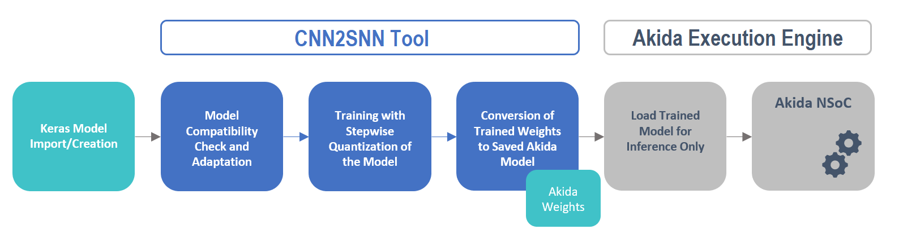

<!DOCTYPE html>
<!--[if IE 8]><html class="no-js lt-ie9" lang="en" > <![endif]-->
<!--[if gt IE 8]><!--> <html class="no-js" lang="en" > <!--<![endif]-->
<head>
  <meta charset="utf-8">
  
  <meta name="viewport" content="width=device-width, initial-scale=1.0">
  
  <title>CNN conversion flow tutorial &mdash; Akida Examples  documentation</title>
  

  
  
    <link rel="shortcut icon" href="../_static/favicon.ico"/>
  
  
  

  
  <script type="text/javascript" src="../_static/js/modernizr.min.js"></script>
  
    
      <script type="text/javascript" id="documentation_options" data-url_root="../" src="../_static/documentation_options.js"></script>
        <script type="text/javascript" src="../_static/jquery.js"></script>
        <script type="text/javascript" src="../_static/underscore.js"></script>
        <script type="text/javascript" src="../_static/doctools.js"></script>
        <script type="text/javascript" src="../_static/language_data.js"></script>
    
    <script type="text/javascript" src="../_static/js/theme.js"></script>

    

  
  <link rel="stylesheet" href="../_static/css/theme.css" type="text/css" />
  <link rel="stylesheet" href="../_static/pygments.css" type="text/css" />
  <link rel="stylesheet" href="../_static/gallery.css" type="text/css" />
    <link rel="index" title="Index" href="../genindex.html" />
    <link rel="search" title="Search" href="../search.html" />
    <link rel="next" title="License" href="../license.html" />
    <link rel="prev" title="MobileNet/ImageNet inference" href="plot_mobilenet_imagenet.html" /> 
</head>

<body class="wy-body-for-nav">

   
  <div class="wy-grid-for-nav">
    
    <nav data-toggle="wy-nav-shift" class="wy-nav-side">
      <div class="wy-side-scroll">
        <div class="wy-side-nav-search"  style="background: #3f51b5" >
          

          
            <a href="../index.html">
          

          
            
            
          
          </a>

          
            
            
              <div class="version">
                Akida 1.8.3
              </div>
            
          

          
<div role="search">
  <form id="rtd-search-form" class="wy-form" action="../search.html" method="get">
    <input type="text" name="q" placeholder="Search docs" />
    <input type="hidden" name="check_keywords" value="yes" />
    <input type="hidden" name="area" value="default" />
  </form>
</div>

          
        </div>

        <div class="wy-menu wy-menu-vertical" data-spy="affix" role="navigation" aria-label="main navigation">
          
            
            
              
            
            
              <ul class="current">
<li class="toctree-l1"><a class="reference internal" href="../index.html">Overview</a></li>
<li class="toctree-l1"><a class="reference internal" href="../installation.html">Installation</a><ul>
<li class="toctree-l2"><a class="reference internal" href="../installation.html#requirements">Requirements</a></li>
<li class="toctree-l2"><a class="reference internal" href="../installation.html#quick-installation">Quick installation</a></li>
<li class="toctree-l2"><a class="reference internal" href="../installation.html#running-examples">Running examples</a></li>
</ul>
</li>
<li class="toctree-l1"><a class="reference internal" href="../user_guide/user_guide.html">User guide</a><ul>
<li class="toctree-l2"><a class="reference internal" href="../user_guide/getting_started.html">Getting started</a><ul>
<li class="toctree-l3"><a class="reference internal" href="../user_guide/getting_started.html#for-beginners">For beginners</a></li>
<li class="toctree-l3"><a class="reference internal" href="../user_guide/getting_started.html#for-users-familiar-with-deep-learning">For users familiar with deep-learning</a></li>
</ul>
</li>
<li class="toctree-l2"><a class="reference internal" href="../user_guide/aee.html">Akida user guide</a><ul>
<li class="toctree-l3"><a class="reference internal" href="../user_guide/aee.html#the-akida-execution-engine">The Akida Execution Engine</a><ul>
<li class="toctree-l4"><a class="reference internal" href="../user_guide/aee.html#id1">1. The Spiking Neural Network model</a></li>
<li class="toctree-l4"><a class="reference internal" href="../user_guide/aee.html#id2">2. Input data format</a></li>
<li class="toctree-l4"><a class="reference internal" href="../user_guide/aee.html#id3">3. Determine training mode</a></li>
<li class="toctree-l4"><a class="reference internal" href="../user_guide/aee.html#id4">4. Interpreting outputs</a></li>
</ul>
</li>
<li class="toctree-l3"><a class="reference internal" href="../user_guide/aee.html#neural-network-model">Neural Network model</a><ul>
<li class="toctree-l4"><a class="reference internal" href="../user_guide/aee.html#specifying-the-neural-network-model">Specifying the Neural Network model</a></li>
<li class="toctree-l4"><a class="reference internal" href="../user_guide/aee.html#saving-and-loading">Saving and loading</a></li>
<li class="toctree-l4"><a class="reference internal" href="../user_guide/aee.html#input-layer-types">Input layer types</a></li>
<li class="toctree-l4"><a class="reference internal" href="../user_guide/aee.html#data-processing-layer-types">Data-Processing layer types</a></li>
</ul>
</li>
<li class="toctree-l3"><a class="reference internal" href="../user_guide/aee.html#id5">Using Akida Unsupervised Learning</a><ul>
<li class="toctree-l4"><a class="reference internal" href="../user_guide/aee.html#learning-constraints">Learning constraints</a></li>
<li class="toctree-l4"><a class="reference internal" href="../user_guide/aee.html#compiling-a-layer">Compiling a layer</a></li>
<li class="toctree-l4"><a class="reference internal" href="../user_guide/aee.html#id7">Learning parameters</a></li>
</ul>
</li>
</ul>
</li>
<li class="toctree-l2"><a class="reference internal" href="../user_guide/cnn2snn.html">CNN2SNN toolkit</a><ul>
<li class="toctree-l3"><a class="reference internal" href="../user_guide/cnn2snn.html#overview">Overview</a><ul>
<li class="toctree-l4"><a class="reference internal" href="../user_guide/cnn2snn.html#conversion-workflow">Conversion Workflow</a></li>
<li class="toctree-l4"><a class="reference internal" href="../user_guide/cnn2snn.html#compatibility-constraints">Compatibility Constraints</a></li>
<li class="toctree-l4"><a class="reference internal" href="../user_guide/cnn2snn.html#typical-training-scenario">Typical training scenario</a></li>
</ul>
</li>
<li class="toctree-l3"><a class="reference internal" href="../user_guide/cnn2snn.html#layers-considerations">Layers Considerations</a><ul>
<li class="toctree-l4"><a class="reference internal" href="../user_guide/cnn2snn.html#supported-layer-types">Supported layer types</a></li>
<li class="toctree-l4"><a class="reference internal" href="../user_guide/cnn2snn.html#quantization-aware-layers">Quantization-aware layers</a></li>
<li class="toctree-l4"><a class="reference internal" href="../user_guide/cnn2snn.html#training-only-layers">Training-Only Layers</a></li>
<li class="toctree-l4"><a class="reference internal" href="../user_guide/cnn2snn.html#first-layers">First Layers</a></li>
<li class="toctree-l4"><a class="reference internal" href="../user_guide/cnn2snn.html#id6">Final Layers</a></li>
</ul>
</li>
<li class="toctree-l3"><a class="reference internal" href="../user_guide/cnn2snn.html#layer-blocks">Layer Blocks</a><ul>
<li class="toctree-l4"><a class="reference internal" href="../user_guide/cnn2snn.html#id7">Overview</a></li>
<li class="toctree-l4"><a class="reference internal" href="../user_guide/cnn2snn.html#conv-block"><code class="docutils literal notranslate"><span class="pre">conv_block</span></code></a></li>
<li class="toctree-l4"><a class="reference internal" href="../user_guide/cnn2snn.html#dense-block"><code class="docutils literal notranslate"><span class="pre">dense_block</span></code></a></li>
<li class="toctree-l4"><a class="reference internal" href="../user_guide/cnn2snn.html#separable-conv-block"><code class="docutils literal notranslate"><span class="pre">separable_conv_block</span></code></a></li>
</ul>
</li>
<li class="toctree-l3"><a class="reference internal" href="../user_guide/cnn2snn.html#tips-and-tricks">Tips and Tricks</a></li>
</ul>
</li>
<li class="toctree-l2"><a class="reference internal" href="../user_guide/hw_constraints.html">Hardware constraints</a><ul>
<li class="toctree-l3"><a class="reference internal" href="../user_guide/hw_constraints.html#input-layer">Input layer</a></li>
<li class="toctree-l3"><a class="reference internal" href="../user_guide/hw_constraints.html#data-processing-layers">Data-Processing layers</a><ul>
<li class="toctree-l4"><a class="reference internal" href="../user_guide/hw_constraints.html#convolutional-layer">Convolutional layer</a></li>
<li class="toctree-l4"><a class="reference internal" href="../user_guide/hw_constraints.html#fully-connected-layer">Fully connected layer</a></li>
</ul>
</li>
</ul>
</li>
</ul>
</li>
<li class="toctree-l1"><a class="reference internal" href="../api_reference/api_reference.html">API reference</a><ul>
<li class="toctree-l2"><a class="reference internal" href="../api_reference/aee_apis.html">Akida Execution Engine</a><ul>
<li class="toctree-l3"><a class="reference internal" href="../api_reference/aee_apis.html#model">Model</a></li>
<li class="toctree-l3"><a class="reference internal" href="../api_reference/aee_apis.html#layer">Layer</a></li>
<li class="toctree-l3"><a class="reference internal" href="../api_reference/aee_apis.html#layerstatistics">LayerStatistics</a></li>
<li class="toctree-l3"><a class="reference internal" href="../api_reference/aee_apis.html#observer">Observer</a></li>
<li class="toctree-l3"><a class="reference internal" href="../api_reference/aee_apis.html#inputdata">InputData</a></li>
<li class="toctree-l3"><a class="reference internal" href="../api_reference/aee_apis.html#inputconvolutional">InputConvolutional</a></li>
<li class="toctree-l3"><a class="reference internal" href="../api_reference/aee_apis.html#inputbcspike">InputBCSpike</a></li>
<li class="toctree-l3"><a class="reference internal" href="../api_reference/aee_apis.html#fullyconnected">FullyConnected</a></li>
<li class="toctree-l3"><a class="reference internal" href="../api_reference/aee_apis.html#convolutional">Convolutional</a></li>
<li class="toctree-l3"><a class="reference internal" href="../api_reference/aee_apis.html#separableconvolutional">SeparableConvolutional</a></li>
<li class="toctree-l3"><a class="reference internal" href="../api_reference/aee_apis.html#dense">Dense</a></li>
<li class="toctree-l3"><a class="reference internal" href="../api_reference/aee_apis.html#sparse">Sparse</a></li>
<li class="toctree-l3"><a class="reference internal" href="../api_reference/aee_apis.html#coords-to-sparse">coords_to_sparse</a></li>
<li class="toctree-l3"><a class="reference internal" href="../api_reference/aee_apis.html#dense-to-sparse">dense_to_sparse</a></li>
<li class="toctree-l3"><a class="reference internal" href="../api_reference/aee_apis.html#backendtype">BackendType</a></li>
<li class="toctree-l3"><a class="reference internal" href="../api_reference/aee_apis.html#convolutionmode">ConvolutionMode</a></li>
<li class="toctree-l3"><a class="reference internal" href="../api_reference/aee_apis.html#poolingtype">PoolingType</a></li>
<li class="toctree-l3"><a class="reference internal" href="../api_reference/aee_apis.html#learningtype">LearningType</a></li>
</ul>
</li>
<li class="toctree-l2"><a class="reference internal" href="../api_reference/cnn2snn_apis.html">CNN2SNN</a><ul>
<li class="toctree-l3"><a class="reference internal" href="../api_reference/cnn2snn_apis.html#convert">convert</a></li>
<li class="toctree-l3"><a class="reference internal" href="../api_reference/cnn2snn_apis.html#check-model-compatibility">check_model_compatibility</a></li>
<li class="toctree-l3"><a class="reference internal" href="../api_reference/cnn2snn_apis.html#weightquantizer">WeightQuantizer</a></li>
<li class="toctree-l3"><a class="reference internal" href="../api_reference/cnn2snn_apis.html#trainableweightquantizer">TrainableWeightQuantizer</a></li>
<li class="toctree-l3"><a class="reference internal" href="../api_reference/cnn2snn_apis.html#weightfloat">WeightFloat</a></li>
<li class="toctree-l3"><a class="reference internal" href="../api_reference/cnn2snn_apis.html#quantizedconv2d">QuantizedConv2D</a></li>
<li class="toctree-l3"><a class="reference internal" href="../api_reference/cnn2snn_apis.html#quantizeddepthwiseconv2d">QuantizedDepthwiseConv2D</a></li>
<li class="toctree-l3"><a class="reference internal" href="../api_reference/cnn2snn_apis.html#quantizeddense">QuantizedDense</a></li>
<li class="toctree-l3"><a class="reference internal" href="../api_reference/cnn2snn_apis.html#quantizedseparableconv2d">QuantizedSeparableConv2D</a></li>
<li class="toctree-l3"><a class="reference internal" href="../api_reference/cnn2snn_apis.html#activationdiscreterelu">ActivationDiscreteRelu</a></li>
<li class="toctree-l3"><a class="reference internal" href="../api_reference/cnn2snn_apis.html#quantizedrelu">QuantizedReLU</a></li>
</ul>
</li>
<li class="toctree-l2"><a class="reference internal" href="../api_reference/akida_models_apis.html">Akida models</a><ul>
<li class="toctree-l3"><a class="reference internal" href="../api_reference/akida_models_apis.html#quantization-blocks">Quantization blocks</a><ul>
<li class="toctree-l4"><a class="reference internal" href="../api_reference/akida_models_apis.html#conv-block">conv_block</a></li>
<li class="toctree-l4"><a class="reference internal" href="../api_reference/akida_models_apis.html#separable-conv-block">separable_conv_block</a></li>
<li class="toctree-l4"><a class="reference internal" href="../api_reference/akida_models_apis.html#dense-block">dense_block</a></li>
</ul>
</li>
<li class="toctree-l3"><a class="reference internal" href="../api_reference/akida_models_apis.html#model-zoo">Model zoo</a><ul>
<li class="toctree-l4"><a class="reference internal" href="../api_reference/akida_models_apis.html#mobilenet">Mobilenet</a></li>
<li class="toctree-l4"><a class="reference internal" href="../api_reference/akida_models_apis.html#ds-cnn">DS-CNN</a></li>
<li class="toctree-l4"><a class="reference internal" href="../api_reference/akida_models_apis.html#vgg">VGG</a></li>
</ul>
</li>
</ul>
</li>
</ul>
</li>
<li class="toctree-l1 current"><a class="reference internal" href="index.html">Examples</a><ul class="current">
<li class="toctree-l2"><a class="reference internal" href="plot_gxnor_mnist.html">GXNOR/MNIST inference</a><ul>
<li class="toctree-l3"><a class="reference internal" href="plot_gxnor_mnist.html#loading-the-mnist-dataset">1. Loading the MNIST dataset</a></li>
<li class="toctree-l3"><a class="reference internal" href="plot_gxnor_mnist.html#look-at-some-images-from-the-test-dataset">2. Look at some images from the test dataset</a></li>
<li class="toctree-l3"><a class="reference internal" href="plot_gxnor_mnist.html#load-the-pre-trained-akida-model">3. Load the pre-trained Akida model</a></li>
<li class="toctree-l3"><a class="reference internal" href="plot_gxnor_mnist.html#classify-a-single-image">4. Classify a single image</a></li>
<li class="toctree-l3"><a class="reference internal" href="plot_gxnor_mnist.html#check-performance-across-a-number-of-samples">5. Check performance across a number of samples</a></li>
</ul>
</li>
<li class="toctree-l2"><a class="reference internal" href="plot_regression.html">Regression tutorial</a><ul>
<li class="toctree-l3"><a class="reference internal" href="plot_regression.html#load-dependencies">1. Load dependencies</a></li>
<li class="toctree-l3"><a class="reference internal" href="plot_regression.html#load-the-dataset">2. Load the dataset</a></li>
<li class="toctree-l3"><a class="reference internal" href="plot_regression.html#create-a-keras-model-satisfying-akida-nsoc-requirements">3. Create a Keras model satisfying Akida NSoC requirements</a></li>
<li class="toctree-l3"><a class="reference internal" href="plot_regression.html#check-performance">4. Check performance</a></li>
<li class="toctree-l3"><a class="reference internal" href="plot_regression.html#conversion-to-akida">5. Conversion to Akida</a><ul>
<li class="toctree-l4"><a class="reference internal" href="plot_regression.html#convert-the-trained-keras-model-to-akida">5.1 Convert the trained Keras model to Akida</a></li>
<li class="toctree-l4"><a class="reference internal" href="plot_regression.html#check-akida-model-accuracy">5.2 Check Akida model accuracy</a></li>
</ul>
</li>
<li class="toctree-l3"><a class="reference internal" href="plot_regression.html#estimate-age-on-a-single-image">6. Estimate age on a single image</a></li>
</ul>
</li>
<li class="toctree-l2"><a class="reference internal" href="plot_ds_cnn_kws.html">DS-CNN/KWS inference</a><ul>
<li class="toctree-l3"><a class="reference internal" href="plot_ds_cnn_kws.html#load-cnn2snn-tool-dependencies">1. Load CNN2SNN tool dependencies</a></li>
<li class="toctree-l3"><a class="reference internal" href="plot_ds_cnn_kws.html#load-the-preprocessed-dataset">2. Load the preprocessed dataset</a></li>
<li class="toctree-l3"><a class="reference internal" href="plot_ds_cnn_kws.html#create-a-keras-model-satisfying-akida-nsoc-requirements">3. Create a Keras model satisfying Akida NSoC requirements</a></li>
<li class="toctree-l3"><a class="reference internal" href="plot_ds_cnn_kws.html#check-performance">4. Check performance</a></li>
<li class="toctree-l3"><a class="reference internal" href="plot_ds_cnn_kws.html#conversion-to-akida">5. Conversion to Akida</a><ul>
<li class="toctree-l4"><a class="reference internal" href="plot_ds_cnn_kws.html#convert-the-trained-keras-model-to-akida">5.1 Convert the trained Keras model to Akida</a></li>
<li class="toctree-l4"><a class="reference internal" href="plot_ds_cnn_kws.html#check-prediction-accuracy">5.2 Check prediction accuracy</a></li>
<li class="toctree-l4"><a class="reference internal" href="plot_ds_cnn_kws.html#confusion-matrix">5.3 Confusion matrix</a></li>
</ul>
</li>
</ul>
</li>
<li class="toctree-l2"><a class="reference internal" href="plot_vgg_ds_cnn_cifar10.html">VGG and DS-CNN/CIFAR10 inference</a><ul>
<li class="toctree-l3"><a class="reference internal" href="plot_vgg_ds_cnn_cifar10.html#load-cnn2snn-tool-dependencies">1. Load CNN2SNN tool dependencies</a></li>
<li class="toctree-l3"><a class="reference internal" href="plot_vgg_ds_cnn_cifar10.html#load-and-reshape-cifar10-dataset">2. Load and reshape CIFAR10 dataset</a></li>
<li class="toctree-l3"><a class="reference internal" href="plot_vgg_ds_cnn_cifar10.html#create-a-quantized-keras-vgg-model">3. Create a quantized Keras VGG model</a><ul>
<li class="toctree-l4"><a class="reference internal" href="plot_vgg_ds_cnn_cifar10.html#a-instantiate-keras-model">3.A Instantiate Keras model</a></li>
<li class="toctree-l4"><a class="reference internal" href="plot_vgg_ds_cnn_cifar10.html#b-check-performance">3.B Check performance</a></li>
</ul>
</li>
<li class="toctree-l3"><a class="reference internal" href="plot_vgg_ds_cnn_cifar10.html#conversion-to-akida">4. Conversion to Akida</a><ul>
<li class="toctree-l4"><a class="reference internal" href="plot_vgg_ds_cnn_cifar10.html#a-convert-to-akida-model">4.A Convert to Akida model</a></li>
<li class="toctree-l4"><a class="reference internal" href="plot_vgg_ds_cnn_cifar10.html#b-check-hardware-compliancy">4.B Check hardware compliancy</a></li>
<li class="toctree-l4"><a class="reference internal" href="plot_vgg_ds_cnn_cifar10.html#c-check-performance">4.C Check performance</a></li>
</ul>
</li>
<li class="toctree-l3"><a class="reference internal" href="plot_vgg_ds_cnn_cifar10.html#create-a-quantized-keras-ds-cnn-model">5. Create a quantized Keras DS-CNN model</a><ul>
<li class="toctree-l4"><a class="reference internal" href="plot_vgg_ds_cnn_cifar10.html#a-instantiate-keras-ds-cnn-model">5.A Instantiate Keras DS-CNN model</a></li>
<li class="toctree-l4"><a class="reference internal" href="plot_vgg_ds_cnn_cifar10.html#id1">5.B Check performance</a></li>
</ul>
</li>
<li class="toctree-l3"><a class="reference internal" href="plot_vgg_ds_cnn_cifar10.html#id2">6. Conversion to Akida</a><ul>
<li class="toctree-l4"><a class="reference internal" href="plot_vgg_ds_cnn_cifar10.html#id3">6.A Convert to Akida model</a></li>
<li class="toctree-l4"><a class="reference internal" href="plot_vgg_ds_cnn_cifar10.html#id4">6.B Check hardware compliancy</a></li>
<li class="toctree-l4"><a class="reference internal" href="plot_vgg_ds_cnn_cifar10.html#id5">6.C Check performance</a></li>
<li class="toctree-l4"><a class="reference internal" href="plot_vgg_ds_cnn_cifar10.html#d-show-predictions-for-a-random-image">6D. Show predictions for a random image</a></li>
</ul>
</li>
</ul>
</li>
<li class="toctree-l2"><a class="reference internal" href="plot_transfer_learning.html">Transfer learning with MobileNet for cats vs. dogs</a><ul>
<li class="toctree-l3"><a class="reference internal" href="plot_transfer_learning.html#transfer-learning-process">1. Transfer learning process</a></li>
<li class="toctree-l3"><a class="reference internal" href="plot_transfer_learning.html#load-and-preprocess-data">2. Load and preprocess data</a><ul>
<li class="toctree-l4"><a class="reference internal" href="plot_transfer_learning.html#a-load-and-split-data">2.A - Load and split data</a></li>
<li class="toctree-l4"><a class="reference internal" href="plot_transfer_learning.html#b-preprocess-the-test-set">2.B - Preprocess the test set</a></li>
<li class="toctree-l4"><a class="reference internal" href="plot_transfer_learning.html#c-get-labels">2.C - Get labels</a></li>
</ul>
</li>
<li class="toctree-l3"><a class="reference internal" href="plot_transfer_learning.html#convert-a-quantized-keras-model-to-akida">3. Convert a quantized Keras model to Akida</a><ul>
<li class="toctree-l4"><a class="reference internal" href="plot_transfer_learning.html#a-instantiate-a-keras-base-model">3.A - Instantiate a Keras base model</a></li>
<li class="toctree-l4"><a class="reference internal" href="plot_transfer_learning.html#b-modify-the-network-and-load-pre-trained-weights">3.B - Modify the network and load pre-trained weights</a></li>
<li class="toctree-l4"><a class="reference internal" href="plot_transfer_learning.html#c-convert-to-akida">3.C - Convert to Akida</a></li>
</ul>
</li>
<li class="toctree-l3"><a class="reference internal" href="plot_transfer_learning.html#classify-test-images">4. Classify test images</a><ul>
<li class="toctree-l4"><a class="reference internal" href="plot_transfer_learning.html#a-classify-test-images">4.A Classify test images</a></li>
<li class="toctree-l4"><a class="reference internal" href="plot_transfer_learning.html#b-compare-results">4.B Compare results</a></li>
</ul>
</li>
</ul>
</li>
<li class="toctree-l2"><a class="reference internal" href="plot_mobilenet_imagenet.html">MobileNet/ImageNet inference</a><ul>
<li class="toctree-l3"><a class="reference internal" href="plot_mobilenet_imagenet.html#load-cnn2snn-tool-dependencies">1. Load CNN2SNN tool dependencies</a></li>
<li class="toctree-l3"><a class="reference internal" href="plot_mobilenet_imagenet.html#load-test-images-from-imagenet">2. Load test images from ImageNet</a><ul>
<li class="toctree-l4"><a class="reference internal" href="plot_mobilenet_imagenet.html#load-test-images-and-preprocess-test-images">2.1 Load test images and preprocess test images</a></li>
<li class="toctree-l4"><a class="reference internal" href="plot_mobilenet_imagenet.html#load-labels">2.2 Load labels</a></li>
</ul>
</li>
<li class="toctree-l3"><a class="reference internal" href="plot_mobilenet_imagenet.html#create-a-quantized-keras-model">3. Create a quantized Keras model</a><ul>
<li class="toctree-l4"><a class="reference internal" href="plot_mobilenet_imagenet.html#instantiate-keras-model">3.1 Instantiate Keras model</a></li>
<li class="toctree-l4"><a class="reference internal" href="plot_mobilenet_imagenet.html#check-performance-of-the-keras-model">3.2 Check performance of the Keras model</a></li>
</ul>
</li>
<li class="toctree-l3"><a class="reference internal" href="plot_mobilenet_imagenet.html#convert-keras-model-for-akida-nsoc">4. Convert Keras model for Akida NSoC</a><ul>
<li class="toctree-l4"><a class="reference internal" href="plot_mobilenet_imagenet.html#convert-keras-model-to-an-akida-compatible-model">4.1 Convert Keras model to an Akida compatible model</a></li>
<li class="toctree-l4"><a class="reference internal" href="plot_mobilenet_imagenet.html#test-performance-of-the-akida-model">4.2 Test performance of the Akida model</a></li>
<li class="toctree-l4"><a class="reference internal" href="plot_mobilenet_imagenet.html#show-predictions-for-a-random-test-image">4.3 Show predictions for a random test image</a></li>
</ul>
</li>
</ul>
</li>
<li class="toctree-l2 current"><a class="current reference internal" href="#">CNN conversion flow tutorial</a><ul>
<li class="toctree-l3"><a class="reference internal" href="#system-configuration">1. System configuration</a><ul>
<li class="toctree-l4"><a class="reference internal" href="#load-cnn2snn-tool-dependencies">1.1 Load CNN2SNN tool dependencies</a></li>
<li class="toctree-l4"><a class="reference internal" href="#load-and-reshape-mnist-dataset">1.2 Load and reshape MNIST dataset</a></li>
<li class="toctree-l4"><a class="reference internal" href="#set-training-parameters">1.3 Set training parameters</a></li>
</ul>
</li>
<li class="toctree-l3"><a class="reference internal" href="#model-creation-and-performance-check">2. Model creation and performance check</a><ul>
<li class="toctree-l4"><a class="reference internal" href="#model-creation">2.1 Model creation</a></li>
<li class="toctree-l4"><a class="reference internal" href="#performance-check">2.2 Performance check</a></li>
</ul>
</li>
<li class="toctree-l3"><a class="reference internal" href="#model-akida-compatibility-check-and-changes">3. Model Akida-compatibility check and changes</a><ul>
<li class="toctree-l4"><a class="reference internal" href="#compatibility-check">3.1 Compatibility check</a></li>
<li class="toctree-l4"><a class="reference internal" href="#model-adaptation">3.2 Model adaptation</a></li>
<li class="toctree-l4"><a class="reference internal" href="#id1">3.3 Performance check</a></li>
</ul>
</li>
<li class="toctree-l3"><a class="reference internal" href="#model-quantization-and-training">4. Model quantization and training</a><ul>
<li class="toctree-l4"><a class="reference internal" href="#quantize-the-model">4.1 Quantize the model</a></li>
<li class="toctree-l4"><a class="reference internal" href="#id2">4.2 Performance check</a></li>
</ul>
</li>
<li class="toctree-l3"><a class="reference internal" href="#convert-trained-model-for-akida-and-test">5. Convert trained model for Akida and test</a><ul>
<li class="toctree-l4"><a class="reference internal" href="#final-conversion">5.1 Final conversion</a></li>
<li class="toctree-l4"><a class="reference internal" href="#performances-check-with-the-akida-execution-engine">5.2 Performances check with the Akida Execution Engine</a></li>
</ul>
</li>
</ul>
</li>
</ul>
</li>
<li class="toctree-l1"><a class="reference external" href="https://github.com/Brainchip-Inc/akida_examples/releases">Changelog</a></li>
<li class="toctree-l1"><a class="reference external" href="https://support.brainchip.com/portal/home">Support</a></li>
<li class="toctree-l1"><a class="reference internal" href="../license.html">License</a></li>
</ul>

            
          
        </div>
      </div>
    </nav>

    <section data-toggle="wy-nav-shift" class="wy-nav-content-wrap">

      
      <nav class="wy-nav-top" aria-label="top navigation">
        
          <i data-toggle="wy-nav-top" class="fa fa-bars"></i>
          <a href="../index.html">Akida Examples</a>
        
      </nav>


      <div class="wy-nav-content">
        
        <div class="rst-content">
        
          


<div role="navigation" aria-label="breadcrumbs navigation">

  <ul class="wy-breadcrumbs">
    
      <li><a href="../index.html">Docs</a> &raquo;</li>
        
          <li><a href="index.html">Akida examples</a> &raquo;</li>
        
      <li>CNN conversion flow tutorial</li>
    
    
      <li class="wy-breadcrumbs-aside">
        
            
        
      </li>
    
  </ul>

  
  <hr/>
</div>
          <div role="main" class="document" itemscope="itemscope" itemtype="http://schema.org/Article">
           <div itemprop="articleBody">
            
  <div class="sphx-glr-download-link-note admonition note">
<p class="admonition-title">Note</p>
<p>Click <a class="reference internal" href="#sphx-glr-download-examples-plot-cnn-flow-py"><span class="std std-ref">here</span></a> to download the full example code</p>
</div>
<div class="sphx-glr-example-title section" id="cnn-conversion-flow-tutorial">
<span id="sphx-glr-examples-plot-cnn-flow-py"></span><h1>CNN conversion flow tutorial<a class="headerlink" href="#cnn-conversion-flow-tutorial" title="Permalink to this headline">¶</a></h1>
<p>The CNN2SNN tool is based on Keras, TensorFlow high-level API for building and
training deep learning models.</p>
<div class="admonition note">
<p class="admonition-title">Note</p>
<p>Please refer to TensorFlow  <a class="reference external" href="https://www.tensorflow.org/api_docs/python/tf/keras/models">tf.keras.models</a>
module for model creation/import details and <a class="reference external" href="https://www.tensorflow.org/guide">TensorFlow
Guide</a> for details of how
TensorFlow works.</p>
</div>
<p><strong>CNN2SNN tool</strong> allows you to <strong>convert CNN networks to SNN networks</strong>
compatible with the <strong>Akida NSoC</strong> in a few steps.</p>
<div class="admonition note">
<p class="admonition-title">Note</p>
<p>MNIST example below is light enough so you do not need a <a class="reference external" href="https://www.tensorflow.org/install/gpu">GPU</a> to run the CNN2SNN
tool.</p>
</div>

<div class="section" id="system-configuration">
<h2>1. System configuration<a class="headerlink" href="#system-configuration" title="Permalink to this headline">¶</a></h2>
<div class="section" id="load-cnn2snn-tool-dependencies">
<h3>1.1 Load CNN2SNN tool dependencies<a class="headerlink" href="#load-cnn2snn-tool-dependencies" title="Permalink to this headline">¶</a></h3>
<div class="highlight-default notranslate"><div class="highlight"><pre><span></span><span class="c1"># System imports</span>
<span class="kn">import</span> <span class="nn">os</span>
<span class="kn">import</span> <span class="nn">sys</span>
<span class="kn">import</span> <span class="nn">numpy</span> <span class="k">as</span> <span class="nn">np</span>
<span class="kn">from</span> <span class="nn">sklearn.metrics</span> <span class="kn">import</span> <span class="n">accuracy_score</span>
<span class="kn">from</span> <span class="nn">tempfile</span> <span class="kn">import</span> <span class="n">TemporaryDirectory</span>

<span class="c1"># TensorFlow imports</span>
<span class="kn">import</span> <span class="nn">tensorflow.keras.backend</span> <span class="k">as</span> <span class="nn">K</span>
<span class="kn">from</span> <span class="nn">tensorflow.keras.callbacks</span> <span class="kn">import</span> <span class="n">LearningRateScheduler</span>
<span class="kn">from</span> <span class="nn">tensorflow.keras.datasets</span> <span class="kn">import</span> <span class="n">mnist</span>
<span class="kn">from</span> <span class="nn">tensorflow.keras.layers</span> <span class="kn">import</span> <span class="n">Conv2D</span><span class="p">,</span> <span class="n">Dense</span><span class="p">,</span> <span class="n">BatchNormalization</span><span class="p">,</span> <span class="n">MaxPooling2D</span><span class="p">,</span> <span class="n">Activation</span><span class="p">,</span> <span class="n">ReLU</span><span class="p">,</span> <span class="n">Flatten</span><span class="p">,</span> <span class="n">Input</span>
<span class="kn">from</span> <span class="nn">tensorflow.keras.models</span> <span class="kn">import</span> <span class="n">Sequential</span><span class="p">,</span> <span class="n">Model</span>
<span class="kn">from</span> <span class="nn">tensorflow.keras.optimizers</span> <span class="kn">import</span> <span class="n">Adam</span>
<span class="kn">from</span> <span class="nn">tensorflow.keras.utils</span> <span class="kn">import</span> <span class="n">to_categorical</span>
</pre></div>
</div>
</div>
<div class="section" id="load-and-reshape-mnist-dataset">
<h3>1.2 Load and reshape MNIST dataset<a class="headerlink" href="#load-and-reshape-mnist-dataset" title="Permalink to this headline">¶</a></h3>
<p>After loading, we make 3 transformations on the dataset:</p>
<ol class="arabic simple">
<li><p>Reshape the sample content data (x values) into a num_samples x width x
height x channels matrix.</p></li>
</ol>
<div class="admonition note">
<p class="admonition-title">Note</p>
<p>At this point, we’ll set aside the raw data for testing our
converted model in the Akida Execution Engine later</p>
</div>
<ol class="arabic simple" start="2">
<li><p>Rescale the 8-bit loaded data to the range 0-to-1 for training.</p></li>
</ol>
<div class="admonition note">
<p class="admonition-title">Note</p>
<p>This shift makes almost no difference in the current example, but
for some datasets rescaling the absolute values (and also shifting
to zero-mean) can make a really major difference.</p>
<p>Also note that we store the scaling values <code class="docutils literal notranslate"><span class="pre">input_scaling</span></code> for
use when preparing the model for the Akida Execution Engine. The
implementation of the Akida neural network allows us to completely
skip the rescaling step (i.e. the Akida model should be fed with
the raw 8-bit values) but that does require information about what
scaling was applied prior to training - see below for more details.</p>
</div>
<p>3. Transform the loaded labels from a scalar representation (single integer
value per sample) to a one-hot vector representation, appropriate for use
with the squared hinge loss function used in the current model.</p>
<div class="admonition note">
<p class="admonition-title">Note</p>
<p>Input data normalization is a common step dealing with CNN
(rationale is to keep data in a range that works with selected
optimizers, some interesting reading can be found
<a class="reference external" href="https://www.jeremyjordan.me/batch-normalization/">here</a>.</p>
</div>
<div class="highlight-default notranslate"><div class="highlight"><pre><span></span><span class="c1"># Load MNIST dataset</span>
<span class="p">(</span><span class="n">x_train</span><span class="p">,</span> <span class="n">y_train</span><span class="p">),</span> <span class="p">(</span><span class="n">x_test</span><span class="p">,</span> <span class="n">y_test</span><span class="p">)</span> <span class="o">=</span> <span class="n">mnist</span><span class="o">.</span><span class="n">load_data</span><span class="p">()</span>

<span class="c1"># Reshape x-data</span>
<span class="n">x_train</span> <span class="o">=</span> <span class="n">x_train</span><span class="o">.</span><span class="n">reshape</span><span class="p">(</span><span class="mi">60000</span><span class="p">,</span> <span class="mi">28</span><span class="p">,</span> <span class="mi">28</span><span class="p">,</span> <span class="mi">1</span><span class="p">)</span>
<span class="n">x_test</span> <span class="o">=</span> <span class="n">x_test</span><span class="o">.</span><span class="n">reshape</span><span class="p">(</span><span class="mi">10000</span><span class="p">,</span> <span class="mi">28</span><span class="p">,</span> <span class="mi">28</span><span class="p">,</span> <span class="mi">1</span><span class="p">)</span>

<span class="c1"># Set aside raw test data for use with Akida Execution Engine later</span>
<span class="n">raw_x_test</span> <span class="o">=</span> <span class="n">x_test</span><span class="o">.</span><span class="n">astype</span><span class="p">(</span><span class="s1">&#39;uint8&#39;</span><span class="p">)</span>
<span class="n">raw_y_test</span> <span class="o">=</span> <span class="n">y_test</span>

<span class="c1"># Rescale x-data</span>
<span class="n">a</span> <span class="o">=</span> <span class="mi">255</span>
<span class="n">b</span> <span class="o">=</span> <span class="mi">0</span>
<span class="n">input_scaling</span> <span class="o">=</span> <span class="p">(</span><span class="n">a</span><span class="p">,</span> <span class="n">b</span><span class="p">)</span>
<span class="n">x_train</span> <span class="o">=</span> <span class="n">x_train</span><span class="o">.</span><span class="n">astype</span><span class="p">(</span><span class="s1">&#39;float32&#39;</span><span class="p">)</span>
<span class="n">x_test</span> <span class="o">=</span> <span class="n">x_test</span><span class="o">.</span><span class="n">astype</span><span class="p">(</span><span class="s1">&#39;float32&#39;</span><span class="p">)</span>
<span class="n">x_train</span> <span class="o">=</span> <span class="p">(</span><span class="n">x_train</span> <span class="o">-</span> <span class="n">b</span><span class="p">)</span> <span class="o">/</span> <span class="n">a</span>
<span class="n">x_test</span> <span class="o">=</span> <span class="p">(</span><span class="n">x_test</span> <span class="o">-</span> <span class="n">b</span><span class="p">)</span> <span class="o">/</span> <span class="n">a</span>

<span class="c1"># Transform scalar labels to one-hot representation, scaled to +/- 1 appropriate for squared hinge loss function</span>
<span class="n">y_train</span> <span class="o">=</span> <span class="n">to_categorical</span><span class="p">(</span><span class="n">y_train</span><span class="p">,</span> <span class="mi">10</span><span class="p">)</span> <span class="o">*</span> <span class="mi">2</span> <span class="o">-</span> <span class="mi">1</span>
<span class="n">y_test</span> <span class="o">=</span> <span class="n">to_categorical</span><span class="p">(</span><span class="n">y_test</span><span class="p">,</span> <span class="mi">10</span><span class="p">)</span> <span class="o">*</span> <span class="mi">2</span> <span class="o">-</span> <span class="mi">1</span>
</pre></div>
</div>
</div>
<div class="section" id="set-training-parameters">
<h3>1.3 Set training parameters<a class="headerlink" href="#set-training-parameters" title="Permalink to this headline">¶</a></h3>
<p>Set some training parameters used across the different training sessions:</p>
<div class="highlight-default notranslate"><div class="highlight"><pre><span></span><span class="c1"># Set dataset relative training parameters</span>
<span class="n">epochs</span> <span class="o">=</span> <span class="mi">5</span>
<span class="n">batch_size</span> <span class="o">=</span> <span class="mi">128</span>

<span class="c1"># Set the learning rate parameters</span>
<span class="n">lr_start</span> <span class="o">=</span> <span class="mf">1e-3</span>
<span class="n">lr_end</span> <span class="o">=</span> <span class="mf">1e-4</span>
<span class="n">lr_decay</span> <span class="o">=</span> <span class="p">(</span><span class="n">lr_end</span> <span class="o">/</span> <span class="n">lr_start</span><span class="p">)</span><span class="o">**</span><span class="p">(</span><span class="mf">1.</span> <span class="o">/</span> <span class="n">epochs</span><span class="p">)</span>
</pre></div>
</div>
</div>
</div>
<div class="section" id="model-creation-and-performance-check">
<h2>2. Model creation and performance check<a class="headerlink" href="#model-creation-and-performance-check" title="Permalink to this headline">¶</a></h2>
<div class="section" id="model-creation">
<h3>2.1 Model creation<a class="headerlink" href="#model-creation" title="Permalink to this headline">¶</a></h3>
<p>Note that at this stage, there is nothing specific to the Akida NSoC.
This start point is very much a completely standard CNN as defined
within <a class="reference external" href="https://www.tensorflow.org/api_docs/python/tf/keras">Keras</a>.</p>
<p>An appropriate model for MNIST (inspired by <a class="reference external" href="https://arxiv.org/pdf/1705.09283.pdf">this
paper</a>) might look something
like the following:</p>
<div class="highlight-default notranslate"><div class="highlight"><pre><span></span><span class="n">img_input</span> <span class="o">=</span> <span class="n">Input</span><span class="p">(</span><span class="n">shape</span><span class="o">=</span><span class="p">(</span><span class="mi">28</span><span class="p">,</span> <span class="mi">28</span><span class="p">,</span> <span class="mi">1</span><span class="p">))</span>
<span class="n">x</span> <span class="o">=</span> <span class="n">Conv2D</span><span class="p">(</span><span class="n">filters</span><span class="o">=</span><span class="mi">32</span><span class="p">,</span>
           <span class="n">kernel_size</span><span class="o">=</span><span class="p">(</span><span class="mi">5</span><span class="p">,</span> <span class="mi">5</span><span class="p">),</span>
           <span class="n">padding</span><span class="o">=</span><span class="s1">&#39;same&#39;</span><span class="p">,</span>
           <span class="n">use_bias</span><span class="o">=</span><span class="kc">False</span><span class="p">,</span>
           <span class="n">data_format</span><span class="o">=</span><span class="s1">&#39;channels_last&#39;</span><span class="p">)(</span><span class="n">img_input</span><span class="p">)</span>
<span class="n">x</span> <span class="o">=</span> <span class="n">MaxPooling2D</span><span class="p">(</span><span class="n">pool_size</span><span class="o">=</span><span class="p">(</span><span class="mi">2</span><span class="p">,</span> <span class="mi">2</span><span class="p">),</span> <span class="n">strides</span><span class="o">=</span><span class="p">(</span><span class="mi">2</span><span class="p">,</span> <span class="mi">2</span><span class="p">),</span> <span class="n">padding</span><span class="o">=</span><span class="s1">&#39;same&#39;</span><span class="p">)(</span><span class="n">x</span><span class="p">)</span>
<span class="n">x</span> <span class="o">=</span> <span class="n">BatchNormalization</span><span class="p">()(</span><span class="n">x</span><span class="p">)</span>
<span class="n">x</span> <span class="o">=</span> <span class="n">ReLU</span><span class="p">(</span><span class="mf">6.</span><span class="p">)(</span><span class="n">x</span><span class="p">)</span>

<span class="n">x</span> <span class="o">=</span> <span class="n">Conv2D</span><span class="p">(</span><span class="n">filters</span><span class="o">=</span><span class="mi">32</span><span class="p">,</span> <span class="n">kernel_size</span><span class="o">=</span><span class="p">(</span><span class="mi">5</span><span class="p">,</span> <span class="mi">5</span><span class="p">),</span> <span class="n">padding</span><span class="o">=</span><span class="s1">&#39;same&#39;</span><span class="p">,</span> <span class="n">use_bias</span><span class="o">=</span><span class="kc">False</span><span class="p">)(</span><span class="n">x</span><span class="p">)</span>
<span class="n">x</span> <span class="o">=</span> <span class="n">MaxPooling2D</span><span class="p">(</span><span class="n">pool_size</span><span class="o">=</span><span class="p">(</span><span class="mi">2</span><span class="p">,</span> <span class="mi">2</span><span class="p">),</span> <span class="n">strides</span><span class="o">=</span><span class="p">(</span><span class="mi">2</span><span class="p">,</span> <span class="mi">2</span><span class="p">),</span> <span class="n">padding</span><span class="o">=</span><span class="s1">&#39;same&#39;</span><span class="p">)(</span><span class="n">x</span><span class="p">)</span>
<span class="n">x</span> <span class="o">=</span> <span class="n">BatchNormalization</span><span class="p">()(</span><span class="n">x</span><span class="p">)</span>
<span class="n">x</span> <span class="o">=</span> <span class="n">ReLU</span><span class="p">(</span><span class="mf">6.</span><span class="p">)(</span><span class="n">x</span><span class="p">)</span>

<span class="n">x</span> <span class="o">=</span> <span class="n">Conv2D</span><span class="p">(</span><span class="n">filters</span><span class="o">=</span><span class="mi">32</span><span class="p">,</span> <span class="n">kernel_size</span><span class="o">=</span><span class="p">(</span><span class="mi">5</span><span class="p">,</span> <span class="mi">5</span><span class="p">),</span> <span class="n">padding</span><span class="o">=</span><span class="s1">&#39;same&#39;</span><span class="p">,</span> <span class="n">use_bias</span><span class="o">=</span><span class="kc">False</span><span class="p">)(</span><span class="n">x</span><span class="p">)</span>
<span class="n">x</span> <span class="o">=</span> <span class="n">BatchNormalization</span><span class="p">()(</span><span class="n">x</span><span class="p">)</span>
<span class="n">x</span> <span class="o">=</span> <span class="n">ReLU</span><span class="p">(</span><span class="mf">6.</span><span class="p">)(</span><span class="n">x</span><span class="p">)</span>

<span class="n">x</span> <span class="o">=</span> <span class="n">Flatten</span><span class="p">()(</span><span class="n">x</span><span class="p">)</span>
<span class="n">x</span> <span class="o">=</span> <span class="n">Dense</span><span class="p">(</span><span class="mi">512</span><span class="p">,</span> <span class="n">use_bias</span><span class="o">=</span><span class="kc">False</span><span class="p">)(</span><span class="n">x</span><span class="p">)</span>
<span class="n">x</span> <span class="o">=</span> <span class="n">BatchNormalization</span><span class="p">()(</span><span class="n">x</span><span class="p">)</span>
<span class="n">x</span> <span class="o">=</span> <span class="n">ReLU</span><span class="p">(</span><span class="mf">6.</span><span class="p">)(</span><span class="n">x</span><span class="p">)</span>
<span class="n">x</span> <span class="o">=</span> <span class="n">Dense</span><span class="p">(</span><span class="mi">10</span><span class="p">,</span> <span class="n">use_bias</span><span class="o">=</span><span class="kc">False</span><span class="p">)(</span><span class="n">x</span><span class="p">)</span>

<span class="n">model_keras</span> <span class="o">=</span> <span class="n">Model</span><span class="p">(</span><span class="n">img_input</span><span class="p">,</span> <span class="n">x</span><span class="p">,</span> <span class="n">name</span><span class="o">=</span><span class="s1">&#39;mnistnet&#39;</span><span class="p">)</span>

<span class="n">opt</span> <span class="o">=</span> <span class="n">Adam</span><span class="p">(</span><span class="n">lr</span><span class="o">=</span><span class="n">lr_start</span><span class="p">)</span>
<span class="n">model_keras</span><span class="o">.</span><span class="n">compile</span><span class="p">(</span><span class="n">loss</span><span class="o">=</span><span class="s1">&#39;squared_hinge&#39;</span><span class="p">,</span> <span class="n">optimizer</span><span class="o">=</span><span class="n">opt</span><span class="p">,</span> <span class="n">metrics</span><span class="o">=</span><span class="p">[</span><span class="s1">&#39;accuracy&#39;</span><span class="p">])</span>
<span class="n">model_keras</span><span class="o">.</span><span class="n">summary</span><span class="p">()</span>
</pre></div>
</div>
<p class="sphx-glr-script-out">Out:</p>
<div class="sphx-glr-script-out highlight-none notranslate"><div class="highlight"><pre><span></span>Model: &quot;mnistnet&quot;
_________________________________________________________________
Layer (type)                 Output Shape              Param #
=================================================================
input_6 (InputLayer)         [(None, 28, 28, 1)]       0
_________________________________________________________________
conv2d (Conv2D)              (None, 28, 28, 32)        800
_________________________________________________________________
max_pooling2d (MaxPooling2D) (None, 14, 14, 32)        0
_________________________________________________________________
batch_normalization (BatchNo (None, 14, 14, 32)        128
_________________________________________________________________
re_lu (ReLU)                 (None, 14, 14, 32)        0
_________________________________________________________________
conv2d_1 (Conv2D)            (None, 14, 14, 32)        25600
_________________________________________________________________
max_pooling2d_1 (MaxPooling2 (None, 7, 7, 32)          0
_________________________________________________________________
batch_normalization_1 (Batch (None, 7, 7, 32)          128
_________________________________________________________________
re_lu_1 (ReLU)               (None, 7, 7, 32)          0
_________________________________________________________________
conv2d_2 (Conv2D)            (None, 7, 7, 32)          25600
_________________________________________________________________
batch_normalization_2 (Batch (None, 7, 7, 32)          128
_________________________________________________________________
re_lu_2 (ReLU)               (None, 7, 7, 32)          0
_________________________________________________________________
flatten_1 (Flatten)          (None, 1568)              0
_________________________________________________________________
dense (Dense)                (None, 512)               802816
_________________________________________________________________
batch_normalization_3 (Batch (None, 512)               2048
_________________________________________________________________
re_lu_3 (ReLU)               (None, 512)               0
_________________________________________________________________
dense_1 (Dense)              (None, 10)                5120
=================================================================
Total params: 862,368
Trainable params: 861,152
Non-trainable params: 1,216
_________________________________________________________________
</pre></div>
</div>
<div class="admonition note">
<p class="admonition-title">Note</p>
<p>Adam optimizer is commonly used, more details can be found
<a class="reference external" href="https://arxiv.org/abs/1609.04747">here</a>.</p>
</div>
</div>
<div class="section" id="performance-check">
<h3>2.2 Performance check<a class="headerlink" href="#performance-check" title="Permalink to this headline">¶</a></h3>
<p>Before going any further, check the current model performance as a
benchmark for CNN2SNN conversion.
The created model should achieve a test accuracy a little over 99% after
5 epochs:</p>
<div class="highlight-default notranslate"><div class="highlight"><pre><span></span><span class="n">callbacks</span> <span class="o">=</span> <span class="p">[]</span>
<span class="n">lr_scheduler</span> <span class="o">=</span> <span class="n">LearningRateScheduler</span><span class="p">(</span><span class="k">lambda</span> <span class="n">e</span><span class="p">:</span> <span class="n">lr_start</span> <span class="o">*</span> <span class="n">lr_decay</span><span class="o">**</span><span class="n">e</span><span class="p">)</span>
<span class="n">callbacks</span><span class="o">.</span><span class="n">append</span><span class="p">(</span><span class="n">lr_scheduler</span><span class="p">)</span>
<span class="n">history</span> <span class="o">=</span> <span class="n">model_keras</span><span class="o">.</span><span class="n">fit</span><span class="p">(</span><span class="n">x_train</span><span class="p">,</span>
                          <span class="n">y_train</span><span class="p">,</span>
                          <span class="n">batch_size</span><span class="o">=</span><span class="n">batch_size</span><span class="p">,</span>
                          <span class="n">epochs</span><span class="o">=</span><span class="n">epochs</span><span class="p">,</span>
                          <span class="n">verbose</span><span class="o">=</span><span class="mi">1</span><span class="p">,</span>
                          <span class="n">validation_data</span><span class="o">=</span><span class="p">(</span><span class="n">x_test</span><span class="p">,</span> <span class="n">y_test</span><span class="p">),</span>
                          <span class="n">callbacks</span><span class="o">=</span><span class="n">callbacks</span><span class="p">)</span>
<span class="n">score</span> <span class="o">=</span> <span class="n">model_keras</span><span class="o">.</span><span class="n">evaluate</span><span class="p">(</span><span class="n">x_test</span><span class="p">,</span> <span class="n">y_test</span><span class="p">,</span> <span class="n">verbose</span><span class="o">=</span><span class="mi">0</span><span class="p">)</span>
<span class="nb">print</span><span class="p">(</span><span class="s1">&#39;Test score:&#39;</span><span class="p">,</span> <span class="n">score</span><span class="p">[</span><span class="mi">0</span><span class="p">])</span>
<span class="nb">print</span><span class="p">(</span><span class="s1">&#39;Test accuracy:&#39;</span><span class="p">,</span> <span class="n">score</span><span class="p">[</span><span class="mi">1</span><span class="p">])</span>
</pre></div>
</div>
<p class="sphx-glr-script-out">Out:</p>
<div class="sphx-glr-script-out highlight-none notranslate"><div class="highlight"><pre><span></span>Train on 60000 samples, validate on 10000 samples
Epoch 1/5

  128/60000 [..............................] - ETA: 5:32 - loss: 1.7825 - accuracy: 0.1406
  384/60000 [..............................] - ETA: 1:58 - loss: 1.2042 - accuracy: 0.4661
  640/60000 [..............................] - ETA: 1:15 - loss: 0.8906 - accuracy: 0.5969
  896/60000 [..............................] - ETA: 57s - loss: 0.6923 - accuracy: 0.6719 
 1152/60000 [..............................] - ETA: 47s - loss: 0.5704 - accuracy: 0.7135
 1408/60000 [..............................] - ETA: 40s - loss: 0.4853 - accuracy: 0.7472
 1664/60000 [..............................] - ETA: 36s - loss: 0.4223 - accuracy: 0.7728
 1920/60000 [..............................] - ETA: 32s - loss: 0.3774 - accuracy: 0.7917
 2176/60000 [&gt;.............................] - ETA: 30s - loss: 0.3440 - accuracy: 0.8042
 2432/60000 [&gt;.............................] - ETA: 28s - loss: 0.3139 - accuracy: 0.8174
 2688/60000 [&gt;.............................] - ETA: 26s - loss: 0.2892 - accuracy: 0.8289
 2944/60000 [&gt;.............................] - ETA: 25s - loss: 0.2675 - accuracy: 0.8400
 3200/60000 [&gt;.............................] - ETA: 23s - loss: 0.2502 - accuracy: 0.8472
 3456/60000 [&gt;.............................] - ETA: 22s - loss: 0.2372 - accuracy: 0.8521
 3712/60000 [&gt;.............................] - ETA: 22s - loss: 0.2238 - accuracy: 0.8591
 3968/60000 [&gt;.............................] - ETA: 21s - loss: 0.2118 - accuracy: 0.8657
 4224/60000 [=&gt;............................] - ETA: 20s - loss: 0.2014 - accuracy: 0.8707
 4480/60000 [=&gt;............................] - ETA: 20s - loss: 0.1930 - accuracy: 0.8752
 4736/60000 [=&gt;............................] - ETA: 19s - loss: 0.1840 - accuracy: 0.8799
 4992/60000 [=&gt;............................] - ETA: 18s - loss: 0.1756 - accuracy: 0.8848
 5248/60000 [=&gt;............................] - ETA: 18s - loss: 0.1690 - accuracy: 0.8880
 5504/60000 [=&gt;............................] - ETA: 18s - loss: 0.1630 - accuracy: 0.8914
 5760/60000 [=&gt;............................] - ETA: 17s - loss: 0.1573 - accuracy: 0.8943
 6016/60000 [==&gt;...........................] - ETA: 17s - loss: 0.1520 - accuracy: 0.8971
 6272/60000 [==&gt;...........................] - ETA: 17s - loss: 0.1469 - accuracy: 0.9002
 6528/60000 [==&gt;...........................] - ETA: 16s - loss: 0.1423 - accuracy: 0.9029
 6784/60000 [==&gt;...........................] - ETA: 16s - loss: 0.1383 - accuracy: 0.9051
 7040/60000 [==&gt;...........................] - ETA: 16s - loss: 0.1342 - accuracy: 0.9074
 7296/60000 [==&gt;...........................] - ETA: 15s - loss: 0.1304 - accuracy: 0.9098
 7552/60000 [==&gt;...........................] - ETA: 15s - loss: 0.1269 - accuracy: 0.9117
 7808/60000 [==&gt;...........................] - ETA: 15s - loss: 0.1237 - accuracy: 0.9134
 8064/60000 [===&gt;..........................] - ETA: 15s - loss: 0.1206 - accuracy: 0.9149
 8320/60000 [===&gt;..........................] - ETA: 15s - loss: 0.1176 - accuracy: 0.9167
 8576/60000 [===&gt;..........................] - ETA: 14s - loss: 0.1152 - accuracy: 0.9179
 8832/60000 [===&gt;..........................] - ETA: 14s - loss: 0.1125 - accuracy: 0.9198
 9088/60000 [===&gt;..........................] - ETA: 14s - loss: 0.1100 - accuracy: 0.9214
 9344/60000 [===&gt;..........................] - ETA: 14s - loss: 0.1080 - accuracy: 0.9228
 9600/60000 [===&gt;..........................] - ETA: 14s - loss: 0.1057 - accuracy: 0.9241
 9856/60000 [===&gt;..........................] - ETA: 13s - loss: 0.1040 - accuracy: 0.9248
10112/60000 [====&gt;.........................] - ETA: 13s - loss: 0.1016 - accuracy: 0.9267
10368/60000 [====&gt;.........................] - ETA: 13s - loss: 0.0997 - accuracy: 0.9280
10624/60000 [====&gt;.........................] - ETA: 13s - loss: 0.0979 - accuracy: 0.9290
10880/60000 [====&gt;.........................] - ETA: 13s - loss: 0.0962 - accuracy: 0.9300
11136/60000 [====&gt;.........................] - ETA: 13s - loss: 0.0945 - accuracy: 0.9309
11392/60000 [====&gt;.........................] - ETA: 13s - loss: 0.0928 - accuracy: 0.9321
11648/60000 [====&gt;.........................] - ETA: 12s - loss: 0.0912 - accuracy: 0.9330
11904/60000 [====&gt;.........................] - ETA: 12s - loss: 0.0898 - accuracy: 0.9337
12160/60000 [=====&gt;........................] - ETA: 12s - loss: 0.0883 - accuracy: 0.9348
12416/60000 [=====&gt;........................] - ETA: 12s - loss: 0.0868 - accuracy: 0.9359
12672/60000 [=====&gt;........................] - ETA: 12s - loss: 0.0855 - accuracy: 0.9366
12928/60000 [=====&gt;........................] - ETA: 12s - loss: 0.0841 - accuracy: 0.9376
13184/60000 [=====&gt;........................] - ETA: 12s - loss: 0.0828 - accuracy: 0.9384
13440/60000 [=====&gt;........................] - ETA: 12s - loss: 0.0821 - accuracy: 0.9391
13696/60000 [=====&gt;........................] - ETA: 11s - loss: 0.0814 - accuracy: 0.9395
13952/60000 [=====&gt;........................] - ETA: 11s - loss: 0.0805 - accuracy: 0.9400
14208/60000 [======&gt;.......................] - ETA: 11s - loss: 0.0792 - accuracy: 0.9409
14464/60000 [======&gt;.......................] - ETA: 11s - loss: 0.0781 - accuracy: 0.9416
14720/60000 [======&gt;.......................] - ETA: 11s - loss: 0.0772 - accuracy: 0.9421
14976/60000 [======&gt;.......................] - ETA: 11s - loss: 0.0761 - accuracy: 0.9427
15232/60000 [======&gt;.......................] - ETA: 11s - loss: 0.0751 - accuracy: 0.9433
15488/60000 [======&gt;.......................] - ETA: 11s - loss: 0.0744 - accuracy: 0.9435
15744/60000 [======&gt;.......................] - ETA: 11s - loss: 0.0734 - accuracy: 0.9440
16000/60000 [=======&gt;......................] - ETA: 11s - loss: 0.0724 - accuracy: 0.9447
16256/60000 [=======&gt;......................] - ETA: 10s - loss: 0.0716 - accuracy: 0.9452
16512/60000 [=======&gt;......................] - ETA: 10s - loss: 0.0709 - accuracy: 0.9456
16768/60000 [=======&gt;......................] - ETA: 10s - loss: 0.0701 - accuracy: 0.9460
17024/60000 [=======&gt;......................] - ETA: 10s - loss: 0.0695 - accuracy: 0.9464
17280/60000 [=======&gt;......................] - ETA: 10s - loss: 0.0688 - accuracy: 0.9469
17536/60000 [=======&gt;......................] - ETA: 10s - loss: 0.0681 - accuracy: 0.9474
17792/60000 [=======&gt;......................] - ETA: 10s - loss: 0.0672 - accuracy: 0.9481
18048/60000 [========&gt;.....................] - ETA: 10s - loss: 0.0666 - accuracy: 0.9485
18304/60000 [========&gt;.....................] - ETA: 10s - loss: 0.0659 - accuracy: 0.9490
18560/60000 [========&gt;.....................] - ETA: 10s - loss: 0.0653 - accuracy: 0.9494
18816/60000 [========&gt;.....................] - ETA: 10s - loss: 0.0646 - accuracy: 0.9498
19072/60000 [========&gt;.....................] - ETA: 10s - loss: 0.0642 - accuracy: 0.9500
19328/60000 [========&gt;.....................] - ETA: 9s - loss: 0.0637 - accuracy: 0.9504 
19584/60000 [========&gt;.....................] - ETA: 9s - loss: 0.0631 - accuracy: 0.9507
19840/60000 [========&gt;.....................] - ETA: 9s - loss: 0.0626 - accuracy: 0.9510
20096/60000 [=========&gt;....................] - ETA: 9s - loss: 0.0621 - accuracy: 0.9513
20352/60000 [=========&gt;....................] - ETA: 9s - loss: 0.0615 - accuracy: 0.9517
20608/60000 [=========&gt;....................] - ETA: 9s - loss: 0.0610 - accuracy: 0.9520
20864/60000 [=========&gt;....................] - ETA: 9s - loss: 0.0605 - accuracy: 0.9524
21120/60000 [=========&gt;....................] - ETA: 9s - loss: 0.0600 - accuracy: 0.9528
21376/60000 [=========&gt;....................] - ETA: 9s - loss: 0.0596 - accuracy: 0.9530
21632/60000 [=========&gt;....................] - ETA: 9s - loss: 0.0591 - accuracy: 0.9534
21888/60000 [=========&gt;....................] - ETA: 9s - loss: 0.0584 - accuracy: 0.9539
22144/60000 [==========&gt;...................] - ETA: 9s - loss: 0.0579 - accuracy: 0.9543
22400/60000 [==========&gt;...................] - ETA: 8s - loss: 0.0574 - accuracy: 0.9548
22656/60000 [==========&gt;...................] - ETA: 8s - loss: 0.0569 - accuracy: 0.9550
22912/60000 [==========&gt;...................] - ETA: 8s - loss: 0.0566 - accuracy: 0.9552
23168/60000 [==========&gt;...................] - ETA: 8s - loss: 0.0565 - accuracy: 0.9554
23424/60000 [==========&gt;...................] - ETA: 8s - loss: 0.0560 - accuracy: 0.9558
23680/60000 [==========&gt;...................] - ETA: 8s - loss: 0.0556 - accuracy: 0.9560
23936/60000 [==========&gt;...................] - ETA: 8s - loss: 0.0552 - accuracy: 0.9563
24192/60000 [===========&gt;..................] - ETA: 8s - loss: 0.0547 - accuracy: 0.9567
24448/60000 [===========&gt;..................] - ETA: 8s - loss: 0.0543 - accuracy: 0.9569
24704/60000 [===========&gt;..................] - ETA: 8s - loss: 0.0539 - accuracy: 0.9574
24960/60000 [===========&gt;..................] - ETA: 8s - loss: 0.0535 - accuracy: 0.9576
25216/60000 [===========&gt;..................] - ETA: 8s - loss: 0.0531 - accuracy: 0.9578
25472/60000 [===========&gt;..................] - ETA: 8s - loss: 0.0528 - accuracy: 0.9580
25728/60000 [===========&gt;..................] - ETA: 8s - loss: 0.0525 - accuracy: 0.9583
25984/60000 [===========&gt;..................] - ETA: 8s - loss: 0.0521 - accuracy: 0.9586
26240/60000 [============&gt;.................] - ETA: 7s - loss: 0.0519 - accuracy: 0.9587
26496/60000 [============&gt;.................] - ETA: 7s - loss: 0.0517 - accuracy: 0.9588
26752/60000 [============&gt;.................] - ETA: 7s - loss: 0.0514 - accuracy: 0.9591
27008/60000 [============&gt;.................] - ETA: 7s - loss: 0.0511 - accuracy: 0.9592
27264/60000 [============&gt;.................] - ETA: 7s - loss: 0.0509 - accuracy: 0.9592
27520/60000 [============&gt;.................] - ETA: 7s - loss: 0.0506 - accuracy: 0.9594
27776/60000 [============&gt;.................] - ETA: 7s - loss: 0.0503 - accuracy: 0.9596
28032/60000 [=============&gt;................] - ETA: 7s - loss: 0.0500 - accuracy: 0.9598
28288/60000 [=============&gt;................] - ETA: 7s - loss: 0.0497 - accuracy: 0.9600
28544/60000 [=============&gt;................] - ETA: 7s - loss: 0.0495 - accuracy: 0.9601
28800/60000 [=============&gt;................] - ETA: 7s - loss: 0.0492 - accuracy: 0.9604
29056/60000 [=============&gt;................] - ETA: 7s - loss: 0.0489 - accuracy: 0.9606
29312/60000 [=============&gt;................] - ETA: 7s - loss: 0.0486 - accuracy: 0.9608
29568/60000 [=============&gt;................] - ETA: 7s - loss: 0.0482 - accuracy: 0.9610
29824/60000 [=============&gt;................] - ETA: 7s - loss: 0.0480 - accuracy: 0.9611
30080/60000 [==============&gt;...............] - ETA: 6s - loss: 0.0478 - accuracy: 0.9613
30336/60000 [==============&gt;...............] - ETA: 6s - loss: 0.0475 - accuracy: 0.9615
30592/60000 [==============&gt;...............] - ETA: 6s - loss: 0.0472 - accuracy: 0.9616
30848/60000 [==============&gt;...............] - ETA: 6s - loss: 0.0470 - accuracy: 0.9617
31104/60000 [==============&gt;...............] - ETA: 6s - loss: 0.0467 - accuracy: 0.9619
31360/60000 [==============&gt;...............] - ETA: 6s - loss: 0.0465 - accuracy: 0.9621
31616/60000 [==============&gt;...............] - ETA: 6s - loss: 0.0462 - accuracy: 0.9623
31872/60000 [==============&gt;...............] - ETA: 6s - loss: 0.0459 - accuracy: 0.9624
32128/60000 [===============&gt;..............] - ETA: 6s - loss: 0.0458 - accuracy: 0.9626
32384/60000 [===============&gt;..............] - ETA: 6s - loss: 0.0456 - accuracy: 0.9627
32640/60000 [===============&gt;..............] - ETA: 6s - loss: 0.0454 - accuracy: 0.9628
32896/60000 [===============&gt;..............] - ETA: 6s - loss: 0.0452 - accuracy: 0.9629
33152/60000 [===============&gt;..............] - ETA: 6s - loss: 0.0449 - accuracy: 0.9630
33408/60000 [===============&gt;..............] - ETA: 6s - loss: 0.0448 - accuracy: 0.9631
33664/60000 [===============&gt;..............] - ETA: 6s - loss: 0.0446 - accuracy: 0.9632
33920/60000 [===============&gt;..............] - ETA: 6s - loss: 0.0443 - accuracy: 0.9634
34176/60000 [================&gt;.............] - ETA: 5s - loss: 0.0441 - accuracy: 0.9636
34432/60000 [================&gt;.............] - ETA: 5s - loss: 0.0440 - accuracy: 0.9637
34688/60000 [================&gt;.............] - ETA: 5s - loss: 0.0438 - accuracy: 0.9639
34944/60000 [================&gt;.............] - ETA: 5s - loss: 0.0435 - accuracy: 0.9641
35200/60000 [================&gt;.............] - ETA: 5s - loss: 0.0433 - accuracy: 0.9643
35456/60000 [================&gt;.............] - ETA: 5s - loss: 0.0431 - accuracy: 0.9644
35712/60000 [================&gt;.............] - ETA: 5s - loss: 0.0429 - accuracy: 0.9645
35968/60000 [================&gt;.............] - ETA: 5s - loss: 0.0427 - accuracy: 0.9647
36224/60000 [=================&gt;............] - ETA: 5s - loss: 0.0424 - accuracy: 0.9649
36480/60000 [=================&gt;............] - ETA: 5s - loss: 0.0423 - accuracy: 0.9650
36736/60000 [=================&gt;............] - ETA: 5s - loss: 0.0421 - accuracy: 0.9650
36992/60000 [=================&gt;............] - ETA: 5s - loss: 0.0419 - accuracy: 0.9652
37248/60000 [=================&gt;............] - ETA: 5s - loss: 0.0418 - accuracy: 0.9652
37504/60000 [=================&gt;............] - ETA: 5s - loss: 0.0416 - accuracy: 0.9653
37760/60000 [=================&gt;............] - ETA: 5s - loss: 0.0414 - accuracy: 0.9654
38016/60000 [==================&gt;...........] - ETA: 5s - loss: 0.0412 - accuracy: 0.9656
38272/60000 [==================&gt;...........] - ETA: 4s - loss: 0.0410 - accuracy: 0.9657
38528/60000 [==================&gt;...........] - ETA: 4s - loss: 0.0408 - accuracy: 0.9659
38784/60000 [==================&gt;...........] - ETA: 4s - loss: 0.0406 - accuracy: 0.9660
39040/60000 [==================&gt;...........] - ETA: 4s - loss: 0.0404 - accuracy: 0.9662
39296/60000 [==================&gt;...........] - ETA: 4s - loss: 0.0403 - accuracy: 0.9663
39552/60000 [==================&gt;...........] - ETA: 4s - loss: 0.0401 - accuracy: 0.9665
39808/60000 [==================&gt;...........] - ETA: 4s - loss: 0.0400 - accuracy: 0.9665
40064/60000 [===================&gt;..........] - ETA: 4s - loss: 0.0398 - accuracy: 0.9666
40320/60000 [===================&gt;..........] - ETA: 4s - loss: 0.0397 - accuracy: 0.9668
40576/60000 [===================&gt;..........] - ETA: 4s - loss: 0.0396 - accuracy: 0.9668
40832/60000 [===================&gt;..........] - ETA: 4s - loss: 0.0394 - accuracy: 0.9669
41088/60000 [===================&gt;..........] - ETA: 4s - loss: 0.0392 - accuracy: 0.9670
41344/60000 [===================&gt;..........] - ETA: 4s - loss: 0.0391 - accuracy: 0.9672
41600/60000 [===================&gt;..........] - ETA: 4s - loss: 0.0390 - accuracy: 0.9672
41856/60000 [===================&gt;..........] - ETA: 4s - loss: 0.0388 - accuracy: 0.9673
42112/60000 [====================&gt;.........] - ETA: 4s - loss: 0.0387 - accuracy: 0.9674
42368/60000 [====================&gt;.........] - ETA: 3s - loss: 0.0386 - accuracy: 0.9675
42624/60000 [====================&gt;.........] - ETA: 3s - loss: 0.0384 - accuracy: 0.9676
42880/60000 [====================&gt;.........] - ETA: 3s - loss: 0.0382 - accuracy: 0.9677
43136/60000 [====================&gt;.........] - ETA: 3s - loss: 0.0381 - accuracy: 0.9678
43392/60000 [====================&gt;.........] - ETA: 3s - loss: 0.0380 - accuracy: 0.9680
43648/60000 [====================&gt;.........] - ETA: 3s - loss: 0.0378 - accuracy: 0.9681
43904/60000 [====================&gt;.........] - ETA: 3s - loss: 0.0376 - accuracy: 0.9683
44160/60000 [=====================&gt;........] - ETA: 3s - loss: 0.0375 - accuracy: 0.9684
44416/60000 [=====================&gt;........] - ETA: 3s - loss: 0.0373 - accuracy: 0.9686
44672/60000 [=====================&gt;........] - ETA: 3s - loss: 0.0371 - accuracy: 0.9688
44928/60000 [=====================&gt;........] - ETA: 3s - loss: 0.0369 - accuracy: 0.9689
45184/60000 [=====================&gt;........] - ETA: 3s - loss: 0.0368 - accuracy: 0.9689
45440/60000 [=====================&gt;........] - ETA: 3s - loss: 0.0366 - accuracy: 0.9691
45696/60000 [=====================&gt;........] - ETA: 3s - loss: 0.0365 - accuracy: 0.9691
45952/60000 [=====================&gt;........] - ETA: 3s - loss: 0.0364 - accuracy: 0.9693
46208/60000 [======================&gt;.......] - ETA: 3s - loss: 0.0362 - accuracy: 0.9694
46464/60000 [======================&gt;.......] - ETA: 3s - loss: 0.0361 - accuracy: 0.9695
46720/60000 [======================&gt;.......] - ETA: 2s - loss: 0.0359 - accuracy: 0.9696
46976/60000 [======================&gt;.......] - ETA: 2s - loss: 0.0358 - accuracy: 0.9697
47232/60000 [======================&gt;.......] - ETA: 2s - loss: 0.0356 - accuracy: 0.9699
47488/60000 [======================&gt;.......] - ETA: 2s - loss: 0.0354 - accuracy: 0.9700
47744/60000 [======================&gt;.......] - ETA: 2s - loss: 0.0353 - accuracy: 0.9701
48000/60000 [=======================&gt;......] - ETA: 2s - loss: 0.0352 - accuracy: 0.9702
48256/60000 [=======================&gt;......] - ETA: 2s - loss: 0.0350 - accuracy: 0.9703
48512/60000 [=======================&gt;......] - ETA: 2s - loss: 0.0349 - accuracy: 0.9704
48768/60000 [=======================&gt;......] - ETA: 2s - loss: 0.0348 - accuracy: 0.9705
49024/60000 [=======================&gt;......] - ETA: 2s - loss: 0.0346 - accuracy: 0.9706
49280/60000 [=======================&gt;......] - ETA: 2s - loss: 0.0345 - accuracy: 0.9706
49536/60000 [=======================&gt;......] - ETA: 2s - loss: 0.0344 - accuracy: 0.9706
49792/60000 [=======================&gt;......] - ETA: 2s - loss: 0.0343 - accuracy: 0.9707
50048/60000 [========================&gt;.....] - ETA: 2s - loss: 0.0342 - accuracy: 0.9708
50304/60000 [========================&gt;.....] - ETA: 2s - loss: 0.0341 - accuracy: 0.9709
50560/60000 [========================&gt;.....] - ETA: 2s - loss: 0.0340 - accuracy: 0.9710
50816/60000 [========================&gt;.....] - ETA: 2s - loss: 0.0338 - accuracy: 0.9711
51072/60000 [========================&gt;.....] - ETA: 1s - loss: 0.0337 - accuracy: 0.9712
51328/60000 [========================&gt;.....] - ETA: 1s - loss: 0.0336 - accuracy: 0.9712
51584/60000 [========================&gt;.....] - ETA: 1s - loss: 0.0335 - accuracy: 0.9713
51840/60000 [========================&gt;.....] - ETA: 1s - loss: 0.0334 - accuracy: 0.9714
52096/60000 [=========================&gt;....] - ETA: 1s - loss: 0.0333 - accuracy: 0.9715
52352/60000 [=========================&gt;....] - ETA: 1s - loss: 0.0332 - accuracy: 0.9715
52608/60000 [=========================&gt;....] - ETA: 1s - loss: 0.0330 - accuracy: 0.9717
52864/60000 [=========================&gt;....] - ETA: 1s - loss: 0.0329 - accuracy: 0.9717
53120/60000 [=========================&gt;....] - ETA: 1s - loss: 0.0329 - accuracy: 0.9718
53376/60000 [=========================&gt;....] - ETA: 1s - loss: 0.0327 - accuracy: 0.9719
53632/60000 [=========================&gt;....] - ETA: 1s - loss: 0.0326 - accuracy: 0.9720
53888/60000 [=========================&gt;....] - ETA: 1s - loss: 0.0326 - accuracy: 0.9719
54144/60000 [==========================&gt;...] - ETA: 1s - loss: 0.0325 - accuracy: 0.9720
54400/60000 [==========================&gt;...] - ETA: 1s - loss: 0.0324 - accuracy: 0.9720
54656/60000 [==========================&gt;...] - ETA: 1s - loss: 0.0323 - accuracy: 0.9721
54912/60000 [==========================&gt;...] - ETA: 1s - loss: 0.0322 - accuracy: 0.9722
55168/60000 [==========================&gt;...] - ETA: 1s - loss: 0.0321 - accuracy: 0.9722
55424/60000 [==========================&gt;...] - ETA: 1s - loss: 0.0320 - accuracy: 0.9723
55680/60000 [==========================&gt;...] - ETA: 0s - loss: 0.0320 - accuracy: 0.9723
55936/60000 [==========================&gt;...] - ETA: 0s - loss: 0.0319 - accuracy: 0.9724
56192/60000 [===========================&gt;..] - ETA: 0s - loss: 0.0318 - accuracy: 0.9724
56448/60000 [===========================&gt;..] - ETA: 0s - loss: 0.0317 - accuracy: 0.9725
56704/60000 [===========================&gt;..] - ETA: 0s - loss: 0.0317 - accuracy: 0.9725
56960/60000 [===========================&gt;..] - ETA: 0s - loss: 0.0316 - accuracy: 0.9725
57216/60000 [===========================&gt;..] - ETA: 0s - loss: 0.0315 - accuracy: 0.9726
57472/60000 [===========================&gt;..] - ETA: 0s - loss: 0.0314 - accuracy: 0.9727
57728/60000 [===========================&gt;..] - ETA: 0s - loss: 0.0313 - accuracy: 0.9727
57984/60000 [===========================&gt;..] - ETA: 0s - loss: 0.0313 - accuracy: 0.9727
58240/60000 [============================&gt;.] - ETA: 0s - loss: 0.0312 - accuracy: 0.9728
58496/60000 [============================&gt;.] - ETA: 0s - loss: 0.0311 - accuracy: 0.9728
58752/60000 [============================&gt;.] - ETA: 0s - loss: 0.0310 - accuracy: 0.9729
59008/60000 [============================&gt;.] - ETA: 0s - loss: 0.0309 - accuracy: 0.9730
59264/60000 [============================&gt;.] - ETA: 0s - loss: 0.0308 - accuracy: 0.9731
59520/60000 [============================&gt;.] - ETA: 0s - loss: 0.0307 - accuracy: 0.9732
59776/60000 [============================&gt;.] - ETA: 0s - loss: 0.0307 - accuracy: 0.9731
60000/60000 [==============================] - 14s 232us/sample - loss: 0.0306 - accuracy: 0.9732 - val_loss: 0.0727 - val_accuracy: 0.9184
Epoch 2/5

  128/60000 [..............................] - ETA: 12s - loss: 0.0109 - accuracy: 0.9922
  384/60000 [..............................] - ETA: 12s - loss: 0.0140 - accuracy: 0.9870
  640/60000 [..............................] - ETA: 12s - loss: 0.0112 - accuracy: 0.9875
  896/60000 [..............................] - ETA: 12s - loss: 0.0107 - accuracy: 0.9866
 1152/60000 [..............................] - ETA: 12s - loss: 0.0089 - accuracy: 0.9896
 1408/60000 [..............................] - ETA: 12s - loss: 0.0083 - accuracy: 0.9915
 1664/60000 [..............................] - ETA: 12s - loss: 0.0079 - accuracy: 0.9916
 1920/60000 [..............................] - ETA: 12s - loss: 0.0075 - accuracy: 0.9917
 2176/60000 [&gt;.............................] - ETA: 12s - loss: 0.0079 - accuracy: 0.9917
 2432/60000 [&gt;.............................] - ETA: 11s - loss: 0.0078 - accuracy: 0.9918
 2688/60000 [&gt;.............................] - ETA: 11s - loss: 0.0081 - accuracy: 0.9911
 2944/60000 [&gt;.............................] - ETA: 11s - loss: 0.0082 - accuracy: 0.9905
 3200/60000 [&gt;.............................] - ETA: 11s - loss: 0.0083 - accuracy: 0.9900
 3456/60000 [&gt;.............................] - ETA: 11s - loss: 0.0079 - accuracy: 0.9905
 3712/60000 [&gt;.............................] - ETA: 11s - loss: 0.0081 - accuracy: 0.9898
 3968/60000 [&gt;.............................] - ETA: 11s - loss: 0.0080 - accuracy: 0.9899
 4224/60000 [=&gt;............................] - ETA: 11s - loss: 0.0084 - accuracy: 0.9893
 4480/60000 [=&gt;............................] - ETA: 11s - loss: 0.0085 - accuracy: 0.9893
 4736/60000 [=&gt;............................] - ETA: 11s - loss: 0.0085 - accuracy: 0.9894
 4992/60000 [=&gt;............................] - ETA: 11s - loss: 0.0083 - accuracy: 0.9896
 5248/60000 [=&gt;............................] - ETA: 11s - loss: 0.0081 - accuracy: 0.9899
 5504/60000 [=&gt;............................] - ETA: 11s - loss: 0.0083 - accuracy: 0.9895
 5760/60000 [=&gt;............................] - ETA: 11s - loss: 0.0081 - accuracy: 0.9896
 6016/60000 [==&gt;...........................] - ETA: 11s - loss: 0.0080 - accuracy: 0.9897
 6272/60000 [==&gt;...........................] - ETA: 11s - loss: 0.0079 - accuracy: 0.9901
 6528/60000 [==&gt;...........................] - ETA: 11s - loss: 0.0077 - accuracy: 0.9903
 6784/60000 [==&gt;...........................] - ETA: 11s - loss: 0.0076 - accuracy: 0.9906
 7040/60000 [==&gt;...........................] - ETA: 11s - loss: 0.0077 - accuracy: 0.9905
 7296/60000 [==&gt;...........................] - ETA: 10s - loss: 0.0076 - accuracy: 0.9907
 7552/60000 [==&gt;...........................] - ETA: 10s - loss: 0.0075 - accuracy: 0.9907
 7808/60000 [==&gt;...........................] - ETA: 10s - loss: 0.0075 - accuracy: 0.9907
 8064/60000 [===&gt;..........................] - ETA: 10s - loss: 0.0074 - accuracy: 0.9909
 8320/60000 [===&gt;..........................] - ETA: 10s - loss: 0.0073 - accuracy: 0.9911
 8576/60000 [===&gt;..........................] - ETA: 10s - loss: 0.0072 - accuracy: 0.9910
 8832/60000 [===&gt;..........................] - ETA: 10s - loss: 0.0073 - accuracy: 0.9912
 9088/60000 [===&gt;..........................] - ETA: 10s - loss: 0.0075 - accuracy: 0.9910
 9344/60000 [===&gt;..........................] - ETA: 10s - loss: 0.0074 - accuracy: 0.9909
 9600/60000 [===&gt;..........................] - ETA: 10s - loss: 0.0074 - accuracy: 0.9910
 9856/60000 [===&gt;..........................] - ETA: 10s - loss: 0.0074 - accuracy: 0.9910
10112/60000 [====&gt;.........................] - ETA: 10s - loss: 0.0073 - accuracy: 0.9910
10368/60000 [====&gt;.........................] - ETA: 10s - loss: 0.0073 - accuracy: 0.9910
10624/60000 [====&gt;.........................] - ETA: 10s - loss: 0.0072 - accuracy: 0.9912
10880/60000 [====&gt;.........................] - ETA: 10s - loss: 0.0072 - accuracy: 0.9913
11136/60000 [====&gt;.........................] - ETA: 10s - loss: 0.0072 - accuracy: 0.9912
11392/60000 [====&gt;.........................] - ETA: 10s - loss: 0.0072 - accuracy: 0.9910
11648/60000 [====&gt;.........................] - ETA: 10s - loss: 0.0072 - accuracy: 0.9911
11904/60000 [====&gt;.........................] - ETA: 10s - loss: 0.0072 - accuracy: 0.9910
12160/60000 [=====&gt;........................] - ETA: 10s - loss: 0.0071 - accuracy: 0.9910
12416/60000 [=====&gt;........................] - ETA: 9s - loss: 0.0071 - accuracy: 0.9911 
12672/60000 [=====&gt;........................] - ETA: 9s - loss: 0.0071 - accuracy: 0.9912
12928/60000 [=====&gt;........................] - ETA: 9s - loss: 0.0070 - accuracy: 0.9913
13184/60000 [=====&gt;........................] - ETA: 9s - loss: 0.0070 - accuracy: 0.9914
13440/60000 [=====&gt;........................] - ETA: 9s - loss: 0.0069 - accuracy: 0.9914
13696/60000 [=====&gt;........................] - ETA: 9s - loss: 0.0070 - accuracy: 0.9913
13952/60000 [=====&gt;........................] - ETA: 9s - loss: 0.0069 - accuracy: 0.9914
14208/60000 [======&gt;.......................] - ETA: 9s - loss: 0.0069 - accuracy: 0.9915
14464/60000 [======&gt;.......................] - ETA: 9s - loss: 0.0069 - accuracy: 0.9914
14720/60000 [======&gt;.......................] - ETA: 9s - loss: 0.0069 - accuracy: 0.9915
14976/60000 [======&gt;.......................] - ETA: 9s - loss: 0.0069 - accuracy: 0.9915
15232/60000 [======&gt;.......................] - ETA: 9s - loss: 0.0069 - accuracy: 0.9915
15488/60000 [======&gt;.......................] - ETA: 9s - loss: 0.0069 - accuracy: 0.9917
15744/60000 [======&gt;.......................] - ETA: 9s - loss: 0.0068 - accuracy: 0.9917
16000/60000 [=======&gt;......................] - ETA: 9s - loss: 0.0068 - accuracy: 0.9916
16256/60000 [=======&gt;......................] - ETA: 9s - loss: 0.0068 - accuracy: 0.9917
16512/60000 [=======&gt;......................] - ETA: 9s - loss: 0.0068 - accuracy: 0.9918
16768/60000 [=======&gt;......................] - ETA: 9s - loss: 0.0067 - accuracy: 0.9919
17024/60000 [=======&gt;......................] - ETA: 9s - loss: 0.0067 - accuracy: 0.9920
17280/60000 [=======&gt;......................] - ETA: 9s - loss: 0.0067 - accuracy: 0.9920
17536/60000 [=======&gt;......................] - ETA: 8s - loss: 0.0068 - accuracy: 0.9918
17792/60000 [=======&gt;......................] - ETA: 8s - loss: 0.0068 - accuracy: 0.9919
18048/60000 [========&gt;.....................] - ETA: 8s - loss: 0.0068 - accuracy: 0.9919
18304/60000 [========&gt;.....................] - ETA: 8s - loss: 0.0067 - accuracy: 0.9920
18560/60000 [========&gt;.....................] - ETA: 8s - loss: 0.0068 - accuracy: 0.9919
18816/60000 [========&gt;.....................] - ETA: 8s - loss: 0.0067 - accuracy: 0.9920
19072/60000 [========&gt;.....................] - ETA: 8s - loss: 0.0066 - accuracy: 0.9921
19328/60000 [========&gt;.....................] - ETA: 8s - loss: 0.0066 - accuracy: 0.9921
19584/60000 [========&gt;.....................] - ETA: 8s - loss: 0.0066 - accuracy: 0.9921
19840/60000 [========&gt;.....................] - ETA: 8s - loss: 0.0066 - accuracy: 0.9921
20096/60000 [=========&gt;....................] - ETA: 8s - loss: 0.0066 - accuracy: 0.9921
20352/60000 [=========&gt;....................] - ETA: 8s - loss: 0.0065 - accuracy: 0.9922
20608/60000 [=========&gt;....................] - ETA: 8s - loss: 0.0065 - accuracy: 0.9923
20864/60000 [=========&gt;....................] - ETA: 8s - loss: 0.0064 - accuracy: 0.9924
21120/60000 [=========&gt;....................] - ETA: 8s - loss: 0.0064 - accuracy: 0.9924
21376/60000 [=========&gt;....................] - ETA: 8s - loss: 0.0064 - accuracy: 0.9925
21632/60000 [=========&gt;....................] - ETA: 8s - loss: 0.0064 - accuracy: 0.9924
21888/60000 [=========&gt;....................] - ETA: 8s - loss: 0.0064 - accuracy: 0.9925
22144/60000 [==========&gt;...................] - ETA: 7s - loss: 0.0064 - accuracy: 0.9925
22400/60000 [==========&gt;...................] - ETA: 7s - loss: 0.0063 - accuracy: 0.9926
22656/60000 [==========&gt;...................] - ETA: 7s - loss: 0.0063 - accuracy: 0.9927
22912/60000 [==========&gt;...................] - ETA: 7s - loss: 0.0063 - accuracy: 0.9927
23168/60000 [==========&gt;...................] - ETA: 7s - loss: 0.0063 - accuracy: 0.9927
23424/60000 [==========&gt;...................] - ETA: 7s - loss: 0.0063 - accuracy: 0.9927
23680/60000 [==========&gt;...................] - ETA: 7s - loss: 0.0063 - accuracy: 0.9927
23936/60000 [==========&gt;...................] - ETA: 7s - loss: 0.0063 - accuracy: 0.9927
24192/60000 [===========&gt;..................] - ETA: 7s - loss: 0.0063 - accuracy: 0.9927
24448/60000 [===========&gt;..................] - ETA: 7s - loss: 0.0063 - accuracy: 0.9928
24704/60000 [===========&gt;..................] - ETA: 7s - loss: 0.0062 - accuracy: 0.9928
24960/60000 [===========&gt;..................] - ETA: 7s - loss: 0.0062 - accuracy: 0.9928
25216/60000 [===========&gt;..................] - ETA: 7s - loss: 0.0062 - accuracy: 0.9928
25472/60000 [===========&gt;..................] - ETA: 7s - loss: 0.0062 - accuracy: 0.9929
25728/60000 [===========&gt;..................] - ETA: 7s - loss: 0.0061 - accuracy: 0.9930
25984/60000 [===========&gt;..................] - ETA: 7s - loss: 0.0061 - accuracy: 0.9930
26240/60000 [============&gt;.................] - ETA: 7s - loss: 0.0061 - accuracy: 0.9930
26496/60000 [============&gt;.................] - ETA: 7s - loss: 0.0061 - accuracy: 0.9930
26752/60000 [============&gt;.................] - ETA: 6s - loss: 0.0061 - accuracy: 0.9930
27008/60000 [============&gt;.................] - ETA: 6s - loss: 0.0061 - accuracy: 0.9930
27264/60000 [============&gt;.................] - ETA: 6s - loss: 0.0060 - accuracy: 0.9931
27520/60000 [============&gt;.................] - ETA: 6s - loss: 0.0060 - accuracy: 0.9931
27776/60000 [============&gt;.................] - ETA: 6s - loss: 0.0061 - accuracy: 0.9930
28032/60000 [=============&gt;................] - ETA: 6s - loss: 0.0061 - accuracy: 0.9930
28288/60000 [=============&gt;................] - ETA: 6s - loss: 0.0062 - accuracy: 0.9930
28544/60000 [=============&gt;................] - ETA: 6s - loss: 0.0062 - accuracy: 0.9930
28800/60000 [=============&gt;................] - ETA: 6s - loss: 0.0061 - accuracy: 0.9930
29056/60000 [=============&gt;................] - ETA: 6s - loss: 0.0061 - accuracy: 0.9930
29312/60000 [=============&gt;................] - ETA: 6s - loss: 0.0061 - accuracy: 0.9930
29568/60000 [=============&gt;................] - ETA: 6s - loss: 0.0061 - accuracy: 0.9931
29824/60000 [=============&gt;................] - ETA: 6s - loss: 0.0061 - accuracy: 0.9930
30080/60000 [==============&gt;...............] - ETA: 6s - loss: 0.0061 - accuracy: 0.9930
30336/60000 [==============&gt;...............] - ETA: 6s - loss: 0.0061 - accuracy: 0.9929
30592/60000 [==============&gt;...............] - ETA: 6s - loss: 0.0061 - accuracy: 0.9930
30848/60000 [==============&gt;...............] - ETA: 6s - loss: 0.0061 - accuracy: 0.9930
31104/60000 [==============&gt;...............] - ETA: 6s - loss: 0.0061 - accuracy: 0.9930
31360/60000 [==============&gt;...............] - ETA: 6s - loss: 0.0061 - accuracy: 0.9930
31616/60000 [==============&gt;...............] - ETA: 5s - loss: 0.0061 - accuracy: 0.9930
31872/60000 [==============&gt;...............] - ETA: 5s - loss: 0.0061 - accuracy: 0.9930
32128/60000 [===============&gt;..............] - ETA: 5s - loss: 0.0061 - accuracy: 0.9931
32384/60000 [===============&gt;..............] - ETA: 5s - loss: 0.0060 - accuracy: 0.9931
32640/60000 [===============&gt;..............] - ETA: 5s - loss: 0.0060 - accuracy: 0.9931
32896/60000 [===============&gt;..............] - ETA: 5s - loss: 0.0061 - accuracy: 0.9931
33152/60000 [===============&gt;..............] - ETA: 5s - loss: 0.0061 - accuracy: 0.9931
33408/60000 [===============&gt;..............] - ETA: 5s - loss: 0.0062 - accuracy: 0.9931
33664/60000 [===============&gt;..............] - ETA: 5s - loss: 0.0061 - accuracy: 0.9931
33920/60000 [===============&gt;..............] - ETA: 5s - loss: 0.0061 - accuracy: 0.9932
34176/60000 [================&gt;.............] - ETA: 5s - loss: 0.0061 - accuracy: 0.9931
34432/60000 [================&gt;.............] - ETA: 5s - loss: 0.0061 - accuracy: 0.9931
34688/60000 [================&gt;.............] - ETA: 5s - loss: 0.0061 - accuracy: 0.9931
34944/60000 [================&gt;.............] - ETA: 5s - loss: 0.0061 - accuracy: 0.9931
35200/60000 [================&gt;.............] - ETA: 5s - loss: 0.0061 - accuracy: 0.9931
35456/60000 [================&gt;.............] - ETA: 5s - loss: 0.0061 - accuracy: 0.9931
35712/60000 [================&gt;.............] - ETA: 5s - loss: 0.0061 - accuracy: 0.9931
35968/60000 [================&gt;.............] - ETA: 5s - loss: 0.0061 - accuracy: 0.9931
36224/60000 [=================&gt;............] - ETA: 4s - loss: 0.0061 - accuracy: 0.9930
36480/60000 [=================&gt;............] - ETA: 4s - loss: 0.0061 - accuracy: 0.9931
36736/60000 [=================&gt;............] - ETA: 4s - loss: 0.0061 - accuracy: 0.9930
36992/60000 [=================&gt;............] - ETA: 4s - loss: 0.0061 - accuracy: 0.9930
37248/60000 [=================&gt;............] - ETA: 4s - loss: 0.0061 - accuracy: 0.9930
37504/60000 [=================&gt;............] - ETA: 4s - loss: 0.0061 - accuracy: 0.9930
37760/60000 [=================&gt;............] - ETA: 4s - loss: 0.0061 - accuracy: 0.9930
38016/60000 [==================&gt;...........] - ETA: 4s - loss: 0.0061 - accuracy: 0.9931
38272/60000 [==================&gt;...........] - ETA: 4s - loss: 0.0061 - accuracy: 0.9931
38528/60000 [==================&gt;...........] - ETA: 4s - loss: 0.0061 - accuracy: 0.9931
38784/60000 [==================&gt;...........] - ETA: 4s - loss: 0.0062 - accuracy: 0.9931
39040/60000 [==================&gt;...........] - ETA: 4s - loss: 0.0062 - accuracy: 0.9930
39296/60000 [==================&gt;...........] - ETA: 4s - loss: 0.0062 - accuracy: 0.9931
39552/60000 [==================&gt;...........] - ETA: 4s - loss: 0.0062 - accuracy: 0.9931
39808/60000 [==================&gt;...........] - ETA: 4s - loss: 0.0062 - accuracy: 0.9931
40064/60000 [===================&gt;..........] - ETA: 4s - loss: 0.0061 - accuracy: 0.9932
40320/60000 [===================&gt;..........] - ETA: 4s - loss: 0.0062 - accuracy: 0.9931
40576/60000 [===================&gt;..........] - ETA: 4s - loss: 0.0062 - accuracy: 0.9931
40832/60000 [===================&gt;..........] - ETA: 4s - loss: 0.0062 - accuracy: 0.9932
41088/60000 [===================&gt;..........] - ETA: 3s - loss: 0.0062 - accuracy: 0.9931
41344/60000 [===================&gt;..........] - ETA: 3s - loss: 0.0062 - accuracy: 0.9932
41600/60000 [===================&gt;..........] - ETA: 3s - loss: 0.0062 - accuracy: 0.9931
41856/60000 [===================&gt;..........] - ETA: 3s - loss: 0.0062 - accuracy: 0.9931
42112/60000 [====================&gt;.........] - ETA: 3s - loss: 0.0062 - accuracy: 0.9931
42368/60000 [====================&gt;.........] - ETA: 3s - loss: 0.0062 - accuracy: 0.9931
42624/60000 [====================&gt;.........] - ETA: 3s - loss: 0.0062 - accuracy: 0.9931
42880/60000 [====================&gt;.........] - ETA: 3s - loss: 0.0062 - accuracy: 0.9932
43136/60000 [====================&gt;.........] - ETA: 3s - loss: 0.0061 - accuracy: 0.9932
43392/60000 [====================&gt;.........] - ETA: 3s - loss: 0.0062 - accuracy: 0.9932
43648/60000 [====================&gt;.........] - ETA: 3s - loss: 0.0062 - accuracy: 0.9932
43904/60000 [====================&gt;.........] - ETA: 3s - loss: 0.0061 - accuracy: 0.9933
44160/60000 [=====================&gt;........] - ETA: 3s - loss: 0.0061 - accuracy: 0.9933
44416/60000 [=====================&gt;........] - ETA: 3s - loss: 0.0061 - accuracy: 0.9933
44672/60000 [=====================&gt;........] - ETA: 3s - loss: 0.0061 - accuracy: 0.9933
44928/60000 [=====================&gt;........] - ETA: 3s - loss: 0.0061 - accuracy: 0.9933
45184/60000 [=====================&gt;........] - ETA: 3s - loss: 0.0061 - accuracy: 0.9933
45440/60000 [=====================&gt;........] - ETA: 3s - loss: 0.0061 - accuracy: 0.9933
45696/60000 [=====================&gt;........] - ETA: 3s - loss: 0.0061 - accuracy: 0.9933
45952/60000 [=====================&gt;........] - ETA: 2s - loss: 0.0061 - accuracy: 0.9933
46208/60000 [======================&gt;.......] - ETA: 2s - loss: 0.0061 - accuracy: 0.9933
46464/60000 [======================&gt;.......] - ETA: 2s - loss: 0.0061 - accuracy: 0.9934
46720/60000 [======================&gt;.......] - ETA: 2s - loss: 0.0061 - accuracy: 0.9934
46976/60000 [======================&gt;.......] - ETA: 2s - loss: 0.0061 - accuracy: 0.9934
47232/60000 [======================&gt;.......] - ETA: 2s - loss: 0.0060 - accuracy: 0.9934
47488/60000 [======================&gt;.......] - ETA: 2s - loss: 0.0060 - accuracy: 0.9934
47744/60000 [======================&gt;.......] - ETA: 2s - loss: 0.0060 - accuracy: 0.9934
48000/60000 [=======================&gt;......] - ETA: 2s - loss: 0.0060 - accuracy: 0.9934
48256/60000 [=======================&gt;......] - ETA: 2s - loss: 0.0060 - accuracy: 0.9934
48512/60000 [=======================&gt;......] - ETA: 2s - loss: 0.0060 - accuracy: 0.9934
48768/60000 [=======================&gt;......] - ETA: 2s - loss: 0.0060 - accuracy: 0.9934
49024/60000 [=======================&gt;......] - ETA: 2s - loss: 0.0060 - accuracy: 0.9935
49280/60000 [=======================&gt;......] - ETA: 2s - loss: 0.0060 - accuracy: 0.9935
49536/60000 [=======================&gt;......] - ETA: 2s - loss: 0.0060 - accuracy: 0.9935
49792/60000 [=======================&gt;......] - ETA: 2s - loss: 0.0059 - accuracy: 0.9935
50048/60000 [========================&gt;.....] - ETA: 2s - loss: 0.0059 - accuracy: 0.9935
50304/60000 [========================&gt;.....] - ETA: 2s - loss: 0.0060 - accuracy: 0.9935
50560/60000 [========================&gt;.....] - ETA: 1s - loss: 0.0059 - accuracy: 0.9936
50816/60000 [========================&gt;.....] - ETA: 1s - loss: 0.0059 - accuracy: 0.9936
51072/60000 [========================&gt;.....] - ETA: 1s - loss: 0.0059 - accuracy: 0.9936
51328/60000 [========================&gt;.....] - ETA: 1s - loss: 0.0060 - accuracy: 0.9935
51584/60000 [========================&gt;.....] - ETA: 1s - loss: 0.0060 - accuracy: 0.9935
51840/60000 [========================&gt;.....] - ETA: 1s - loss: 0.0060 - accuracy: 0.9935
52096/60000 [=========================&gt;....] - ETA: 1s - loss: 0.0059 - accuracy: 0.9936
52352/60000 [=========================&gt;....] - ETA: 1s - loss: 0.0059 - accuracy: 0.9936
52608/60000 [=========================&gt;....] - ETA: 1s - loss: 0.0059 - accuracy: 0.9936
52864/60000 [=========================&gt;....] - ETA: 1s - loss: 0.0060 - accuracy: 0.9936
53120/60000 [=========================&gt;....] - ETA: 1s - loss: 0.0060 - accuracy: 0.9936
53376/60000 [=========================&gt;....] - ETA: 1s - loss: 0.0060 - accuracy: 0.9936
53632/60000 [=========================&gt;....] - ETA: 1s - loss: 0.0060 - accuracy: 0.9935
53888/60000 [=========================&gt;....] - ETA: 1s - loss: 0.0060 - accuracy: 0.9935
54144/60000 [==========================&gt;...] - ETA: 1s - loss: 0.0060 - accuracy: 0.9935
54400/60000 [==========================&gt;...] - ETA: 1s - loss: 0.0060 - accuracy: 0.9935
54656/60000 [==========================&gt;...] - ETA: 1s - loss: 0.0059 - accuracy: 0.9936
54912/60000 [==========================&gt;...] - ETA: 1s - loss: 0.0059 - accuracy: 0.9936
55168/60000 [==========================&gt;...] - ETA: 1s - loss: 0.0059 - accuracy: 0.9936
55424/60000 [==========================&gt;...] - ETA: 0s - loss: 0.0059 - accuracy: 0.9936
55680/60000 [==========================&gt;...] - ETA: 0s - loss: 0.0059 - accuracy: 0.9936
55936/60000 [==========================&gt;...] - ETA: 0s - loss: 0.0059 - accuracy: 0.9936
56192/60000 [===========================&gt;..] - ETA: 0s - loss: 0.0059 - accuracy: 0.9935
56448/60000 [===========================&gt;..] - ETA: 0s - loss: 0.0059 - accuracy: 0.9935
56704/60000 [===========================&gt;..] - ETA: 0s - loss: 0.0059 - accuracy: 0.9935
56960/60000 [===========================&gt;..] - ETA: 0s - loss: 0.0060 - accuracy: 0.9935
57216/60000 [===========================&gt;..] - ETA: 0s - loss: 0.0059 - accuracy: 0.9935
57472/60000 [===========================&gt;..] - ETA: 0s - loss: 0.0059 - accuracy: 0.9935
57728/60000 [===========================&gt;..] - ETA: 0s - loss: 0.0059 - accuracy: 0.9935
57984/60000 [===========================&gt;..] - ETA: 0s - loss: 0.0059 - accuracy: 0.9935
58240/60000 [============================&gt;.] - ETA: 0s - loss: 0.0059 - accuracy: 0.9936
58496/60000 [============================&gt;.] - ETA: 0s - loss: 0.0059 - accuracy: 0.9936
58752/60000 [============================&gt;.] - ETA: 0s - loss: 0.0059 - accuracy: 0.9936
59008/60000 [============================&gt;.] - ETA: 0s - loss: 0.0059 - accuracy: 0.9936
59264/60000 [============================&gt;.] - ETA: 0s - loss: 0.0059 - accuracy: 0.9936
59520/60000 [============================&gt;.] - ETA: 0s - loss: 0.0059 - accuracy: 0.9936
59776/60000 [============================&gt;.] - ETA: 0s - loss: 0.0059 - accuracy: 0.9936
60000/60000 [==============================] - 13s 219us/sample - loss: 0.0059 - accuracy: 0.9935 - val_loss: 0.0083 - val_accuracy: 0.9899
Epoch 3/5

  128/60000 [..............................] - ETA: 12s - loss: 0.0041 - accuracy: 1.0000
  384/60000 [..............................] - ETA: 12s - loss: 0.0062 - accuracy: 0.9922
  640/60000 [..............................] - ETA: 12s - loss: 0.0055 - accuracy: 0.9937
  896/60000 [..............................] - ETA: 12s - loss: 0.0049 - accuracy: 0.9933
 1152/60000 [..............................] - ETA: 12s - loss: 0.0044 - accuracy: 0.9939
 1408/60000 [..............................] - ETA: 12s - loss: 0.0042 - accuracy: 0.9943
 1664/60000 [..............................] - ETA: 13s - loss: 0.0041 - accuracy: 0.9946
 1920/60000 [..............................] - ETA: 13s - loss: 0.0042 - accuracy: 0.9943
 2176/60000 [&gt;.............................] - ETA: 13s - loss: 0.0046 - accuracy: 0.9945
 2432/60000 [&gt;.............................] - ETA: 13s - loss: 0.0045 - accuracy: 0.9951
 2688/60000 [&gt;.............................] - ETA: 13s - loss: 0.0042 - accuracy: 0.9955
 2944/60000 [&gt;.............................] - ETA: 12s - loss: 0.0041 - accuracy: 0.9956
 3200/60000 [&gt;.............................] - ETA: 12s - loss: 0.0041 - accuracy: 0.9956
 3456/60000 [&gt;.............................] - ETA: 12s - loss: 0.0040 - accuracy: 0.9959
 3712/60000 [&gt;.............................] - ETA: 12s - loss: 0.0038 - accuracy: 0.9962
 3968/60000 [&gt;.............................] - ETA: 12s - loss: 0.0038 - accuracy: 0.9965
 4224/60000 [=&gt;............................] - ETA: 12s - loss: 0.0036 - accuracy: 0.9967
 4480/60000 [=&gt;............................] - ETA: 12s - loss: 0.0035 - accuracy: 0.9969
 4736/60000 [=&gt;............................] - ETA: 12s - loss: 0.0033 - accuracy: 0.9970
 4992/60000 [=&gt;............................] - ETA: 12s - loss: 0.0032 - accuracy: 0.9972
 5248/60000 [=&gt;............................] - ETA: 11s - loss: 0.0032 - accuracy: 0.9973
 5504/60000 [=&gt;............................] - ETA: 11s - loss: 0.0033 - accuracy: 0.9971
 5760/60000 [=&gt;............................] - ETA: 11s - loss: 0.0032 - accuracy: 0.9972
 6016/60000 [==&gt;...........................] - ETA: 11s - loss: 0.0032 - accuracy: 0.9972
 6272/60000 [==&gt;...........................] - ETA: 11s - loss: 0.0032 - accuracy: 0.9970
 6528/60000 [==&gt;...........................] - ETA: 11s - loss: 0.0031 - accuracy: 0.9971
 6784/60000 [==&gt;...........................] - ETA: 11s - loss: 0.0031 - accuracy: 0.9969
 7040/60000 [==&gt;...........................] - ETA: 11s - loss: 0.0030 - accuracy: 0.9970
 7296/60000 [==&gt;...........................] - ETA: 11s - loss: 0.0031 - accuracy: 0.9968
 7552/60000 [==&gt;...........................] - ETA: 11s - loss: 0.0030 - accuracy: 0.9970
 7808/60000 [==&gt;...........................] - ETA: 11s - loss: 0.0030 - accuracy: 0.9971
 8064/60000 [===&gt;..........................] - ETA: 11s - loss: 0.0029 - accuracy: 0.9971
 8320/60000 [===&gt;..........................] - ETA: 11s - loss: 0.0029 - accuracy: 0.9970
 8576/60000 [===&gt;..........................] - ETA: 11s - loss: 0.0030 - accuracy: 0.9970
 8832/60000 [===&gt;..........................] - ETA: 10s - loss: 0.0030 - accuracy: 0.9968
 9088/60000 [===&gt;..........................] - ETA: 10s - loss: 0.0030 - accuracy: 0.9968
 9344/60000 [===&gt;..........................] - ETA: 10s - loss: 0.0030 - accuracy: 0.9969
 9600/60000 [===&gt;..........................] - ETA: 10s - loss: 0.0030 - accuracy: 0.9970
 9856/60000 [===&gt;..........................] - ETA: 10s - loss: 0.0029 - accuracy: 0.9971
10112/60000 [====&gt;.........................] - ETA: 10s - loss: 0.0029 - accuracy: 0.9971
10368/60000 [====&gt;.........................] - ETA: 10s - loss: 0.0029 - accuracy: 0.9972
10624/60000 [====&gt;.........................] - ETA: 10s - loss: 0.0028 - accuracy: 0.9973
10880/60000 [====&gt;.........................] - ETA: 10s - loss: 0.0028 - accuracy: 0.9972
11136/60000 [====&gt;.........................] - ETA: 10s - loss: 0.0028 - accuracy: 0.9971
11392/60000 [====&gt;.........................] - ETA: 10s - loss: 0.0030 - accuracy: 0.9968
11648/60000 [====&gt;.........................] - ETA: 10s - loss: 0.0030 - accuracy: 0.9968
11904/60000 [====&gt;.........................] - ETA: 10s - loss: 0.0030 - accuracy: 0.9969
12160/60000 [=====&gt;........................] - ETA: 10s - loss: 0.0030 - accuracy: 0.9970
12416/60000 [=====&gt;........................] - ETA: 10s - loss: 0.0030 - accuracy: 0.9969
12672/60000 [=====&gt;........................] - ETA: 10s - loss: 0.0030 - accuracy: 0.9968
12928/60000 [=====&gt;........................] - ETA: 9s - loss: 0.0030 - accuracy: 0.9968 
13184/60000 [=====&gt;........................] - ETA: 9s - loss: 0.0030 - accuracy: 0.9968
13440/60000 [=====&gt;........................] - ETA: 9s - loss: 0.0030 - accuracy: 0.9968
13696/60000 [=====&gt;........................] - ETA: 9s - loss: 0.0029 - accuracy: 0.9969
13952/60000 [=====&gt;........................] - ETA: 9s - loss: 0.0029 - accuracy: 0.9969
14208/60000 [======&gt;.......................] - ETA: 9s - loss: 0.0029 - accuracy: 0.9970
14464/60000 [======&gt;.......................] - ETA: 9s - loss: 0.0029 - accuracy: 0.9970
14720/60000 [======&gt;.......................] - ETA: 9s - loss: 0.0030 - accuracy: 0.9969
14976/60000 [======&gt;.......................] - ETA: 9s - loss: 0.0029 - accuracy: 0.9970
15232/60000 [======&gt;.......................] - ETA: 9s - loss: 0.0029 - accuracy: 0.9970
15488/60000 [======&gt;.......................] - ETA: 9s - loss: 0.0029 - accuracy: 0.9970
15744/60000 [======&gt;.......................] - ETA: 9s - loss: 0.0029 - accuracy: 0.9971
16000/60000 [=======&gt;......................] - ETA: 9s - loss: 0.0029 - accuracy: 0.9970
16256/60000 [=======&gt;......................] - ETA: 9s - loss: 0.0029 - accuracy: 0.9970
16512/60000 [=======&gt;......................] - ETA: 9s - loss: 0.0030 - accuracy: 0.9969
16768/60000 [=======&gt;......................] - ETA: 9s - loss: 0.0030 - accuracy: 0.9969
17024/60000 [=======&gt;......................] - ETA: 9s - loss: 0.0030 - accuracy: 0.9969
17280/60000 [=======&gt;......................] - ETA: 9s - loss: 0.0030 - accuracy: 0.9969
17536/60000 [=======&gt;......................] - ETA: 8s - loss: 0.0030 - accuracy: 0.9969
17792/60000 [=======&gt;......................] - ETA: 8s - loss: 0.0030 - accuracy: 0.9970
18048/60000 [========&gt;.....................] - ETA: 8s - loss: 0.0030 - accuracy: 0.9969
18304/60000 [========&gt;.....................] - ETA: 8s - loss: 0.0030 - accuracy: 0.9969
18560/60000 [========&gt;.....................] - ETA: 8s - loss: 0.0030 - accuracy: 0.9969
18816/60000 [========&gt;.....................] - ETA: 8s - loss: 0.0030 - accuracy: 0.9969
19072/60000 [========&gt;.....................] - ETA: 8s - loss: 0.0029 - accuracy: 0.9970
19328/60000 [========&gt;.....................] - ETA: 8s - loss: 0.0029 - accuracy: 0.9970
19584/60000 [========&gt;.....................] - ETA: 8s - loss: 0.0029 - accuracy: 0.9970
19840/60000 [========&gt;.....................] - ETA: 8s - loss: 0.0029 - accuracy: 0.9970
20096/60000 [=========&gt;....................] - ETA: 8s - loss: 0.0029 - accuracy: 0.9970
20352/60000 [=========&gt;....................] - ETA: 8s - loss: 0.0029 - accuracy: 0.9970
20608/60000 [=========&gt;....................] - ETA: 8s - loss: 0.0029 - accuracy: 0.9970
20864/60000 [=========&gt;....................] - ETA: 8s - loss: 0.0029 - accuracy: 0.9970
21120/60000 [=========&gt;....................] - ETA: 8s - loss: 0.0029 - accuracy: 0.9971
21376/60000 [=========&gt;....................] - ETA: 8s - loss: 0.0029 - accuracy: 0.9971
21632/60000 [=========&gt;....................] - ETA: 8s - loss: 0.0029 - accuracy: 0.9971
21888/60000 [=========&gt;....................] - ETA: 8s - loss: 0.0028 - accuracy: 0.9971
22144/60000 [==========&gt;...................] - ETA: 7s - loss: 0.0029 - accuracy: 0.9971
22400/60000 [==========&gt;...................] - ETA: 7s - loss: 0.0028 - accuracy: 0.9971
22656/60000 [==========&gt;...................] - ETA: 7s - loss: 0.0028 - accuracy: 0.9971
22912/60000 [==========&gt;...................] - ETA: 7s - loss: 0.0028 - accuracy: 0.9972
23168/60000 [==========&gt;...................] - ETA: 7s - loss: 0.0028 - accuracy: 0.9972
23424/60000 [==========&gt;...................] - ETA: 7s - loss: 0.0028 - accuracy: 0.9971
23680/60000 [==========&gt;...................] - ETA: 7s - loss: 0.0028 - accuracy: 0.9972
23936/60000 [==========&gt;...................] - ETA: 7s - loss: 0.0028 - accuracy: 0.9971
24192/60000 [===========&gt;..................] - ETA: 7s - loss: 0.0028 - accuracy: 0.9971
24448/60000 [===========&gt;..................] - ETA: 7s - loss: 0.0028 - accuracy: 0.9972
24704/60000 [===========&gt;..................] - ETA: 7s - loss: 0.0028 - accuracy: 0.9972
24960/60000 [===========&gt;..................] - ETA: 7s - loss: 0.0028 - accuracy: 0.9972
25216/60000 [===========&gt;..................] - ETA: 7s - loss: 0.0028 - accuracy: 0.9972
25472/60000 [===========&gt;..................] - ETA: 7s - loss: 0.0028 - accuracy: 0.9972
25728/60000 [===========&gt;..................] - ETA: 7s - loss: 0.0028 - accuracy: 0.9972
25984/60000 [===========&gt;..................] - ETA: 7s - loss: 0.0027 - accuracy: 0.9972
26240/60000 [============&gt;.................] - ETA: 7s - loss: 0.0028 - accuracy: 0.9972
26496/60000 [============&gt;.................] - ETA: 7s - loss: 0.0028 - accuracy: 0.9972
26752/60000 [============&gt;.................] - ETA: 6s - loss: 0.0028 - accuracy: 0.9973
27008/60000 [============&gt;.................] - ETA: 6s - loss: 0.0027 - accuracy: 0.9973
27264/60000 [============&gt;.................] - ETA: 6s - loss: 0.0027 - accuracy: 0.9973
27520/60000 [============&gt;.................] - ETA: 6s - loss: 0.0027 - accuracy: 0.9973
27776/60000 [============&gt;.................] - ETA: 6s - loss: 0.0027 - accuracy: 0.9973
28032/60000 [=============&gt;................] - ETA: 6s - loss: 0.0028 - accuracy: 0.9973
28288/60000 [=============&gt;................] - ETA: 6s - loss: 0.0027 - accuracy: 0.9973
28544/60000 [=============&gt;................] - ETA: 6s - loss: 0.0027 - accuracy: 0.9973
28800/60000 [=============&gt;................] - ETA: 6s - loss: 0.0027 - accuracy: 0.9974
29056/60000 [=============&gt;................] - ETA: 6s - loss: 0.0027 - accuracy: 0.9974
29312/60000 [=============&gt;................] - ETA: 6s - loss: 0.0027 - accuracy: 0.9974
29568/60000 [=============&gt;................] - ETA: 6s - loss: 0.0027 - accuracy: 0.9974
29824/60000 [=============&gt;................] - ETA: 6s - loss: 0.0027 - accuracy: 0.9974
30080/60000 [==============&gt;...............] - ETA: 6s - loss: 0.0026 - accuracy: 0.9974
30336/60000 [==============&gt;...............] - ETA: 6s - loss: 0.0026 - accuracy: 0.9975
30592/60000 [==============&gt;...............] - ETA: 6s - loss: 0.0027 - accuracy: 0.9974
30848/60000 [==============&gt;...............] - ETA: 6s - loss: 0.0027 - accuracy: 0.9974
31104/60000 [==============&gt;...............] - ETA: 6s - loss: 0.0027 - accuracy: 0.9975
31360/60000 [==============&gt;...............] - ETA: 6s - loss: 0.0027 - accuracy: 0.9974
31616/60000 [==============&gt;...............] - ETA: 5s - loss: 0.0026 - accuracy: 0.9975
31872/60000 [==============&gt;...............] - ETA: 5s - loss: 0.0026 - accuracy: 0.9975
32128/60000 [===============&gt;..............] - ETA: 5s - loss: 0.0026 - accuracy: 0.9975
32384/60000 [===============&gt;..............] - ETA: 5s - loss: 0.0026 - accuracy: 0.9975
32640/60000 [===============&gt;..............] - ETA: 5s - loss: 0.0026 - accuracy: 0.9975
32896/60000 [===============&gt;..............] - ETA: 5s - loss: 0.0027 - accuracy: 0.9974
33152/60000 [===============&gt;..............] - ETA: 5s - loss: 0.0027 - accuracy: 0.9974
33408/60000 [===============&gt;..............] - ETA: 5s - loss: 0.0027 - accuracy: 0.9974
33664/60000 [===============&gt;..............] - ETA: 5s - loss: 0.0026 - accuracy: 0.9974
33920/60000 [===============&gt;..............] - ETA: 5s - loss: 0.0027 - accuracy: 0.9974
34176/60000 [================&gt;.............] - ETA: 5s - loss: 0.0027 - accuracy: 0.9974
34432/60000 [================&gt;.............] - ETA: 5s - loss: 0.0026 - accuracy: 0.9974
34688/60000 [================&gt;.............] - ETA: 5s - loss: 0.0026 - accuracy: 0.9974
34944/60000 [================&gt;.............] - ETA: 5s - loss: 0.0026 - accuracy: 0.9974
35200/60000 [================&gt;.............] - ETA: 5s - loss: 0.0026 - accuracy: 0.9974
35456/60000 [================&gt;.............] - ETA: 5s - loss: 0.0026 - accuracy: 0.9974
35712/60000 [================&gt;.............] - ETA: 5s - loss: 0.0026 - accuracy: 0.9974
35968/60000 [================&gt;.............] - ETA: 5s - loss: 0.0026 - accuracy: 0.9974
36224/60000 [=================&gt;............] - ETA: 5s - loss: 0.0026 - accuracy: 0.9974
36480/60000 [=================&gt;............] - ETA: 4s - loss: 0.0026 - accuracy: 0.9975
36736/60000 [=================&gt;............] - ETA: 4s - loss: 0.0026 - accuracy: 0.9975
36992/60000 [=================&gt;............] - ETA: 4s - loss: 0.0026 - accuracy: 0.9975
37248/60000 [=================&gt;............] - ETA: 4s - loss: 0.0026 - accuracy: 0.9974
37504/60000 [=================&gt;............] - ETA: 4s - loss: 0.0026 - accuracy: 0.9974
37760/60000 [=================&gt;............] - ETA: 4s - loss: 0.0026 - accuracy: 0.9974
38016/60000 [==================&gt;...........] - ETA: 4s - loss: 0.0026 - accuracy: 0.9974
38272/60000 [==================&gt;...........] - ETA: 4s - loss: 0.0026 - accuracy: 0.9974
38528/60000 [==================&gt;...........] - ETA: 4s - loss: 0.0026 - accuracy: 0.9974
38784/60000 [==================&gt;...........] - ETA: 4s - loss: 0.0026 - accuracy: 0.9974
39040/60000 [==================&gt;...........] - ETA: 4s - loss: 0.0026 - accuracy: 0.9974
39296/60000 [==================&gt;...........] - ETA: 4s - loss: 0.0026 - accuracy: 0.9974
39552/60000 [==================&gt;...........] - ETA: 4s - loss: 0.0026 - accuracy: 0.9974
39808/60000 [==================&gt;...........] - ETA: 4s - loss: 0.0026 - accuracy: 0.9974
40064/60000 [===================&gt;..........] - ETA: 4s - loss: 0.0026 - accuracy: 0.9975
40320/60000 [===================&gt;..........] - ETA: 4s - loss: 0.0026 - accuracy: 0.9974
40576/60000 [===================&gt;..........] - ETA: 4s - loss: 0.0026 - accuracy: 0.9975
40832/60000 [===================&gt;..........] - ETA: 4s - loss: 0.0026 - accuracy: 0.9975
41088/60000 [===================&gt;..........] - ETA: 3s - loss: 0.0026 - accuracy: 0.9975
41344/60000 [===================&gt;..........] - ETA: 3s - loss: 0.0026 - accuracy: 0.9974
41600/60000 [===================&gt;..........] - ETA: 3s - loss: 0.0026 - accuracy: 0.9975
41856/60000 [===================&gt;..........] - ETA: 3s - loss: 0.0026 - accuracy: 0.9975
42112/60000 [====================&gt;.........] - ETA: 3s - loss: 0.0026 - accuracy: 0.9975
42368/60000 [====================&gt;.........] - ETA: 3s - loss: 0.0025 - accuracy: 0.9975
42624/60000 [====================&gt;.........] - ETA: 3s - loss: 0.0026 - accuracy: 0.9975
42880/60000 [====================&gt;.........] - ETA: 3s - loss: 0.0026 - accuracy: 0.9975
43136/60000 [====================&gt;.........] - ETA: 3s - loss: 0.0026 - accuracy: 0.9975
43392/60000 [====================&gt;.........] - ETA: 3s - loss: 0.0025 - accuracy: 0.9975
43648/60000 [====================&gt;.........] - ETA: 3s - loss: 0.0026 - accuracy: 0.9974
43904/60000 [====================&gt;.........] - ETA: 3s - loss: 0.0026 - accuracy: 0.9974
44160/60000 [=====================&gt;........] - ETA: 3s - loss: 0.0026 - accuracy: 0.9974
44416/60000 [=====================&gt;........] - ETA: 3s - loss: 0.0026 - accuracy: 0.9974
44672/60000 [=====================&gt;........] - ETA: 3s - loss: 0.0026 - accuracy: 0.9974
44928/60000 [=====================&gt;........] - ETA: 3s - loss: 0.0025 - accuracy: 0.9975
45184/60000 [=====================&gt;........] - ETA: 3s - loss: 0.0025 - accuracy: 0.9975
45440/60000 [=====================&gt;........] - ETA: 3s - loss: 0.0026 - accuracy: 0.9974
45696/60000 [=====================&gt;........] - ETA: 3s - loss: 0.0026 - accuracy: 0.9975
45952/60000 [=====================&gt;........] - ETA: 2s - loss: 0.0025 - accuracy: 0.9975
46208/60000 [======================&gt;.......] - ETA: 2s - loss: 0.0025 - accuracy: 0.9975
46464/60000 [======================&gt;.......] - ETA: 2s - loss: 0.0025 - accuracy: 0.9975
46720/60000 [======================&gt;.......] - ETA: 2s - loss: 0.0025 - accuracy: 0.9975
46976/60000 [======================&gt;.......] - ETA: 2s - loss: 0.0025 - accuracy: 0.9975
47232/60000 [======================&gt;.......] - ETA: 2s - loss: 0.0025 - accuracy: 0.9975
47488/60000 [======================&gt;.......] - ETA: 2s - loss: 0.0025 - accuracy: 0.9975
47744/60000 [======================&gt;.......] - ETA: 2s - loss: 0.0026 - accuracy: 0.9974
48000/60000 [=======================&gt;......] - ETA: 2s - loss: 0.0025 - accuracy: 0.9974
48256/60000 [=======================&gt;......] - ETA: 2s - loss: 0.0026 - accuracy: 0.9975
48512/60000 [=======================&gt;......] - ETA: 2s - loss: 0.0026 - accuracy: 0.9974
48768/60000 [=======================&gt;......] - ETA: 2s - loss: 0.0025 - accuracy: 0.9975
49024/60000 [=======================&gt;......] - ETA: 2s - loss: 0.0025 - accuracy: 0.9975
49280/60000 [=======================&gt;......] - ETA: 2s - loss: 0.0025 - accuracy: 0.9975
49536/60000 [=======================&gt;......] - ETA: 2s - loss: 0.0025 - accuracy: 0.9975
49792/60000 [=======================&gt;......] - ETA: 2s - loss: 0.0025 - accuracy: 0.9975
50048/60000 [========================&gt;.....] - ETA: 2s - loss: 0.0025 - accuracy: 0.9975
50304/60000 [========================&gt;.....] - ETA: 2s - loss: 0.0025 - accuracy: 0.9975
50560/60000 [========================&gt;.....] - ETA: 1s - loss: 0.0026 - accuracy: 0.9975
50816/60000 [========================&gt;.....] - ETA: 1s - loss: 0.0026 - accuracy: 0.9975
51072/60000 [========================&gt;.....] - ETA: 1s - loss: 0.0025 - accuracy: 0.9975
51328/60000 [========================&gt;.....] - ETA: 1s - loss: 0.0025 - accuracy: 0.9975
51584/60000 [========================&gt;.....] - ETA: 1s - loss: 0.0025 - accuracy: 0.9975
51840/60000 [========================&gt;.....] - ETA: 1s - loss: 0.0025 - accuracy: 0.9975
52096/60000 [=========================&gt;....] - ETA: 1s - loss: 0.0026 - accuracy: 0.9975
52352/60000 [=========================&gt;....] - ETA: 1s - loss: 0.0025 - accuracy: 0.9975
52608/60000 [=========================&gt;....] - ETA: 1s - loss: 0.0025 - accuracy: 0.9975
52864/60000 [=========================&gt;....] - ETA: 1s - loss: 0.0025 - accuracy: 0.9975
53120/60000 [=========================&gt;....] - ETA: 1s - loss: 0.0025 - accuracy: 0.9975
53376/60000 [=========================&gt;....] - ETA: 1s - loss: 0.0025 - accuracy: 0.9975
53632/60000 [=========================&gt;....] - ETA: 1s - loss: 0.0025 - accuracy: 0.9974
53888/60000 [=========================&gt;....] - ETA: 1s - loss: 0.0025 - accuracy: 0.9974
54144/60000 [==========================&gt;...] - ETA: 1s - loss: 0.0025 - accuracy: 0.9975
54400/60000 [==========================&gt;...] - ETA: 1s - loss: 0.0026 - accuracy: 0.9974
54656/60000 [==========================&gt;...] - ETA: 1s - loss: 0.0026 - accuracy: 0.9974
54912/60000 [==========================&gt;...] - ETA: 1s - loss: 0.0026 - accuracy: 0.9974
55168/60000 [==========================&gt;...] - ETA: 1s - loss: 0.0026 - accuracy: 0.9974
55424/60000 [==========================&gt;...] - ETA: 0s - loss: 0.0026 - accuracy: 0.9974
55680/60000 [==========================&gt;...] - ETA: 0s - loss: 0.0026 - accuracy: 0.9974
55936/60000 [==========================&gt;...] - ETA: 0s - loss: 0.0026 - accuracy: 0.9974
56192/60000 [===========================&gt;..] - ETA: 0s - loss: 0.0025 - accuracy: 0.9974
56448/60000 [===========================&gt;..] - ETA: 0s - loss: 0.0026 - accuracy: 0.9974
56704/60000 [===========================&gt;..] - ETA: 0s - loss: 0.0026 - accuracy: 0.9974
56960/60000 [===========================&gt;..] - ETA: 0s - loss: 0.0026 - accuracy: 0.9974
57216/60000 [===========================&gt;..] - ETA: 0s - loss: 0.0026 - accuracy: 0.9974
57472/60000 [===========================&gt;..] - ETA: 0s - loss: 0.0026 - accuracy: 0.9974
57728/60000 [===========================&gt;..] - ETA: 0s - loss: 0.0026 - accuracy: 0.9973
57984/60000 [===========================&gt;..] - ETA: 0s - loss: 0.0026 - accuracy: 0.9973
58240/60000 [============================&gt;.] - ETA: 0s - loss: 0.0027 - accuracy: 0.9973
58496/60000 [============================&gt;.] - ETA: 0s - loss: 0.0027 - accuracy: 0.9973
58752/60000 [============================&gt;.] - ETA: 0s - loss: 0.0027 - accuracy: 0.9973
59008/60000 [============================&gt;.] - ETA: 0s - loss: 0.0027 - accuracy: 0.9973
59264/60000 [============================&gt;.] - ETA: 0s - loss: 0.0027 - accuracy: 0.9974
59520/60000 [============================&gt;.] - ETA: 0s - loss: 0.0027 - accuracy: 0.9973
59776/60000 [============================&gt;.] - ETA: 0s - loss: 0.0027 - accuracy: 0.9973
60000/60000 [==============================] - 13s 220us/sample - loss: 0.0027 - accuracy: 0.9973 - val_loss: 0.0076 - val_accuracy: 0.9923
Epoch 4/5

  128/60000 [..............................] - ETA: 12s - loss: 0.0011 - accuracy: 1.0000
  384/60000 [..............................] - ETA: 12s - loss: 0.0016 - accuracy: 0.9974
  640/60000 [..............................] - ETA: 12s - loss: 0.0013 - accuracy: 0.9984
  896/60000 [..............................] - ETA: 12s - loss: 0.0011 - accuracy: 0.9989
 1152/60000 [..............................] - ETA: 12s - loss: 0.0012 - accuracy: 0.9991
 1408/60000 [..............................] - ETA: 12s - loss: 0.0016 - accuracy: 0.9993
 1664/60000 [..............................] - ETA: 12s - loss: 0.0015 - accuracy: 0.9994
 1920/60000 [..............................] - ETA: 12s - loss: 0.0015 - accuracy: 0.9995
 2176/60000 [&gt;.............................] - ETA: 12s - loss: 0.0014 - accuracy: 0.9995
 2432/60000 [&gt;.............................] - ETA: 12s - loss: 0.0013 - accuracy: 0.9996
 2688/60000 [&gt;.............................] - ETA: 11s - loss: 0.0014 - accuracy: 0.9996
 2944/60000 [&gt;.............................] - ETA: 11s - loss: 0.0014 - accuracy: 0.9997
 3200/60000 [&gt;.............................] - ETA: 11s - loss: 0.0015 - accuracy: 0.9994
 3456/60000 [&gt;.............................] - ETA: 11s - loss: 0.0014 - accuracy: 0.9994
 3712/60000 [&gt;.............................] - ETA: 11s - loss: 0.0014 - accuracy: 0.9992
 3968/60000 [&gt;.............................] - ETA: 11s - loss: 0.0014 - accuracy: 0.9992
 4224/60000 [=&gt;............................] - ETA: 11s - loss: 0.0014 - accuracy: 0.9993
 4480/60000 [=&gt;............................] - ETA: 11s - loss: 0.0014 - accuracy: 0.9991
 4736/60000 [=&gt;............................] - ETA: 11s - loss: 0.0014 - accuracy: 0.9992
 4992/60000 [=&gt;............................] - ETA: 11s - loss: 0.0016 - accuracy: 0.9988
 5248/60000 [=&gt;............................] - ETA: 11s - loss: 0.0015 - accuracy: 0.9989
 5504/60000 [=&gt;............................] - ETA: 11s - loss: 0.0015 - accuracy: 0.9987
 5760/60000 [=&gt;............................] - ETA: 11s - loss: 0.0015 - accuracy: 0.9988
 6016/60000 [==&gt;...........................] - ETA: 11s - loss: 0.0015 - accuracy: 0.9988
 6272/60000 [==&gt;...........................] - ETA: 11s - loss: 0.0015 - accuracy: 0.9987
 6528/60000 [==&gt;...........................] - ETA: 11s - loss: 0.0014 - accuracy: 0.9988
 6784/60000 [==&gt;...........................] - ETA: 11s - loss: 0.0014 - accuracy: 0.9988
 7040/60000 [==&gt;...........................] - ETA: 11s - loss: 0.0014 - accuracy: 0.9987
 7296/60000 [==&gt;...........................] - ETA: 10s - loss: 0.0014 - accuracy: 0.9988
 7552/60000 [==&gt;...........................] - ETA: 10s - loss: 0.0014 - accuracy: 0.9988
 7808/60000 [==&gt;...........................] - ETA: 10s - loss: 0.0014 - accuracy: 0.9988
 8064/60000 [===&gt;..........................] - ETA: 10s - loss: 0.0014 - accuracy: 0.9988
 8320/60000 [===&gt;..........................] - ETA: 10s - loss: 0.0014 - accuracy: 0.9988
 8576/60000 [===&gt;..........................] - ETA: 10s - loss: 0.0014 - accuracy: 0.9988
 8832/60000 [===&gt;..........................] - ETA: 10s - loss: 0.0015 - accuracy: 0.9989
 9088/60000 [===&gt;..........................] - ETA: 10s - loss: 0.0014 - accuracy: 0.9989
 9344/60000 [===&gt;..........................] - ETA: 10s - loss: 0.0014 - accuracy: 0.9989
 9600/60000 [===&gt;..........................] - ETA: 10s - loss: 0.0014 - accuracy: 0.9990
 9856/60000 [===&gt;..........................] - ETA: 10s - loss: 0.0014 - accuracy: 0.9989
10112/60000 [====&gt;.........................] - ETA: 10s - loss: 0.0014 - accuracy: 0.9989
10368/60000 [====&gt;.........................] - ETA: 10s - loss: 0.0014 - accuracy: 0.9989
10624/60000 [====&gt;.........................] - ETA: 10s - loss: 0.0014 - accuracy: 0.9990
10880/60000 [====&gt;.........................] - ETA: 10s - loss: 0.0014 - accuracy: 0.9990
11136/60000 [====&gt;.........................] - ETA: 10s - loss: 0.0014 - accuracy: 0.9990
11392/60000 [====&gt;.........................] - ETA: 10s - loss: 0.0013 - accuracy: 0.9990
11648/60000 [====&gt;.........................] - ETA: 10s - loss: 0.0013 - accuracy: 0.9991
11904/60000 [====&gt;.........................] - ETA: 10s - loss: 0.0013 - accuracy: 0.9991
12160/60000 [=====&gt;........................] - ETA: 9s - loss: 0.0013 - accuracy: 0.9991 
12416/60000 [=====&gt;........................] - ETA: 9s - loss: 0.0013 - accuracy: 0.9990
12672/60000 [=====&gt;........................] - ETA: 9s - loss: 0.0013 - accuracy: 0.9991
12928/60000 [=====&gt;........................] - ETA: 9s - loss: 0.0013 - accuracy: 0.9991
13184/60000 [=====&gt;........................] - ETA: 9s - loss: 0.0013 - accuracy: 0.9990
13440/60000 [=====&gt;........................] - ETA: 9s - loss: 0.0013 - accuracy: 0.9990
13696/60000 [=====&gt;........................] - ETA: 9s - loss: 0.0013 - accuracy: 0.9991
13952/60000 [=====&gt;........................] - ETA: 9s - loss: 0.0013 - accuracy: 0.9991
14208/60000 [======&gt;.......................] - ETA: 9s - loss: 0.0013 - accuracy: 0.9991
14464/60000 [======&gt;.......................] - ETA: 9s - loss: 0.0013 - accuracy: 0.9991
14720/60000 [======&gt;.......................] - ETA: 9s - loss: 0.0013 - accuracy: 0.9991
14976/60000 [======&gt;.......................] - ETA: 9s - loss: 0.0013 - accuracy: 0.9991
15232/60000 [======&gt;.......................] - ETA: 9s - loss: 0.0013 - accuracy: 0.9991
15488/60000 [======&gt;.......................] - ETA: 9s - loss: 0.0013 - accuracy: 0.9991
15744/60000 [======&gt;.......................] - ETA: 9s - loss: 0.0013 - accuracy: 0.9991
16000/60000 [=======&gt;......................] - ETA: 9s - loss: 0.0013 - accuracy: 0.9991
16256/60000 [=======&gt;......................] - ETA: 9s - loss: 0.0013 - accuracy: 0.9990
16512/60000 [=======&gt;......................] - ETA: 9s - loss: 0.0013 - accuracy: 0.9990
16768/60000 [=======&gt;......................] - ETA: 9s - loss: 0.0013 - accuracy: 0.9990
17024/60000 [=======&gt;......................] - ETA: 9s - loss: 0.0013 - accuracy: 0.9991
17280/60000 [=======&gt;......................] - ETA: 8s - loss: 0.0013 - accuracy: 0.9990
17536/60000 [=======&gt;......................] - ETA: 8s - loss: 0.0013 - accuracy: 0.9990
17792/60000 [=======&gt;......................] - ETA: 8s - loss: 0.0013 - accuracy: 0.9990
18048/60000 [========&gt;.....................] - ETA: 8s - loss: 0.0013 - accuracy: 0.9990
18304/60000 [========&gt;.....................] - ETA: 8s - loss: 0.0013 - accuracy: 0.9990
18560/60000 [========&gt;.....................] - ETA: 8s - loss: 0.0014 - accuracy: 0.9990
18816/60000 [========&gt;.....................] - ETA: 8s - loss: 0.0013 - accuracy: 0.9990
19072/60000 [========&gt;.....................] - ETA: 8s - loss: 0.0013 - accuracy: 0.9990
19328/60000 [========&gt;.....................] - ETA: 8s - loss: 0.0013 - accuracy: 0.9990
19584/60000 [========&gt;.....................] - ETA: 8s - loss: 0.0014 - accuracy: 0.9990
19840/60000 [========&gt;.....................] - ETA: 8s - loss: 0.0014 - accuracy: 0.9990
20096/60000 [=========&gt;....................] - ETA: 8s - loss: 0.0014 - accuracy: 0.9990
20352/60000 [=========&gt;....................] - ETA: 8s - loss: 0.0014 - accuracy: 0.9990
20608/60000 [=========&gt;....................] - ETA: 8s - loss: 0.0014 - accuracy: 0.9990
20864/60000 [=========&gt;....................] - ETA: 8s - loss: 0.0014 - accuracy: 0.9989
21120/60000 [=========&gt;....................] - ETA: 8s - loss: 0.0014 - accuracy: 0.9990
21376/60000 [=========&gt;....................] - ETA: 8s - loss: 0.0014 - accuracy: 0.9990
21632/60000 [=========&gt;....................] - ETA: 8s - loss: 0.0014 - accuracy: 0.9990
21888/60000 [=========&gt;....................] - ETA: 8s - loss: 0.0014 - accuracy: 0.9989
22144/60000 [==========&gt;...................] - ETA: 7s - loss: 0.0014 - accuracy: 0.9990
22400/60000 [==========&gt;...................] - ETA: 7s - loss: 0.0014 - accuracy: 0.9990
22656/60000 [==========&gt;...................] - ETA: 7s - loss: 0.0014 - accuracy: 0.9990
22912/60000 [==========&gt;...................] - ETA: 7s - loss: 0.0014 - accuracy: 0.9990
23168/60000 [==========&gt;...................] - ETA: 7s - loss: 0.0014 - accuracy: 0.9990
23424/60000 [==========&gt;...................] - ETA: 7s - loss: 0.0013 - accuracy: 0.9990
23680/60000 [==========&gt;...................] - ETA: 7s - loss: 0.0013 - accuracy: 0.9990
23936/60000 [==========&gt;...................] - ETA: 7s - loss: 0.0014 - accuracy: 0.9990
24192/60000 [===========&gt;..................] - ETA: 7s - loss: 0.0014 - accuracy: 0.9990
24448/60000 [===========&gt;..................] - ETA: 7s - loss: 0.0014 - accuracy: 0.9990
24704/60000 [===========&gt;..................] - ETA: 7s - loss: 0.0014 - accuracy: 0.9990
24960/60000 [===========&gt;..................] - ETA: 7s - loss: 0.0014 - accuracy: 0.9990
25216/60000 [===========&gt;..................] - ETA: 7s - loss: 0.0013 - accuracy: 0.9990
25472/60000 [===========&gt;..................] - ETA: 7s - loss: 0.0013 - accuracy: 0.9990
25728/60000 [===========&gt;..................] - ETA: 7s - loss: 0.0013 - accuracy: 0.9990
25984/60000 [===========&gt;..................] - ETA: 7s - loss: 0.0013 - accuracy: 0.9990
26240/60000 [============&gt;.................] - ETA: 7s - loss: 0.0013 - accuracy: 0.9990
26496/60000 [============&gt;.................] - ETA: 7s - loss: 0.0013 - accuracy: 0.9990
26752/60000 [============&gt;.................] - ETA: 6s - loss: 0.0014 - accuracy: 0.9989
27008/60000 [============&gt;.................] - ETA: 6s - loss: 0.0014 - accuracy: 0.9989
27264/60000 [============&gt;.................] - ETA: 6s - loss: 0.0014 - accuracy: 0.9989
27520/60000 [============&gt;.................] - ETA: 6s - loss: 0.0014 - accuracy: 0.9989
27776/60000 [============&gt;.................] - ETA: 6s - loss: 0.0014 - accuracy: 0.9990
28032/60000 [=============&gt;................] - ETA: 6s - loss: 0.0013 - accuracy: 0.9990
28288/60000 [=============&gt;................] - ETA: 6s - loss: 0.0013 - accuracy: 0.9990
28544/60000 [=============&gt;................] - ETA: 6s - loss: 0.0013 - accuracy: 0.9990
28800/60000 [=============&gt;................] - ETA: 6s - loss: 0.0013 - accuracy: 0.9990
29056/60000 [=============&gt;................] - ETA: 6s - loss: 0.0013 - accuracy: 0.9989
29312/60000 [=============&gt;................] - ETA: 6s - loss: 0.0013 - accuracy: 0.9989
29568/60000 [=============&gt;................] - ETA: 6s - loss: 0.0013 - accuracy: 0.9990
29824/60000 [=============&gt;................] - ETA: 6s - loss: 0.0013 - accuracy: 0.9990
30080/60000 [==============&gt;...............] - ETA: 6s - loss: 0.0013 - accuracy: 0.9990
30336/60000 [==============&gt;...............] - ETA: 6s - loss: 0.0013 - accuracy: 0.9990
30592/60000 [==============&gt;...............] - ETA: 6s - loss: 0.0013 - accuracy: 0.9990
30848/60000 [==============&gt;...............] - ETA: 6s - loss: 0.0013 - accuracy: 0.9990
31104/60000 [==============&gt;...............] - ETA: 6s - loss: 0.0013 - accuracy: 0.9990
31360/60000 [==============&gt;...............] - ETA: 6s - loss: 0.0013 - accuracy: 0.9990
31616/60000 [==============&gt;...............] - ETA: 5s - loss: 0.0013 - accuracy: 0.9990
31872/60000 [==============&gt;...............] - ETA: 5s - loss: 0.0013 - accuracy: 0.9990
32128/60000 [===============&gt;..............] - ETA: 5s - loss: 0.0013 - accuracy: 0.9990
32384/60000 [===============&gt;..............] - ETA: 5s - loss: 0.0013 - accuracy: 0.9990
32640/60000 [===============&gt;..............] - ETA: 5s - loss: 0.0013 - accuracy: 0.9990
32896/60000 [===============&gt;..............] - ETA: 5s - loss: 0.0013 - accuracy: 0.9990
33152/60000 [===============&gt;..............] - ETA: 5s - loss: 0.0013 - accuracy: 0.9990
33408/60000 [===============&gt;..............] - ETA: 5s - loss: 0.0013 - accuracy: 0.9990
33664/60000 [===============&gt;..............] - ETA: 5s - loss: 0.0013 - accuracy: 0.9990
33920/60000 [===============&gt;..............] - ETA: 5s - loss: 0.0013 - accuracy: 0.9990
34176/60000 [================&gt;.............] - ETA: 5s - loss: 0.0013 - accuracy: 0.9990
34432/60000 [================&gt;.............] - ETA: 5s - loss: 0.0013 - accuracy: 0.9990
34688/60000 [================&gt;.............] - ETA: 5s - loss: 0.0013 - accuracy: 0.9990
34944/60000 [================&gt;.............] - ETA: 5s - loss: 0.0013 - accuracy: 0.9990
35200/60000 [================&gt;.............] - ETA: 5s - loss: 0.0013 - accuracy: 0.9990
35456/60000 [================&gt;.............] - ETA: 5s - loss: 0.0013 - accuracy: 0.9990
35712/60000 [================&gt;.............] - ETA: 5s - loss: 0.0013 - accuracy: 0.9990
35968/60000 [================&gt;.............] - ETA: 5s - loss: 0.0013 - accuracy: 0.9990
36224/60000 [=================&gt;............] - ETA: 4s - loss: 0.0013 - accuracy: 0.9990
36480/60000 [=================&gt;............] - ETA: 4s - loss: 0.0013 - accuracy: 0.9990
36736/60000 [=================&gt;............] - ETA: 4s - loss: 0.0013 - accuracy: 0.9990
36992/60000 [=================&gt;............] - ETA: 4s - loss: 0.0013 - accuracy: 0.9991
37248/60000 [=================&gt;............] - ETA: 4s - loss: 0.0013 - accuracy: 0.9991
37504/60000 [=================&gt;............] - ETA: 4s - loss: 0.0013 - accuracy: 0.9991
37760/60000 [=================&gt;............] - ETA: 4s - loss: 0.0013 - accuracy: 0.9991
38016/60000 [==================&gt;...........] - ETA: 4s - loss: 0.0013 - accuracy: 0.9991
38272/60000 [==================&gt;...........] - ETA: 4s - loss: 0.0013 - accuracy: 0.9991
38528/60000 [==================&gt;...........] - ETA: 4s - loss: 0.0013 - accuracy: 0.9991
38784/60000 [==================&gt;...........] - ETA: 4s - loss: 0.0013 - accuracy: 0.9991
39040/60000 [==================&gt;...........] - ETA: 4s - loss: 0.0012 - accuracy: 0.9991
39296/60000 [==================&gt;...........] - ETA: 4s - loss: 0.0012 - accuracy: 0.9991
39552/60000 [==================&gt;...........] - ETA: 4s - loss: 0.0012 - accuracy: 0.9991
39808/60000 [==================&gt;...........] - ETA: 4s - loss: 0.0012 - accuracy: 0.9991
40064/60000 [===================&gt;..........] - ETA: 4s - loss: 0.0012 - accuracy: 0.9991
40320/60000 [===================&gt;..........] - ETA: 4s - loss: 0.0012 - accuracy: 0.9991
40576/60000 [===================&gt;..........] - ETA: 4s - loss: 0.0012 - accuracy: 0.9991
40832/60000 [===================&gt;..........] - ETA: 4s - loss: 0.0012 - accuracy: 0.9991
41088/60000 [===================&gt;..........] - ETA: 3s - loss: 0.0012 - accuracy: 0.9991
41344/60000 [===================&gt;..........] - ETA: 3s - loss: 0.0012 - accuracy: 0.9991
41600/60000 [===================&gt;..........] - ETA: 3s - loss: 0.0012 - accuracy: 0.9991
41856/60000 [===================&gt;..........] - ETA: 3s - loss: 0.0012 - accuracy: 0.9991
42112/60000 [====================&gt;.........] - ETA: 3s - loss: 0.0012 - accuracy: 0.9991
42368/60000 [====================&gt;.........] - ETA: 3s - loss: 0.0012 - accuracy: 0.9992
42624/60000 [====================&gt;.........] - ETA: 3s - loss: 0.0012 - accuracy: 0.9992
42880/60000 [====================&gt;.........] - ETA: 3s - loss: 0.0012 - accuracy: 0.9992
43136/60000 [====================&gt;.........] - ETA: 3s - loss: 0.0012 - accuracy: 0.9992
43392/60000 [====================&gt;.........] - ETA: 3s - loss: 0.0012 - accuracy: 0.9992
43648/60000 [====================&gt;.........] - ETA: 3s - loss: 0.0012 - accuracy: 0.9992
43904/60000 [====================&gt;.........] - ETA: 3s - loss: 0.0012 - accuracy: 0.9992
44160/60000 [=====================&gt;........] - ETA: 3s - loss: 0.0012 - accuracy: 0.9992
44416/60000 [=====================&gt;........] - ETA: 3s - loss: 0.0012 - accuracy: 0.9992
44672/60000 [=====================&gt;........] - ETA: 3s - loss: 0.0012 - accuracy: 0.9992
44928/60000 [=====================&gt;........] - ETA: 3s - loss: 0.0012 - accuracy: 0.9992
45184/60000 [=====================&gt;........] - ETA: 3s - loss: 0.0012 - accuracy: 0.9992
45440/60000 [=====================&gt;........] - ETA: 3s - loss: 0.0012 - accuracy: 0.9992
45696/60000 [=====================&gt;........] - ETA: 3s - loss: 0.0012 - accuracy: 0.9992
45952/60000 [=====================&gt;........] - ETA: 2s - loss: 0.0012 - accuracy: 0.9992
46208/60000 [======================&gt;.......] - ETA: 2s - loss: 0.0012 - accuracy: 0.9992
46464/60000 [======================&gt;.......] - ETA: 2s - loss: 0.0012 - accuracy: 0.9992
46720/60000 [======================&gt;.......] - ETA: 2s - loss: 0.0012 - accuracy: 0.9992
46976/60000 [======================&gt;.......] - ETA: 2s - loss: 0.0012 - accuracy: 0.9992
47232/60000 [======================&gt;.......] - ETA: 2s - loss: 0.0012 - accuracy: 0.9992
47488/60000 [======================&gt;.......] - ETA: 2s - loss: 0.0012 - accuracy: 0.9992
47744/60000 [======================&gt;.......] - ETA: 2s - loss: 0.0012 - accuracy: 0.9992
48000/60000 [=======================&gt;......] - ETA: 2s - loss: 0.0012 - accuracy: 0.9992
48256/60000 [=======================&gt;......] - ETA: 2s - loss: 0.0012 - accuracy: 0.9992
48512/60000 [=======================&gt;......] - ETA: 2s - loss: 0.0012 - accuracy: 0.9992
48768/60000 [=======================&gt;......] - ETA: 2s - loss: 0.0012 - accuracy: 0.9991
49024/60000 [=======================&gt;......] - ETA: 2s - loss: 0.0012 - accuracy: 0.9991
49280/60000 [=======================&gt;......] - ETA: 2s - loss: 0.0012 - accuracy: 0.9991
49536/60000 [=======================&gt;......] - ETA: 2s - loss: 0.0012 - accuracy: 0.9992
49792/60000 [=======================&gt;......] - ETA: 2s - loss: 0.0012 - accuracy: 0.9992
50048/60000 [========================&gt;.....] - ETA: 2s - loss: 0.0012 - accuracy: 0.9992
50304/60000 [========================&gt;.....] - ETA: 2s - loss: 0.0012 - accuracy: 0.9991
50560/60000 [========================&gt;.....] - ETA: 1s - loss: 0.0012 - accuracy: 0.9991
50816/60000 [========================&gt;.....] - ETA: 1s - loss: 0.0012 - accuracy: 0.9991
51072/60000 [========================&gt;.....] - ETA: 1s - loss: 0.0012 - accuracy: 0.9991
51328/60000 [========================&gt;.....] - ETA: 1s - loss: 0.0012 - accuracy: 0.9991
51584/60000 [========================&gt;.....] - ETA: 1s - loss: 0.0012 - accuracy: 0.9991
51840/60000 [========================&gt;.....] - ETA: 1s - loss: 0.0012 - accuracy: 0.9991
52096/60000 [=========================&gt;....] - ETA: 1s - loss: 0.0012 - accuracy: 0.9991
52352/60000 [=========================&gt;....] - ETA: 1s - loss: 0.0012 - accuracy: 0.9991
52608/60000 [=========================&gt;....] - ETA: 1s - loss: 0.0012 - accuracy: 0.9991
52864/60000 [=========================&gt;....] - ETA: 1s - loss: 0.0012 - accuracy: 0.9991
53120/60000 [=========================&gt;....] - ETA: 1s - loss: 0.0012 - accuracy: 0.9991
53376/60000 [=========================&gt;....] - ETA: 1s - loss: 0.0012 - accuracy: 0.9991
53632/60000 [=========================&gt;....] - ETA: 1s - loss: 0.0012 - accuracy: 0.9991
53888/60000 [=========================&gt;....] - ETA: 1s - loss: 0.0012 - accuracy: 0.9991
54144/60000 [==========================&gt;...] - ETA: 1s - loss: 0.0012 - accuracy: 0.9991
54400/60000 [==========================&gt;...] - ETA: 1s - loss: 0.0012 - accuracy: 0.9991
54656/60000 [==========================&gt;...] - ETA: 1s - loss: 0.0012 - accuracy: 0.9991
54912/60000 [==========================&gt;...] - ETA: 1s - loss: 0.0012 - accuracy: 0.9991
55168/60000 [==========================&gt;...] - ETA: 1s - loss: 0.0012 - accuracy: 0.9991
55424/60000 [==========================&gt;...] - ETA: 0s - loss: 0.0012 - accuracy: 0.9991
55680/60000 [==========================&gt;...] - ETA: 0s - loss: 0.0012 - accuracy: 0.9991
55936/60000 [==========================&gt;...] - ETA: 0s - loss: 0.0012 - accuracy: 0.9991
56192/60000 [===========================&gt;..] - ETA: 0s - loss: 0.0012 - accuracy: 0.9991
56448/60000 [===========================&gt;..] - ETA: 0s - loss: 0.0012 - accuracy: 0.9991
56704/60000 [===========================&gt;..] - ETA: 0s - loss: 0.0012 - accuracy: 0.9992
56960/60000 [===========================&gt;..] - ETA: 0s - loss: 0.0012 - accuracy: 0.9992
57216/60000 [===========================&gt;..] - ETA: 0s - loss: 0.0012 - accuracy: 0.9991
57472/60000 [===========================&gt;..] - ETA: 0s - loss: 0.0012 - accuracy: 0.9991
57728/60000 [===========================&gt;..] - ETA: 0s - loss: 0.0012 - accuracy: 0.9991
57984/60000 [===========================&gt;..] - ETA: 0s - loss: 0.0012 - accuracy: 0.9991
58240/60000 [============================&gt;.] - ETA: 0s - loss: 0.0012 - accuracy: 0.9991
58496/60000 [============================&gt;.] - ETA: 0s - loss: 0.0012 - accuracy: 0.9991
58752/60000 [============================&gt;.] - ETA: 0s - loss: 0.0012 - accuracy: 0.9991
59008/60000 [============================&gt;.] - ETA: 0s - loss: 0.0012 - accuracy: 0.9991
59264/60000 [============================&gt;.] - ETA: 0s - loss: 0.0012 - accuracy: 0.9991
59520/60000 [============================&gt;.] - ETA: 0s - loss: 0.0012 - accuracy: 0.9991
59776/60000 [============================&gt;.] - ETA: 0s - loss: 0.0012 - accuracy: 0.9991
60000/60000 [==============================] - 13s 219us/sample - loss: 0.0012 - accuracy: 0.9991 - val_loss: 0.0062 - val_accuracy: 0.9918
Epoch 5/5

  128/60000 [..............................] - ETA: 12s - loss: 2.1269e-04 - accuracy: 1.0000
  384/60000 [..............................] - ETA: 12s - loss: 8.8664e-04 - accuracy: 1.0000
  640/60000 [..............................] - ETA: 12s - loss: 6.6885e-04 - accuracy: 1.0000
  896/60000 [..............................] - ETA: 12s - loss: 6.6157e-04 - accuracy: 1.0000
 1152/60000 [..............................] - ETA: 12s - loss: 6.5791e-04 - accuracy: 1.0000
 1408/60000 [..............................] - ETA: 12s - loss: 8.4805e-04 - accuracy: 1.0000
 1664/60000 [..............................] - ETA: 12s - loss: 9.1527e-04 - accuracy: 0.9994
 1920/60000 [..............................] - ETA: 12s - loss: 9.1503e-04 - accuracy: 0.9995
 2176/60000 [&gt;.............................] - ETA: 11s - loss: 8.5749e-04 - accuracy: 0.9995
 2432/60000 [&gt;.............................] - ETA: 11s - loss: 8.3702e-04 - accuracy: 0.9996
 2688/60000 [&gt;.............................] - ETA: 11s - loss: 7.8538e-04 - accuracy: 0.9996
 2944/60000 [&gt;.............................] - ETA: 11s - loss: 7.5660e-04 - accuracy: 0.9997
 3200/60000 [&gt;.............................] - ETA: 11s - loss: 7.2475e-04 - accuracy: 0.9997
 3456/60000 [&gt;.............................] - ETA: 11s - loss: 6.7606e-04 - accuracy: 0.9997
 3712/60000 [&gt;.............................] - ETA: 11s - loss: 6.3862e-04 - accuracy: 0.9997
 3968/60000 [&gt;.............................] - ETA: 11s - loss: 6.5604e-04 - accuracy: 0.9997
 4224/60000 [=&gt;............................] - ETA: 11s - loss: 6.5261e-04 - accuracy: 0.9998
 4480/60000 [=&gt;............................] - ETA: 11s - loss: 6.3728e-04 - accuracy: 0.9998
 4736/60000 [=&gt;............................] - ETA: 11s - loss: 6.5320e-04 - accuracy: 0.9998
 4992/60000 [=&gt;............................] - ETA: 11s - loss: 6.2424e-04 - accuracy: 0.9998
 5248/60000 [=&gt;............................] - ETA: 11s - loss: 6.0104e-04 - accuracy: 0.9998
 5504/60000 [=&gt;............................] - ETA: 11s - loss: 5.9014e-04 - accuracy: 0.9998
 5760/60000 [=&gt;............................] - ETA: 11s - loss: 5.7109e-04 - accuracy: 0.9998
 6016/60000 [==&gt;...........................] - ETA: 11s - loss: 5.8646e-04 - accuracy: 0.9998
 6272/60000 [==&gt;...........................] - ETA: 11s - loss: 5.9830e-04 - accuracy: 0.9998
 6528/60000 [==&gt;...........................] - ETA: 11s - loss: 6.6469e-04 - accuracy: 0.9997
 6784/60000 [==&gt;...........................] - ETA: 11s - loss: 6.5462e-04 - accuracy: 0.9997
 7040/60000 [==&gt;...........................] - ETA: 11s - loss: 6.5128e-04 - accuracy: 0.9997
 7296/60000 [==&gt;...........................] - ETA: 11s - loss: 6.6561e-04 - accuracy: 0.9997
 7552/60000 [==&gt;...........................] - ETA: 11s - loss: 6.9412e-04 - accuracy: 0.9997
 7808/60000 [==&gt;...........................] - ETA: 11s - loss: 6.9533e-04 - accuracy: 0.9997
 8064/60000 [===&gt;..........................] - ETA: 11s - loss: 6.7753e-04 - accuracy: 0.9998
 8320/60000 [===&gt;..........................] - ETA: 11s - loss: 6.8226e-04 - accuracy: 0.9998
 8576/60000 [===&gt;..........................] - ETA: 11s - loss: 6.7502e-04 - accuracy: 0.9998
 8832/60000 [===&gt;..........................] - ETA: 10s - loss: 6.8629e-04 - accuracy: 0.9998
 9088/60000 [===&gt;..........................] - ETA: 10s - loss: 6.9190e-04 - accuracy: 0.9998
 9344/60000 [===&gt;..........................] - ETA: 10s - loss: 6.7847e-04 - accuracy: 0.9998
 9600/60000 [===&gt;..........................] - ETA: 10s - loss: 6.8097e-04 - accuracy: 0.9998
 9856/60000 [===&gt;..........................] - ETA: 10s - loss: 6.7040e-04 - accuracy: 0.9998
10112/60000 [====&gt;.........................] - ETA: 10s - loss: 6.7759e-04 - accuracy: 0.9998
10368/60000 [====&gt;.........................] - ETA: 10s - loss: 6.6557e-04 - accuracy: 0.9998
10624/60000 [====&gt;.........................] - ETA: 10s - loss: 6.6032e-04 - accuracy: 0.9998
10880/60000 [====&gt;.........................] - ETA: 10s - loss: 6.5002e-04 - accuracy: 0.9998
11136/60000 [====&gt;.........................] - ETA: 10s - loss: 6.4108e-04 - accuracy: 0.9998
11392/60000 [====&gt;.........................] - ETA: 10s - loss: 6.3751e-04 - accuracy: 0.9998
11648/60000 [====&gt;.........................] - ETA: 10s - loss: 6.2716e-04 - accuracy: 0.9998
11904/60000 [====&gt;.........................] - ETA: 10s - loss: 6.1471e-04 - accuracy: 0.9998
12160/60000 [=====&gt;........................] - ETA: 10s - loss: 6.1959e-04 - accuracy: 0.9998
12416/60000 [=====&gt;........................] - ETA: 10s - loss: 6.1914e-04 - accuracy: 0.9998
12672/60000 [=====&gt;........................] - ETA: 10s - loss: 6.3447e-04 - accuracy: 0.9998
12928/60000 [=====&gt;........................] - ETA: 9s - loss: 6.2744e-04 - accuracy: 0.9998 
13184/60000 [=====&gt;........................] - ETA: 9s - loss: 6.1791e-04 - accuracy: 0.9998
13440/60000 [=====&gt;........................] - ETA: 9s - loss: 6.0763e-04 - accuracy: 0.9998
13696/60000 [=====&gt;........................] - ETA: 9s - loss: 6.0284e-04 - accuracy: 0.9998
13952/60000 [=====&gt;........................] - ETA: 9s - loss: 6.2503e-04 - accuracy: 0.9997
14208/60000 [======&gt;.......................] - ETA: 9s - loss: 6.1521e-04 - accuracy: 0.9997
14464/60000 [======&gt;.......................] - ETA: 9s - loss: 6.0734e-04 - accuracy: 0.9997
14720/60000 [======&gt;.......................] - ETA: 9s - loss: 6.0372e-04 - accuracy: 0.9997
14976/60000 [======&gt;.......................] - ETA: 9s - loss: 5.9618e-04 - accuracy: 0.9997
15232/60000 [======&gt;.......................] - ETA: 9s - loss: 5.9440e-04 - accuracy: 0.9997
15488/60000 [======&gt;.......................] - ETA: 9s - loss: 6.0195e-04 - accuracy: 0.9997
15744/60000 [======&gt;.......................] - ETA: 9s - loss: 5.9527e-04 - accuracy: 0.9997
16000/60000 [=======&gt;......................] - ETA: 9s - loss: 6.0360e-04 - accuracy: 0.9998
16256/60000 [=======&gt;......................] - ETA: 9s - loss: 6.0941e-04 - accuracy: 0.9998
16512/60000 [=======&gt;......................] - ETA: 9s - loss: 6.0015e-04 - accuracy: 0.9998
16768/60000 [=======&gt;......................] - ETA: 9s - loss: 6.0260e-04 - accuracy: 0.9998
17024/60000 [=======&gt;......................] - ETA: 9s - loss: 5.9519e-04 - accuracy: 0.9998
17280/60000 [=======&gt;......................] - ETA: 9s - loss: 5.9996e-04 - accuracy: 0.9998
17536/60000 [=======&gt;......................] - ETA: 8s - loss: 5.9632e-04 - accuracy: 0.9998
17792/60000 [=======&gt;......................] - ETA: 8s - loss: 5.9269e-04 - accuracy: 0.9998
18048/60000 [========&gt;.....................] - ETA: 8s - loss: 5.9505e-04 - accuracy: 0.9998
18304/60000 [========&gt;.....................] - ETA: 8s - loss: 5.9518e-04 - accuracy: 0.9998
18560/60000 [========&gt;.....................] - ETA: 8s - loss: 5.9069e-04 - accuracy: 0.9998
18816/60000 [========&gt;.....................] - ETA: 8s - loss: 5.9065e-04 - accuracy: 0.9998
19072/60000 [========&gt;.....................] - ETA: 8s - loss: 5.9050e-04 - accuracy: 0.9998
19328/60000 [========&gt;.....................] - ETA: 8s - loss: 5.9609e-04 - accuracy: 0.9998
19584/60000 [========&gt;.....................] - ETA: 8s - loss: 5.9308e-04 - accuracy: 0.9998
19840/60000 [========&gt;.....................] - ETA: 8s - loss: 5.9773e-04 - accuracy: 0.9998
20096/60000 [=========&gt;....................] - ETA: 8s - loss: 6.0033e-04 - accuracy: 0.9998
20352/60000 [=========&gt;....................] - ETA: 8s - loss: 5.9347e-04 - accuracy: 0.9998
20608/60000 [=========&gt;....................] - ETA: 8s - loss: 5.9379e-04 - accuracy: 0.9998
20864/60000 [=========&gt;....................] - ETA: 8s - loss: 5.9903e-04 - accuracy: 0.9998
21120/60000 [=========&gt;....................] - ETA: 8s - loss: 5.9704e-04 - accuracy: 0.9998
21376/60000 [=========&gt;....................] - ETA: 8s - loss: 5.9073e-04 - accuracy: 0.9998
21632/60000 [=========&gt;....................] - ETA: 8s - loss: 6.2524e-04 - accuracy: 0.9997
21888/60000 [=========&gt;....................] - ETA: 8s - loss: 6.2788e-04 - accuracy: 0.9997
22144/60000 [==========&gt;...................] - ETA: 7s - loss: 6.2281e-04 - accuracy: 0.9997
22400/60000 [==========&gt;...................] - ETA: 7s - loss: 6.1897e-04 - accuracy: 0.9997
22656/60000 [==========&gt;...................] - ETA: 7s - loss: 6.1765e-04 - accuracy: 0.9997
22912/60000 [==========&gt;...................] - ETA: 7s - loss: 6.1391e-04 - accuracy: 0.9997
23168/60000 [==========&gt;...................] - ETA: 7s - loss: 6.1368e-04 - accuracy: 0.9997
23424/60000 [==========&gt;...................] - ETA: 7s - loss: 6.1096e-04 - accuracy: 0.9997
23680/60000 [==========&gt;...................] - ETA: 7s - loss: 6.4674e-04 - accuracy: 0.9997
23936/60000 [==========&gt;...................] - ETA: 7s - loss: 6.5363e-04 - accuracy: 0.9996
24192/60000 [===========&gt;..................] - ETA: 7s - loss: 6.6172e-04 - accuracy: 0.9996
24448/60000 [===========&gt;..................] - ETA: 7s - loss: 6.5622e-04 - accuracy: 0.9996
24704/60000 [===========&gt;..................] - ETA: 7s - loss: 6.4987e-04 - accuracy: 0.9996
24960/60000 [===========&gt;..................] - ETA: 7s - loss: 6.5093e-04 - accuracy: 0.9996
25216/60000 [===========&gt;..................] - ETA: 7s - loss: 6.4668e-04 - accuracy: 0.9996
25472/60000 [===========&gt;..................] - ETA: 7s - loss: 6.4892e-04 - accuracy: 0.9996
25728/60000 [===========&gt;..................] - ETA: 7s - loss: 6.4388e-04 - accuracy: 0.9996
25984/60000 [===========&gt;..................] - ETA: 7s - loss: 6.4977e-04 - accuracy: 0.9996
26240/60000 [============&gt;.................] - ETA: 7s - loss: 6.5655e-04 - accuracy: 0.9996
26496/60000 [============&gt;.................] - ETA: 7s - loss: 6.5236e-04 - accuracy: 0.9996
26752/60000 [============&gt;.................] - ETA: 6s - loss: 6.4986e-04 - accuracy: 0.9996
27008/60000 [============&gt;.................] - ETA: 6s - loss: 6.4571e-04 - accuracy: 0.9996
27264/60000 [============&gt;.................] - ETA: 6s - loss: 6.4583e-04 - accuracy: 0.9996
27520/60000 [============&gt;.................] - ETA: 6s - loss: 6.4496e-04 - accuracy: 0.9996
27776/60000 [============&gt;.................] - ETA: 6s - loss: 6.4416e-04 - accuracy: 0.9996
28032/60000 [=============&gt;................] - ETA: 6s - loss: 6.5197e-04 - accuracy: 0.9996
28288/60000 [=============&gt;................] - ETA: 6s - loss: 6.5326e-04 - accuracy: 0.9996
28544/60000 [=============&gt;................] - ETA: 6s - loss: 6.4782e-04 - accuracy: 0.9996
28800/60000 [=============&gt;................] - ETA: 6s - loss: 6.4607e-04 - accuracy: 0.9997
29056/60000 [=============&gt;................] - ETA: 6s - loss: 6.4276e-04 - accuracy: 0.9997
29312/60000 [=============&gt;................] - ETA: 6s - loss: 6.4312e-04 - accuracy: 0.9997
29568/60000 [=============&gt;................] - ETA: 6s - loss: 6.3834e-04 - accuracy: 0.9997
29824/60000 [=============&gt;................] - ETA: 6s - loss: 6.3607e-04 - accuracy: 0.9997
30080/60000 [==============&gt;...............] - ETA: 6s - loss: 6.4334e-04 - accuracy: 0.9997
30336/60000 [==============&gt;...............] - ETA: 6s - loss: 6.4828e-04 - accuracy: 0.9997
30592/60000 [==============&gt;...............] - ETA: 6s - loss: 6.4589e-04 - accuracy: 0.9997
30848/60000 [==============&gt;...............] - ETA: 6s - loss: 6.4624e-04 - accuracy: 0.9997
31104/60000 [==============&gt;...............] - ETA: 6s - loss: 6.4245e-04 - accuracy: 0.9997
31360/60000 [==============&gt;...............] - ETA: 6s - loss: 6.3963e-04 - accuracy: 0.9997
31616/60000 [==============&gt;...............] - ETA: 5s - loss: 6.4305e-04 - accuracy: 0.9997
31872/60000 [==============&gt;...............] - ETA: 5s - loss: 6.4638e-04 - accuracy: 0.9997
32128/60000 [===============&gt;..............] - ETA: 5s - loss: 6.4358e-04 - accuracy: 0.9997
32384/60000 [===============&gt;..............] - ETA: 5s - loss: 6.4167e-04 - accuracy: 0.9997
32640/60000 [===============&gt;..............] - ETA: 5s - loss: 6.3889e-04 - accuracy: 0.9997
32896/60000 [===============&gt;..............] - ETA: 5s - loss: 6.4535e-04 - accuracy: 0.9997
33152/60000 [===============&gt;..............] - ETA: 5s - loss: 6.4156e-04 - accuracy: 0.9997
33408/60000 [===============&gt;..............] - ETA: 5s - loss: 6.3833e-04 - accuracy: 0.9997
33664/60000 [===============&gt;..............] - ETA: 5s - loss: 6.3746e-04 - accuracy: 0.9997
33920/60000 [===============&gt;..............] - ETA: 5s - loss: 6.3717e-04 - accuracy: 0.9997
34176/60000 [================&gt;.............] - ETA: 5s - loss: 6.3810e-04 - accuracy: 0.9997
34432/60000 [================&gt;.............] - ETA: 5s - loss: 6.3552e-04 - accuracy: 0.9997
34688/60000 [================&gt;.............] - ETA: 5s - loss: 6.3695e-04 - accuracy: 0.9997
34944/60000 [================&gt;.............] - ETA: 5s - loss: 6.3652e-04 - accuracy: 0.9997
35200/60000 [================&gt;.............] - ETA: 5s - loss: 6.3414e-04 - accuracy: 0.9997
35456/60000 [================&gt;.............] - ETA: 5s - loss: 6.4069e-04 - accuracy: 0.9997
35712/60000 [================&gt;.............] - ETA: 5s - loss: 6.4110e-04 - accuracy: 0.9997
35968/60000 [================&gt;.............] - ETA: 5s - loss: 6.3831e-04 - accuracy: 0.9997
36224/60000 [=================&gt;............] - ETA: 5s - loss: 6.4327e-04 - accuracy: 0.9997
36480/60000 [=================&gt;............] - ETA: 4s - loss: 6.4755e-04 - accuracy: 0.9997
36736/60000 [=================&gt;............] - ETA: 4s - loss: 6.4571e-04 - accuracy: 0.9997
36992/60000 [=================&gt;............] - ETA: 4s - loss: 6.5836e-04 - accuracy: 0.9996
37248/60000 [=================&gt;............] - ETA: 4s - loss: 6.6550e-04 - accuracy: 0.9997
37504/60000 [=================&gt;............] - ETA: 4s - loss: 6.6389e-04 - accuracy: 0.9997
37760/60000 [=================&gt;............] - ETA: 4s - loss: 6.6124e-04 - accuracy: 0.9997
38016/60000 [==================&gt;...........] - ETA: 4s - loss: 6.6096e-04 - accuracy: 0.9997
38272/60000 [==================&gt;...........] - ETA: 4s - loss: 6.6476e-04 - accuracy: 0.9997
38528/60000 [==================&gt;...........] - ETA: 4s - loss: 6.6193e-04 - accuracy: 0.9997
38784/60000 [==================&gt;...........] - ETA: 4s - loss: 6.5908e-04 - accuracy: 0.9997
39040/60000 [==================&gt;...........] - ETA: 4s - loss: 6.5881e-04 - accuracy: 0.9997
39296/60000 [==================&gt;...........] - ETA: 4s - loss: 6.5957e-04 - accuracy: 0.9997
39552/60000 [==================&gt;...........] - ETA: 4s - loss: 6.5700e-04 - accuracy: 0.9997
39808/60000 [==================&gt;...........] - ETA: 4s - loss: 6.6067e-04 - accuracy: 0.9997
40064/60000 [===================&gt;..........] - ETA: 4s - loss: 6.5794e-04 - accuracy: 0.9997
40320/60000 [===================&gt;..........] - ETA: 4s - loss: 6.5531e-04 - accuracy: 0.9997
40576/60000 [===================&gt;..........] - ETA: 4s - loss: 6.5712e-04 - accuracy: 0.9997
40832/60000 [===================&gt;..........] - ETA: 4s - loss: 6.5353e-04 - accuracy: 0.9997
41088/60000 [===================&gt;..........] - ETA: 3s - loss: 6.6040e-04 - accuracy: 0.9997
41344/60000 [===================&gt;..........] - ETA: 3s - loss: 6.5692e-04 - accuracy: 0.9997
41600/60000 [===================&gt;..........] - ETA: 3s - loss: 6.5607e-04 - accuracy: 0.9997
41856/60000 [===================&gt;..........] - ETA: 3s - loss: 6.6056e-04 - accuracy: 0.9997
42112/60000 [====================&gt;.........] - ETA: 3s - loss: 6.5856e-04 - accuracy: 0.9997
42368/60000 [====================&gt;.........] - ETA: 3s - loss: 6.5599e-04 - accuracy: 0.9997
42624/60000 [====================&gt;.........] - ETA: 3s - loss: 6.5315e-04 - accuracy: 0.9997
42880/60000 [====================&gt;.........] - ETA: 3s - loss: 6.4982e-04 - accuracy: 0.9997
43136/60000 [====================&gt;.........] - ETA: 3s - loss: 6.4618e-04 - accuracy: 0.9997
43392/60000 [====================&gt;.........] - ETA: 3s - loss: 6.4661e-04 - accuracy: 0.9997
43648/60000 [====================&gt;.........] - ETA: 3s - loss: 6.4427e-04 - accuracy: 0.9997
43904/60000 [====================&gt;.........] - ETA: 3s - loss: 6.4214e-04 - accuracy: 0.9997
44160/60000 [=====================&gt;........] - ETA: 3s - loss: 6.4129e-04 - accuracy: 0.9997
44416/60000 [=====================&gt;........] - ETA: 3s - loss: 6.4125e-04 - accuracy: 0.9997
44672/60000 [=====================&gt;........] - ETA: 3s - loss: 6.4013e-04 - accuracy: 0.9997
44928/60000 [=====================&gt;........] - ETA: 3s - loss: 6.3960e-04 - accuracy: 0.9997
45184/60000 [=====================&gt;........] - ETA: 3s - loss: 6.3814e-04 - accuracy: 0.9997
45440/60000 [=====================&gt;........] - ETA: 3s - loss: 6.4582e-04 - accuracy: 0.9997
45696/60000 [=====================&gt;........] - ETA: 3s - loss: 6.4293e-04 - accuracy: 0.9997
45952/60000 [=====================&gt;........] - ETA: 2s - loss: 6.4226e-04 - accuracy: 0.9997
46208/60000 [======================&gt;.......] - ETA: 2s - loss: 6.4182e-04 - accuracy: 0.9997
46464/60000 [======================&gt;.......] - ETA: 2s - loss: 6.4034e-04 - accuracy: 0.9997
46720/60000 [======================&gt;.......] - ETA: 2s - loss: 6.3843e-04 - accuracy: 0.9997
46976/60000 [======================&gt;.......] - ETA: 2s - loss: 6.3883e-04 - accuracy: 0.9997
47232/60000 [======================&gt;.......] - ETA: 2s - loss: 6.3584e-04 - accuracy: 0.9997
47488/60000 [======================&gt;.......] - ETA: 2s - loss: 6.3415e-04 - accuracy: 0.9997
47744/60000 [======================&gt;.......] - ETA: 2s - loss: 6.3737e-04 - accuracy: 0.9997
48000/60000 [=======================&gt;......] - ETA: 2s - loss: 6.3622e-04 - accuracy: 0.9997
48256/60000 [=======================&gt;......] - ETA: 2s - loss: 6.3461e-04 - accuracy: 0.9997
48512/60000 [=======================&gt;......] - ETA: 2s - loss: 6.3301e-04 - accuracy: 0.9997
48768/60000 [=======================&gt;......] - ETA: 2s - loss: 6.3584e-04 - accuracy: 0.9997
49024/60000 [=======================&gt;......] - ETA: 2s - loss: 6.3328e-04 - accuracy: 0.9997
49280/60000 [=======================&gt;......] - ETA: 2s - loss: 6.3319e-04 - accuracy: 0.9997
49536/60000 [=======================&gt;......] - ETA: 2s - loss: 6.3490e-04 - accuracy: 0.9997
49792/60000 [=======================&gt;......] - ETA: 2s - loss: 6.3308e-04 - accuracy: 0.9997
50048/60000 [========================&gt;.....] - ETA: 2s - loss: 6.3270e-04 - accuracy: 0.9997
50304/60000 [========================&gt;.....] - ETA: 2s - loss: 6.3298e-04 - accuracy: 0.9997
50560/60000 [========================&gt;.....] - ETA: 1s - loss: 6.3076e-04 - accuracy: 0.9997
50816/60000 [========================&gt;.....] - ETA: 1s - loss: 6.3392e-04 - accuracy: 0.9997
51072/60000 [========================&gt;.....] - ETA: 1s - loss: 6.3290e-04 - accuracy: 0.9997
51328/60000 [========================&gt;.....] - ETA: 1s - loss: 6.3107e-04 - accuracy: 0.9997
51584/60000 [========================&gt;.....] - ETA: 1s - loss: 6.4255e-04 - accuracy: 0.9997
51840/60000 [========================&gt;.....] - ETA: 1s - loss: 6.4168e-04 - accuracy: 0.9997
52096/60000 [=========================&gt;....] - ETA: 1s - loss: 6.3917e-04 - accuracy: 0.9997
52352/60000 [=========================&gt;....] - ETA: 1s - loss: 6.3634e-04 - accuracy: 0.9997
52608/60000 [=========================&gt;....] - ETA: 1s - loss: 6.3816e-04 - accuracy: 0.9996
52864/60000 [=========================&gt;....] - ETA: 1s - loss: 6.3960e-04 - accuracy: 0.9996
53120/60000 [=========================&gt;....] - ETA: 1s - loss: 6.4125e-04 - accuracy: 0.9996
53376/60000 [=========================&gt;....] - ETA: 1s - loss: 6.4180e-04 - accuracy: 0.9996
53632/60000 [=========================&gt;....] - ETA: 1s - loss: 6.4388e-04 - accuracy: 0.9996
53888/60000 [=========================&gt;....] - ETA: 1s - loss: 6.4640e-04 - accuracy: 0.9996
54144/60000 [==========================&gt;...] - ETA: 1s - loss: 6.5060e-04 - accuracy: 0.9996
54400/60000 [==========================&gt;...] - ETA: 1s - loss: 6.5605e-04 - accuracy: 0.9996
54656/60000 [==========================&gt;...] - ETA: 1s - loss: 6.5341e-04 - accuracy: 0.9996
54912/60000 [==========================&gt;...] - ETA: 1s - loss: 6.5160e-04 - accuracy: 0.9996
55168/60000 [==========================&gt;...] - ETA: 1s - loss: 6.5373e-04 - accuracy: 0.9996
55424/60000 [==========================&gt;...] - ETA: 0s - loss: 6.5267e-04 - accuracy: 0.9996
55680/60000 [==========================&gt;...] - ETA: 0s - loss: 6.5635e-04 - accuracy: 0.9996
55936/60000 [==========================&gt;...] - ETA: 0s - loss: 6.5867e-04 - accuracy: 0.9996
56192/60000 [===========================&gt;..] - ETA: 0s - loss: 6.5798e-04 - accuracy: 0.9996
56448/60000 [===========================&gt;..] - ETA: 0s - loss: 6.5551e-04 - accuracy: 0.9996
56704/60000 [===========================&gt;..] - ETA: 0s - loss: 6.5526e-04 - accuracy: 0.9996
56960/60000 [===========================&gt;..] - ETA: 0s - loss: 6.5434e-04 - accuracy: 0.9996
57216/60000 [===========================&gt;..] - ETA: 0s - loss: 6.5310e-04 - accuracy: 0.9996
57472/60000 [===========================&gt;..] - ETA: 0s - loss: 6.5111e-04 - accuracy: 0.9996
57728/60000 [===========================&gt;..] - ETA: 0s - loss: 6.4960e-04 - accuracy: 0.9996
57984/60000 [===========================&gt;..] - ETA: 0s - loss: 6.4908e-04 - accuracy: 0.9996
58240/60000 [============================&gt;.] - ETA: 0s - loss: 6.4840e-04 - accuracy: 0.9996
58496/60000 [============================&gt;.] - ETA: 0s - loss: 6.5161e-04 - accuracy: 0.9996
58752/60000 [============================&gt;.] - ETA: 0s - loss: 6.5333e-04 - accuracy: 0.9996
59008/60000 [============================&gt;.] - ETA: 0s - loss: 6.5158e-04 - accuracy: 0.9996
59264/60000 [============================&gt;.] - ETA: 0s - loss: 6.5051e-04 - accuracy: 0.9996
59520/60000 [============================&gt;.] - ETA: 0s - loss: 6.4835e-04 - accuracy: 0.9996
59776/60000 [============================&gt;.] - ETA: 0s - loss: 6.4746e-04 - accuracy: 0.9996
60000/60000 [==============================] - 13s 220us/sample - loss: 6.4512e-04 - accuracy: 0.9996 - val_loss: 0.0055 - val_accuracy: 0.9933
Test score: 0.005491391433825515
Test accuracy: 0.9933
</pre></div>
</div>
</div>
</div>
<div class="section" id="model-akida-compatibility-check-and-changes">
<h2>3. Model Akida-compatibility check and changes<a class="headerlink" href="#model-akida-compatibility-check-and-changes" title="Permalink to this headline">¶</a></h2>
<div class="section" id="compatibility-check">
<h3>3.1 Compatibility check<a class="headerlink" href="#compatibility-check" title="Permalink to this headline">¶</a></h3>
<p>The first step is to ensure that the model as defined doesn’t include
any layers or operations that aren’t Akida-compatible (please refer to
the <a class="reference external" href="../user_guide/cnn2snn.html">CNN2SNN toolkit</a> documentation for full
details):</p>
<ul class="simple">
<li><p>Standard Conv2D and Dense layers are supported (note that
there is currently no support for skip, recursive and parallel layers).</p></li>
<li><p>Each of these trainable core layers except for the last one must be followed
by an Activation layer.</p></li>
<li><p>All blocks can optionally include a BatchNormalization layer.</p></li>
<li><p>Convolutional blocks can optionally include a MaxPooling type layer.</p></li>
</ul>
<div class="admonition note">
<p class="admonition-title">Note</p>
<p>This configuration of layers (Conv/Dense + BatchNormalization +
Activation) constitutes the basic building block of
Akida-compatible models and is widely used in deep learning.</p>
</div>
<p>If the model defined is not fully compatible with the Akida NSoC,
substitutes will be needed for the relevant layers/operations
(guidelines included in the documentation).</p>
</div>
<div class="section" id="model-adaptation">
<h3>3.2 Model adaptation<a class="headerlink" href="#model-adaptation" title="Permalink to this headline">¶</a></h3>
<p>As noted above, the basic building blocks of Akida compatible models
actually comprise a trio of layers: Conv/Dense + BatchNormalization +
Activation (with, optionally, pooling). The CNN2SNN tool provides a set
of functions that simplify using these building blocks, and subsequently
enable easy application of Brainchip’s custom quantization functions.</p>
<div class="highlight-default notranslate"><div class="highlight"><pre><span></span><span class="kn">from</span> <span class="nn">akida_models.quantization_blocks</span> <span class="kn">import</span> <span class="n">conv_block</span><span class="p">,</span> <span class="n">dense_block</span>
</pre></div>
</div>
<p>The following code illustrates how to express the MNIST model defined
above using the functions provided by Brainchip. A couple of points to
avoid confusion when you look through it:</p>
<ul class="simple">
<li><p>The <code class="docutils literal notranslate"><span class="pre">weight_quantization</span></code> in each block isn’t used here, but will be used
later to apply a quantization method to the model weights.</p></li>
<li><p>The <code class="docutils literal notranslate"><span class="pre">block_id</span></code> is just used for naming the layers, and will be good
practice in enabling reloading of partially trained models in more advanced
training cases.</p></li>
<li><p>Note that in the final block, we set the nonlinearity
<code class="docutils literal notranslate"><span class="pre">activ_quantization</span></code> to <code class="docutils literal notranslate"><span class="pre">None</span></code>. In that case, the block has no
Activation layer, and the output is simply the output from the
BatchNormalization layer.</p></li>
</ul>
<div class="highlight-default notranslate"><div class="highlight"><pre><span></span><span class="c1"># Removes all the nodes left over from the previous model and free memory</span>
<span class="n">K</span><span class="o">.</span><span class="n">clear_session</span><span class="p">()</span>

<span class="c1"># Define the model.</span>
<span class="c1"># The commented code shows the sets of layers in the original definition</span>
<span class="c1"># that are being replaced by the provided conv_block and dense_blocks here</span>

<span class="n">img_input</span> <span class="o">=</span> <span class="n">Input</span><span class="p">(</span><span class="n">shape</span><span class="o">=</span><span class="p">(</span><span class="mi">28</span><span class="p">,</span> <span class="mi">28</span><span class="p">,</span> <span class="mi">1</span><span class="p">))</span>

<span class="c1"># x = Conv2D(filters=32,</span>
<span class="c1">#            kernel_size=(5, 5),</span>
<span class="c1">#            padding=&#39;same&#39;,</span>
<span class="c1">#            use_bias=False,</span>
<span class="c1">#            data_format=&#39;channels_last&#39;)(img_input)</span>
<span class="c1"># x = MaxPooling2D(pool_size=(2, 2), strides=(2, 2), padding=&#39;same&#39;)(x)</span>
<span class="c1"># x = BatchNormalization()(x)</span>
<span class="c1"># x = ReLU(6.)(x)</span>
<span class="n">x</span> <span class="o">=</span> <span class="n">conv_block</span><span class="p">(</span><span class="n">img_input</span><span class="p">,</span>
               <span class="n">filters</span><span class="o">=</span><span class="mi">32</span><span class="p">,</span>
               <span class="n">kernel_size</span><span class="o">=</span><span class="p">(</span><span class="mi">5</span><span class="p">,</span> <span class="mi">5</span><span class="p">),</span>
               <span class="n">padding</span><span class="o">=</span><span class="s1">&#39;same&#39;</span><span class="p">,</span>
               <span class="n">use_bias</span><span class="o">=</span><span class="kc">False</span><span class="p">,</span>
               <span class="n">name</span><span class="o">=</span><span class="s1">&#39;conv_0&#39;</span><span class="p">,</span>
               <span class="n">pooling</span><span class="o">=</span><span class="s1">&#39;max&#39;</span><span class="p">,</span>
               <span class="n">add_batchnorm</span><span class="o">=</span><span class="kc">True</span><span class="p">)</span>

<span class="c1"># x = Conv2D(filters=32,</span>
<span class="c1">#            kernel_size=(5, 5),</span>
<span class="c1">#            padding=&#39;same&#39;,</span>
<span class="c1">#            use_bias=False)(x)</span>
<span class="c1"># x = MaxPooling2D(pool_size=(2, 2), strides=(2, 2), padding=&#39;same&#39;)(x)</span>
<span class="c1"># x = BatchNormalization()(x)</span>
<span class="c1"># x = ReLU(6.)(x)</span>
<span class="n">x</span> <span class="o">=</span> <span class="n">conv_block</span><span class="p">(</span><span class="n">x</span><span class="p">,</span>
               <span class="n">filters</span><span class="o">=</span><span class="mi">32</span><span class="p">,</span>
               <span class="n">kernel_size</span><span class="o">=</span><span class="p">(</span><span class="mi">5</span><span class="p">,</span> <span class="mi">5</span><span class="p">),</span>
               <span class="n">padding</span><span class="o">=</span><span class="s1">&#39;same&#39;</span><span class="p">,</span>
               <span class="n">use_bias</span><span class="o">=</span><span class="kc">False</span><span class="p">,</span>
               <span class="n">name</span><span class="o">=</span><span class="s1">&#39;conv_1&#39;</span><span class="p">,</span>
               <span class="n">pooling</span><span class="o">=</span><span class="s1">&#39;max&#39;</span><span class="p">,</span>
               <span class="n">add_batchnorm</span><span class="o">=</span><span class="kc">True</span><span class="p">)</span>

<span class="c1"># x = Conv2D(filters=32,</span>
<span class="c1">#            kernel_size=(5, 5),</span>
<span class="c1">#            padding=&#39;same&#39;,</span>
<span class="c1">#            use_bias=False)(x)</span>
<span class="c1"># x = BatchNormalization()(x)</span>
<span class="c1"># x = ReLU(6.)(x)</span>
<span class="n">x</span> <span class="o">=</span> <span class="n">conv_block</span><span class="p">(</span><span class="n">x</span><span class="p">,</span>
               <span class="n">filters</span><span class="o">=</span><span class="mi">32</span><span class="p">,</span>
               <span class="n">kernel_size</span><span class="o">=</span><span class="p">(</span><span class="mi">5</span><span class="p">,</span> <span class="mi">5</span><span class="p">),</span>
               <span class="n">padding</span><span class="o">=</span><span class="s1">&#39;same&#39;</span><span class="p">,</span>
               <span class="n">use_bias</span><span class="o">=</span><span class="kc">False</span><span class="p">,</span>
               <span class="n">name</span><span class="o">=</span><span class="s1">&#39;conv_2&#39;</span><span class="p">,</span>
               <span class="n">add_batchnorm</span><span class="o">=</span><span class="kc">True</span><span class="p">)</span>

<span class="n">x</span> <span class="o">=</span> <span class="n">Flatten</span><span class="p">()(</span><span class="n">x</span><span class="p">)</span>

<span class="c1"># x = Dense(512,</span>
<span class="c1">#           use_bias=False)(x)</span>
<span class="c1"># x = BatchNormalization()(x)</span>
<span class="c1"># x = ReLU(6.)(x)</span>
<span class="n">x</span> <span class="o">=</span> <span class="n">dense_block</span><span class="p">(</span><span class="n">x</span><span class="p">,</span>
                <span class="n">units</span><span class="o">=</span><span class="mi">512</span><span class="p">,</span>
                <span class="n">use_bias</span><span class="o">=</span><span class="kc">False</span><span class="p">,</span>
                <span class="n">name</span><span class="o">=</span><span class="s1">&#39;dense_2&#39;</span><span class="p">,</span>
                <span class="n">add_batchnorm</span><span class="o">=</span><span class="kc">True</span><span class="p">)</span>

<span class="c1"># x = Dense(10,</span>
<span class="c1">#           use_bias=False)(x)</span>
<span class="c1"># x = BatchNormalization()(x)</span>
<span class="n">x</span> <span class="o">=</span> <span class="n">dense_block</span><span class="p">(</span><span class="n">x</span><span class="p">,</span>
                <span class="n">units</span><span class="o">=</span><span class="mi">10</span><span class="p">,</span>
                <span class="n">use_bias</span><span class="o">=</span><span class="kc">False</span><span class="p">,</span>
                <span class="n">name</span><span class="o">=</span><span class="s1">&#39;dense_3&#39;</span><span class="p">,</span>
                <span class="n">activ_quantization</span><span class="o">=</span><span class="kc">None</span><span class="p">)</span>

<span class="n">model_keras</span> <span class="o">=</span> <span class="n">Model</span><span class="p">(</span><span class="n">img_input</span><span class="p">,</span> <span class="n">x</span><span class="p">,</span> <span class="n">name</span><span class="o">=</span><span class="s1">&#39;mnistnet&#39;</span><span class="p">)</span>

<span class="n">opt</span> <span class="o">=</span> <span class="n">Adam</span><span class="p">(</span><span class="n">lr</span><span class="o">=</span><span class="n">lr_start</span><span class="p">)</span>
<span class="n">model_keras</span><span class="o">.</span><span class="n">compile</span><span class="p">(</span><span class="n">loss</span><span class="o">=</span><span class="s1">&#39;squared_hinge&#39;</span><span class="p">,</span> <span class="n">optimizer</span><span class="o">=</span><span class="n">opt</span><span class="p">,</span> <span class="n">metrics</span><span class="o">=</span><span class="p">[</span><span class="s1">&#39;accuracy&#39;</span><span class="p">])</span>
<span class="n">model_keras</span><span class="o">.</span><span class="n">summary</span><span class="p">()</span>
</pre></div>
</div>
<p class="sphx-glr-script-out">Out:</p>
<div class="sphx-glr-script-out highlight-none notranslate"><div class="highlight"><pre><span></span>Model: &quot;mnistnet&quot;
_________________________________________________________________
Layer (type)                 Output Shape              Param #
=================================================================
input_1 (InputLayer)         [(None, 28, 28, 1)]       0
_________________________________________________________________
conv_0 (QuantizedConv2D)     (None, 28, 28, 32)        800
_________________________________________________________________
conv_0_maxpool (MaxPooling2D (None, 14, 14, 32)        0
_________________________________________________________________
conv_0_BN (BatchNormalizatio (None, 14, 14, 32)        128
_________________________________________________________________
conv_0_relu (ReLU)           (None, 14, 14, 32)        0
_________________________________________________________________
conv_1 (QuantizedConv2D)     (None, 14, 14, 32)        25600
_________________________________________________________________
conv_1_maxpool (MaxPooling2D (None, 7, 7, 32)          0
_________________________________________________________________
conv_1_BN (BatchNormalizatio (None, 7, 7, 32)          128
_________________________________________________________________
conv_1_relu (ReLU)           (None, 7, 7, 32)          0
_________________________________________________________________
conv_2 (QuantizedConv2D)     (None, 7, 7, 32)          25600
_________________________________________________________________
conv_2_BN (BatchNormalizatio (None, 7, 7, 32)          128
_________________________________________________________________
conv_2_relu (ReLU)           (None, 7, 7, 32)          0
_________________________________________________________________
flatten (Flatten)            (None, 1568)              0
_________________________________________________________________
dense_2 (QuantizedDense)     (None, 512)               802816
_________________________________________________________________
dense_2_BN (BatchNormalizati (None, 512)               2048
_________________________________________________________________
dense_2_relu (ReLU)          (None, 512)               0
_________________________________________________________________
dense_3 (QuantizedDense)     (None, 10)                5120
=================================================================
Total params: 862,368
Trainable params: 861,152
Non-trainable params: 1,216
_________________________________________________________________
</pre></div>
</div>
</div>
<div class="section" id="id1">
<h3>3.3 Performance check<a class="headerlink" href="#id1" title="Permalink to this headline">¶</a></h3>
<p>Check modifed model performance:</p>
<div class="highlight-default notranslate"><div class="highlight"><pre><span></span><span class="n">callbacks</span> <span class="o">=</span> <span class="p">[]</span>
<span class="n">lr_scheduler</span> <span class="o">=</span> <span class="n">LearningRateScheduler</span><span class="p">(</span><span class="k">lambda</span> <span class="n">e</span><span class="p">:</span> <span class="n">lr_start</span> <span class="o">*</span> <span class="n">lr_decay</span><span class="o">**</span><span class="n">e</span><span class="p">)</span>
<span class="n">callbacks</span><span class="o">.</span><span class="n">append</span><span class="p">(</span><span class="n">lr_scheduler</span><span class="p">)</span>
<span class="n">history</span> <span class="o">=</span> <span class="n">model_keras</span><span class="o">.</span><span class="n">fit</span><span class="p">(</span><span class="n">x_train</span><span class="p">,</span>
                          <span class="n">y_train</span><span class="p">,</span>
                          <span class="n">batch_size</span><span class="o">=</span><span class="n">batch_size</span><span class="p">,</span>
                          <span class="n">epochs</span><span class="o">=</span><span class="n">epochs</span><span class="p">,</span>
                          <span class="n">verbose</span><span class="o">=</span><span class="mi">1</span><span class="p">,</span>
                          <span class="n">validation_data</span><span class="o">=</span><span class="p">(</span><span class="n">x_test</span><span class="p">,</span> <span class="n">y_test</span><span class="p">),</span>
                          <span class="n">callbacks</span><span class="o">=</span><span class="n">callbacks</span><span class="p">)</span>
<span class="n">score</span> <span class="o">=</span> <span class="n">model_keras</span><span class="o">.</span><span class="n">evaluate</span><span class="p">(</span><span class="n">x_test</span><span class="p">,</span> <span class="n">y_test</span><span class="p">,</span> <span class="n">verbose</span><span class="o">=</span><span class="mi">0</span><span class="p">)</span>
<span class="nb">print</span><span class="p">(</span><span class="s1">&#39;Test score:&#39;</span><span class="p">,</span> <span class="n">score</span><span class="p">[</span><span class="mi">0</span><span class="p">])</span>
<span class="nb">print</span><span class="p">(</span><span class="s1">&#39;Test accuracy:&#39;</span><span class="p">,</span> <span class="n">score</span><span class="p">[</span><span class="mi">1</span><span class="p">])</span>
</pre></div>
</div>
<p class="sphx-glr-script-out">Out:</p>
<div class="sphx-glr-script-out highlight-none notranslate"><div class="highlight"><pre><span></span>Train on 60000 samples, validate on 10000 samples
Epoch 1/5

  128/60000 [..............................] - ETA: 4:26 - loss: 1.9285 - accuracy: 0.1094
  384/60000 [..............................] - ETA: 1:36 - loss: 1.4115 - accuracy: 0.3646
  640/60000 [..............................] - ETA: 1:02 - loss: 1.0963 - accuracy: 0.4859
  896/60000 [..............................] - ETA: 48s - loss: 0.8858 - accuracy: 0.5547 
 1152/60000 [..............................] - ETA: 40s - loss: 0.7401 - accuracy: 0.6024
 1408/60000 [..............................] - ETA: 34s - loss: 0.6282 - accuracy: 0.6520
 1664/60000 [..............................] - ETA: 31s - loss: 0.5494 - accuracy: 0.6875
 1920/60000 [..............................] - ETA: 28s - loss: 0.4856 - accuracy: 0.7198
 2176/60000 [&gt;.............................] - ETA: 26s - loss: 0.4383 - accuracy: 0.7390
 2432/60000 [&gt;.............................] - ETA: 24s - loss: 0.3983 - accuracy: 0.7599
 2688/60000 [&gt;.............................] - ETA: 23s - loss: 0.3668 - accuracy: 0.7768
 2944/60000 [&gt;.............................] - ETA: 22s - loss: 0.3386 - accuracy: 0.7914
 3200/60000 [&gt;.............................] - ETA: 21s - loss: 0.3159 - accuracy: 0.8022
 3456/60000 [&gt;.............................] - ETA: 20s - loss: 0.2961 - accuracy: 0.8131
 3712/60000 [&gt;.............................] - ETA: 20s - loss: 0.2785 - accuracy: 0.8227
 3968/60000 [&gt;.............................] - ETA: 19s - loss: 0.2633 - accuracy: 0.8304
 4224/60000 [=&gt;............................] - ETA: 18s - loss: 0.2513 - accuracy: 0.8362
 4480/60000 [=&gt;............................] - ETA: 18s - loss: 0.2400 - accuracy: 0.8429
 4736/60000 [=&gt;............................] - ETA: 17s - loss: 0.2300 - accuracy: 0.8484
 4992/60000 [=&gt;............................] - ETA: 17s - loss: 0.2199 - accuracy: 0.8534
 5248/60000 [=&gt;............................] - ETA: 17s - loss: 0.2117 - accuracy: 0.8569
 5504/60000 [=&gt;............................] - ETA: 16s - loss: 0.2038 - accuracy: 0.8619
 5760/60000 [=&gt;............................] - ETA: 16s - loss: 0.1959 - accuracy: 0.8675
 6016/60000 [==&gt;...........................] - ETA: 16s - loss: 0.1893 - accuracy: 0.8712
 6272/60000 [==&gt;...........................] - ETA: 15s - loss: 0.1833 - accuracy: 0.8745
 6528/60000 [==&gt;...........................] - ETA: 15s - loss: 0.1782 - accuracy: 0.8771
 6784/60000 [==&gt;...........................] - ETA: 15s - loss: 0.1724 - accuracy: 0.8809
 7040/60000 [==&gt;...........................] - ETA: 15s - loss: 0.1673 - accuracy: 0.8835
 7296/60000 [==&gt;...........................] - ETA: 14s - loss: 0.1625 - accuracy: 0.8867
 7552/60000 [==&gt;...........................] - ETA: 14s - loss: 0.1584 - accuracy: 0.8888
 7808/60000 [==&gt;...........................] - ETA: 14s - loss: 0.1544 - accuracy: 0.8913
 8064/60000 [===&gt;..........................] - ETA: 14s - loss: 0.1507 - accuracy: 0.8932
 8320/60000 [===&gt;..........................] - ETA: 14s - loss: 0.1467 - accuracy: 0.8956
 8576/60000 [===&gt;..........................] - ETA: 14s - loss: 0.1434 - accuracy: 0.8973
 8832/60000 [===&gt;..........................] - ETA: 13s - loss: 0.1401 - accuracy: 0.8991
 9088/60000 [===&gt;..........................] - ETA: 13s - loss: 0.1371 - accuracy: 0.9010
 9344/60000 [===&gt;..........................] - ETA: 13s - loss: 0.1339 - accuracy: 0.9030
 9600/60000 [===&gt;..........................] - ETA: 13s - loss: 0.1313 - accuracy: 0.9043
 9856/60000 [===&gt;..........................] - ETA: 13s - loss: 0.1285 - accuracy: 0.9061
10112/60000 [====&gt;.........................] - ETA: 13s - loss: 0.1257 - accuracy: 0.9079
10368/60000 [====&gt;.........................] - ETA: 12s - loss: 0.1232 - accuracy: 0.9097
10624/60000 [====&gt;.........................] - ETA: 12s - loss: 0.1206 - accuracy: 0.9114
10880/60000 [====&gt;.........................] - ETA: 12s - loss: 0.1183 - accuracy: 0.9131
11136/60000 [====&gt;.........................] - ETA: 12s - loss: 0.1160 - accuracy: 0.9146
11392/60000 [====&gt;.........................] - ETA: 12s - loss: 0.1138 - accuracy: 0.9159
11648/60000 [====&gt;.........................] - ETA: 12s - loss: 0.1118 - accuracy: 0.9172
11904/60000 [====&gt;.........................] - ETA: 12s - loss: 0.1100 - accuracy: 0.9183
12160/60000 [=====&gt;........................] - ETA: 12s - loss: 0.1081 - accuracy: 0.9196
12416/60000 [=====&gt;........................] - ETA: 12s - loss: 0.1063 - accuracy: 0.9209
12672/60000 [=====&gt;........................] - ETA: 12s - loss: 0.1047 - accuracy: 0.9218
12928/60000 [=====&gt;........................] - ETA: 11s - loss: 0.1031 - accuracy: 0.9229
13184/60000 [=====&gt;........................] - ETA: 11s - loss: 0.1014 - accuracy: 0.9237
13440/60000 [=====&gt;........................] - ETA: 11s - loss: 0.0998 - accuracy: 0.9251
13696/60000 [=====&gt;........................] - ETA: 11s - loss: 0.0982 - accuracy: 0.9260
13952/60000 [=====&gt;........................] - ETA: 11s - loss: 0.0968 - accuracy: 0.9270
14208/60000 [======&gt;.......................] - ETA: 11s - loss: 0.0955 - accuracy: 0.9279
14464/60000 [======&gt;.......................] - ETA: 11s - loss: 0.0942 - accuracy: 0.9288
14720/60000 [======&gt;.......................] - ETA: 11s - loss: 0.0928 - accuracy: 0.9297
14976/60000 [======&gt;.......................] - ETA: 11s - loss: 0.0915 - accuracy: 0.9306
15232/60000 [======&gt;.......................] - ETA: 11s - loss: 0.0901 - accuracy: 0.9317
15488/60000 [======&gt;.......................] - ETA: 11s - loss: 0.0889 - accuracy: 0.9325
15744/60000 [======&gt;.......................] - ETA: 10s - loss: 0.0879 - accuracy: 0.9330
16000/60000 [=======&gt;......................] - ETA: 10s - loss: 0.0870 - accuracy: 0.9337
16256/60000 [=======&gt;......................] - ETA: 10s - loss: 0.0859 - accuracy: 0.9344
16512/60000 [=======&gt;......................] - ETA: 10s - loss: 0.0849 - accuracy: 0.9350
16768/60000 [=======&gt;......................] - ETA: 10s - loss: 0.0839 - accuracy: 0.9358
17024/60000 [=======&gt;......................] - ETA: 10s - loss: 0.0828 - accuracy: 0.9367
17280/60000 [=======&gt;......................] - ETA: 10s - loss: 0.0819 - accuracy: 0.9373
17536/60000 [=======&gt;......................] - ETA: 10s - loss: 0.0808 - accuracy: 0.9380
17792/60000 [=======&gt;......................] - ETA: 10s - loss: 0.0799 - accuracy: 0.9387
18048/60000 [========&gt;.....................] - ETA: 10s - loss: 0.0790 - accuracy: 0.9392
18304/60000 [========&gt;.....................] - ETA: 10s - loss: 0.0781 - accuracy: 0.9400
18560/60000 [========&gt;.....................] - ETA: 9s - loss: 0.0774 - accuracy: 0.9405 
18816/60000 [========&gt;.....................] - ETA: 9s - loss: 0.0766 - accuracy: 0.9408
19072/60000 [========&gt;.....................] - ETA: 9s - loss: 0.0759 - accuracy: 0.9412
19328/60000 [========&gt;.....................] - ETA: 9s - loss: 0.0752 - accuracy: 0.9416
19584/60000 [========&gt;.....................] - ETA: 9s - loss: 0.0745 - accuracy: 0.9418
19840/60000 [========&gt;.....................] - ETA: 9s - loss: 0.0739 - accuracy: 0.9423
20096/60000 [=========&gt;....................] - ETA: 9s - loss: 0.0731 - accuracy: 0.9427
20352/60000 [=========&gt;....................] - ETA: 9s - loss: 0.0725 - accuracy: 0.9431
20608/60000 [=========&gt;....................] - ETA: 9s - loss: 0.0718 - accuracy: 0.9436
20864/60000 [=========&gt;....................] - ETA: 9s - loss: 0.0710 - accuracy: 0.9442
21120/60000 [=========&gt;....................] - ETA: 9s - loss: 0.0704 - accuracy: 0.9447
21376/60000 [=========&gt;....................] - ETA: 9s - loss: 0.0698 - accuracy: 0.9452
21632/60000 [=========&gt;....................] - ETA: 9s - loss: 0.0692 - accuracy: 0.9456
21888/60000 [=========&gt;....................] - ETA: 8s - loss: 0.0685 - accuracy: 0.9460
22144/60000 [==========&gt;...................] - ETA: 8s - loss: 0.0679 - accuracy: 0.9465
22400/60000 [==========&gt;...................] - ETA: 8s - loss: 0.0673 - accuracy: 0.9470
22656/60000 [==========&gt;...................] - ETA: 8s - loss: 0.0667 - accuracy: 0.9473
22912/60000 [==========&gt;...................] - ETA: 8s - loss: 0.0662 - accuracy: 0.9477
23168/60000 [==========&gt;...................] - ETA: 8s - loss: 0.0656 - accuracy: 0.9481
23424/60000 [==========&gt;...................] - ETA: 8s - loss: 0.0652 - accuracy: 0.9484
23680/60000 [==========&gt;...................] - ETA: 8s - loss: 0.0646 - accuracy: 0.9487
23936/60000 [==========&gt;...................] - ETA: 8s - loss: 0.0641 - accuracy: 0.9490
24192/60000 [===========&gt;..................] - ETA: 8s - loss: 0.0636 - accuracy: 0.9494
24448/60000 [===========&gt;..................] - ETA: 8s - loss: 0.0630 - accuracy: 0.9498
24704/60000 [===========&gt;..................] - ETA: 8s - loss: 0.0625 - accuracy: 0.9503
24960/60000 [===========&gt;..................] - ETA: 8s - loss: 0.0621 - accuracy: 0.9504
25216/60000 [===========&gt;..................] - ETA: 8s - loss: 0.0616 - accuracy: 0.9508
25472/60000 [===========&gt;..................] - ETA: 8s - loss: 0.0612 - accuracy: 0.9511
25728/60000 [===========&gt;..................] - ETA: 7s - loss: 0.0609 - accuracy: 0.9513
25984/60000 [===========&gt;..................] - ETA: 7s - loss: 0.0604 - accuracy: 0.9517
26240/60000 [============&gt;.................] - ETA: 7s - loss: 0.0600 - accuracy: 0.9520
26496/60000 [============&gt;.................] - ETA: 7s - loss: 0.0596 - accuracy: 0.9524
26752/60000 [============&gt;.................] - ETA: 7s - loss: 0.0592 - accuracy: 0.9526
27008/60000 [============&gt;.................] - ETA: 7s - loss: 0.0589 - accuracy: 0.9529
27264/60000 [============&gt;.................] - ETA: 7s - loss: 0.0585 - accuracy: 0.9531
27520/60000 [============&gt;.................] - ETA: 7s - loss: 0.0582 - accuracy: 0.9534
27776/60000 [============&gt;.................] - ETA: 7s - loss: 0.0578 - accuracy: 0.9536
28032/60000 [=============&gt;................] - ETA: 7s - loss: 0.0574 - accuracy: 0.9539
28288/60000 [=============&gt;................] - ETA: 7s - loss: 0.0572 - accuracy: 0.9540
28544/60000 [=============&gt;................] - ETA: 7s - loss: 0.0568 - accuracy: 0.9543
28800/60000 [=============&gt;................] - ETA: 7s - loss: 0.0564 - accuracy: 0.9546
29056/60000 [=============&gt;................] - ETA: 7s - loss: 0.0560 - accuracy: 0.9548
29312/60000 [=============&gt;................] - ETA: 7s - loss: 0.0557 - accuracy: 0.9550
29568/60000 [=============&gt;................] - ETA: 6s - loss: 0.0553 - accuracy: 0.9553
29824/60000 [=============&gt;................] - ETA: 6s - loss: 0.0550 - accuracy: 0.9555
30080/60000 [==============&gt;...............] - ETA: 6s - loss: 0.0547 - accuracy: 0.9557
30336/60000 [==============&gt;...............] - ETA: 6s - loss: 0.0545 - accuracy: 0.9559
30592/60000 [==============&gt;...............] - ETA: 6s - loss: 0.0545 - accuracy: 0.9559
30848/60000 [==============&gt;...............] - ETA: 6s - loss: 0.0542 - accuracy: 0.9560
31104/60000 [==============&gt;...............] - ETA: 6s - loss: 0.0538 - accuracy: 0.9564
31360/60000 [==============&gt;...............] - ETA: 6s - loss: 0.0535 - accuracy: 0.9565
31616/60000 [==============&gt;...............] - ETA: 6s - loss: 0.0532 - accuracy: 0.9567
31872/60000 [==============&gt;...............] - ETA: 6s - loss: 0.0530 - accuracy: 0.9568
32128/60000 [===============&gt;..............] - ETA: 6s - loss: 0.0527 - accuracy: 0.9569
32384/60000 [===============&gt;..............] - ETA: 6s - loss: 0.0524 - accuracy: 0.9571
32640/60000 [===============&gt;..............] - ETA: 6s - loss: 0.0522 - accuracy: 0.9573
32896/60000 [===============&gt;..............] - ETA: 6s - loss: 0.0519 - accuracy: 0.9574
33152/60000 [===============&gt;..............] - ETA: 6s - loss: 0.0517 - accuracy: 0.9576
33408/60000 [===============&gt;..............] - ETA: 6s - loss: 0.0514 - accuracy: 0.9578
33664/60000 [===============&gt;..............] - ETA: 5s - loss: 0.0511 - accuracy: 0.9581
33920/60000 [===============&gt;..............] - ETA: 5s - loss: 0.0507 - accuracy: 0.9584
34176/60000 [================&gt;.............] - ETA: 5s - loss: 0.0505 - accuracy: 0.9586
34432/60000 [================&gt;.............] - ETA: 5s - loss: 0.0502 - accuracy: 0.9587
34688/60000 [================&gt;.............] - ETA: 5s - loss: 0.0499 - accuracy: 0.9590
34944/60000 [================&gt;.............] - ETA: 5s - loss: 0.0496 - accuracy: 0.9591
35200/60000 [================&gt;.............] - ETA: 5s - loss: 0.0494 - accuracy: 0.9593
35456/60000 [================&gt;.............] - ETA: 5s - loss: 0.0492 - accuracy: 0.9594
35712/60000 [================&gt;.............] - ETA: 5s - loss: 0.0490 - accuracy: 0.9596
35968/60000 [================&gt;.............] - ETA: 5s - loss: 0.0489 - accuracy: 0.9596
36224/60000 [=================&gt;............] - ETA: 5s - loss: 0.0486 - accuracy: 0.9598
36480/60000 [=================&gt;............] - ETA: 5s - loss: 0.0483 - accuracy: 0.9600
36736/60000 [=================&gt;............] - ETA: 5s - loss: 0.0481 - accuracy: 0.9602
36992/60000 [=================&gt;............] - ETA: 5s - loss: 0.0478 - accuracy: 0.9604
37248/60000 [=================&gt;............] - ETA: 5s - loss: 0.0475 - accuracy: 0.9606
37504/60000 [=================&gt;............] - ETA: 5s - loss: 0.0473 - accuracy: 0.9608
37760/60000 [=================&gt;............] - ETA: 4s - loss: 0.0470 - accuracy: 0.9610
38016/60000 [==================&gt;...........] - ETA: 4s - loss: 0.0468 - accuracy: 0.9612
38272/60000 [==================&gt;...........] - ETA: 4s - loss: 0.0466 - accuracy: 0.9613
38528/60000 [==================&gt;...........] - ETA: 4s - loss: 0.0463 - accuracy: 0.9615
38784/60000 [==================&gt;...........] - ETA: 4s - loss: 0.0461 - accuracy: 0.9616
39040/60000 [==================&gt;...........] - ETA: 4s - loss: 0.0459 - accuracy: 0.9619
39296/60000 [==================&gt;...........] - ETA: 4s - loss: 0.0456 - accuracy: 0.9621
39552/60000 [==================&gt;...........] - ETA: 4s - loss: 0.0454 - accuracy: 0.9622
39808/60000 [==================&gt;...........] - ETA: 4s - loss: 0.0452 - accuracy: 0.9623
40064/60000 [===================&gt;..........] - ETA: 4s - loss: 0.0450 - accuracy: 0.9625
40320/60000 [===================&gt;..........] - ETA: 4s - loss: 0.0448 - accuracy: 0.9626
40576/60000 [===================&gt;..........] - ETA: 4s - loss: 0.0446 - accuracy: 0.9628
40832/60000 [===================&gt;..........] - ETA: 4s - loss: 0.0444 - accuracy: 0.9629
41088/60000 [===================&gt;..........] - ETA: 4s - loss: 0.0442 - accuracy: 0.9631
41344/60000 [===================&gt;..........] - ETA: 4s - loss: 0.0440 - accuracy: 0.9632
41600/60000 [===================&gt;..........] - ETA: 4s - loss: 0.0439 - accuracy: 0.9633
41856/60000 [===================&gt;..........] - ETA: 4s - loss: 0.0437 - accuracy: 0.9634
42112/60000 [====================&gt;.........] - ETA: 4s - loss: 0.0436 - accuracy: 0.9635
42368/60000 [====================&gt;.........] - ETA: 3s - loss: 0.0434 - accuracy: 0.9636
42624/60000 [====================&gt;.........] - ETA: 3s - loss: 0.0432 - accuracy: 0.9638
42880/60000 [====================&gt;.........] - ETA: 3s - loss: 0.0430 - accuracy: 0.9639
43136/60000 [====================&gt;.........] - ETA: 3s - loss: 0.0428 - accuracy: 0.9640
43392/60000 [====================&gt;.........] - ETA: 3s - loss: 0.0427 - accuracy: 0.9641
43648/60000 [====================&gt;.........] - ETA: 3s - loss: 0.0426 - accuracy: 0.9643
43904/60000 [====================&gt;.........] - ETA: 3s - loss: 0.0424 - accuracy: 0.9644
44160/60000 [=====================&gt;........] - ETA: 3s - loss: 0.0422 - accuracy: 0.9645
44416/60000 [=====================&gt;........] - ETA: 3s - loss: 0.0420 - accuracy: 0.9646
44672/60000 [=====================&gt;........] - ETA: 3s - loss: 0.0419 - accuracy: 0.9647
44928/60000 [=====================&gt;........] - ETA: 3s - loss: 0.0417 - accuracy: 0.9648
45184/60000 [=====================&gt;........] - ETA: 3s - loss: 0.0416 - accuracy: 0.9649
45440/60000 [=====================&gt;........] - ETA: 3s - loss: 0.0415 - accuracy: 0.9650
45696/60000 [=====================&gt;........] - ETA: 3s - loss: 0.0413 - accuracy: 0.9651
45952/60000 [=====================&gt;........] - ETA: 3s - loss: 0.0411 - accuracy: 0.9652
46208/60000 [======================&gt;.......] - ETA: 3s - loss: 0.0410 - accuracy: 0.9654
46464/60000 [======================&gt;.......] - ETA: 3s - loss: 0.0409 - accuracy: 0.9653
46720/60000 [======================&gt;.......] - ETA: 2s - loss: 0.0408 - accuracy: 0.9654
46976/60000 [======================&gt;.......] - ETA: 2s - loss: 0.0406 - accuracy: 0.9655
47232/60000 [======================&gt;.......] - ETA: 2s - loss: 0.0404 - accuracy: 0.9656
47488/60000 [======================&gt;.......] - ETA: 2s - loss: 0.0403 - accuracy: 0.9657
47744/60000 [======================&gt;.......] - ETA: 2s - loss: 0.0402 - accuracy: 0.9658
48000/60000 [=======================&gt;......] - ETA: 2s - loss: 0.0401 - accuracy: 0.9659
48256/60000 [=======================&gt;......] - ETA: 2s - loss: 0.0399 - accuracy: 0.9660
48512/60000 [=======================&gt;......] - ETA: 2s - loss: 0.0397 - accuracy: 0.9662
48768/60000 [=======================&gt;......] - ETA: 2s - loss: 0.0396 - accuracy: 0.9663
49024/60000 [=======================&gt;......] - ETA: 2s - loss: 0.0394 - accuracy: 0.9664
49280/60000 [=======================&gt;......] - ETA: 2s - loss: 0.0392 - accuracy: 0.9666
49536/60000 [=======================&gt;......] - ETA: 2s - loss: 0.0391 - accuracy: 0.9667
49792/60000 [=======================&gt;......] - ETA: 2s - loss: 0.0390 - accuracy: 0.9667
50048/60000 [========================&gt;.....] - ETA: 2s - loss: 0.0388 - accuracy: 0.9668
50304/60000 [========================&gt;.....] - ETA: 2s - loss: 0.0386 - accuracy: 0.9670
50560/60000 [========================&gt;.....] - ETA: 2s - loss: 0.0385 - accuracy: 0.9670
50816/60000 [========================&gt;.....] - ETA: 2s - loss: 0.0384 - accuracy: 0.9671
51072/60000 [========================&gt;.....] - ETA: 1s - loss: 0.0382 - accuracy: 0.9672
51328/60000 [========================&gt;.....] - ETA: 1s - loss: 0.0381 - accuracy: 0.9673
51584/60000 [========================&gt;.....] - ETA: 1s - loss: 0.0379 - accuracy: 0.9674
51840/60000 [========================&gt;.....] - ETA: 1s - loss: 0.0378 - accuracy: 0.9675
52096/60000 [=========================&gt;....] - ETA: 1s - loss: 0.0377 - accuracy: 0.9676
52352/60000 [=========================&gt;....] - ETA: 1s - loss: 0.0376 - accuracy: 0.9677
52608/60000 [=========================&gt;....] - ETA: 1s - loss: 0.0374 - accuracy: 0.9678
52864/60000 [=========================&gt;....] - ETA: 1s - loss: 0.0373 - accuracy: 0.9679
53120/60000 [=========================&gt;....] - ETA: 1s - loss: 0.0372 - accuracy: 0.9680
53376/60000 [=========================&gt;....] - ETA: 1s - loss: 0.0371 - accuracy: 0.9680
53632/60000 [=========================&gt;....] - ETA: 1s - loss: 0.0370 - accuracy: 0.9681
53888/60000 [=========================&gt;....] - ETA: 1s - loss: 0.0369 - accuracy: 0.9682
54144/60000 [==========================&gt;...] - ETA: 1s - loss: 0.0367 - accuracy: 0.9683
54400/60000 [==========================&gt;...] - ETA: 1s - loss: 0.0366 - accuracy: 0.9684
54656/60000 [==========================&gt;...] - ETA: 1s - loss: 0.0364 - accuracy: 0.9685
54912/60000 [==========================&gt;...] - ETA: 1s - loss: 0.0363 - accuracy: 0.9686
55168/60000 [==========================&gt;...] - ETA: 1s - loss: 0.0362 - accuracy: 0.9688
55424/60000 [==========================&gt;...] - ETA: 1s - loss: 0.0361 - accuracy: 0.9688
55680/60000 [==========================&gt;...] - ETA: 0s - loss: 0.0360 - accuracy: 0.9689
55936/60000 [==========================&gt;...] - ETA: 0s - loss: 0.0359 - accuracy: 0.9690
56192/60000 [===========================&gt;..] - ETA: 0s - loss: 0.0357 - accuracy: 0.9691
56448/60000 [===========================&gt;..] - ETA: 0s - loss: 0.0357 - accuracy: 0.9691
56704/60000 [===========================&gt;..] - ETA: 0s - loss: 0.0355 - accuracy: 0.9692
56960/60000 [===========================&gt;..] - ETA: 0s - loss: 0.0355 - accuracy: 0.9692
57216/60000 [===========================&gt;..] - ETA: 0s - loss: 0.0354 - accuracy: 0.9693
57472/60000 [===========================&gt;..] - ETA: 0s - loss: 0.0353 - accuracy: 0.9693
57728/60000 [===========================&gt;..] - ETA: 0s - loss: 0.0352 - accuracy: 0.9694
57984/60000 [===========================&gt;..] - ETA: 0s - loss: 0.0351 - accuracy: 0.9695
58240/60000 [============================&gt;.] - ETA: 0s - loss: 0.0350 - accuracy: 0.9695
58496/60000 [============================&gt;.] - ETA: 0s - loss: 0.0349 - accuracy: 0.9696
58752/60000 [============================&gt;.] - ETA: 0s - loss: 0.0349 - accuracy: 0.9697
59008/60000 [============================&gt;.] - ETA: 0s - loss: 0.0347 - accuracy: 0.9698
59264/60000 [============================&gt;.] - ETA: 0s - loss: 0.0346 - accuracy: 0.9699
59520/60000 [============================&gt;.] - ETA: 0s - loss: 0.0345 - accuracy: 0.9701
59776/60000 [============================&gt;.] - ETA: 0s - loss: 0.0344 - accuracy: 0.9701
60000/60000 [==============================] - 14s 235us/sample - loss: 0.0343 - accuracy: 0.9702 - val_loss: 0.0440 - val_accuracy: 0.9481
Epoch 2/5

  128/60000 [..............................] - ETA: 14s - loss: 0.0114 - accuracy: 0.9922
  384/60000 [..............................] - ETA: 13s - loss: 0.0091 - accuracy: 0.9896
  640/60000 [..............................] - ETA: 13s - loss: 0.0083 - accuracy: 0.9906
  896/60000 [..............................] - ETA: 13s - loss: 0.0079 - accuracy: 0.9911
 1152/60000 [..............................] - ETA: 13s - loss: 0.0072 - accuracy: 0.9922
 1408/60000 [..............................] - ETA: 12s - loss: 0.0077 - accuracy: 0.9922
 1664/60000 [..............................] - ETA: 12s - loss: 0.0070 - accuracy: 0.9934
 1920/60000 [..............................] - ETA: 12s - loss: 0.0065 - accuracy: 0.9937
 2176/60000 [&gt;.............................] - ETA: 12s - loss: 0.0064 - accuracy: 0.9931
 2432/60000 [&gt;.............................] - ETA: 12s - loss: 0.0071 - accuracy: 0.9922
 2688/60000 [&gt;.............................] - ETA: 12s - loss: 0.0078 - accuracy: 0.9911
 2944/60000 [&gt;.............................] - ETA: 12s - loss: 0.0076 - accuracy: 0.9915
 3200/60000 [&gt;.............................] - ETA: 12s - loss: 0.0074 - accuracy: 0.9919
 3456/60000 [&gt;.............................] - ETA: 12s - loss: 0.0074 - accuracy: 0.9919
 3712/60000 [&gt;.............................] - ETA: 12s - loss: 0.0074 - accuracy: 0.9922
 3968/60000 [&gt;.............................] - ETA: 11s - loss: 0.0073 - accuracy: 0.9919
 4224/60000 [=&gt;............................] - ETA: 11s - loss: 0.0074 - accuracy: 0.9917
 4480/60000 [=&gt;............................] - ETA: 11s - loss: 0.0071 - accuracy: 0.9922
 4736/60000 [=&gt;............................] - ETA: 11s - loss: 0.0070 - accuracy: 0.9926
 4992/60000 [=&gt;............................] - ETA: 11s - loss: 0.0070 - accuracy: 0.9928
 5248/60000 [=&gt;............................] - ETA: 11s - loss: 0.0069 - accuracy: 0.9926
 5504/60000 [=&gt;............................] - ETA: 11s - loss: 0.0069 - accuracy: 0.9924
 5760/60000 [=&gt;............................] - ETA: 11s - loss: 0.0069 - accuracy: 0.9925
 6016/60000 [==&gt;...........................] - ETA: 11s - loss: 0.0068 - accuracy: 0.9927
 6272/60000 [==&gt;...........................] - ETA: 11s - loss: 0.0066 - accuracy: 0.9930
 6528/60000 [==&gt;...........................] - ETA: 11s - loss: 0.0066 - accuracy: 0.9931
 6784/60000 [==&gt;...........................] - ETA: 11s - loss: 0.0068 - accuracy: 0.9931
 7040/60000 [==&gt;...........................] - ETA: 11s - loss: 0.0068 - accuracy: 0.9930
 7296/60000 [==&gt;...........................] - ETA: 11s - loss: 0.0068 - accuracy: 0.9927
 7552/60000 [==&gt;...........................] - ETA: 11s - loss: 0.0067 - accuracy: 0.9928
 7808/60000 [==&gt;...........................] - ETA: 11s - loss: 0.0068 - accuracy: 0.9928
 8064/60000 [===&gt;..........................] - ETA: 10s - loss: 0.0068 - accuracy: 0.9929
 8320/60000 [===&gt;..........................] - ETA: 10s - loss: 0.0066 - accuracy: 0.9930
 8576/60000 [===&gt;..........................] - ETA: 10s - loss: 0.0066 - accuracy: 0.9930
 8832/60000 [===&gt;..........................] - ETA: 10s - loss: 0.0065 - accuracy: 0.9932
 9088/60000 [===&gt;..........................] - ETA: 10s - loss: 0.0064 - accuracy: 0.9934
 9344/60000 [===&gt;..........................] - ETA: 10s - loss: 0.0063 - accuracy: 0.9935
 9600/60000 [===&gt;..........................] - ETA: 10s - loss: 0.0064 - accuracy: 0.9932
 9856/60000 [===&gt;..........................] - ETA: 10s - loss: 0.0064 - accuracy: 0.9933
10112/60000 [====&gt;.........................] - ETA: 10s - loss: 0.0065 - accuracy: 0.9931
10368/60000 [====&gt;.........................] - ETA: 10s - loss: 0.0064 - accuracy: 0.9932
10624/60000 [====&gt;.........................] - ETA: 10s - loss: 0.0064 - accuracy: 0.9932
10880/60000 [====&gt;.........................] - ETA: 10s - loss: 0.0063 - accuracy: 0.9933
11136/60000 [====&gt;.........................] - ETA: 10s - loss: 0.0064 - accuracy: 0.9932
11392/60000 [====&gt;.........................] - ETA: 10s - loss: 0.0064 - accuracy: 0.9932
11648/60000 [====&gt;.........................] - ETA: 10s - loss: 0.0064 - accuracy: 0.9932
11904/60000 [====&gt;.........................] - ETA: 10s - loss: 0.0064 - accuracy: 0.9933
12160/60000 [=====&gt;........................] - ETA: 10s - loss: 0.0064 - accuracy: 0.9933
12416/60000 [=====&gt;........................] - ETA: 10s - loss: 0.0063 - accuracy: 0.9934
12672/60000 [=====&gt;........................] - ETA: 9s - loss: 0.0063 - accuracy: 0.9934 
12928/60000 [=====&gt;........................] - ETA: 9s - loss: 0.0064 - accuracy: 0.9933
13184/60000 [=====&gt;........................] - ETA: 9s - loss: 0.0063 - accuracy: 0.9934
13440/60000 [=====&gt;........................] - ETA: 9s - loss: 0.0063 - accuracy: 0.9934
13696/60000 [=====&gt;........................] - ETA: 9s - loss: 0.0064 - accuracy: 0.9933
13952/60000 [=====&gt;........................] - ETA: 9s - loss: 0.0063 - accuracy: 0.9933
14208/60000 [======&gt;.......................] - ETA: 9s - loss: 0.0064 - accuracy: 0.9933
14464/60000 [======&gt;.......................] - ETA: 9s - loss: 0.0063 - accuracy: 0.9934
14720/60000 [======&gt;.......................] - ETA: 9s - loss: 0.0063 - accuracy: 0.9935
14976/60000 [======&gt;.......................] - ETA: 9s - loss: 0.0062 - accuracy: 0.9935
15232/60000 [======&gt;.......................] - ETA: 9s - loss: 0.0062 - accuracy: 0.9936
15488/60000 [======&gt;.......................] - ETA: 9s - loss: 0.0062 - accuracy: 0.9935
15744/60000 [======&gt;.......................] - ETA: 9s - loss: 0.0062 - accuracy: 0.9936
16000/60000 [=======&gt;......................] - ETA: 9s - loss: 0.0061 - accuracy: 0.9936
16256/60000 [=======&gt;......................] - ETA: 9s - loss: 0.0060 - accuracy: 0.9937
16512/60000 [=======&gt;......................] - ETA: 9s - loss: 0.0060 - accuracy: 0.9938
16768/60000 [=======&gt;......................] - ETA: 9s - loss: 0.0061 - accuracy: 0.9937
17024/60000 [=======&gt;......................] - ETA: 9s - loss: 0.0060 - accuracy: 0.9938
17280/60000 [=======&gt;......................] - ETA: 8s - loss: 0.0060 - accuracy: 0.9938
17536/60000 [=======&gt;......................] - ETA: 8s - loss: 0.0060 - accuracy: 0.9938
17792/60000 [=======&gt;......................] - ETA: 8s - loss: 0.0059 - accuracy: 0.9939
18048/60000 [========&gt;.....................] - ETA: 8s - loss: 0.0059 - accuracy: 0.9940
18304/60000 [========&gt;.....................] - ETA: 8s - loss: 0.0059 - accuracy: 0.9939
18560/60000 [========&gt;.....................] - ETA: 8s - loss: 0.0059 - accuracy: 0.9939
18816/60000 [========&gt;.....................] - ETA: 8s - loss: 0.0059 - accuracy: 0.9939
19072/60000 [========&gt;.....................] - ETA: 8s - loss: 0.0059 - accuracy: 0.9939
19328/60000 [========&gt;.....................] - ETA: 8s - loss: 0.0059 - accuracy: 0.9939
19584/60000 [========&gt;.....................] - ETA: 8s - loss: 0.0059 - accuracy: 0.9939
19840/60000 [========&gt;.....................] - ETA: 8s - loss: 0.0058 - accuracy: 0.9940
20096/60000 [=========&gt;....................] - ETA: 8s - loss: 0.0058 - accuracy: 0.9939
20352/60000 [=========&gt;....................] - ETA: 8s - loss: 0.0058 - accuracy: 0.9940
20608/60000 [=========&gt;....................] - ETA: 8s - loss: 0.0057 - accuracy: 0.9940
20864/60000 [=========&gt;....................] - ETA: 8s - loss: 0.0058 - accuracy: 0.9939
21120/60000 [=========&gt;....................] - ETA: 8s - loss: 0.0058 - accuracy: 0.9939
21376/60000 [=========&gt;....................] - ETA: 8s - loss: 0.0057 - accuracy: 0.9940
21632/60000 [=========&gt;....................] - ETA: 8s - loss: 0.0058 - accuracy: 0.9939
21888/60000 [=========&gt;....................] - ETA: 7s - loss: 0.0057 - accuracy: 0.9939
22144/60000 [==========&gt;...................] - ETA: 7s - loss: 0.0057 - accuracy: 0.9940
22400/60000 [==========&gt;...................] - ETA: 7s - loss: 0.0057 - accuracy: 0.9939
22656/60000 [==========&gt;...................] - ETA: 7s - loss: 0.0057 - accuracy: 0.9939
22912/60000 [==========&gt;...................] - ETA: 7s - loss: 0.0057 - accuracy: 0.9939
23168/60000 [==========&gt;...................] - ETA: 7s - loss: 0.0056 - accuracy: 0.9940
23424/60000 [==========&gt;...................] - ETA: 7s - loss: 0.0057 - accuracy: 0.9939
23680/60000 [==========&gt;...................] - ETA: 7s - loss: 0.0057 - accuracy: 0.9939
23936/60000 [==========&gt;...................] - ETA: 7s - loss: 0.0057 - accuracy: 0.9938
24192/60000 [===========&gt;..................] - ETA: 7s - loss: 0.0058 - accuracy: 0.9937
24448/60000 [===========&gt;..................] - ETA: 7s - loss: 0.0058 - accuracy: 0.9938
24704/60000 [===========&gt;..................] - ETA: 7s - loss: 0.0059 - accuracy: 0.9937
24960/60000 [===========&gt;..................] - ETA: 7s - loss: 0.0058 - accuracy: 0.9938
25216/60000 [===========&gt;..................] - ETA: 7s - loss: 0.0059 - accuracy: 0.9938
25472/60000 [===========&gt;..................] - ETA: 7s - loss: 0.0059 - accuracy: 0.9938
25728/60000 [===========&gt;..................] - ETA: 7s - loss: 0.0059 - accuracy: 0.9938
25984/60000 [===========&gt;..................] - ETA: 7s - loss: 0.0059 - accuracy: 0.9938
26240/60000 [============&gt;.................] - ETA: 7s - loss: 0.0059 - accuracy: 0.9938
26496/60000 [============&gt;.................] - ETA: 7s - loss: 0.0058 - accuracy: 0.9939
26752/60000 [============&gt;.................] - ETA: 7s - loss: 0.0058 - accuracy: 0.9939
27008/60000 [============&gt;.................] - ETA: 6s - loss: 0.0058 - accuracy: 0.9940
27264/60000 [============&gt;.................] - ETA: 6s - loss: 0.0058 - accuracy: 0.9939
27520/60000 [============&gt;.................] - ETA: 6s - loss: 0.0058 - accuracy: 0.9940
27776/60000 [============&gt;.................] - ETA: 6s - loss: 0.0058 - accuracy: 0.9940
28032/60000 [=============&gt;................] - ETA: 6s - loss: 0.0057 - accuracy: 0.9940
28288/60000 [=============&gt;................] - ETA: 6s - loss: 0.0057 - accuracy: 0.9941
28544/60000 [=============&gt;................] - ETA: 6s - loss: 0.0057 - accuracy: 0.9941
28800/60000 [=============&gt;................] - ETA: 6s - loss: 0.0058 - accuracy: 0.9940
29056/60000 [=============&gt;................] - ETA: 6s - loss: 0.0058 - accuracy: 0.9940
29312/60000 [=============&gt;................] - ETA: 6s - loss: 0.0057 - accuracy: 0.9940
29568/60000 [=============&gt;................] - ETA: 6s - loss: 0.0057 - accuracy: 0.9940
29824/60000 [=============&gt;................] - ETA: 6s - loss: 0.0057 - accuracy: 0.9940
30080/60000 [==============&gt;...............] - ETA: 6s - loss: 0.0057 - accuracy: 0.9940
30336/60000 [==============&gt;...............] - ETA: 6s - loss: 0.0057 - accuracy: 0.9940
30592/60000 [==============&gt;...............] - ETA: 6s - loss: 0.0058 - accuracy: 0.9940
30848/60000 [==============&gt;...............] - ETA: 6s - loss: 0.0058 - accuracy: 0.9941
31104/60000 [==============&gt;...............] - ETA: 6s - loss: 0.0057 - accuracy: 0.9941
31360/60000 [==============&gt;...............] - ETA: 6s - loss: 0.0057 - accuracy: 0.9941
31616/60000 [==============&gt;...............] - ETA: 5s - loss: 0.0057 - accuracy: 0.9941
31872/60000 [==============&gt;...............] - ETA: 5s - loss: 0.0057 - accuracy: 0.9941
32128/60000 [===============&gt;..............] - ETA: 5s - loss: 0.0057 - accuracy: 0.9941
32384/60000 [===============&gt;..............] - ETA: 5s - loss: 0.0058 - accuracy: 0.9940
32640/60000 [===============&gt;..............] - ETA: 5s - loss: 0.0057 - accuracy: 0.9941
32896/60000 [===============&gt;..............] - ETA: 5s - loss: 0.0057 - accuracy: 0.9941
33152/60000 [===============&gt;..............] - ETA: 5s - loss: 0.0058 - accuracy: 0.9941
33408/60000 [===============&gt;..............] - ETA: 5s - loss: 0.0058 - accuracy: 0.9940
33664/60000 [===============&gt;..............] - ETA: 5s - loss: 0.0058 - accuracy: 0.9940
33920/60000 [===============&gt;..............] - ETA: 5s - loss: 0.0058 - accuracy: 0.9940
34176/60000 [================&gt;.............] - ETA: 5s - loss: 0.0058 - accuracy: 0.9941
34432/60000 [================&gt;.............] - ETA: 5s - loss: 0.0058 - accuracy: 0.9940
34688/60000 [================&gt;.............] - ETA: 5s - loss: 0.0058 - accuracy: 0.9940
34944/60000 [================&gt;.............] - ETA: 5s - loss: 0.0058 - accuracy: 0.9939
35200/60000 [================&gt;.............] - ETA: 5s - loss: 0.0059 - accuracy: 0.9939
35456/60000 [================&gt;.............] - ETA: 5s - loss: 0.0059 - accuracy: 0.9939
35712/60000 [================&gt;.............] - ETA: 5s - loss: 0.0059 - accuracy: 0.9940
35968/60000 [================&gt;.............] - ETA: 5s - loss: 0.0059 - accuracy: 0.9939
36224/60000 [=================&gt;............] - ETA: 5s - loss: 0.0059 - accuracy: 0.9940
36480/60000 [=================&gt;............] - ETA: 4s - loss: 0.0059 - accuracy: 0.9939
36736/60000 [=================&gt;............] - ETA: 4s - loss: 0.0059 - accuracy: 0.9938
36992/60000 [=================&gt;............] - ETA: 4s - loss: 0.0059 - accuracy: 0.9939
37248/60000 [=================&gt;............] - ETA: 4s - loss: 0.0059 - accuracy: 0.9939
37504/60000 [=================&gt;............] - ETA: 4s - loss: 0.0059 - accuracy: 0.9939
37760/60000 [=================&gt;............] - ETA: 4s - loss: 0.0059 - accuracy: 0.9939
38016/60000 [==================&gt;...........] - ETA: 4s - loss: 0.0059 - accuracy: 0.9938
38272/60000 [==================&gt;...........] - ETA: 4s - loss: 0.0059 - accuracy: 0.9938
38528/60000 [==================&gt;...........] - ETA: 4s - loss: 0.0059 - accuracy: 0.9938
38784/60000 [==================&gt;...........] - ETA: 4s - loss: 0.0059 - accuracy: 0.9938
39040/60000 [==================&gt;...........] - ETA: 4s - loss: 0.0059 - accuracy: 0.9936
39296/60000 [==================&gt;...........] - ETA: 4s - loss: 0.0059 - accuracy: 0.9937
39552/60000 [==================&gt;...........] - ETA: 4s - loss: 0.0059 - accuracy: 0.9937
39808/60000 [==================&gt;...........] - ETA: 4s - loss: 0.0059 - accuracy: 0.9937
40064/60000 [===================&gt;..........] - ETA: 4s - loss: 0.0059 - accuracy: 0.9937
40320/60000 [===================&gt;..........] - ETA: 4s - loss: 0.0059 - accuracy: 0.9937
40576/60000 [===================&gt;..........] - ETA: 4s - loss: 0.0058 - accuracy: 0.9937
40832/60000 [===================&gt;..........] - ETA: 4s - loss: 0.0058 - accuracy: 0.9938
41088/60000 [===================&gt;..........] - ETA: 3s - loss: 0.0058 - accuracy: 0.9938
41344/60000 [===================&gt;..........] - ETA: 3s - loss: 0.0058 - accuracy: 0.9938
41600/60000 [===================&gt;..........] - ETA: 3s - loss: 0.0058 - accuracy: 0.9937
41856/60000 [===================&gt;..........] - ETA: 3s - loss: 0.0058 - accuracy: 0.9937
42112/60000 [====================&gt;.........] - ETA: 3s - loss: 0.0058 - accuracy: 0.9938
42368/60000 [====================&gt;.........] - ETA: 3s - loss: 0.0058 - accuracy: 0.9938
42624/60000 [====================&gt;.........] - ETA: 3s - loss: 0.0058 - accuracy: 0.9937
42880/60000 [====================&gt;.........] - ETA: 3s - loss: 0.0058 - accuracy: 0.9937
43136/60000 [====================&gt;.........] - ETA: 3s - loss: 0.0058 - accuracy: 0.9937
43392/60000 [====================&gt;.........] - ETA: 3s - loss: 0.0058 - accuracy: 0.9937
43648/60000 [====================&gt;.........] - ETA: 3s - loss: 0.0058 - accuracy: 0.9937
43904/60000 [====================&gt;.........] - ETA: 3s - loss: 0.0058 - accuracy: 0.9937
44160/60000 [=====================&gt;........] - ETA: 3s - loss: 0.0058 - accuracy: 0.9937
44416/60000 [=====================&gt;........] - ETA: 3s - loss: 0.0058 - accuracy: 0.9937
44672/60000 [=====================&gt;........] - ETA: 3s - loss: 0.0058 - accuracy: 0.9937
44928/60000 [=====================&gt;........] - ETA: 3s - loss: 0.0058 - accuracy: 0.9937
45184/60000 [=====================&gt;........] - ETA: 3s - loss: 0.0058 - accuracy: 0.9937
45440/60000 [=====================&gt;........] - ETA: 3s - loss: 0.0058 - accuracy: 0.9937
45696/60000 [=====================&gt;........] - ETA: 3s - loss: 0.0058 - accuracy: 0.9937
45952/60000 [=====================&gt;........] - ETA: 2s - loss: 0.0058 - accuracy: 0.9938
46208/60000 [======================&gt;.......] - ETA: 2s - loss: 0.0058 - accuracy: 0.9937
46464/60000 [======================&gt;.......] - ETA: 2s - loss: 0.0058 - accuracy: 0.9937
46720/60000 [======================&gt;.......] - ETA: 2s - loss: 0.0058 - accuracy: 0.9937
46976/60000 [======================&gt;.......] - ETA: 2s - loss: 0.0058 - accuracy: 0.9937
47232/60000 [======================&gt;.......] - ETA: 2s - loss: 0.0058 - accuracy: 0.9937
47488/60000 [======================&gt;.......] - ETA: 2s - loss: 0.0058 - accuracy: 0.9937
47744/60000 [======================&gt;.......] - ETA: 2s - loss: 0.0058 - accuracy: 0.9937
48000/60000 [=======================&gt;......] - ETA: 2s - loss: 0.0058 - accuracy: 0.9937
48256/60000 [=======================&gt;......] - ETA: 2s - loss: 0.0058 - accuracy: 0.9937
48512/60000 [=======================&gt;......] - ETA: 2s - loss: 0.0058 - accuracy: 0.9938
48768/60000 [=======================&gt;......] - ETA: 2s - loss: 0.0058 - accuracy: 0.9937
49024/60000 [=======================&gt;......] - ETA: 2s - loss: 0.0058 - accuracy: 0.9937
49280/60000 [=======================&gt;......] - ETA: 2s - loss: 0.0058 - accuracy: 0.9937
49536/60000 [=======================&gt;......] - ETA: 2s - loss: 0.0058 - accuracy: 0.9937
49792/60000 [=======================&gt;......] - ETA: 2s - loss: 0.0058 - accuracy: 0.9937
50048/60000 [========================&gt;.....] - ETA: 2s - loss: 0.0058 - accuracy: 0.9937
50304/60000 [========================&gt;.....] - ETA: 2s - loss: 0.0058 - accuracy: 0.9937
50560/60000 [========================&gt;.....] - ETA: 1s - loss: 0.0058 - accuracy: 0.9937
50816/60000 [========================&gt;.....] - ETA: 1s - loss: 0.0058 - accuracy: 0.9937
51072/60000 [========================&gt;.....] - ETA: 1s - loss: 0.0058 - accuracy: 0.9937
51328/60000 [========================&gt;.....] - ETA: 1s - loss: 0.0058 - accuracy: 0.9937
51584/60000 [========================&gt;.....] - ETA: 1s - loss: 0.0058 - accuracy: 0.9938
51840/60000 [========================&gt;.....] - ETA: 1s - loss: 0.0058 - accuracy: 0.9938
52096/60000 [=========================&gt;....] - ETA: 1s - loss: 0.0058 - accuracy: 0.9938
52352/60000 [=========================&gt;....] - ETA: 1s - loss: 0.0057 - accuracy: 0.9938
52608/60000 [=========================&gt;....] - ETA: 1s - loss: 0.0057 - accuracy: 0.9938
52864/60000 [=========================&gt;....] - ETA: 1s - loss: 0.0057 - accuracy: 0.9938
53120/60000 [=========================&gt;....] - ETA: 1s - loss: 0.0057 - accuracy: 0.9938
53376/60000 [=========================&gt;....] - ETA: 1s - loss: 0.0057 - accuracy: 0.9939
53632/60000 [=========================&gt;....] - ETA: 1s - loss: 0.0057 - accuracy: 0.9939
53888/60000 [=========================&gt;....] - ETA: 1s - loss: 0.0057 - accuracy: 0.9939
54144/60000 [==========================&gt;...] - ETA: 1s - loss: 0.0057 - accuracy: 0.9939
54400/60000 [==========================&gt;...] - ETA: 1s - loss: 0.0057 - accuracy: 0.9940
54656/60000 [==========================&gt;...] - ETA: 1s - loss: 0.0056 - accuracy: 0.9940
54912/60000 [==========================&gt;...] - ETA: 1s - loss: 0.0056 - accuracy: 0.9940
55168/60000 [==========================&gt;...] - ETA: 1s - loss: 0.0056 - accuracy: 0.9940
55424/60000 [==========================&gt;...] - ETA: 0s - loss: 0.0056 - accuracy: 0.9940
55680/60000 [==========================&gt;...] - ETA: 0s - loss: 0.0056 - accuracy: 0.9940
55936/60000 [==========================&gt;...] - ETA: 0s - loss: 0.0056 - accuracy: 0.9940
56192/60000 [===========================&gt;..] - ETA: 0s - loss: 0.0056 - accuracy: 0.9940
56448/60000 [===========================&gt;..] - ETA: 0s - loss: 0.0056 - accuracy: 0.9940
56704/60000 [===========================&gt;..] - ETA: 0s - loss: 0.0056 - accuracy: 0.9940
56960/60000 [===========================&gt;..] - ETA: 0s - loss: 0.0056 - accuracy: 0.9940
57216/60000 [===========================&gt;..] - ETA: 0s - loss: 0.0056 - accuracy: 0.9940
57472/60000 [===========================&gt;..] - ETA: 0s - loss: 0.0056 - accuracy: 0.9940
57728/60000 [===========================&gt;..] - ETA: 0s - loss: 0.0056 - accuracy: 0.9940
57984/60000 [===========================&gt;..] - ETA: 0s - loss: 0.0056 - accuracy: 0.9940
58240/60000 [============================&gt;.] - ETA: 0s - loss: 0.0056 - accuracy: 0.9940
58496/60000 [============================&gt;.] - ETA: 0s - loss: 0.0056 - accuracy: 0.9940
58752/60000 [============================&gt;.] - ETA: 0s - loss: 0.0056 - accuracy: 0.9940
59008/60000 [============================&gt;.] - ETA: 0s - loss: 0.0056 - accuracy: 0.9940
59264/60000 [============================&gt;.] - ETA: 0s - loss: 0.0056 - accuracy: 0.9940
59520/60000 [============================&gt;.] - ETA: 0s - loss: 0.0056 - accuracy: 0.9940
59776/60000 [============================&gt;.] - ETA: 0s - loss: 0.0056 - accuracy: 0.9940
60000/60000 [==============================] - 13s 220us/sample - loss: 0.0056 - accuracy: 0.9940 - val_loss: 0.0079 - val_accuracy: 0.9916
Epoch 3/5

  128/60000 [..............................] - ETA: 12s - loss: 0.0078 - accuracy: 0.9922
  384/60000 [..............................] - ETA: 12s - loss: 0.0037 - accuracy: 0.9974
  640/60000 [..............................] - ETA: 12s - loss: 0.0029 - accuracy: 0.9984
  896/60000 [..............................] - ETA: 12s - loss: 0.0025 - accuracy: 0.9989
 1152/60000 [..............................] - ETA: 12s - loss: 0.0030 - accuracy: 0.9974
 1408/60000 [..............................] - ETA: 12s - loss: 0.0029 - accuracy: 0.9979
 1664/60000 [..............................] - ETA: 12s - loss: 0.0030 - accuracy: 0.9970
 1920/60000 [..............................] - ETA: 12s - loss: 0.0031 - accuracy: 0.9974
 2176/60000 [&gt;.............................] - ETA: 12s - loss: 0.0031 - accuracy: 0.9972
 2432/60000 [&gt;.............................] - ETA: 11s - loss: 0.0031 - accuracy: 0.9975
 2688/60000 [&gt;.............................] - ETA: 11s - loss: 0.0031 - accuracy: 0.9974
 2944/60000 [&gt;.............................] - ETA: 11s - loss: 0.0029 - accuracy: 0.9976
 3200/60000 [&gt;.............................] - ETA: 11s - loss: 0.0028 - accuracy: 0.9978
 3456/60000 [&gt;.............................] - ETA: 11s - loss: 0.0028 - accuracy: 0.9977
 3712/60000 [&gt;.............................] - ETA: 11s - loss: 0.0027 - accuracy: 0.9978
 3968/60000 [&gt;.............................] - ETA: 11s - loss: 0.0028 - accuracy: 0.9975
 4224/60000 [=&gt;............................] - ETA: 11s - loss: 0.0027 - accuracy: 0.9976
 4480/60000 [=&gt;............................] - ETA: 11s - loss: 0.0026 - accuracy: 0.9978
 4736/60000 [=&gt;............................] - ETA: 11s - loss: 0.0026 - accuracy: 0.9975
 4992/60000 [=&gt;............................] - ETA: 11s - loss: 0.0028 - accuracy: 0.9970
 5248/60000 [=&gt;............................] - ETA: 11s - loss: 0.0028 - accuracy: 0.9970
 5504/60000 [=&gt;............................] - ETA: 11s - loss: 0.0028 - accuracy: 0.9969
 5760/60000 [=&gt;............................] - ETA: 11s - loss: 0.0027 - accuracy: 0.9969
 6016/60000 [==&gt;...........................] - ETA: 11s - loss: 0.0027 - accuracy: 0.9970
 6272/60000 [==&gt;...........................] - ETA: 11s - loss: 0.0026 - accuracy: 0.9971
 6528/60000 [==&gt;...........................] - ETA: 11s - loss: 0.0026 - accuracy: 0.9972
 6784/60000 [==&gt;...........................] - ETA: 11s - loss: 0.0025 - accuracy: 0.9973
 7040/60000 [==&gt;...........................] - ETA: 11s - loss: 0.0025 - accuracy: 0.9973
 7296/60000 [==&gt;...........................] - ETA: 10s - loss: 0.0025 - accuracy: 0.9974
 7552/60000 [==&gt;...........................] - ETA: 10s - loss: 0.0025 - accuracy: 0.9975
 7808/60000 [==&gt;...........................] - ETA: 10s - loss: 0.0024 - accuracy: 0.9976
 8064/60000 [===&gt;..........................] - ETA: 10s - loss: 0.0024 - accuracy: 0.9976
 8320/60000 [===&gt;..........................] - ETA: 10s - loss: 0.0023 - accuracy: 0.9977
 8576/60000 [===&gt;..........................] - ETA: 10s - loss: 0.0024 - accuracy: 0.9977
 8832/60000 [===&gt;..........................] - ETA: 10s - loss: 0.0024 - accuracy: 0.9977
 9088/60000 [===&gt;..........................] - ETA: 10s - loss: 0.0024 - accuracy: 0.9978
 9344/60000 [===&gt;..........................] - ETA: 10s - loss: 0.0024 - accuracy: 0.9976
 9600/60000 [===&gt;..........................] - ETA: 10s - loss: 0.0024 - accuracy: 0.9977
 9856/60000 [===&gt;..........................] - ETA: 10s - loss: 0.0024 - accuracy: 0.9977
10112/60000 [====&gt;.........................] - ETA: 10s - loss: 0.0024 - accuracy: 0.9976
10368/60000 [====&gt;.........................] - ETA: 10s - loss: 0.0024 - accuracy: 0.9976
10624/60000 [====&gt;.........................] - ETA: 10s - loss: 0.0024 - accuracy: 0.9976
10880/60000 [====&gt;.........................] - ETA: 10s - loss: 0.0024 - accuracy: 0.9977
11136/60000 [====&gt;.........................] - ETA: 10s - loss: 0.0024 - accuracy: 0.9976
11392/60000 [====&gt;.........................] - ETA: 10s - loss: 0.0024 - accuracy: 0.9976
11648/60000 [====&gt;.........................] - ETA: 10s - loss: 0.0024 - accuracy: 0.9977
11904/60000 [====&gt;.........................] - ETA: 10s - loss: 0.0024 - accuracy: 0.9977
12160/60000 [=====&gt;........................] - ETA: 9s - loss: 0.0024 - accuracy: 0.9978 
12416/60000 [=====&gt;........................] - ETA: 9s - loss: 0.0024 - accuracy: 0.9978
12672/60000 [=====&gt;........................] - ETA: 9s - loss: 0.0024 - accuracy: 0.9979
12928/60000 [=====&gt;........................] - ETA: 9s - loss: 0.0024 - accuracy: 0.9978
13184/60000 [=====&gt;........................] - ETA: 9s - loss: 0.0024 - accuracy: 0.9978
13440/60000 [=====&gt;........................] - ETA: 9s - loss: 0.0024 - accuracy: 0.9978
13696/60000 [=====&gt;........................] - ETA: 9s - loss: 0.0024 - accuracy: 0.9979
13952/60000 [=====&gt;........................] - ETA: 9s - loss: 0.0024 - accuracy: 0.9979
14208/60000 [======&gt;.......................] - ETA: 9s - loss: 0.0024 - accuracy: 0.9980
14464/60000 [======&gt;.......................] - ETA: 9s - loss: 0.0023 - accuracy: 0.9980
14720/60000 [======&gt;.......................] - ETA: 9s - loss: 0.0023 - accuracy: 0.9980
14976/60000 [======&gt;.......................] - ETA: 9s - loss: 0.0023 - accuracy: 0.9981
15232/60000 [======&gt;.......................] - ETA: 9s - loss: 0.0023 - accuracy: 0.9980
15488/60000 [======&gt;.......................] - ETA: 9s - loss: 0.0023 - accuracy: 0.9980
15744/60000 [======&gt;.......................] - ETA: 9s - loss: 0.0023 - accuracy: 0.9980
16000/60000 [=======&gt;......................] - ETA: 9s - loss: 0.0023 - accuracy: 0.9981
16256/60000 [=======&gt;......................] - ETA: 9s - loss: 0.0023 - accuracy: 0.9981
16512/60000 [=======&gt;......................] - ETA: 9s - loss: 0.0023 - accuracy: 0.9981
16768/60000 [=======&gt;......................] - ETA: 9s - loss: 0.0023 - accuracy: 0.9982
17024/60000 [=======&gt;......................] - ETA: 9s - loss: 0.0023 - accuracy: 0.9981
17280/60000 [=======&gt;......................] - ETA: 9s - loss: 0.0023 - accuracy: 0.9980
17536/60000 [=======&gt;......................] - ETA: 8s - loss: 0.0023 - accuracy: 0.9980
17792/60000 [=======&gt;......................] - ETA: 8s - loss: 0.0024 - accuracy: 0.9979
18048/60000 [========&gt;.....................] - ETA: 8s - loss: 0.0024 - accuracy: 0.9979
18304/60000 [========&gt;.....................] - ETA: 8s - loss: 0.0023 - accuracy: 0.9980
18560/60000 [========&gt;.....................] - ETA: 8s - loss: 0.0023 - accuracy: 0.9980
18816/60000 [========&gt;.....................] - ETA: 8s - loss: 0.0024 - accuracy: 0.9979
19072/60000 [========&gt;.....................] - ETA: 8s - loss: 0.0024 - accuracy: 0.9979
19328/60000 [========&gt;.....................] - ETA: 8s - loss: 0.0024 - accuracy: 0.9979
19584/60000 [========&gt;.....................] - ETA: 8s - loss: 0.0023 - accuracy: 0.9979
19840/60000 [========&gt;.....................] - ETA: 8s - loss: 0.0024 - accuracy: 0.9978
20096/60000 [=========&gt;....................] - ETA: 8s - loss: 0.0023 - accuracy: 0.9979
20352/60000 [=========&gt;....................] - ETA: 8s - loss: 0.0023 - accuracy: 0.9978
20608/60000 [=========&gt;....................] - ETA: 8s - loss: 0.0023 - accuracy: 0.9979
20864/60000 [=========&gt;....................] - ETA: 8s - loss: 0.0023 - accuracy: 0.9978
21120/60000 [=========&gt;....................] - ETA: 8s - loss: 0.0023 - accuracy: 0.9979
21376/60000 [=========&gt;....................] - ETA: 8s - loss: 0.0023 - accuracy: 0.9979
21632/60000 [=========&gt;....................] - ETA: 8s - loss: 0.0023 - accuracy: 0.9979
21888/60000 [=========&gt;....................] - ETA: 8s - loss: 0.0023 - accuracy: 0.9979
22144/60000 [==========&gt;...................] - ETA: 7s - loss: 0.0023 - accuracy: 0.9980
22400/60000 [==========&gt;...................] - ETA: 7s - loss: 0.0023 - accuracy: 0.9979
22656/60000 [==========&gt;...................] - ETA: 7s - loss: 0.0023 - accuracy: 0.9979
22912/60000 [==========&gt;...................] - ETA: 7s - loss: 0.0023 - accuracy: 0.9979
23168/60000 [==========&gt;...................] - ETA: 7s - loss: 0.0023 - accuracy: 0.9979
23424/60000 [==========&gt;...................] - ETA: 7s - loss: 0.0023 - accuracy: 0.9980
23680/60000 [==========&gt;...................] - ETA: 7s - loss: 0.0023 - accuracy: 0.9980
23936/60000 [==========&gt;...................] - ETA: 7s - loss: 0.0023 - accuracy: 0.9980
24192/60000 [===========&gt;..................] - ETA: 7s - loss: 0.0023 - accuracy: 0.9979
24448/60000 [===========&gt;..................] - ETA: 7s - loss: 0.0023 - accuracy: 0.9979
24704/60000 [===========&gt;..................] - ETA: 7s - loss: 0.0023 - accuracy: 0.9979
24960/60000 [===========&gt;..................] - ETA: 7s - loss: 0.0023 - accuracy: 0.9979
25216/60000 [===========&gt;..................] - ETA: 7s - loss: 0.0023 - accuracy: 0.9979
25472/60000 [===========&gt;..................] - ETA: 7s - loss: 0.0023 - accuracy: 0.9979
25728/60000 [===========&gt;..................] - ETA: 7s - loss: 0.0023 - accuracy: 0.9979
25984/60000 [===========&gt;..................] - ETA: 7s - loss: 0.0023 - accuracy: 0.9979
26240/60000 [============&gt;.................] - ETA: 7s - loss: 0.0023 - accuracy: 0.9979
26496/60000 [============&gt;.................] - ETA: 7s - loss: 0.0023 - accuracy: 0.9980
26752/60000 [============&gt;.................] - ETA: 6s - loss: 0.0023 - accuracy: 0.9980
27008/60000 [============&gt;.................] - ETA: 6s - loss: 0.0023 - accuracy: 0.9979
27264/60000 [============&gt;.................] - ETA: 6s - loss: 0.0024 - accuracy: 0.9978
27520/60000 [============&gt;.................] - ETA: 6s - loss: 0.0024 - accuracy: 0.9978
27776/60000 [============&gt;.................] - ETA: 6s - loss: 0.0024 - accuracy: 0.9978
28032/60000 [=============&gt;................] - ETA: 6s - loss: 0.0024 - accuracy: 0.9979
28288/60000 [=============&gt;................] - ETA: 6s - loss: 0.0024 - accuracy: 0.9979
28544/60000 [=============&gt;................] - ETA: 6s - loss: 0.0024 - accuracy: 0.9978
28800/60000 [=============&gt;................] - ETA: 6s - loss: 0.0024 - accuracy: 0.9978
29056/60000 [=============&gt;................] - ETA: 6s - loss: 0.0024 - accuracy: 0.9978
29312/60000 [=============&gt;................] - ETA: 6s - loss: 0.0024 - accuracy: 0.9978
29568/60000 [=============&gt;................] - ETA: 6s - loss: 0.0024 - accuracy: 0.9978
29824/60000 [=============&gt;................] - ETA: 6s - loss: 0.0024 - accuracy: 0.9978
30080/60000 [==============&gt;...............] - ETA: 6s - loss: 0.0024 - accuracy: 0.9978
30336/60000 [==============&gt;...............] - ETA: 6s - loss: 0.0024 - accuracy: 0.9978
30592/60000 [==============&gt;...............] - ETA: 6s - loss: 0.0024 - accuracy: 0.9978
30848/60000 [==============&gt;...............] - ETA: 6s - loss: 0.0025 - accuracy: 0.9978
31104/60000 [==============&gt;...............] - ETA: 6s - loss: 0.0025 - accuracy: 0.9977
31360/60000 [==============&gt;...............] - ETA: 6s - loss: 0.0025 - accuracy: 0.9977
31616/60000 [==============&gt;...............] - ETA: 5s - loss: 0.0025 - accuracy: 0.9978
31872/60000 [==============&gt;...............] - ETA: 5s - loss: 0.0025 - accuracy: 0.9977
32128/60000 [===============&gt;..............] - ETA: 5s - loss: 0.0025 - accuracy: 0.9977
32384/60000 [===============&gt;..............] - ETA: 5s - loss: 0.0025 - accuracy: 0.9977
32640/60000 [===============&gt;..............] - ETA: 5s - loss: 0.0025 - accuracy: 0.9978
32896/60000 [===============&gt;..............] - ETA: 5s - loss: 0.0025 - accuracy: 0.9978
33152/60000 [===============&gt;..............] - ETA: 5s - loss: 0.0025 - accuracy: 0.9978
33408/60000 [===============&gt;..............] - ETA: 5s - loss: 0.0025 - accuracy: 0.9978
33664/60000 [===============&gt;..............] - ETA: 5s - loss: 0.0025 - accuracy: 0.9978
33920/60000 [===============&gt;..............] - ETA: 5s - loss: 0.0025 - accuracy: 0.9978
34176/60000 [================&gt;.............] - ETA: 5s - loss: 0.0025 - accuracy: 0.9977
34432/60000 [================&gt;.............] - ETA: 5s - loss: 0.0026 - accuracy: 0.9977
34688/60000 [================&gt;.............] - ETA: 5s - loss: 0.0026 - accuracy: 0.9978
34944/60000 [================&gt;.............] - ETA: 5s - loss: 0.0026 - accuracy: 0.9977
35200/60000 [================&gt;.............] - ETA: 5s - loss: 0.0026 - accuracy: 0.9977
35456/60000 [================&gt;.............] - ETA: 5s - loss: 0.0026 - accuracy: 0.9977
35712/60000 [================&gt;.............] - ETA: 5s - loss: 0.0026 - accuracy: 0.9977
35968/60000 [================&gt;.............] - ETA: 5s - loss: 0.0026 - accuracy: 0.9977
36224/60000 [=================&gt;............] - ETA: 4s - loss: 0.0026 - accuracy: 0.9977
36480/60000 [=================&gt;............] - ETA: 4s - loss: 0.0026 - accuracy: 0.9977
36736/60000 [=================&gt;............] - ETA: 4s - loss: 0.0026 - accuracy: 0.9977
36992/60000 [=================&gt;............] - ETA: 4s - loss: 0.0026 - accuracy: 0.9977
37248/60000 [=================&gt;............] - ETA: 4s - loss: 0.0026 - accuracy: 0.9977
37504/60000 [=================&gt;............] - ETA: 4s - loss: 0.0026 - accuracy: 0.9977
37760/60000 [=================&gt;............] - ETA: 4s - loss: 0.0026 - accuracy: 0.9977
38016/60000 [==================&gt;...........] - ETA: 4s - loss: 0.0026 - accuracy: 0.9977
38272/60000 [==================&gt;...........] - ETA: 4s - loss: 0.0026 - accuracy: 0.9977
38528/60000 [==================&gt;...........] - ETA: 4s - loss: 0.0026 - accuracy: 0.9977
38784/60000 [==================&gt;...........] - ETA: 4s - loss: 0.0026 - accuracy: 0.9977
39040/60000 [==================&gt;...........] - ETA: 4s - loss: 0.0026 - accuracy: 0.9977
39296/60000 [==================&gt;...........] - ETA: 4s - loss: 0.0026 - accuracy: 0.9977
39552/60000 [==================&gt;...........] - ETA: 4s - loss: 0.0026 - accuracy: 0.9977
39808/60000 [==================&gt;...........] - ETA: 4s - loss: 0.0026 - accuracy: 0.9977
40064/60000 [===================&gt;..........] - ETA: 4s - loss: 0.0026 - accuracy: 0.9977
40320/60000 [===================&gt;..........] - ETA: 4s - loss: 0.0026 - accuracy: 0.9977
40576/60000 [===================&gt;..........] - ETA: 4s - loss: 0.0026 - accuracy: 0.9977
40832/60000 [===================&gt;..........] - ETA: 4s - loss: 0.0026 - accuracy: 0.9977
41088/60000 [===================&gt;..........] - ETA: 3s - loss: 0.0026 - accuracy: 0.9977
41344/60000 [===================&gt;..........] - ETA: 3s - loss: 0.0026 - accuracy: 0.9977
41600/60000 [===================&gt;..........] - ETA: 3s - loss: 0.0026 - accuracy: 0.9977
41856/60000 [===================&gt;..........] - ETA: 3s - loss: 0.0026 - accuracy: 0.9977
42112/60000 [====================&gt;.........] - ETA: 3s - loss: 0.0026 - accuracy: 0.9977
42368/60000 [====================&gt;.........] - ETA: 3s - loss: 0.0026 - accuracy: 0.9977
42624/60000 [====================&gt;.........] - ETA: 3s - loss: 0.0026 - accuracy: 0.9977
42880/60000 [====================&gt;.........] - ETA: 3s - loss: 0.0026 - accuracy: 0.9976
43136/60000 [====================&gt;.........] - ETA: 3s - loss: 0.0026 - accuracy: 0.9977
43392/60000 [====================&gt;.........] - ETA: 3s - loss: 0.0026 - accuracy: 0.9977
43648/60000 [====================&gt;.........] - ETA: 3s - loss: 0.0026 - accuracy: 0.9977
43904/60000 [====================&gt;.........] - ETA: 3s - loss: 0.0026 - accuracy: 0.9977
44160/60000 [=====================&gt;........] - ETA: 3s - loss: 0.0026 - accuracy: 0.9977
44416/60000 [=====================&gt;........] - ETA: 3s - loss: 0.0026 - accuracy: 0.9977
44672/60000 [=====================&gt;........] - ETA: 3s - loss: 0.0026 - accuracy: 0.9977
44928/60000 [=====================&gt;........] - ETA: 3s - loss: 0.0026 - accuracy: 0.9977
45184/60000 [=====================&gt;........] - ETA: 3s - loss: 0.0026 - accuracy: 0.9977
45440/60000 [=====================&gt;........] - ETA: 3s - loss: 0.0026 - accuracy: 0.9977
45696/60000 [=====================&gt;........] - ETA: 3s - loss: 0.0026 - accuracy: 0.9977
45952/60000 [=====================&gt;........] - ETA: 2s - loss: 0.0026 - accuracy: 0.9977
46208/60000 [======================&gt;.......] - ETA: 2s - loss: 0.0026 - accuracy: 0.9976
46464/60000 [======================&gt;.......] - ETA: 2s - loss: 0.0026 - accuracy: 0.9977
46720/60000 [======================&gt;.......] - ETA: 2s - loss: 0.0026 - accuracy: 0.9977
46976/60000 [======================&gt;.......] - ETA: 2s - loss: 0.0026 - accuracy: 0.9977
47232/60000 [======================&gt;.......] - ETA: 2s - loss: 0.0026 - accuracy: 0.9977
47488/60000 [======================&gt;.......] - ETA: 2s - loss: 0.0026 - accuracy: 0.9977
47744/60000 [======================&gt;.......] - ETA: 2s - loss: 0.0026 - accuracy: 0.9977
48000/60000 [=======================&gt;......] - ETA: 2s - loss: 0.0026 - accuracy: 0.9977
48256/60000 [=======================&gt;......] - ETA: 2s - loss: 0.0026 - accuracy: 0.9977
48512/60000 [=======================&gt;......] - ETA: 2s - loss: 0.0026 - accuracy: 0.9977
48768/60000 [=======================&gt;......] - ETA: 2s - loss: 0.0026 - accuracy: 0.9977
49024/60000 [=======================&gt;......] - ETA: 2s - loss: 0.0026 - accuracy: 0.9977
49280/60000 [=======================&gt;......] - ETA: 2s - loss: 0.0026 - accuracy: 0.9977
49536/60000 [=======================&gt;......] - ETA: 2s - loss: 0.0026 - accuracy: 0.9977
49792/60000 [=======================&gt;......] - ETA: 2s - loss: 0.0026 - accuracy: 0.9977
50048/60000 [========================&gt;.....] - ETA: 2s - loss: 0.0026 - accuracy: 0.9977
50304/60000 [========================&gt;.....] - ETA: 2s - loss: 0.0026 - accuracy: 0.9977
50560/60000 [========================&gt;.....] - ETA: 1s - loss: 0.0026 - accuracy: 0.9977
50816/60000 [========================&gt;.....] - ETA: 1s - loss: 0.0026 - accuracy: 0.9977
51072/60000 [========================&gt;.....] - ETA: 1s - loss: 0.0026 - accuracy: 0.9977
51328/60000 [========================&gt;.....] - ETA: 1s - loss: 0.0026 - accuracy: 0.9977
51584/60000 [========================&gt;.....] - ETA: 1s - loss: 0.0026 - accuracy: 0.9977
51840/60000 [========================&gt;.....] - ETA: 1s - loss: 0.0026 - accuracy: 0.9977
52096/60000 [=========================&gt;....] - ETA: 1s - loss: 0.0026 - accuracy: 0.9977
52352/60000 [=========================&gt;....] - ETA: 1s - loss: 0.0026 - accuracy: 0.9977
52608/60000 [=========================&gt;....] - ETA: 1s - loss: 0.0026 - accuracy: 0.9976
52864/60000 [=========================&gt;....] - ETA: 1s - loss: 0.0026 - accuracy: 0.9977
53120/60000 [=========================&gt;....] - ETA: 1s - loss: 0.0026 - accuracy: 0.9977
53376/60000 [=========================&gt;....] - ETA: 1s - loss: 0.0026 - accuracy: 0.9977
53632/60000 [=========================&gt;....] - ETA: 1s - loss: 0.0026 - accuracy: 0.9977
53888/60000 [=========================&gt;....] - ETA: 1s - loss: 0.0026 - accuracy: 0.9977
54144/60000 [==========================&gt;...] - ETA: 1s - loss: 0.0026 - accuracy: 0.9977
54400/60000 [==========================&gt;...] - ETA: 1s - loss: 0.0026 - accuracy: 0.9977
54656/60000 [==========================&gt;...] - ETA: 1s - loss: 0.0026 - accuracy: 0.9977
54912/60000 [==========================&gt;...] - ETA: 1s - loss: 0.0026 - accuracy: 0.9977
55168/60000 [==========================&gt;...] - ETA: 1s - loss: 0.0026 - accuracy: 0.9977
55424/60000 [==========================&gt;...] - ETA: 0s - loss: 0.0026 - accuracy: 0.9977
55680/60000 [==========================&gt;...] - ETA: 0s - loss: 0.0026 - accuracy: 0.9976
55936/60000 [==========================&gt;...] - ETA: 0s - loss: 0.0026 - accuracy: 0.9976
56192/60000 [===========================&gt;..] - ETA: 0s - loss: 0.0026 - accuracy: 0.9976
56448/60000 [===========================&gt;..] - ETA: 0s - loss: 0.0026 - accuracy: 0.9976
56704/60000 [===========================&gt;..] - ETA: 0s - loss: 0.0026 - accuracy: 0.9976
56960/60000 [===========================&gt;..] - ETA: 0s - loss: 0.0026 - accuracy: 0.9976
57216/60000 [===========================&gt;..] - ETA: 0s - loss: 0.0026 - accuracy: 0.9976
57472/60000 [===========================&gt;..] - ETA: 0s - loss: 0.0026 - accuracy: 0.9976
57728/60000 [===========================&gt;..] - ETA: 0s - loss: 0.0026 - accuracy: 0.9976
57984/60000 [===========================&gt;..] - ETA: 0s - loss: 0.0026 - accuracy: 0.9976
58240/60000 [============================&gt;.] - ETA: 0s - loss: 0.0026 - accuracy: 0.9976
58496/60000 [============================&gt;.] - ETA: 0s - loss: 0.0026 - accuracy: 0.9976
58752/60000 [============================&gt;.] - ETA: 0s - loss: 0.0026 - accuracy: 0.9976
59008/60000 [============================&gt;.] - ETA: 0s - loss: 0.0027 - accuracy: 0.9976
59264/60000 [============================&gt;.] - ETA: 0s - loss: 0.0026 - accuracy: 0.9976
59520/60000 [============================&gt;.] - ETA: 0s - loss: 0.0026 - accuracy: 0.9976
59776/60000 [============================&gt;.] - ETA: 0s - loss: 0.0026 - accuracy: 0.9976
60000/60000 [==============================] - 13s 220us/sample - loss: 0.0026 - accuracy: 0.9976 - val_loss: 0.0062 - val_accuracy: 0.9927
Epoch 4/5

  128/60000 [..............................] - ETA: 12s - loss: 3.3941e-04 - accuracy: 1.0000
  384/60000 [..............................] - ETA: 12s - loss: 0.0012 - accuracy: 1.0000    
  640/60000 [..............................] - ETA: 12s - loss: 0.0013 - accuracy: 1.0000
  896/60000 [..............................] - ETA: 12s - loss: 0.0023 - accuracy: 0.9978
 1152/60000 [..............................] - ETA: 12s - loss: 0.0025 - accuracy: 0.9974
 1408/60000 [..............................] - ETA: 12s - loss: 0.0031 - accuracy: 0.9972
 1664/60000 [..............................] - ETA: 12s - loss: 0.0028 - accuracy: 0.9976
 1920/60000 [..............................] - ETA: 12s - loss: 0.0027 - accuracy: 0.9979
 2176/60000 [&gt;.............................] - ETA: 11s - loss: 0.0027 - accuracy: 0.9977
 2432/60000 [&gt;.............................] - ETA: 11s - loss: 0.0028 - accuracy: 0.9975
 2688/60000 [&gt;.............................] - ETA: 11s - loss: 0.0026 - accuracy: 0.9978
 2944/60000 [&gt;.............................] - ETA: 11s - loss: 0.0024 - accuracy: 0.9980
 3200/60000 [&gt;.............................] - ETA: 11s - loss: 0.0023 - accuracy: 0.9981
 3456/60000 [&gt;.............................] - ETA: 11s - loss: 0.0024 - accuracy: 0.9980
 3712/60000 [&gt;.............................] - ETA: 11s - loss: 0.0023 - accuracy: 0.9981
 3968/60000 [&gt;.............................] - ETA: 11s - loss: 0.0022 - accuracy: 0.9982
 4224/60000 [=&gt;............................] - ETA: 11s - loss: 0.0021 - accuracy: 0.9981
 4480/60000 [=&gt;............................] - ETA: 11s - loss: 0.0020 - accuracy: 0.9982
 4736/60000 [=&gt;............................] - ETA: 11s - loss: 0.0020 - accuracy: 0.9983
 4992/60000 [=&gt;............................] - ETA: 11s - loss: 0.0019 - accuracy: 0.9984
 5248/60000 [=&gt;............................] - ETA: 11s - loss: 0.0019 - accuracy: 0.9985
 5504/60000 [=&gt;............................] - ETA: 11s - loss: 0.0019 - accuracy: 0.9985
 5760/60000 [=&gt;............................] - ETA: 11s - loss: 0.0019 - accuracy: 0.9984
 6016/60000 [==&gt;...........................] - ETA: 11s - loss: 0.0018 - accuracy: 0.9985
 6272/60000 [==&gt;...........................] - ETA: 11s - loss: 0.0018 - accuracy: 0.9986
 6528/60000 [==&gt;...........................] - ETA: 11s - loss: 0.0018 - accuracy: 0.9986
 6784/60000 [==&gt;...........................] - ETA: 11s - loss: 0.0017 - accuracy: 0.9987
 7040/60000 [==&gt;...........................] - ETA: 11s - loss: 0.0018 - accuracy: 0.9987
 7296/60000 [==&gt;...........................] - ETA: 11s - loss: 0.0017 - accuracy: 0.9988
 7552/60000 [==&gt;...........................] - ETA: 11s - loss: 0.0017 - accuracy: 0.9988
 7808/60000 [==&gt;...........................] - ETA: 11s - loss: 0.0017 - accuracy: 0.9987
 8064/60000 [===&gt;..........................] - ETA: 11s - loss: 0.0017 - accuracy: 0.9988
 8320/60000 [===&gt;..........................] - ETA: 11s - loss: 0.0017 - accuracy: 0.9988
 8576/60000 [===&gt;..........................] - ETA: 11s - loss: 0.0017 - accuracy: 0.9987
 8832/60000 [===&gt;..........................] - ETA: 10s - loss: 0.0017 - accuracy: 0.9988
 9088/60000 [===&gt;..........................] - ETA: 10s - loss: 0.0016 - accuracy: 0.9988
 9344/60000 [===&gt;..........................] - ETA: 10s - loss: 0.0016 - accuracy: 0.9988
 9600/60000 [===&gt;..........................] - ETA: 10s - loss: 0.0016 - accuracy: 0.9989
 9856/60000 [===&gt;..........................] - ETA: 10s - loss: 0.0016 - accuracy: 0.9989
10112/60000 [====&gt;.........................] - ETA: 10s - loss: 0.0016 - accuracy: 0.9988
10368/60000 [====&gt;.........................] - ETA: 10s - loss: 0.0016 - accuracy: 0.9988
10624/60000 [====&gt;.........................] - ETA: 10s - loss: 0.0016 - accuracy: 0.9989
10880/60000 [====&gt;.........................] - ETA: 10s - loss: 0.0016 - accuracy: 0.9989
11136/60000 [====&gt;.........................] - ETA: 10s - loss: 0.0015 - accuracy: 0.9988
11392/60000 [====&gt;.........................] - ETA: 10s - loss: 0.0015 - accuracy: 0.9989
11648/60000 [====&gt;.........................] - ETA: 10s - loss: 0.0015 - accuracy: 0.9989
11904/60000 [====&gt;.........................] - ETA: 10s - loss: 0.0015 - accuracy: 0.9988
12160/60000 [=====&gt;........................] - ETA: 10s - loss: 0.0015 - accuracy: 0.9988
12416/60000 [=====&gt;........................] - ETA: 10s - loss: 0.0015 - accuracy: 0.9989
12672/60000 [=====&gt;........................] - ETA: 10s - loss: 0.0015 - accuracy: 0.9989
12928/60000 [=====&gt;........................] - ETA: 10s - loss: 0.0015 - accuracy: 0.9988
13184/60000 [=====&gt;........................] - ETA: 9s - loss: 0.0015 - accuracy: 0.9989 
13440/60000 [=====&gt;........................] - ETA: 9s - loss: 0.0015 - accuracy: 0.9989
13696/60000 [=====&gt;........................] - ETA: 9s - loss: 0.0014 - accuracy: 0.9989
13952/60000 [=====&gt;........................] - ETA: 9s - loss: 0.0015 - accuracy: 0.9989
14208/60000 [======&gt;.......................] - ETA: 9s - loss: 0.0015 - accuracy: 0.9989
14464/60000 [======&gt;.......................] - ETA: 9s - loss: 0.0014 - accuracy: 0.9989
14720/60000 [======&gt;.......................] - ETA: 9s - loss: 0.0014 - accuracy: 0.9989
14976/60000 [======&gt;.......................] - ETA: 9s - loss: 0.0014 - accuracy: 0.9989
15232/60000 [======&gt;.......................] - ETA: 9s - loss: 0.0014 - accuracy: 0.9989
15488/60000 [======&gt;.......................] - ETA: 9s - loss: 0.0014 - accuracy: 0.9990
15744/60000 [======&gt;.......................] - ETA: 9s - loss: 0.0015 - accuracy: 0.9989
16000/60000 [=======&gt;......................] - ETA: 9s - loss: 0.0015 - accuracy: 0.9989
16256/60000 [=======&gt;......................] - ETA: 9s - loss: 0.0014 - accuracy: 0.9989
16512/60000 [=======&gt;......................] - ETA: 9s - loss: 0.0014 - accuracy: 0.9989
16768/60000 [=======&gt;......................] - ETA: 9s - loss: 0.0014 - accuracy: 0.9989
17024/60000 [=======&gt;......................] - ETA: 9s - loss: 0.0014 - accuracy: 0.9989
17280/60000 [=======&gt;......................] - ETA: 9s - loss: 0.0014 - accuracy: 0.9990
17536/60000 [=======&gt;......................] - ETA: 8s - loss: 0.0014 - accuracy: 0.9990
17792/60000 [=======&gt;......................] - ETA: 8s - loss: 0.0014 - accuracy: 0.9990
18048/60000 [========&gt;.....................] - ETA: 8s - loss: 0.0014 - accuracy: 0.9990
18304/60000 [========&gt;.....................] - ETA: 8s - loss: 0.0014 - accuracy: 0.9990
18560/60000 [========&gt;.....................] - ETA: 8s - loss: 0.0014 - accuracy: 0.9990
18816/60000 [========&gt;.....................] - ETA: 8s - loss: 0.0014 - accuracy: 0.9989
19072/60000 [========&gt;.....................] - ETA: 8s - loss: 0.0014 - accuracy: 0.9989
19328/60000 [========&gt;.....................] - ETA: 8s - loss: 0.0014 - accuracy: 0.9989
19584/60000 [========&gt;.....................] - ETA: 8s - loss: 0.0014 - accuracy: 0.9989
19840/60000 [========&gt;.....................] - ETA: 8s - loss: 0.0014 - accuracy: 0.9989
20096/60000 [=========&gt;....................] - ETA: 8s - loss: 0.0014 - accuracy: 0.9990
20352/60000 [=========&gt;....................] - ETA: 8s - loss: 0.0014 - accuracy: 0.9990
20608/60000 [=========&gt;....................] - ETA: 8s - loss: 0.0014 - accuracy: 0.9989
20864/60000 [=========&gt;....................] - ETA: 8s - loss: 0.0014 - accuracy: 0.9989
21120/60000 [=========&gt;....................] - ETA: 8s - loss: 0.0014 - accuracy: 0.9989
21376/60000 [=========&gt;....................] - ETA: 8s - loss: 0.0014 - accuracy: 0.9989
21632/60000 [=========&gt;....................] - ETA: 8s - loss: 0.0014 - accuracy: 0.9989
21888/60000 [=========&gt;....................] - ETA: 8s - loss: 0.0014 - accuracy: 0.9989
22144/60000 [==========&gt;...................] - ETA: 7s - loss: 0.0014 - accuracy: 0.9989
22400/60000 [==========&gt;...................] - ETA: 7s - loss: 0.0014 - accuracy: 0.9989
22656/60000 [==========&gt;...................] - ETA: 7s - loss: 0.0014 - accuracy: 0.9989
22912/60000 [==========&gt;...................] - ETA: 7s - loss: 0.0014 - accuracy: 0.9989
23168/60000 [==========&gt;...................] - ETA: 7s - loss: 0.0014 - accuracy: 0.9989
23424/60000 [==========&gt;...................] - ETA: 7s - loss: 0.0014 - accuracy: 0.9989
23680/60000 [==========&gt;...................] - ETA: 7s - loss: 0.0014 - accuracy: 0.9989
23936/60000 [==========&gt;...................] - ETA: 7s - loss: 0.0014 - accuracy: 0.9989
24192/60000 [===========&gt;..................] - ETA: 7s - loss: 0.0014 - accuracy: 0.9989
24448/60000 [===========&gt;..................] - ETA: 7s - loss: 0.0014 - accuracy: 0.9989
24704/60000 [===========&gt;..................] - ETA: 7s - loss: 0.0014 - accuracy: 0.9989
24960/60000 [===========&gt;..................] - ETA: 7s - loss: 0.0014 - accuracy: 0.9989
25216/60000 [===========&gt;..................] - ETA: 7s - loss: 0.0014 - accuracy: 0.9989
25472/60000 [===========&gt;..................] - ETA: 7s - loss: 0.0014 - accuracy: 0.9989
25728/60000 [===========&gt;..................] - ETA: 7s - loss: 0.0014 - accuracy: 0.9989
25984/60000 [===========&gt;..................] - ETA: 7s - loss: 0.0014 - accuracy: 0.9989
26240/60000 [============&gt;.................] - ETA: 7s - loss: 0.0014 - accuracy: 0.9989
26496/60000 [============&gt;.................] - ETA: 7s - loss: 0.0014 - accuracy: 0.9989
26752/60000 [============&gt;.................] - ETA: 7s - loss: 0.0014 - accuracy: 0.9989
27008/60000 [============&gt;.................] - ETA: 6s - loss: 0.0014 - accuracy: 0.9989
27264/60000 [============&gt;.................] - ETA: 6s - loss: 0.0014 - accuracy: 0.9989
27520/60000 [============&gt;.................] - ETA: 6s - loss: 0.0014 - accuracy: 0.9989
27776/60000 [============&gt;.................] - ETA: 6s - loss: 0.0014 - accuracy: 0.9989
28032/60000 [=============&gt;................] - ETA: 6s - loss: 0.0014 - accuracy: 0.9989
28288/60000 [=============&gt;................] - ETA: 6s - loss: 0.0014 - accuracy: 0.9989
28544/60000 [=============&gt;................] - ETA: 6s - loss: 0.0014 - accuracy: 0.9989
28800/60000 [=============&gt;................] - ETA: 6s - loss: 0.0014 - accuracy: 0.9989
29056/60000 [=============&gt;................] - ETA: 6s - loss: 0.0014 - accuracy: 0.9989
29312/60000 [=============&gt;................] - ETA: 6s - loss: 0.0014 - accuracy: 0.9988
29568/60000 [=============&gt;................] - ETA: 6s - loss: 0.0014 - accuracy: 0.9989
29824/60000 [=============&gt;................] - ETA: 6s - loss: 0.0014 - accuracy: 0.9989
30080/60000 [==============&gt;...............] - ETA: 6s - loss: 0.0014 - accuracy: 0.9989
30336/60000 [==============&gt;...............] - ETA: 6s - loss: 0.0014 - accuracy: 0.9989
30592/60000 [==============&gt;...............] - ETA: 6s - loss: 0.0014 - accuracy: 0.9989
30848/60000 [==============&gt;...............] - ETA: 6s - loss: 0.0014 - accuracy: 0.9988
31104/60000 [==============&gt;...............] - ETA: 6s - loss: 0.0014 - accuracy: 0.9988
31360/60000 [==============&gt;...............] - ETA: 6s - loss: 0.0014 - accuracy: 0.9989
31616/60000 [==============&gt;...............] - ETA: 6s - loss: 0.0014 - accuracy: 0.9989
31872/60000 [==============&gt;...............] - ETA: 5s - loss: 0.0014 - accuracy: 0.9989
32128/60000 [===============&gt;..............] - ETA: 5s - loss: 0.0014 - accuracy: 0.9989
32384/60000 [===============&gt;..............] - ETA: 5s - loss: 0.0014 - accuracy: 0.9989
32640/60000 [===============&gt;..............] - ETA: 5s - loss: 0.0014 - accuracy: 0.9989
32896/60000 [===============&gt;..............] - ETA: 5s - loss: 0.0014 - accuracy: 0.9989
33152/60000 [===============&gt;..............] - ETA: 5s - loss: 0.0014 - accuracy: 0.9989
33408/60000 [===============&gt;..............] - ETA: 5s - loss: 0.0014 - accuracy: 0.9989
33664/60000 [===============&gt;..............] - ETA: 5s - loss: 0.0013 - accuracy: 0.9989
33920/60000 [===============&gt;..............] - ETA: 5s - loss: 0.0013 - accuracy: 0.9989
34176/60000 [================&gt;.............] - ETA: 5s - loss: 0.0013 - accuracy: 0.9989
34432/60000 [================&gt;.............] - ETA: 5s - loss: 0.0013 - accuracy: 0.9989
34688/60000 [================&gt;.............] - ETA: 5s - loss: 0.0013 - accuracy: 0.9989
34944/60000 [================&gt;.............] - ETA: 5s - loss: 0.0013 - accuracy: 0.9989
35200/60000 [================&gt;.............] - ETA: 5s - loss: 0.0013 - accuracy: 0.9989
35456/60000 [================&gt;.............] - ETA: 5s - loss: 0.0013 - accuracy: 0.9989
35712/60000 [================&gt;.............] - ETA: 5s - loss: 0.0013 - accuracy: 0.9989
35968/60000 [================&gt;.............] - ETA: 5s - loss: 0.0013 - accuracy: 0.9989
36224/60000 [=================&gt;............] - ETA: 5s - loss: 0.0013 - accuracy: 0.9989
36480/60000 [=================&gt;............] - ETA: 4s - loss: 0.0013 - accuracy: 0.9989
36736/60000 [=================&gt;............] - ETA: 4s - loss: 0.0013 - accuracy: 0.9989
36992/60000 [=================&gt;............] - ETA: 4s - loss: 0.0013 - accuracy: 0.9989
37248/60000 [=================&gt;............] - ETA: 4s - loss: 0.0013 - accuracy: 0.9989
37504/60000 [=================&gt;............] - ETA: 4s - loss: 0.0013 - accuracy: 0.9989
37760/60000 [=================&gt;............] - ETA: 4s - loss: 0.0013 - accuracy: 0.9989
38016/60000 [==================&gt;...........] - ETA: 4s - loss: 0.0013 - accuracy: 0.9989
38272/60000 [==================&gt;...........] - ETA: 4s - loss: 0.0013 - accuracy: 0.9990
38528/60000 [==================&gt;...........] - ETA: 4s - loss: 0.0013 - accuracy: 0.9990
38784/60000 [==================&gt;...........] - ETA: 4s - loss: 0.0013 - accuracy: 0.9989
39040/60000 [==================&gt;...........] - ETA: 4s - loss: 0.0013 - accuracy: 0.9989
39296/60000 [==================&gt;...........] - ETA: 4s - loss: 0.0013 - accuracy: 0.9989
39552/60000 [==================&gt;...........] - ETA: 4s - loss: 0.0013 - accuracy: 0.9989
39808/60000 [==================&gt;...........] - ETA: 4s - loss: 0.0013 - accuracy: 0.9989
40064/60000 [===================&gt;..........] - ETA: 4s - loss: 0.0013 - accuracy: 0.9990
40320/60000 [===================&gt;..........] - ETA: 4s - loss: 0.0013 - accuracy: 0.9990
40576/60000 [===================&gt;..........] - ETA: 4s - loss: 0.0013 - accuracy: 0.9990
40832/60000 [===================&gt;..........] - ETA: 4s - loss: 0.0013 - accuracy: 0.9989
41088/60000 [===================&gt;..........] - ETA: 3s - loss: 0.0013 - accuracy: 0.9990
41344/60000 [===================&gt;..........] - ETA: 3s - loss: 0.0013 - accuracy: 0.9990
41600/60000 [===================&gt;..........] - ETA: 3s - loss: 0.0013 - accuracy: 0.9990
41856/60000 [===================&gt;..........] - ETA: 3s - loss: 0.0013 - accuracy: 0.9990
42112/60000 [====================&gt;.........] - ETA: 3s - loss: 0.0013 - accuracy: 0.9990
42368/60000 [====================&gt;.........] - ETA: 3s - loss: 0.0013 - accuracy: 0.9990
42624/60000 [====================&gt;.........] - ETA: 3s - loss: 0.0013 - accuracy: 0.9990
42880/60000 [====================&gt;.........] - ETA: 3s - loss: 0.0013 - accuracy: 0.9990
43136/60000 [====================&gt;.........] - ETA: 3s - loss: 0.0013 - accuracy: 0.9990
43392/60000 [====================&gt;.........] - ETA: 3s - loss: 0.0013 - accuracy: 0.9990
43648/60000 [====================&gt;.........] - ETA: 3s - loss: 0.0013 - accuracy: 0.9989
43904/60000 [====================&gt;.........] - ETA: 3s - loss: 0.0013 - accuracy: 0.9990
44160/60000 [=====================&gt;........] - ETA: 3s - loss: 0.0013 - accuracy: 0.9990
44416/60000 [=====================&gt;........] - ETA: 3s - loss: 0.0013 - accuracy: 0.9990
44672/60000 [=====================&gt;........] - ETA: 3s - loss: 0.0013 - accuracy: 0.9990
44928/60000 [=====================&gt;........] - ETA: 3s - loss: 0.0013 - accuracy: 0.9990
45184/60000 [=====================&gt;........] - ETA: 3s - loss: 0.0013 - accuracy: 0.9990
45440/60000 [=====================&gt;........] - ETA: 3s - loss: 0.0013 - accuracy: 0.9990
45696/60000 [=====================&gt;........] - ETA: 3s - loss: 0.0013 - accuracy: 0.9990
45952/60000 [=====================&gt;........] - ETA: 2s - loss: 0.0013 - accuracy: 0.9990
46208/60000 [======================&gt;.......] - ETA: 2s - loss: 0.0013 - accuracy: 0.9990
46464/60000 [======================&gt;.......] - ETA: 2s - loss: 0.0013 - accuracy: 0.9990
46720/60000 [======================&gt;.......] - ETA: 2s - loss: 0.0013 - accuracy: 0.9990
46976/60000 [======================&gt;.......] - ETA: 2s - loss: 0.0013 - accuracy: 0.9990
47232/60000 [======================&gt;.......] - ETA: 2s - loss: 0.0013 - accuracy: 0.9990
47488/60000 [======================&gt;.......] - ETA: 2s - loss: 0.0013 - accuracy: 0.9990
47744/60000 [======================&gt;.......] - ETA: 2s - loss: 0.0013 - accuracy: 0.9990
48000/60000 [=======================&gt;......] - ETA: 2s - loss: 0.0013 - accuracy: 0.9990
48256/60000 [=======================&gt;......] - ETA: 2s - loss: 0.0013 - accuracy: 0.9990
48512/60000 [=======================&gt;......] - ETA: 2s - loss: 0.0013 - accuracy: 0.9990
48768/60000 [=======================&gt;......] - ETA: 2s - loss: 0.0013 - accuracy: 0.9990
49024/60000 [=======================&gt;......] - ETA: 2s - loss: 0.0013 - accuracy: 0.9990
49280/60000 [=======================&gt;......] - ETA: 2s - loss: 0.0013 - accuracy: 0.9990
49536/60000 [=======================&gt;......] - ETA: 2s - loss: 0.0013 - accuracy: 0.9990
49792/60000 [=======================&gt;......] - ETA: 2s - loss: 0.0013 - accuracy: 0.9990
50048/60000 [========================&gt;.....] - ETA: 2s - loss: 0.0013 - accuracy: 0.9990
50304/60000 [========================&gt;.....] - ETA: 2s - loss: 0.0013 - accuracy: 0.9990
50560/60000 [========================&gt;.....] - ETA: 1s - loss: 0.0013 - accuracy: 0.9990
50816/60000 [========================&gt;.....] - ETA: 1s - loss: 0.0013 - accuracy: 0.9990
51072/60000 [========================&gt;.....] - ETA: 1s - loss: 0.0013 - accuracy: 0.9990
51328/60000 [========================&gt;.....] - ETA: 1s - loss: 0.0013 - accuracy: 0.9990
51584/60000 [========================&gt;.....] - ETA: 1s - loss: 0.0013 - accuracy: 0.9990
51840/60000 [========================&gt;.....] - ETA: 1s - loss: 0.0013 - accuracy: 0.9990
52096/60000 [=========================&gt;....] - ETA: 1s - loss: 0.0013 - accuracy: 0.9990
52352/60000 [=========================&gt;....] - ETA: 1s - loss: 0.0013 - accuracy: 0.9990
52608/60000 [=========================&gt;....] - ETA: 1s - loss: 0.0013 - accuracy: 0.9990
52864/60000 [=========================&gt;....] - ETA: 1s - loss: 0.0013 - accuracy: 0.9990
53120/60000 [=========================&gt;....] - ETA: 1s - loss: 0.0013 - accuracy: 0.9990
53376/60000 [=========================&gt;....] - ETA: 1s - loss: 0.0013 - accuracy: 0.9990
53632/60000 [=========================&gt;....] - ETA: 1s - loss: 0.0013 - accuracy: 0.9990
53888/60000 [=========================&gt;....] - ETA: 1s - loss: 0.0013 - accuracy: 0.9990
54144/60000 [==========================&gt;...] - ETA: 1s - loss: 0.0013 - accuracy: 0.9990
54400/60000 [==========================&gt;...] - ETA: 1s - loss: 0.0013 - accuracy: 0.9990
54656/60000 [==========================&gt;...] - ETA: 1s - loss: 0.0013 - accuracy: 0.9990
54912/60000 [==========================&gt;...] - ETA: 1s - loss: 0.0013 - accuracy: 0.9990
55168/60000 [==========================&gt;...] - ETA: 1s - loss: 0.0013 - accuracy: 0.9990
55424/60000 [==========================&gt;...] - ETA: 0s - loss: 0.0013 - accuracy: 0.9990
55680/60000 [==========================&gt;...] - ETA: 0s - loss: 0.0013 - accuracy: 0.9990
55936/60000 [==========================&gt;...] - ETA: 0s - loss: 0.0013 - accuracy: 0.9990
56192/60000 [===========================&gt;..] - ETA: 0s - loss: 0.0013 - accuracy: 0.9990
56448/60000 [===========================&gt;..] - ETA: 0s - loss: 0.0013 - accuracy: 0.9990
56704/60000 [===========================&gt;..] - ETA: 0s - loss: 0.0013 - accuracy: 0.9990
56960/60000 [===========================&gt;..] - ETA: 0s - loss: 0.0013 - accuracy: 0.9990
57216/60000 [===========================&gt;..] - ETA: 0s - loss: 0.0013 - accuracy: 0.9990
57472/60000 [===========================&gt;..] - ETA: 0s - loss: 0.0013 - accuracy: 0.9990
57728/60000 [===========================&gt;..] - ETA: 0s - loss: 0.0013 - accuracy: 0.9990
57984/60000 [===========================&gt;..] - ETA: 0s - loss: 0.0013 - accuracy: 0.9990
58240/60000 [============================&gt;.] - ETA: 0s - loss: 0.0013 - accuracy: 0.9990
58496/60000 [============================&gt;.] - ETA: 0s - loss: 0.0013 - accuracy: 0.9990
58752/60000 [============================&gt;.] - ETA: 0s - loss: 0.0013 - accuracy: 0.9990
59008/60000 [============================&gt;.] - ETA: 0s - loss: 0.0013 - accuracy: 0.9990
59264/60000 [============================&gt;.] - ETA: 0s - loss: 0.0013 - accuracy: 0.9990
59520/60000 [============================&gt;.] - ETA: 0s - loss: 0.0013 - accuracy: 0.9990
59776/60000 [============================&gt;.] - ETA: 0s - loss: 0.0013 - accuracy: 0.9990
60000/60000 [==============================] - 13s 221us/sample - loss: 0.0013 - accuracy: 0.9991 - val_loss: 0.0061 - val_accuracy: 0.9927
Epoch 5/5

  128/60000 [..............................] - ETA: 12s - loss: 8.8723e-04 - accuracy: 1.0000
  384/60000 [..............................] - ETA: 12s - loss: 0.0013 - accuracy: 1.0000    
  640/60000 [..............................] - ETA: 12s - loss: 8.9639e-04 - accuracy: 1.0000
  896/60000 [..............................] - ETA: 12s - loss: 0.0011 - accuracy: 0.9989    
 1152/60000 [..............................] - ETA: 12s - loss: 9.4645e-04 - accuracy: 0.9991
 1408/60000 [..............................] - ETA: 12s - loss: 8.4909e-04 - accuracy: 0.9993
 1664/60000 [..............................] - ETA: 12s - loss: 7.4286e-04 - accuracy: 0.9994
 1920/60000 [..............................] - ETA: 12s - loss: 7.8555e-04 - accuracy: 0.9995
 2176/60000 [&gt;.............................] - ETA: 12s - loss: 7.4289e-04 - accuracy: 0.9995
 2432/60000 [&gt;.............................] - ETA: 12s - loss: 7.7082e-04 - accuracy: 0.9996
 2688/60000 [&gt;.............................] - ETA: 11s - loss: 7.5397e-04 - accuracy: 0.9996
 2944/60000 [&gt;.............................] - ETA: 11s - loss: 7.0857e-04 - accuracy: 0.9997
 3200/60000 [&gt;.............................] - ETA: 11s - loss: 6.8337e-04 - accuracy: 0.9997
 3456/60000 [&gt;.............................] - ETA: 11s - loss: 6.8594e-04 - accuracy: 0.9997
 3712/60000 [&gt;.............................] - ETA: 11s - loss: 6.6189e-04 - accuracy: 0.9997
 3968/60000 [&gt;.............................] - ETA: 11s - loss: 6.5172e-04 - accuracy: 0.9997
 4224/60000 [=&gt;............................] - ETA: 11s - loss: 6.7700e-04 - accuracy: 0.9998
 4480/60000 [=&gt;............................] - ETA: 11s - loss: 6.5226e-04 - accuracy: 0.9998
 4736/60000 [=&gt;............................] - ETA: 11s - loss: 6.4712e-04 - accuracy: 0.9998
 4992/60000 [=&gt;............................] - ETA: 11s - loss: 6.5797e-04 - accuracy: 0.9998
 5248/60000 [=&gt;............................] - ETA: 11s - loss: 6.6459e-04 - accuracy: 0.9998
 5504/60000 [=&gt;............................] - ETA: 11s - loss: 6.7504e-04 - accuracy: 0.9998
 5760/60000 [=&gt;............................] - ETA: 11s - loss: 6.5954e-04 - accuracy: 0.9998
 6016/60000 [==&gt;...........................] - ETA: 11s - loss: 6.4671e-04 - accuracy: 0.9998
 6272/60000 [==&gt;...........................] - ETA: 11s - loss: 6.6503e-04 - accuracy: 0.9998
 6528/60000 [==&gt;...........................] - ETA: 11s - loss: 6.6613e-04 - accuracy: 0.9998
 6784/60000 [==&gt;...........................] - ETA: 11s - loss: 6.5294e-04 - accuracy: 0.9999
 7040/60000 [==&gt;...........................] - ETA: 11s - loss: 6.4361e-04 - accuracy: 0.9999
 7296/60000 [==&gt;...........................] - ETA: 11s - loss: 6.2705e-04 - accuracy: 0.9999
 7552/60000 [==&gt;...........................] - ETA: 10s - loss: 6.3293e-04 - accuracy: 0.9999
 7808/60000 [==&gt;...........................] - ETA: 10s - loss: 6.1316e-04 - accuracy: 0.9999
 8064/60000 [===&gt;..........................] - ETA: 10s - loss: 6.4207e-04 - accuracy: 0.9999
 8320/60000 [===&gt;..........................] - ETA: 10s - loss: 6.3616e-04 - accuracy: 0.9999
 8576/60000 [===&gt;..........................] - ETA: 10s - loss: 6.3765e-04 - accuracy: 0.9999
 8832/60000 [===&gt;..........................] - ETA: 10s - loss: 6.8105e-04 - accuracy: 0.9998
 9088/60000 [===&gt;..........................] - ETA: 10s - loss: 6.6950e-04 - accuracy: 0.9998
 9344/60000 [===&gt;..........................] - ETA: 10s - loss: 6.6697e-04 - accuracy: 0.9998
 9600/60000 [===&gt;..........................] - ETA: 10s - loss: 6.5999e-04 - accuracy: 0.9998
 9856/60000 [===&gt;..........................] - ETA: 10s - loss: 6.5212e-04 - accuracy: 0.9998
10112/60000 [====&gt;.........................] - ETA: 10s - loss: 6.5857e-04 - accuracy: 0.9998
10368/60000 [====&gt;.........................] - ETA: 10s - loss: 6.4511e-04 - accuracy: 0.9998
10624/60000 [====&gt;.........................] - ETA: 10s - loss: 6.5989e-04 - accuracy: 0.9997
10880/60000 [====&gt;.........................] - ETA: 10s - loss: 6.4635e-04 - accuracy: 0.9997
11136/60000 [====&gt;.........................] - ETA: 10s - loss: 6.4618e-04 - accuracy: 0.9997
11392/60000 [====&gt;.........................] - ETA: 10s - loss: 6.6107e-04 - accuracy: 0.9996
11648/60000 [====&gt;.........................] - ETA: 10s - loss: 6.5729e-04 - accuracy: 0.9997
11904/60000 [====&gt;.........................] - ETA: 10s - loss: 6.6626e-04 - accuracy: 0.9997
12160/60000 [=====&gt;........................] - ETA: 10s - loss: 6.5492e-04 - accuracy: 0.9997
12416/60000 [=====&gt;........................] - ETA: 9s - loss: 6.5737e-04 - accuracy: 0.9997 
12672/60000 [=====&gt;........................] - ETA: 9s - loss: 6.6003e-04 - accuracy: 0.9997
12928/60000 [=====&gt;........................] - ETA: 9s - loss: 6.5570e-04 - accuracy: 0.9997
13184/60000 [=====&gt;........................] - ETA: 9s - loss: 6.4747e-04 - accuracy: 0.9997
13440/60000 [=====&gt;........................] - ETA: 9s - loss: 6.4044e-04 - accuracy: 0.9997
13696/60000 [=====&gt;........................] - ETA: 9s - loss: 6.4148e-04 - accuracy: 0.9997
13952/60000 [=====&gt;........................] - ETA: 9s - loss: 6.5140e-04 - accuracy: 0.9996
14208/60000 [======&gt;.......................] - ETA: 9s - loss: 6.5096e-04 - accuracy: 0.9996
14464/60000 [======&gt;.......................] - ETA: 9s - loss: 6.4019e-04 - accuracy: 0.9997
14720/60000 [======&gt;.......................] - ETA: 9s - loss: 6.3385e-04 - accuracy: 0.9997
14976/60000 [======&gt;.......................] - ETA: 9s - loss: 6.2986e-04 - accuracy: 0.9997
15232/60000 [======&gt;.......................] - ETA: 9s - loss: 6.4909e-04 - accuracy: 0.9997
15488/60000 [======&gt;.......................] - ETA: 9s - loss: 6.4127e-04 - accuracy: 0.9997
15744/60000 [======&gt;.......................] - ETA: 9s - loss: 6.4148e-04 - accuracy: 0.9997
16000/60000 [=======&gt;......................] - ETA: 9s - loss: 6.3397e-04 - accuracy: 0.9997
16256/60000 [=======&gt;......................] - ETA: 9s - loss: 6.2946e-04 - accuracy: 0.9997
16512/60000 [=======&gt;......................] - ETA: 9s - loss: 6.2982e-04 - accuracy: 0.9997
16768/60000 [=======&gt;......................] - ETA: 9s - loss: 6.4105e-04 - accuracy: 0.9997
17024/60000 [=======&gt;......................] - ETA: 9s - loss: 6.3674e-04 - accuracy: 0.9997
17280/60000 [=======&gt;......................] - ETA: 8s - loss: 6.3032e-04 - accuracy: 0.9997
17536/60000 [=======&gt;......................] - ETA: 8s - loss: 6.3069e-04 - accuracy: 0.9997
17792/60000 [=======&gt;......................] - ETA: 8s - loss: 6.2546e-04 - accuracy: 0.9997
18048/60000 [========&gt;.....................] - ETA: 8s - loss: 6.1989e-04 - accuracy: 0.9997
18304/60000 [========&gt;.....................] - ETA: 8s - loss: 6.1383e-04 - accuracy: 0.9997
18560/60000 [========&gt;.....................] - ETA: 8s - loss: 6.2067e-04 - accuracy: 0.9997
18816/60000 [========&gt;.....................] - ETA: 8s - loss: 6.1695e-04 - accuracy: 0.9997
19072/60000 [========&gt;.....................] - ETA: 8s - loss: 6.1477e-04 - accuracy: 0.9997
19328/60000 [========&gt;.....................] - ETA: 8s - loss: 6.1989e-04 - accuracy: 0.9997
19584/60000 [========&gt;.....................] - ETA: 8s - loss: 6.2547e-04 - accuracy: 0.9997
19840/60000 [========&gt;.....................] - ETA: 8s - loss: 6.2116e-04 - accuracy: 0.9997
20096/60000 [=========&gt;....................] - ETA: 8s - loss: 6.1381e-04 - accuracy: 0.9998
20352/60000 [=========&gt;....................] - ETA: 8s - loss: 6.1880e-04 - accuracy: 0.9998
20608/60000 [=========&gt;....................] - ETA: 8s - loss: 6.2650e-04 - accuracy: 0.9998
20864/60000 [=========&gt;....................] - ETA: 8s - loss: 6.2792e-04 - accuracy: 0.9998
21120/60000 [=========&gt;....................] - ETA: 8s - loss: 6.2653e-04 - accuracy: 0.9998
21376/60000 [=========&gt;....................] - ETA: 8s - loss: 6.2485e-04 - accuracy: 0.9998
21632/60000 [=========&gt;....................] - ETA: 8s - loss: 6.2664e-04 - accuracy: 0.9998
21888/60000 [=========&gt;....................] - ETA: 8s - loss: 6.2272e-04 - accuracy: 0.9998
22144/60000 [==========&gt;...................] - ETA: 8s - loss: 6.2747e-04 - accuracy: 0.9998
22400/60000 [==========&gt;...................] - ETA: 7s - loss: 6.2739e-04 - accuracy: 0.9998
22656/60000 [==========&gt;...................] - ETA: 7s - loss: 6.2537e-04 - accuracy: 0.9998
22912/60000 [==========&gt;...................] - ETA: 7s - loss: 6.2227e-04 - accuracy: 0.9998
23168/60000 [==========&gt;...................] - ETA: 7s - loss: 6.1747e-04 - accuracy: 0.9998
23424/60000 [==========&gt;...................] - ETA: 7s - loss: 6.1218e-04 - accuracy: 0.9998
23680/60000 [==========&gt;...................] - ETA: 7s - loss: 6.0929e-04 - accuracy: 0.9998
23936/60000 [==========&gt;...................] - ETA: 7s - loss: 6.0937e-04 - accuracy: 0.9998
24192/60000 [===========&gt;..................] - ETA: 7s - loss: 6.0320e-04 - accuracy: 0.9998
24448/60000 [===========&gt;..................] - ETA: 7s - loss: 6.0088e-04 - accuracy: 0.9998
24704/60000 [===========&gt;..................] - ETA: 7s - loss: 6.1896e-04 - accuracy: 0.9998
24960/60000 [===========&gt;..................] - ETA: 7s - loss: 6.1682e-04 - accuracy: 0.9998
25216/60000 [===========&gt;..................] - ETA: 7s - loss: 6.1147e-04 - accuracy: 0.9998
25472/60000 [===========&gt;..................] - ETA: 7s - loss: 6.0638e-04 - accuracy: 0.9998
25728/60000 [===========&gt;..................] - ETA: 7s - loss: 6.0208e-04 - accuracy: 0.9998
25984/60000 [===========&gt;..................] - ETA: 7s - loss: 6.1564e-04 - accuracy: 0.9997
26240/60000 [============&gt;.................] - ETA: 7s - loss: 6.1670e-04 - accuracy: 0.9997
26496/60000 [============&gt;.................] - ETA: 7s - loss: 6.1809e-04 - accuracy: 0.9997
26752/60000 [============&gt;.................] - ETA: 7s - loss: 6.1819e-04 - accuracy: 0.9997
27008/60000 [============&gt;.................] - ETA: 6s - loss: 6.1733e-04 - accuracy: 0.9997
27264/60000 [============&gt;.................] - ETA: 6s - loss: 6.1974e-04 - accuracy: 0.9997
27520/60000 [============&gt;.................] - ETA: 6s - loss: 6.2427e-04 - accuracy: 0.9997
27776/60000 [============&gt;.................] - ETA: 6s - loss: 6.2437e-04 - accuracy: 0.9997
28032/60000 [=============&gt;................] - ETA: 6s - loss: 6.2294e-04 - accuracy: 0.9997
28288/60000 [=============&gt;................] - ETA: 6s - loss: 6.1970e-04 - accuracy: 0.9997
28544/60000 [=============&gt;................] - ETA: 6s - loss: 6.2019e-04 - accuracy: 0.9997
28800/60000 [=============&gt;................] - ETA: 6s - loss: 6.1620e-04 - accuracy: 0.9997
29056/60000 [=============&gt;................] - ETA: 6s - loss: 6.1360e-04 - accuracy: 0.9997
29312/60000 [=============&gt;................] - ETA: 6s - loss: 6.2045e-04 - accuracy: 0.9997
29568/60000 [=============&gt;................] - ETA: 6s - loss: 6.1658e-04 - accuracy: 0.9997
29824/60000 [=============&gt;................] - ETA: 6s - loss: 6.1630e-04 - accuracy: 0.9997
30080/60000 [==============&gt;...............] - ETA: 6s - loss: 6.1717e-04 - accuracy: 0.9997
30336/60000 [==============&gt;...............] - ETA: 6s - loss: 6.2477e-04 - accuracy: 0.9997
30592/60000 [==============&gt;...............] - ETA: 6s - loss: 6.2070e-04 - accuracy: 0.9997
30848/60000 [==============&gt;...............] - ETA: 6s - loss: 6.2045e-04 - accuracy: 0.9997
31104/60000 [==============&gt;...............] - ETA: 6s - loss: 6.2160e-04 - accuracy: 0.9997
31360/60000 [==============&gt;...............] - ETA: 6s - loss: 6.1942e-04 - accuracy: 0.9997
31616/60000 [==============&gt;...............] - ETA: 5s - loss: 6.2278e-04 - accuracy: 0.9997
31872/60000 [==============&gt;...............] - ETA: 5s - loss: 6.2124e-04 - accuracy: 0.9997
32128/60000 [===============&gt;..............] - ETA: 5s - loss: 6.2358e-04 - accuracy: 0.9997
32384/60000 [===============&gt;..............] - ETA: 5s - loss: 6.2681e-04 - accuracy: 0.9997
32640/60000 [===============&gt;..............] - ETA: 5s - loss: 6.2709e-04 - accuracy: 0.9997
32896/60000 [===============&gt;..............] - ETA: 5s - loss: 6.2239e-04 - accuracy: 0.9997
33152/60000 [===============&gt;..............] - ETA: 5s - loss: 6.1881e-04 - accuracy: 0.9997
33408/60000 [===============&gt;..............] - ETA: 5s - loss: 6.2197e-04 - accuracy: 0.9997
33664/60000 [===============&gt;..............] - ETA: 5s - loss: 6.1908e-04 - accuracy: 0.9997
33920/60000 [===============&gt;..............] - ETA: 5s - loss: 6.1574e-04 - accuracy: 0.9997
34176/60000 [================&gt;.............] - ETA: 5s - loss: 6.1581e-04 - accuracy: 0.9997
34432/60000 [================&gt;.............] - ETA: 5s - loss: 6.1126e-04 - accuracy: 0.9997
34688/60000 [================&gt;.............] - ETA: 5s - loss: 6.0678e-04 - accuracy: 0.9997
34944/60000 [================&gt;.............] - ETA: 5s - loss: 6.0407e-04 - accuracy: 0.9997
35200/60000 [================&gt;.............] - ETA: 5s - loss: 6.2451e-04 - accuracy: 0.9997
35456/60000 [================&gt;.............] - ETA: 5s - loss: 6.2223e-04 - accuracy: 0.9997
35712/60000 [================&gt;.............] - ETA: 5s - loss: 6.2163e-04 - accuracy: 0.9997
35968/60000 [================&gt;.............] - ETA: 5s - loss: 6.2410e-04 - accuracy: 0.9997
36224/60000 [=================&gt;............] - ETA: 5s - loss: 6.2273e-04 - accuracy: 0.9997
36480/60000 [=================&gt;............] - ETA: 4s - loss: 6.2042e-04 - accuracy: 0.9997
36736/60000 [=================&gt;............] - ETA: 4s - loss: 6.2515e-04 - accuracy: 0.9997
36992/60000 [=================&gt;............] - ETA: 4s - loss: 6.2211e-04 - accuracy: 0.9997
37248/60000 [=================&gt;............] - ETA: 4s - loss: 6.2024e-04 - accuracy: 0.9997
37504/60000 [=================&gt;............] - ETA: 4s - loss: 6.1944e-04 - accuracy: 0.9997
37760/60000 [=================&gt;............] - ETA: 4s - loss: 6.1858e-04 - accuracy: 0.9997
38016/60000 [==================&gt;...........] - ETA: 4s - loss: 6.1607e-04 - accuracy: 0.9997
38272/60000 [==================&gt;...........] - ETA: 4s - loss: 6.3230e-04 - accuracy: 0.9997
38528/60000 [==================&gt;...........] - ETA: 4s - loss: 6.3228e-04 - accuracy: 0.9997
38784/60000 [==================&gt;...........] - ETA: 4s - loss: 6.3581e-04 - accuracy: 0.9997
39040/60000 [==================&gt;...........] - ETA: 4s - loss: 6.3228e-04 - accuracy: 0.9997
39296/60000 [==================&gt;...........] - ETA: 4s - loss: 6.2891e-04 - accuracy: 0.9997
39552/60000 [==================&gt;...........] - ETA: 4s - loss: 6.2765e-04 - accuracy: 0.9997
39808/60000 [==================&gt;...........] - ETA: 4s - loss: 6.3699e-04 - accuracy: 0.9996
40064/60000 [===================&gt;..........] - ETA: 4s - loss: 6.3625e-04 - accuracy: 0.9997
40320/60000 [===================&gt;..........] - ETA: 4s - loss: 6.3342e-04 - accuracy: 0.9997
40576/60000 [===================&gt;..........] - ETA: 4s - loss: 6.3072e-04 - accuracy: 0.9997
40832/60000 [===================&gt;..........] - ETA: 4s - loss: 6.3116e-04 - accuracy: 0.9997
41088/60000 [===================&gt;..........] - ETA: 3s - loss: 6.3694e-04 - accuracy: 0.9996
41344/60000 [===================&gt;..........] - ETA: 3s - loss: 6.3544e-04 - accuracy: 0.9996
41600/60000 [===================&gt;..........] - ETA: 3s - loss: 6.3566e-04 - accuracy: 0.9996
41856/60000 [===================&gt;..........] - ETA: 3s - loss: 6.3505e-04 - accuracy: 0.9996
42112/60000 [====================&gt;.........] - ETA: 3s - loss: 6.3337e-04 - accuracy: 0.9996
42368/60000 [====================&gt;.........] - ETA: 3s - loss: 6.3241e-04 - accuracy: 0.9996
42624/60000 [====================&gt;.........] - ETA: 3s - loss: 6.3309e-04 - accuracy: 0.9996
42880/60000 [====================&gt;.........] - ETA: 3s - loss: 6.2952e-04 - accuracy: 0.9997
43136/60000 [====================&gt;.........] - ETA: 3s - loss: 6.2614e-04 - accuracy: 0.9997
43392/60000 [====================&gt;.........] - ETA: 3s - loss: 6.2851e-04 - accuracy: 0.9997
43648/60000 [====================&gt;.........] - ETA: 3s - loss: 6.2495e-04 - accuracy: 0.9997
43904/60000 [====================&gt;.........] - ETA: 3s - loss: 6.3591e-04 - accuracy: 0.9996
44160/60000 [=====================&gt;........] - ETA: 3s - loss: 6.4869e-04 - accuracy: 0.9996
44416/60000 [=====================&gt;........] - ETA: 3s - loss: 6.4728e-04 - accuracy: 0.9996
44672/60000 [=====================&gt;........] - ETA: 3s - loss: 6.4726e-04 - accuracy: 0.9996
44928/60000 [=====================&gt;........] - ETA: 3s - loss: 6.4600e-04 - accuracy: 0.9996
45184/60000 [=====================&gt;........] - ETA: 3s - loss: 6.4608e-04 - accuracy: 0.9996
45440/60000 [=====================&gt;........] - ETA: 3s - loss: 6.4635e-04 - accuracy: 0.9996
45696/60000 [=====================&gt;........] - ETA: 3s - loss: 6.5119e-04 - accuracy: 0.9996
45952/60000 [=====================&gt;........] - ETA: 2s - loss: 6.5976e-04 - accuracy: 0.9996
46208/60000 [======================&gt;.......] - ETA: 2s - loss: 6.5652e-04 - accuracy: 0.9996
46464/60000 [======================&gt;.......] - ETA: 2s - loss: 6.5446e-04 - accuracy: 0.9996
46720/60000 [======================&gt;.......] - ETA: 2s - loss: 6.5187e-04 - accuracy: 0.9996
46976/60000 [======================&gt;.......] - ETA: 2s - loss: 6.5162e-04 - accuracy: 0.9996
47232/60000 [======================&gt;.......] - ETA: 2s - loss: 6.5151e-04 - accuracy: 0.9996
47488/60000 [======================&gt;.......] - ETA: 2s - loss: 6.4835e-04 - accuracy: 0.9996
47744/60000 [======================&gt;.......] - ETA: 2s - loss: 6.4679e-04 - accuracy: 0.9996
48000/60000 [=======================&gt;......] - ETA: 2s - loss: 6.4955e-04 - accuracy: 0.9996
48256/60000 [=======================&gt;......] - ETA: 2s - loss: 6.5022e-04 - accuracy: 0.9996
48512/60000 [=======================&gt;......] - ETA: 2s - loss: 6.4945e-04 - accuracy: 0.9996
48768/60000 [=======================&gt;......] - ETA: 2s - loss: 6.4814e-04 - accuracy: 0.9996
49024/60000 [=======================&gt;......] - ETA: 2s - loss: 6.4813e-04 - accuracy: 0.9996
49280/60000 [=======================&gt;......] - ETA: 2s - loss: 6.4598e-04 - accuracy: 0.9996
49536/60000 [=======================&gt;......] - ETA: 2s - loss: 6.4911e-04 - accuracy: 0.9996
49792/60000 [=======================&gt;......] - ETA: 2s - loss: 6.4794e-04 - accuracy: 0.9996
50048/60000 [========================&gt;.....] - ETA: 2s - loss: 6.5381e-04 - accuracy: 0.9996
50304/60000 [========================&gt;.....] - ETA: 2s - loss: 6.5447e-04 - accuracy: 0.9996
50560/60000 [========================&gt;.....] - ETA: 1s - loss: 6.5406e-04 - accuracy: 0.9996
50816/60000 [========================&gt;.....] - ETA: 1s - loss: 6.5438e-04 - accuracy: 0.9996
51072/60000 [========================&gt;.....] - ETA: 1s - loss: 6.5198e-04 - accuracy: 0.9996
51328/60000 [========================&gt;.....] - ETA: 1s - loss: 6.5189e-04 - accuracy: 0.9996
51584/60000 [========================&gt;.....] - ETA: 1s - loss: 6.5295e-04 - accuracy: 0.9996
51840/60000 [========================&gt;.....] - ETA: 1s - loss: 6.5755e-04 - accuracy: 0.9996
52096/60000 [=========================&gt;....] - ETA: 1s - loss: 6.5775e-04 - accuracy: 0.9996
52352/60000 [=========================&gt;....] - ETA: 1s - loss: 6.5731e-04 - accuracy: 0.9996
52608/60000 [=========================&gt;....] - ETA: 1s - loss: 6.5526e-04 - accuracy: 0.9996
52864/60000 [=========================&gt;....] - ETA: 1s - loss: 6.5271e-04 - accuracy: 0.9996
53120/60000 [=========================&gt;....] - ETA: 1s - loss: 6.5851e-04 - accuracy: 0.9996
53376/60000 [=========================&gt;....] - ETA: 1s - loss: 6.5915e-04 - accuracy: 0.9996
53632/60000 [=========================&gt;....] - ETA: 1s - loss: 6.5979e-04 - accuracy: 0.9996
53888/60000 [=========================&gt;....] - ETA: 1s - loss: 6.5834e-04 - accuracy: 0.9996
54144/60000 [==========================&gt;...] - ETA: 1s - loss: 6.5852e-04 - accuracy: 0.9996
54400/60000 [==========================&gt;...] - ETA: 1s - loss: 6.6367e-04 - accuracy: 0.9996
54656/60000 [==========================&gt;...] - ETA: 1s - loss: 6.6270e-04 - accuracy: 0.9996
54912/60000 [==========================&gt;...] - ETA: 1s - loss: 6.6661e-04 - accuracy: 0.9995
55168/60000 [==========================&gt;...] - ETA: 1s - loss: 6.6662e-04 - accuracy: 0.9995
55424/60000 [==========================&gt;...] - ETA: 0s - loss: 6.6797e-04 - accuracy: 0.9995
55680/60000 [==========================&gt;...] - ETA: 0s - loss: 6.6767e-04 - accuracy: 0.9996
55936/60000 [==========================&gt;...] - ETA: 0s - loss: 6.7112e-04 - accuracy: 0.9995
56192/60000 [===========================&gt;..] - ETA: 0s - loss: 6.6874e-04 - accuracy: 0.9995
56448/60000 [===========================&gt;..] - ETA: 0s - loss: 6.6627e-04 - accuracy: 0.9995
56704/60000 [===========================&gt;..] - ETA: 0s - loss: 6.6464e-04 - accuracy: 0.9995
56960/60000 [===========================&gt;..] - ETA: 0s - loss: 6.6231e-04 - accuracy: 0.9995
57216/60000 [===========================&gt;..] - ETA: 0s - loss: 6.6035e-04 - accuracy: 0.9995
57472/60000 [===========================&gt;..] - ETA: 0s - loss: 6.6010e-04 - accuracy: 0.9995
57728/60000 [===========================&gt;..] - ETA: 0s - loss: 6.7546e-04 - accuracy: 0.9995
57984/60000 [===========================&gt;..] - ETA: 0s - loss: 6.7458e-04 - accuracy: 0.9995
58240/60000 [============================&gt;.] - ETA: 0s - loss: 6.7583e-04 - accuracy: 0.9995
58496/60000 [============================&gt;.] - ETA: 0s - loss: 6.8083e-04 - accuracy: 0.9995
58752/60000 [============================&gt;.] - ETA: 0s - loss: 6.8088e-04 - accuracy: 0.9995
59008/60000 [============================&gt;.] - ETA: 0s - loss: 6.8057e-04 - accuracy: 0.9995
59264/60000 [============================&gt;.] - ETA: 0s - loss: 6.7767e-04 - accuracy: 0.9995
59520/60000 [============================&gt;.] - ETA: 0s - loss: 6.7641e-04 - accuracy: 0.9995
59776/60000 [============================&gt;.] - ETA: 0s - loss: 6.7748e-04 - accuracy: 0.9995
60000/60000 [==============================] - 13s 220us/sample - loss: 6.7815e-04 - accuracy: 0.9995 - val_loss: 0.0050 - val_accuracy: 0.9944
Test score: 0.004976336344809749
Test accuracy: 0.9944
</pre></div>
</div>
<p>Saving the model weights as <code class="docutils literal notranslate"><span class="pre">mnistnet_act_fp_wgt_fp.hdf5</span></code> to reload
them as init weights for the quantization step:</p>
<div class="admonition note">
<p class="admonition-title">Note</p>
<p>This is not mandatory but helps with training speed.</p>
</div>
<div class="highlight-default notranslate"><div class="highlight"><pre><span></span><span class="n">temp_dir</span> <span class="o">=</span> <span class="n">TemporaryDirectory</span><span class="p">()</span>
<span class="n">model_keras</span><span class="o">.</span><span class="n">save_weights</span><span class="p">(</span>
    <span class="n">os</span><span class="o">.</span><span class="n">path</span><span class="o">.</span><span class="n">join</span><span class="p">(</span><span class="n">temp_dir</span><span class="o">.</span><span class="n">name</span><span class="p">,</span> <span class="s1">&#39;mnistnet_act_fp_wgt_fp.hdf5&#39;</span><span class="p">))</span>
</pre></div>
</div>
</div>
</div>
<div class="section" id="model-quantization-and-training">
<h2>4. Model quantization and training<a class="headerlink" href="#model-quantization-and-training" title="Permalink to this headline">¶</a></h2>
<div class="section" id="quantize-the-model">
<h3>4.1 Quantize the model<a class="headerlink" href="#quantize-the-model" title="Permalink to this headline">¶</a></h3>
<p>We can now turn to training a discretized version of the model, where
the weights and activations are quantized so as to be suitable for
implementation in the Akida NSoC.</p>
<p>For this, we just have to change very slightly the definition of the
model used above, changing just the values of <code class="docutils literal notranslate"><span class="pre">weight_quantization</span></code>
and <code class="docutils literal notranslate"><span class="pre">activ_quantization</span></code> used for the blocks (but still with no output
nonlinearity for the final block). Additionally, we’ll initialise the
model using the set of pre-trained weights that we just saved (not so
important here, but for more complex datasets can make a huge difference
both to the accuracy level ultimately achieved and to the speed of
convergence).</p>
<p>Note that, for more challenging datasets, it may also be useful to make
stepwise changes towards a fully quantized model - e.g. by first
training with only the activations quantized, re-saving, and then adding
the quantized weights. Additionally, the toolkit documentation describes
how one can go further, optimizing the degree of sparsity in the model
to reduce computational cost while maintaining accuracy. In this first
example however, we’ll stick to a one step conversion (mainly because
the MNIST dataset simply isn’t complex enough to see the benefit of the
advanced techniques).</p>
<div class="highlight-default notranslate"><div class="highlight"><pre><span></span><span class="c1"># Removes all the nodes left over from the previous model and free memory</span>
<span class="n">K</span><span class="o">.</span><span class="n">clear_session</span><span class="p">()</span>

<span class="n">img_input</span> <span class="o">=</span> <span class="n">Input</span><span class="p">(</span><span class="n">shape</span><span class="o">=</span><span class="p">(</span><span class="mi">28</span><span class="p">,</span> <span class="mi">28</span><span class="p">,</span> <span class="mi">1</span><span class="p">))</span>
<span class="n">x</span> <span class="o">=</span> <span class="n">conv_block</span><span class="p">(</span><span class="n">img_input</span><span class="p">,</span>
               <span class="n">filters</span><span class="o">=</span><span class="mi">32</span><span class="p">,</span>
               <span class="n">kernel_size</span><span class="o">=</span><span class="p">(</span><span class="mi">5</span><span class="p">,</span> <span class="mi">5</span><span class="p">),</span>
               <span class="n">padding</span><span class="o">=</span><span class="s1">&#39;same&#39;</span><span class="p">,</span>
               <span class="n">use_bias</span><span class="o">=</span><span class="kc">False</span><span class="p">,</span>
               <span class="n">name</span><span class="o">=</span><span class="s1">&#39;conv_0&#39;</span><span class="p">,</span>
               <span class="n">weight_quantization</span><span class="o">=</span><span class="mi">2</span><span class="p">,</span>
               <span class="n">activ_quantization</span><span class="o">=</span><span class="mi">1</span><span class="p">,</span>
               <span class="n">pooling</span><span class="o">=</span><span class="s1">&#39;max&#39;</span><span class="p">,</span>
               <span class="n">add_batchnorm</span><span class="o">=</span><span class="kc">True</span><span class="p">)</span>
<span class="n">x</span> <span class="o">=</span> <span class="n">conv_block</span><span class="p">(</span><span class="n">x</span><span class="p">,</span>
               <span class="n">filters</span><span class="o">=</span><span class="mi">32</span><span class="p">,</span>
               <span class="n">kernel_size</span><span class="o">=</span><span class="p">(</span><span class="mi">5</span><span class="p">,</span> <span class="mi">5</span><span class="p">),</span>
               <span class="n">padding</span><span class="o">=</span><span class="s1">&#39;same&#39;</span><span class="p">,</span>
               <span class="n">use_bias</span><span class="o">=</span><span class="kc">False</span><span class="p">,</span>
               <span class="n">name</span><span class="o">=</span><span class="s1">&#39;conv_1&#39;</span><span class="p">,</span>
               <span class="n">weight_quantization</span><span class="o">=</span><span class="mi">2</span><span class="p">,</span>
               <span class="n">activ_quantization</span><span class="o">=</span><span class="mi">1</span><span class="p">,</span>
               <span class="n">pooling</span><span class="o">=</span><span class="s1">&#39;max&#39;</span><span class="p">,</span>
               <span class="n">add_batchnorm</span><span class="o">=</span><span class="kc">True</span><span class="p">)</span>
<span class="n">x</span> <span class="o">=</span> <span class="n">conv_block</span><span class="p">(</span><span class="n">x</span><span class="p">,</span>
               <span class="n">filters</span><span class="o">=</span><span class="mi">32</span><span class="p">,</span>
               <span class="n">kernel_size</span><span class="o">=</span><span class="p">(</span><span class="mi">5</span><span class="p">,</span> <span class="mi">5</span><span class="p">),</span>
               <span class="n">padding</span><span class="o">=</span><span class="s1">&#39;same&#39;</span><span class="p">,</span>
               <span class="n">use_bias</span><span class="o">=</span><span class="kc">False</span><span class="p">,</span>
               <span class="n">name</span><span class="o">=</span><span class="s1">&#39;conv_2&#39;</span><span class="p">,</span>
               <span class="n">weight_quantization</span><span class="o">=</span><span class="mi">2</span><span class="p">,</span>
               <span class="n">activ_quantization</span><span class="o">=</span><span class="mi">1</span><span class="p">,</span>
               <span class="n">add_batchnorm</span><span class="o">=</span><span class="kc">True</span><span class="p">)</span>
<span class="n">x</span> <span class="o">=</span> <span class="n">Flatten</span><span class="p">()(</span><span class="n">x</span><span class="p">)</span>
<span class="n">x</span> <span class="o">=</span> <span class="n">dense_block</span><span class="p">(</span><span class="n">x</span><span class="p">,</span>
                <span class="n">units</span><span class="o">=</span><span class="mi">512</span><span class="p">,</span>
                <span class="n">use_bias</span><span class="o">=</span><span class="kc">False</span><span class="p">,</span>
                <span class="n">name</span><span class="o">=</span><span class="s1">&#39;dense_2&#39;</span><span class="p">,</span>
                <span class="n">weight_quantization</span><span class="o">=</span><span class="mi">2</span><span class="p">,</span>
                <span class="n">activ_quantization</span><span class="o">=</span><span class="mi">1</span><span class="p">,</span>
                <span class="n">add_batchnorm</span><span class="o">=</span><span class="kc">True</span><span class="p">)</span>
<span class="n">x</span> <span class="o">=</span> <span class="n">dense_block</span><span class="p">(</span><span class="n">x</span><span class="p">,</span>
                <span class="n">units</span><span class="o">=</span><span class="mi">10</span><span class="p">,</span>
                <span class="n">use_bias</span><span class="o">=</span><span class="kc">False</span><span class="p">,</span>
                <span class="n">name</span><span class="o">=</span><span class="s1">&#39;dense_3&#39;</span><span class="p">,</span>
                <span class="n">weight_quantization</span><span class="o">=</span><span class="mi">2</span><span class="p">,</span>
                <span class="n">activ_quantization</span><span class="o">=</span><span class="kc">None</span><span class="p">)</span>

<span class="n">model_keras</span> <span class="o">=</span> <span class="n">Model</span><span class="p">(</span><span class="n">img_input</span><span class="p">,</span> <span class="n">x</span><span class="p">,</span> <span class="n">name</span><span class="o">=</span><span class="s1">&#39;mnistnet_quantized&#39;</span><span class="p">)</span>
<span class="n">lr_start</span> <span class="o">=</span> <span class="mf">1e-3</span>
<span class="n">opt</span> <span class="o">=</span> <span class="n">Adam</span><span class="p">(</span><span class="n">lr</span><span class="o">=</span><span class="n">lr_start</span><span class="p">)</span>
<span class="n">model_keras</span><span class="o">.</span><span class="n">compile</span><span class="p">(</span><span class="n">loss</span><span class="o">=</span><span class="s1">&#39;squared_hinge&#39;</span><span class="p">,</span> <span class="n">optimizer</span><span class="o">=</span><span class="n">opt</span><span class="p">,</span> <span class="n">metrics</span><span class="o">=</span><span class="p">[</span><span class="s1">&#39;accuracy&#39;</span><span class="p">])</span>
<span class="n">model_keras</span><span class="o">.</span><span class="n">summary</span><span class="p">()</span>

<span class="c1"># Reload previously computed weights as init weights for the quantization step</span>
<span class="n">load_status</span> <span class="o">=</span> <span class="n">model_keras</span><span class="o">.</span><span class="n">load_weights</span><span class="p">(</span>
    <span class="n">os</span><span class="o">.</span><span class="n">path</span><span class="o">.</span><span class="n">join</span><span class="p">(</span><span class="n">temp_dir</span><span class="o">.</span><span class="n">name</span><span class="p">,</span> <span class="s1">&#39;mnistnet_act_fp_wgt_fp.hdf5&#39;</span><span class="p">))</span>
</pre></div>
</div>
<p class="sphx-glr-script-out">Out:</p>
<div class="sphx-glr-script-out highlight-none notranslate"><div class="highlight"><pre><span></span>Model: &quot;mnistnet_quantized&quot;
_________________________________________________________________
Layer (type)                 Output Shape              Param #
=================================================================
input_1 (InputLayer)         [(None, 28, 28, 1)]       0
_________________________________________________________________
conv_0 (QuantizedConv2D)     (None, 28, 28, 32)        800
_________________________________________________________________
conv_0_maxpool (MaxPooling2D (None, 14, 14, 32)        0
_________________________________________________________________
conv_0_BN (BatchNormalizatio (None, 14, 14, 32)        128
_________________________________________________________________
conv_0_relu (ActivationDiscr (None, 14, 14, 32)        0
_________________________________________________________________
conv_1 (QuantizedConv2D)     (None, 14, 14, 32)        25600
_________________________________________________________________
conv_1_maxpool (MaxPooling2D (None, 7, 7, 32)          0
_________________________________________________________________
conv_1_BN (BatchNormalizatio (None, 7, 7, 32)          128
_________________________________________________________________
conv_1_relu (ActivationDiscr (None, 7, 7, 32)          0
_________________________________________________________________
conv_2 (QuantizedConv2D)     (None, 7, 7, 32)          25600
_________________________________________________________________
conv_2_BN (BatchNormalizatio (None, 7, 7, 32)          128
_________________________________________________________________
conv_2_relu (ActivationDiscr (None, 7, 7, 32)          0
_________________________________________________________________
flatten (Flatten)            (None, 1568)              0
_________________________________________________________________
dense_2 (QuantizedDense)     (None, 512)               802816
_________________________________________________________________
dense_2_BN (BatchNormalizati (None, 512)               2048
_________________________________________________________________
dense_2_relu (ActivationDisc (None, 512)               0
_________________________________________________________________
dense_3 (QuantizedDense)     (None, 10)                5120
=================================================================
Total params: 862,368
Trainable params: 861,152
Non-trainable params: 1,216
_________________________________________________________________
</pre></div>
</div>
</div>
<div class="section" id="id2">
<h3>4.2 Performance check<a class="headerlink" href="#id2" title="Permalink to this headline">¶</a></h3>
<p>Re-train and save the quantized model:</p>
<div class="highlight-default notranslate"><div class="highlight"><pre><span></span><span class="n">callbacks</span> <span class="o">=</span> <span class="p">[]</span>
<span class="n">lr_scheduler</span> <span class="o">=</span> <span class="n">LearningRateScheduler</span><span class="p">(</span><span class="k">lambda</span> <span class="n">e</span><span class="p">:</span> <span class="n">lr_start</span> <span class="o">*</span> <span class="n">lr_decay</span><span class="o">**</span><span class="n">e</span><span class="p">)</span>
<span class="n">callbacks</span><span class="o">.</span><span class="n">append</span><span class="p">(</span><span class="n">lr_scheduler</span><span class="p">)</span>
<span class="n">history</span> <span class="o">=</span> <span class="n">model_keras</span><span class="o">.</span><span class="n">fit</span><span class="p">(</span><span class="n">x_train</span><span class="p">,</span>
                          <span class="n">y_train</span><span class="p">,</span>
                          <span class="n">batch_size</span><span class="o">=</span><span class="n">batch_size</span><span class="p">,</span>
                          <span class="n">epochs</span><span class="o">=</span><span class="n">epochs</span><span class="p">,</span>
                          <span class="n">verbose</span><span class="o">=</span><span class="mi">1</span><span class="p">,</span>
                          <span class="n">validation_data</span><span class="o">=</span><span class="p">(</span><span class="n">x_test</span><span class="p">,</span> <span class="n">y_test</span><span class="p">),</span>
                          <span class="n">callbacks</span><span class="o">=</span><span class="n">callbacks</span><span class="p">)</span>
<span class="n">score</span> <span class="o">=</span> <span class="n">model_keras</span><span class="o">.</span><span class="n">evaluate</span><span class="p">(</span><span class="n">x_test</span><span class="p">,</span> <span class="n">y_test</span><span class="p">,</span> <span class="n">verbose</span><span class="o">=</span><span class="mi">0</span><span class="p">)</span>
<span class="nb">print</span><span class="p">(</span><span class="s1">&#39;Test score:&#39;</span><span class="p">,</span> <span class="n">score</span><span class="p">[</span><span class="mi">0</span><span class="p">])</span>
<span class="nb">print</span><span class="p">(</span><span class="s1">&#39;Test accuracy:&#39;</span><span class="p">,</span> <span class="n">score</span><span class="p">[</span><span class="mi">1</span><span class="p">])</span>
</pre></div>
</div>
<p class="sphx-glr-script-out">Out:</p>
<div class="sphx-glr-script-out highlight-none notranslate"><div class="highlight"><pre><span></span>Train on 60000 samples, validate on 10000 samples
Epoch 1/5

  128/60000 [..............................] - ETA: 8:56 - loss: 0.2298 - accuracy: 0.6484
  384/60000 [..............................] - ETA: 3:07 - loss: 0.1574 - accuracy: 0.7917
  640/60000 [..............................] - ETA: 1:57 - loss: 0.1277 - accuracy: 0.8406
  896/60000 [..............................] - ETA: 1:27 - loss: 0.1123 - accuracy: 0.8650
 1152/60000 [..............................] - ETA: 1:11 - loss: 0.1044 - accuracy: 0.8776
 1408/60000 [..............................] - ETA: 1:00 - loss: 0.0972 - accuracy: 0.8814
 1664/60000 [..............................] - ETA: 53s - loss: 0.0904 - accuracy: 0.8906 
 1920/60000 [..............................] - ETA: 47s - loss: 0.0858 - accuracy: 0.8979
 2176/60000 [&gt;.............................] - ETA: 43s - loss: 0.0801 - accuracy: 0.9053
 2432/60000 [&gt;.............................] - ETA: 40s - loss: 0.0767 - accuracy: 0.9108
 2688/60000 [&gt;.............................] - ETA: 37s - loss: 0.0739 - accuracy: 0.9144
 2944/60000 [&gt;.............................] - ETA: 35s - loss: 0.0709 - accuracy: 0.9175
 3200/60000 [&gt;.............................] - ETA: 33s - loss: 0.0693 - accuracy: 0.9184
 3456/60000 [&gt;.............................] - ETA: 31s - loss: 0.0660 - accuracy: 0.9230
 3712/60000 [&gt;.............................] - ETA: 30s - loss: 0.0630 - accuracy: 0.9270
 3968/60000 [&gt;.............................] - ETA: 29s - loss: 0.0616 - accuracy: 0.9287
 4224/60000 [=&gt;............................] - ETA: 28s - loss: 0.0601 - accuracy: 0.9306
 4480/60000 [=&gt;............................] - ETA: 27s - loss: 0.0586 - accuracy: 0.9330
 4736/60000 [=&gt;............................] - ETA: 26s - loss: 0.0573 - accuracy: 0.9348
 4992/60000 [=&gt;............................] - ETA: 25s - loss: 0.0564 - accuracy: 0.9355
 5248/60000 [=&gt;............................] - ETA: 24s - loss: 0.0552 - accuracy: 0.9369
 5504/60000 [=&gt;............................] - ETA: 24s - loss: 0.0541 - accuracy: 0.9380
 5760/60000 [=&gt;............................] - ETA: 23s - loss: 0.0532 - accuracy: 0.9392
 6016/60000 [==&gt;...........................] - ETA: 22s - loss: 0.0519 - accuracy: 0.9408
 6272/60000 [==&gt;...........................] - ETA: 22s - loss: 0.0508 - accuracy: 0.9418
 6528/60000 [==&gt;...........................] - ETA: 21s - loss: 0.0507 - accuracy: 0.9418
 6784/60000 [==&gt;...........................] - ETA: 21s - loss: 0.0499 - accuracy: 0.9424
 7040/60000 [==&gt;...........................] - ETA: 21s - loss: 0.0493 - accuracy: 0.9430
 7296/60000 [==&gt;...........................] - ETA: 20s - loss: 0.0485 - accuracy: 0.9439
 7552/60000 [==&gt;...........................] - ETA: 20s - loss: 0.0481 - accuracy: 0.9444
 7808/60000 [==&gt;...........................] - ETA: 19s - loss: 0.0472 - accuracy: 0.9454
 8064/60000 [===&gt;..........................] - ETA: 19s - loss: 0.0465 - accuracy: 0.9463
 8320/60000 [===&gt;..........................] - ETA: 19s - loss: 0.0455 - accuracy: 0.9477
 8576/60000 [===&gt;..........................] - ETA: 19s - loss: 0.0450 - accuracy: 0.9486
 8832/60000 [===&gt;..........................] - ETA: 18s - loss: 0.0442 - accuracy: 0.9495
 9088/60000 [===&gt;..........................] - ETA: 18s - loss: 0.0438 - accuracy: 0.9502
 9344/60000 [===&gt;..........................] - ETA: 18s - loss: 0.0431 - accuracy: 0.9507
 9600/60000 [===&gt;..........................] - ETA: 17s - loss: 0.0425 - accuracy: 0.9511
 9856/60000 [===&gt;..........................] - ETA: 17s - loss: 0.0417 - accuracy: 0.9520
10112/60000 [====&gt;.........................] - ETA: 17s - loss: 0.0414 - accuracy: 0.9523
10368/60000 [====&gt;.........................] - ETA: 17s - loss: 0.0412 - accuracy: 0.9523
10624/60000 [====&gt;.........................] - ETA: 17s - loss: 0.0409 - accuracy: 0.9527
10880/60000 [====&gt;.........................] - ETA: 16s - loss: 0.0404 - accuracy: 0.9532
11136/60000 [====&gt;.........................] - ETA: 16s - loss: 0.0397 - accuracy: 0.9540
11392/60000 [====&gt;.........................] - ETA: 16s - loss: 0.0392 - accuracy: 0.9545
11648/60000 [====&gt;.........................] - ETA: 16s - loss: 0.0387 - accuracy: 0.9549
11904/60000 [====&gt;.........................] - ETA: 16s - loss: 0.0383 - accuracy: 0.9553
12160/60000 [=====&gt;........................] - ETA: 15s - loss: 0.0382 - accuracy: 0.9554
12416/60000 [=====&gt;........................] - ETA: 15s - loss: 0.0378 - accuracy: 0.9560
12672/60000 [=====&gt;........................] - ETA: 15s - loss: 0.0377 - accuracy: 0.9560
12928/60000 [=====&gt;........................] - ETA: 15s - loss: 0.0373 - accuracy: 0.9564
13184/60000 [=====&gt;........................] - ETA: 15s - loss: 0.0370 - accuracy: 0.9566
13440/60000 [=====&gt;........................] - ETA: 15s - loss: 0.0366 - accuracy: 0.9571
13696/60000 [=====&gt;........................] - ETA: 14s - loss: 0.0363 - accuracy: 0.9577
13952/60000 [=====&gt;........................] - ETA: 14s - loss: 0.0363 - accuracy: 0.9576
14208/60000 [======&gt;.......................] - ETA: 14s - loss: 0.0359 - accuracy: 0.9583
14464/60000 [======&gt;.......................] - ETA: 14s - loss: 0.0357 - accuracy: 0.9587
14720/60000 [======&gt;.......................] - ETA: 14s - loss: 0.0354 - accuracy: 0.9590
14976/60000 [======&gt;.......................] - ETA: 14s - loss: 0.0351 - accuracy: 0.9593
15232/60000 [======&gt;.......................] - ETA: 14s - loss: 0.0348 - accuracy: 0.9598
15488/60000 [======&gt;.......................] - ETA: 13s - loss: 0.0347 - accuracy: 0.9597
15744/60000 [======&gt;.......................] - ETA: 13s - loss: 0.0344 - accuracy: 0.9600
16000/60000 [=======&gt;......................] - ETA: 13s - loss: 0.0342 - accuracy: 0.9604
16256/60000 [=======&gt;......................] - ETA: 13s - loss: 0.0340 - accuracy: 0.9606
16512/60000 [=======&gt;......................] - ETA: 13s - loss: 0.0338 - accuracy: 0.9608
16768/60000 [=======&gt;......................] - ETA: 13s - loss: 0.0335 - accuracy: 0.9612
17024/60000 [=======&gt;......................] - ETA: 13s - loss: 0.0333 - accuracy: 0.9615
17280/60000 [=======&gt;......................] - ETA: 13s - loss: 0.0332 - accuracy: 0.9617
17536/60000 [=======&gt;......................] - ETA: 12s - loss: 0.0330 - accuracy: 0.9618
17792/60000 [=======&gt;......................] - ETA: 12s - loss: 0.0328 - accuracy: 0.9620
18048/60000 [========&gt;.....................] - ETA: 12s - loss: 0.0326 - accuracy: 0.9621
18304/60000 [========&gt;.....................] - ETA: 12s - loss: 0.0324 - accuracy: 0.9622
18560/60000 [========&gt;.....................] - ETA: 12s - loss: 0.0324 - accuracy: 0.9624
18816/60000 [========&gt;.....................] - ETA: 12s - loss: 0.0321 - accuracy: 0.9628
19072/60000 [========&gt;.....................] - ETA: 12s - loss: 0.0319 - accuracy: 0.9630
19328/60000 [========&gt;.....................] - ETA: 12s - loss: 0.0317 - accuracy: 0.9633
19584/60000 [========&gt;.....................] - ETA: 12s - loss: 0.0316 - accuracy: 0.9635
19840/60000 [========&gt;.....................] - ETA: 11s - loss: 0.0313 - accuracy: 0.9639
20096/60000 [=========&gt;....................] - ETA: 11s - loss: 0.0311 - accuracy: 0.9640
20352/60000 [=========&gt;....................] - ETA: 11s - loss: 0.0310 - accuracy: 0.9642
20608/60000 [=========&gt;....................] - ETA: 11s - loss: 0.0308 - accuracy: 0.9645
20864/60000 [=========&gt;....................] - ETA: 11s - loss: 0.0306 - accuracy: 0.9647
21120/60000 [=========&gt;....................] - ETA: 11s - loss: 0.0304 - accuracy: 0.9649
21376/60000 [=========&gt;....................] - ETA: 11s - loss: 0.0303 - accuracy: 0.9648
21632/60000 [=========&gt;....................] - ETA: 11s - loss: 0.0302 - accuracy: 0.9651
21888/60000 [=========&gt;....................] - ETA: 11s - loss: 0.0301 - accuracy: 0.9650
22144/60000 [==========&gt;...................] - ETA: 11s - loss: 0.0300 - accuracy: 0.9652
22400/60000 [==========&gt;...................] - ETA: 10s - loss: 0.0300 - accuracy: 0.9652
22656/60000 [==========&gt;...................] - ETA: 10s - loss: 0.0298 - accuracy: 0.9654
22912/60000 [==========&gt;...................] - ETA: 10s - loss: 0.0297 - accuracy: 0.9657
23168/60000 [==========&gt;...................] - ETA: 10s - loss: 0.0296 - accuracy: 0.9657
23424/60000 [==========&gt;...................] - ETA: 10s - loss: 0.0295 - accuracy: 0.9659
23680/60000 [==========&gt;...................] - ETA: 10s - loss: 0.0294 - accuracy: 0.9660
23936/60000 [==========&gt;...................] - ETA: 10s - loss: 0.0293 - accuracy: 0.9661
24192/60000 [===========&gt;..................] - ETA: 10s - loss: 0.0291 - accuracy: 0.9664
24448/60000 [===========&gt;..................] - ETA: 10s - loss: 0.0290 - accuracy: 0.9666
24704/60000 [===========&gt;..................] - ETA: 10s - loss: 0.0289 - accuracy: 0.9667
24960/60000 [===========&gt;..................] - ETA: 10s - loss: 0.0288 - accuracy: 0.9667
25216/60000 [===========&gt;..................] - ETA: 9s - loss: 0.0287 - accuracy: 0.9667 
25472/60000 [===========&gt;..................] - ETA: 9s - loss: 0.0286 - accuracy: 0.9669
25728/60000 [===========&gt;..................] - ETA: 9s - loss: 0.0284 - accuracy: 0.9671
25984/60000 [===========&gt;..................] - ETA: 9s - loss: 0.0283 - accuracy: 0.9672
26240/60000 [============&gt;.................] - ETA: 9s - loss: 0.0282 - accuracy: 0.9673
26496/60000 [============&gt;.................] - ETA: 9s - loss: 0.0282 - accuracy: 0.9673
26752/60000 [============&gt;.................] - ETA: 9s - loss: 0.0281 - accuracy: 0.9674
27008/60000 [============&gt;.................] - ETA: 9s - loss: 0.0279 - accuracy: 0.9678
27264/60000 [============&gt;.................] - ETA: 9s - loss: 0.0277 - accuracy: 0.9679
27520/60000 [============&gt;.................] - ETA: 9s - loss: 0.0276 - accuracy: 0.9681
27776/60000 [============&gt;.................] - ETA: 9s - loss: 0.0275 - accuracy: 0.9681
28032/60000 [=============&gt;................] - ETA: 8s - loss: 0.0275 - accuracy: 0.9681
28288/60000 [=============&gt;................] - ETA: 8s - loss: 0.0276 - accuracy: 0.9681
28544/60000 [=============&gt;................] - ETA: 8s - loss: 0.0275 - accuracy: 0.9681
28800/60000 [=============&gt;................] - ETA: 8s - loss: 0.0273 - accuracy: 0.9682
29056/60000 [=============&gt;................] - ETA: 8s - loss: 0.0274 - accuracy: 0.9682
29312/60000 [=============&gt;................] - ETA: 8s - loss: 0.0273 - accuracy: 0.9682
29568/60000 [=============&gt;................] - ETA: 8s - loss: 0.0271 - accuracy: 0.9684
29824/60000 [=============&gt;................] - ETA: 8s - loss: 0.0271 - accuracy: 0.9684
30080/60000 [==============&gt;...............] - ETA: 8s - loss: 0.0270 - accuracy: 0.9686
30336/60000 [==============&gt;...............] - ETA: 8s - loss: 0.0270 - accuracy: 0.9687
30592/60000 [==============&gt;...............] - ETA: 8s - loss: 0.0269 - accuracy: 0.9687
30848/60000 [==============&gt;...............] - ETA: 8s - loss: 0.0270 - accuracy: 0.9685
31104/60000 [==============&gt;...............] - ETA: 8s - loss: 0.0269 - accuracy: 0.9686
31360/60000 [==============&gt;...............] - ETA: 7s - loss: 0.0268 - accuracy: 0.9687
31616/60000 [==============&gt;...............] - ETA: 7s - loss: 0.0267 - accuracy: 0.9688
31872/60000 [==============&gt;...............] - ETA: 7s - loss: 0.0266 - accuracy: 0.9688
32128/60000 [===============&gt;..............] - ETA: 7s - loss: 0.0264 - accuracy: 0.9691
32384/60000 [===============&gt;..............] - ETA: 7s - loss: 0.0264 - accuracy: 0.9691
32640/60000 [===============&gt;..............] - ETA: 7s - loss: 0.0263 - accuracy: 0.9692
32896/60000 [===============&gt;..............] - ETA: 7s - loss: 0.0262 - accuracy: 0.9693
33152/60000 [===============&gt;..............] - ETA: 7s - loss: 0.0261 - accuracy: 0.9694
33408/60000 [===============&gt;..............] - ETA: 7s - loss: 0.0261 - accuracy: 0.9695
33664/60000 [===============&gt;..............] - ETA: 7s - loss: 0.0260 - accuracy: 0.9695
33920/60000 [===============&gt;..............] - ETA: 7s - loss: 0.0259 - accuracy: 0.9696
34176/60000 [================&gt;.............] - ETA: 7s - loss: 0.0259 - accuracy: 0.9696
34432/60000 [================&gt;.............] - ETA: 6s - loss: 0.0257 - accuracy: 0.9698
34688/60000 [================&gt;.............] - ETA: 6s - loss: 0.0256 - accuracy: 0.9698
34944/60000 [================&gt;.............] - ETA: 6s - loss: 0.0256 - accuracy: 0.9698
35200/60000 [================&gt;.............] - ETA: 6s - loss: 0.0255 - accuracy: 0.9699
35456/60000 [================&gt;.............] - ETA: 6s - loss: 0.0254 - accuracy: 0.9700
35712/60000 [================&gt;.............] - ETA: 6s - loss: 0.0254 - accuracy: 0.9701
35968/60000 [================&gt;.............] - ETA: 6s - loss: 0.0253 - accuracy: 0.9702
36224/60000 [=================&gt;............] - ETA: 6s - loss: 0.0253 - accuracy: 0.9702
36480/60000 [=================&gt;............] - ETA: 6s - loss: 0.0252 - accuracy: 0.9703
36736/60000 [=================&gt;............] - ETA: 6s - loss: 0.0251 - accuracy: 0.9705
36992/60000 [=================&gt;............] - ETA: 6s - loss: 0.0250 - accuracy: 0.9706
37248/60000 [=================&gt;............] - ETA: 6s - loss: 0.0249 - accuracy: 0.9707
37504/60000 [=================&gt;............] - ETA: 6s - loss: 0.0248 - accuracy: 0.9708
37760/60000 [=================&gt;............] - ETA: 6s - loss: 0.0248 - accuracy: 0.9709
38016/60000 [==================&gt;...........] - ETA: 5s - loss: 0.0248 - accuracy: 0.9710
38272/60000 [==================&gt;...........] - ETA: 5s - loss: 0.0247 - accuracy: 0.9710
38528/60000 [==================&gt;...........] - ETA: 5s - loss: 0.0246 - accuracy: 0.9711
38784/60000 [==================&gt;...........] - ETA: 5s - loss: 0.0246 - accuracy: 0.9713
39040/60000 [==================&gt;...........] - ETA: 5s - loss: 0.0245 - accuracy: 0.9714
39296/60000 [==================&gt;...........] - ETA: 5s - loss: 0.0244 - accuracy: 0.9714
39552/60000 [==================&gt;...........] - ETA: 5s - loss: 0.0243 - accuracy: 0.9716
39808/60000 [==================&gt;...........] - ETA: 5s - loss: 0.0243 - accuracy: 0.9716
40064/60000 [===================&gt;..........] - ETA: 5s - loss: 0.0243 - accuracy: 0.9716
40320/60000 [===================&gt;..........] - ETA: 5s - loss: 0.0242 - accuracy: 0.9716
40576/60000 [===================&gt;..........] - ETA: 5s - loss: 0.0241 - accuracy: 0.9717
40832/60000 [===================&gt;..........] - ETA: 5s - loss: 0.0241 - accuracy: 0.9717
41088/60000 [===================&gt;..........] - ETA: 5s - loss: 0.0241 - accuracy: 0.9716
41344/60000 [===================&gt;..........] - ETA: 5s - loss: 0.0241 - accuracy: 0.9717
41600/60000 [===================&gt;..........] - ETA: 4s - loss: 0.0241 - accuracy: 0.9717
41856/60000 [===================&gt;..........] - ETA: 4s - loss: 0.0241 - accuracy: 0.9717
42112/60000 [====================&gt;.........] - ETA: 4s - loss: 0.0241 - accuracy: 0.9717
42368/60000 [====================&gt;.........] - ETA: 4s - loss: 0.0240 - accuracy: 0.9717
42624/60000 [====================&gt;.........] - ETA: 4s - loss: 0.0240 - accuracy: 0.9718
42880/60000 [====================&gt;.........] - ETA: 4s - loss: 0.0240 - accuracy: 0.9719
43136/60000 [====================&gt;.........] - ETA: 4s - loss: 0.0239 - accuracy: 0.9719
43392/60000 [====================&gt;.........] - ETA: 4s - loss: 0.0239 - accuracy: 0.9720
43648/60000 [====================&gt;.........] - ETA: 4s - loss: 0.0238 - accuracy: 0.9721
43904/60000 [====================&gt;.........] - ETA: 4s - loss: 0.0237 - accuracy: 0.9721
44160/60000 [=====================&gt;........] - ETA: 4s - loss: 0.0236 - accuracy: 0.9722
44416/60000 [=====================&gt;........] - ETA: 4s - loss: 0.0235 - accuracy: 0.9724
44672/60000 [=====================&gt;........] - ETA: 4s - loss: 0.0235 - accuracy: 0.9724
44928/60000 [=====================&gt;........] - ETA: 4s - loss: 0.0235 - accuracy: 0.9724
45184/60000 [=====================&gt;........] - ETA: 3s - loss: 0.0234 - accuracy: 0.9725
45440/60000 [=====================&gt;........] - ETA: 3s - loss: 0.0234 - accuracy: 0.9726
45696/60000 [=====================&gt;........] - ETA: 3s - loss: 0.0234 - accuracy: 0.9726
45952/60000 [=====================&gt;........] - ETA: 3s - loss: 0.0233 - accuracy: 0.9726
46208/60000 [======================&gt;.......] - ETA: 3s - loss: 0.0232 - accuracy: 0.9727
46464/60000 [======================&gt;.......] - ETA: 3s - loss: 0.0232 - accuracy: 0.9728
46720/60000 [======================&gt;.......] - ETA: 3s - loss: 0.0232 - accuracy: 0.9728
46976/60000 [======================&gt;.......] - ETA: 3s - loss: 0.0231 - accuracy: 0.9729
47232/60000 [======================&gt;.......] - ETA: 3s - loss: 0.0231 - accuracy: 0.9729
47488/60000 [======================&gt;.......] - ETA: 3s - loss: 0.0231 - accuracy: 0.9730
47744/60000 [======================&gt;.......] - ETA: 3s - loss: 0.0230 - accuracy: 0.9730
48000/60000 [=======================&gt;......] - ETA: 3s - loss: 0.0231 - accuracy: 0.9729
48256/60000 [=======================&gt;......] - ETA: 3s - loss: 0.0230 - accuracy: 0.9730
48512/60000 [=======================&gt;......] - ETA: 3s - loss: 0.0230 - accuracy: 0.9730
48768/60000 [=======================&gt;......] - ETA: 2s - loss: 0.0229 - accuracy: 0.9730
49024/60000 [=======================&gt;......] - ETA: 2s - loss: 0.0228 - accuracy: 0.9731
49280/60000 [=======================&gt;......] - ETA: 2s - loss: 0.0228 - accuracy: 0.9732
49536/60000 [=======================&gt;......] - ETA: 2s - loss: 0.0227 - accuracy: 0.9733
49792/60000 [=======================&gt;......] - ETA: 2s - loss: 0.0227 - accuracy: 0.9733
50048/60000 [========================&gt;.....] - ETA: 2s - loss: 0.0226 - accuracy: 0.9733
50304/60000 [========================&gt;.....] - ETA: 2s - loss: 0.0226 - accuracy: 0.9733
50560/60000 [========================&gt;.....] - ETA: 2s - loss: 0.0226 - accuracy: 0.9734
50816/60000 [========================&gt;.....] - ETA: 2s - loss: 0.0226 - accuracy: 0.9734
51072/60000 [========================&gt;.....] - ETA: 2s - loss: 0.0225 - accuracy: 0.9735
51328/60000 [========================&gt;.....] - ETA: 2s - loss: 0.0225 - accuracy: 0.9735
51584/60000 [========================&gt;.....] - ETA: 2s - loss: 0.0224 - accuracy: 0.9736
51840/60000 [========================&gt;.....] - ETA: 2s - loss: 0.0224 - accuracy: 0.9737
52096/60000 [=========================&gt;....] - ETA: 2s - loss: 0.0223 - accuracy: 0.9737
52352/60000 [=========================&gt;....] - ETA: 2s - loss: 0.0223 - accuracy: 0.9738
52608/60000 [=========================&gt;....] - ETA: 1s - loss: 0.0222 - accuracy: 0.9739
52864/60000 [=========================&gt;....] - ETA: 1s - loss: 0.0222 - accuracy: 0.9739
53120/60000 [=========================&gt;....] - ETA: 1s - loss: 0.0222 - accuracy: 0.9740
53376/60000 [=========================&gt;....] - ETA: 1s - loss: 0.0221 - accuracy: 0.9740
53632/60000 [=========================&gt;....] - ETA: 1s - loss: 0.0221 - accuracy: 0.9741
53888/60000 [=========================&gt;....] - ETA: 1s - loss: 0.0220 - accuracy: 0.9741
54144/60000 [==========================&gt;...] - ETA: 1s - loss: 0.0220 - accuracy: 0.9742
54400/60000 [==========================&gt;...] - ETA: 1s - loss: 0.0220 - accuracy: 0.9742
54656/60000 [==========================&gt;...] - ETA: 1s - loss: 0.0220 - accuracy: 0.9742
54912/60000 [==========================&gt;...] - ETA: 1s - loss: 0.0219 - accuracy: 0.9742
55168/60000 [==========================&gt;...] - ETA: 1s - loss: 0.0219 - accuracy: 0.9742
55424/60000 [==========================&gt;...] - ETA: 1s - loss: 0.0219 - accuracy: 0.9743
55680/60000 [==========================&gt;...] - ETA: 1s - loss: 0.0218 - accuracy: 0.9743
55936/60000 [==========================&gt;...] - ETA: 1s - loss: 0.0218 - accuracy: 0.9744
56192/60000 [===========================&gt;..] - ETA: 0s - loss: 0.0218 - accuracy: 0.9744
56448/60000 [===========================&gt;..] - ETA: 0s - loss: 0.0217 - accuracy: 0.9744
56704/60000 [===========================&gt;..] - ETA: 0s - loss: 0.0216 - accuracy: 0.9745
56960/60000 [===========================&gt;..] - ETA: 0s - loss: 0.0216 - accuracy: 0.9745
57216/60000 [===========================&gt;..] - ETA: 0s - loss: 0.0216 - accuracy: 0.9746
57472/60000 [===========================&gt;..] - ETA: 0s - loss: 0.0215 - accuracy: 0.9746
57728/60000 [===========================&gt;..] - ETA: 0s - loss: 0.0215 - accuracy: 0.9747
57984/60000 [===========================&gt;..] - ETA: 0s - loss: 0.0214 - accuracy: 0.9747
58240/60000 [============================&gt;.] - ETA: 0s - loss: 0.0214 - accuracy: 0.9747
58496/60000 [============================&gt;.] - ETA: 0s - loss: 0.0214 - accuracy: 0.9747
58752/60000 [============================&gt;.] - ETA: 0s - loss: 0.0214 - accuracy: 0.9748
59008/60000 [============================&gt;.] - ETA: 0s - loss: 0.0214 - accuracy: 0.9748
59264/60000 [============================&gt;.] - ETA: 0s - loss: 0.0213 - accuracy: 0.9748
59520/60000 [============================&gt;.] - ETA: 0s - loss: 0.0213 - accuracy: 0.9748
59776/60000 [============================&gt;.] - ETA: 0s - loss: 0.0213 - accuracy: 0.9749
60000/60000 [==============================] - 16s 274us/sample - loss: 0.0213 - accuracy: 0.9749 - val_loss: 0.0291 - val_accuracy: 0.9633
Epoch 2/5

  128/60000 [..............................] - ETA: 16s - loss: 0.0110 - accuracy: 0.9922
  384/60000 [..............................] - ETA: 16s - loss: 0.0132 - accuracy: 0.9818
  640/60000 [..............................] - ETA: 16s - loss: 0.0104 - accuracy: 0.9844
  896/60000 [..............................] - ETA: 16s - loss: 0.0102 - accuracy: 0.9866
 1152/60000 [..............................] - ETA: 16s - loss: 0.0131 - accuracy: 0.9852
 1408/60000 [..............................] - ETA: 15s - loss: 0.0139 - accuracy: 0.9837
 1664/60000 [..............................] - ETA: 15s - loss: 0.0135 - accuracy: 0.9844
 1920/60000 [..............................] - ETA: 15s - loss: 0.0134 - accuracy: 0.9844
 2176/60000 [&gt;.............................] - ETA: 15s - loss: 0.0141 - accuracy: 0.9835
 2432/60000 [&gt;.............................] - ETA: 14s - loss: 0.0132 - accuracy: 0.9844
 2688/60000 [&gt;.............................] - ETA: 14s - loss: 0.0141 - accuracy: 0.9829
 2944/60000 [&gt;.............................] - ETA: 14s - loss: 0.0138 - accuracy: 0.9837
 3200/60000 [&gt;.............................] - ETA: 14s - loss: 0.0132 - accuracy: 0.9841
 3456/60000 [&gt;.............................] - ETA: 14s - loss: 0.0128 - accuracy: 0.9847
 3712/60000 [&gt;.............................] - ETA: 14s - loss: 0.0122 - accuracy: 0.9855
 3968/60000 [&gt;.............................] - ETA: 14s - loss: 0.0124 - accuracy: 0.9851
 4224/60000 [=&gt;............................] - ETA: 13s - loss: 0.0122 - accuracy: 0.9853
 4480/60000 [=&gt;............................] - ETA: 13s - loss: 0.0120 - accuracy: 0.9853
 4736/60000 [=&gt;............................] - ETA: 13s - loss: 0.0119 - accuracy: 0.9852
 4992/60000 [=&gt;............................] - ETA: 13s - loss: 0.0117 - accuracy: 0.9852
 5248/60000 [=&gt;............................] - ETA: 13s - loss: 0.0113 - accuracy: 0.9859
 5504/60000 [=&gt;............................] - ETA: 13s - loss: 0.0112 - accuracy: 0.9860
 5760/60000 [=&gt;............................] - ETA: 13s - loss: 0.0111 - accuracy: 0.9859
 6016/60000 [==&gt;...........................] - ETA: 13s - loss: 0.0110 - accuracy: 0.9862
 6272/60000 [==&gt;...........................] - ETA: 13s - loss: 0.0111 - accuracy: 0.9863
 6528/60000 [==&gt;...........................] - ETA: 13s - loss: 0.0111 - accuracy: 0.9864
 6784/60000 [==&gt;...........................] - ETA: 13s - loss: 0.0109 - accuracy: 0.9867
 7040/60000 [==&gt;...........................] - ETA: 13s - loss: 0.0108 - accuracy: 0.9866
 7296/60000 [==&gt;...........................] - ETA: 12s - loss: 0.0109 - accuracy: 0.9864
 7552/60000 [==&gt;...........................] - ETA: 12s - loss: 0.0110 - accuracy: 0.9861
 7808/60000 [==&gt;...........................] - ETA: 12s - loss: 0.0108 - accuracy: 0.9864
 8064/60000 [===&gt;..........................] - ETA: 12s - loss: 0.0108 - accuracy: 0.9864
 8320/60000 [===&gt;..........................] - ETA: 12s - loss: 0.0110 - accuracy: 0.9861
 8576/60000 [===&gt;..........................] - ETA: 12s - loss: 0.0109 - accuracy: 0.9861
 8832/60000 [===&gt;..........................] - ETA: 12s - loss: 0.0107 - accuracy: 0.9864
 9088/60000 [===&gt;..........................] - ETA: 12s - loss: 0.0108 - accuracy: 0.9866
 9344/60000 [===&gt;..........................] - ETA: 12s - loss: 0.0108 - accuracy: 0.9864
 9600/60000 [===&gt;..........................] - ETA: 12s - loss: 0.0106 - accuracy: 0.9867
 9856/60000 [===&gt;..........................] - ETA: 12s - loss: 0.0105 - accuracy: 0.9869
10112/60000 [====&gt;.........................] - ETA: 12s - loss: 0.0104 - accuracy: 0.9869
10368/60000 [====&gt;.........................] - ETA: 12s - loss: 0.0105 - accuracy: 0.9871
10624/60000 [====&gt;.........................] - ETA: 12s - loss: 0.0106 - accuracy: 0.9867
10880/60000 [====&gt;.........................] - ETA: 11s - loss: 0.0105 - accuracy: 0.9869
11136/60000 [====&gt;.........................] - ETA: 11s - loss: 0.0104 - accuracy: 0.9869
11392/60000 [====&gt;.........................] - ETA: 11s - loss: 0.0105 - accuracy: 0.9868
11648/60000 [====&gt;.........................] - ETA: 11s - loss: 0.0105 - accuracy: 0.9870
11904/60000 [====&gt;.........................] - ETA: 11s - loss: 0.0105 - accuracy: 0.9870
12160/60000 [=====&gt;........................] - ETA: 11s - loss: 0.0106 - accuracy: 0.9868
12416/60000 [=====&gt;........................] - ETA: 11s - loss: 0.0106 - accuracy: 0.9868
12672/60000 [=====&gt;........................] - ETA: 11s - loss: 0.0104 - accuracy: 0.9869
12928/60000 [=====&gt;........................] - ETA: 11s - loss: 0.0104 - accuracy: 0.9871
13184/60000 [=====&gt;........................] - ETA: 11s - loss: 0.0103 - accuracy: 0.9873
13440/60000 [=====&gt;........................] - ETA: 11s - loss: 0.0102 - accuracy: 0.9875
13696/60000 [=====&gt;........................] - ETA: 11s - loss: 0.0101 - accuracy: 0.9877
13952/60000 [=====&gt;........................] - ETA: 11s - loss: 0.0101 - accuracy: 0.9878
14208/60000 [======&gt;.......................] - ETA: 11s - loss: 0.0100 - accuracy: 0.9878
14464/60000 [======&gt;.......................] - ETA: 11s - loss: 0.0099 - accuracy: 0.9880
14720/60000 [======&gt;.......................] - ETA: 10s - loss: 0.0098 - accuracy: 0.9881
14976/60000 [======&gt;.......................] - ETA: 10s - loss: 0.0098 - accuracy: 0.9882
15232/60000 [======&gt;.......................] - ETA: 10s - loss: 0.0100 - accuracy: 0.9879
15488/60000 [======&gt;.......................] - ETA: 10s - loss: 0.0100 - accuracy: 0.9879
15744/60000 [======&gt;.......................] - ETA: 10s - loss: 0.0100 - accuracy: 0.9880
16000/60000 [=======&gt;......................] - ETA: 10s - loss: 0.0100 - accuracy: 0.9879
16256/60000 [=======&gt;......................] - ETA: 10s - loss: 0.0100 - accuracy: 0.9878
16512/60000 [=======&gt;......................] - ETA: 10s - loss: 0.0100 - accuracy: 0.9878
16768/60000 [=======&gt;......................] - ETA: 10s - loss: 0.0099 - accuracy: 0.9879
17024/60000 [=======&gt;......................] - ETA: 10s - loss: 0.0099 - accuracy: 0.9880
17280/60000 [=======&gt;......................] - ETA: 10s - loss: 0.0099 - accuracy: 0.9880
17536/60000 [=======&gt;......................] - ETA: 10s - loss: 0.0099 - accuracy: 0.9880
17792/60000 [=======&gt;......................] - ETA: 10s - loss: 0.0099 - accuracy: 0.9880
18048/60000 [========&gt;.....................] - ETA: 10s - loss: 0.0098 - accuracy: 0.9881
18304/60000 [========&gt;.....................] - ETA: 10s - loss: 0.0097 - accuracy: 0.9883
18560/60000 [========&gt;.....................] - ETA: 10s - loss: 0.0097 - accuracy: 0.9883
18816/60000 [========&gt;.....................] - ETA: 9s - loss: 0.0097 - accuracy: 0.9883 
19072/60000 [========&gt;.....................] - ETA: 9s - loss: 0.0097 - accuracy: 0.9883
19328/60000 [========&gt;.....................] - ETA: 9s - loss: 0.0097 - accuracy: 0.9883
19584/60000 [========&gt;.....................] - ETA: 9s - loss: 0.0097 - accuracy: 0.9882
19840/60000 [========&gt;.....................] - ETA: 9s - loss: 0.0097 - accuracy: 0.9883
20096/60000 [=========&gt;....................] - ETA: 9s - loss: 0.0098 - accuracy: 0.9883
20352/60000 [=========&gt;....................] - ETA: 9s - loss: 0.0098 - accuracy: 0.9884
20608/60000 [=========&gt;....................] - ETA: 9s - loss: 0.0098 - accuracy: 0.9883
20864/60000 [=========&gt;....................] - ETA: 9s - loss: 0.0097 - accuracy: 0.9884
21120/60000 [=========&gt;....................] - ETA: 9s - loss: 0.0098 - accuracy: 0.9882
21376/60000 [=========&gt;....................] - ETA: 9s - loss: 0.0099 - accuracy: 0.9882
21632/60000 [=========&gt;....................] - ETA: 9s - loss: 0.0099 - accuracy: 0.9881
21888/60000 [=========&gt;....................] - ETA: 9s - loss: 0.0100 - accuracy: 0.9880
22144/60000 [==========&gt;...................] - ETA: 9s - loss: 0.0100 - accuracy: 0.9880
22400/60000 [==========&gt;...................] - ETA: 9s - loss: 0.0100 - accuracy: 0.9880
22656/60000 [==========&gt;...................] - ETA: 9s - loss: 0.0100 - accuracy: 0.9881
22912/60000 [==========&gt;...................] - ETA: 8s - loss: 0.0101 - accuracy: 0.9880
23168/60000 [==========&gt;...................] - ETA: 8s - loss: 0.0100 - accuracy: 0.9881
23424/60000 [==========&gt;...................] - ETA: 8s - loss: 0.0100 - accuracy: 0.9881
23680/60000 [==========&gt;...................] - ETA: 8s - loss: 0.0100 - accuracy: 0.9881
23936/60000 [==========&gt;...................] - ETA: 8s - loss: 0.0100 - accuracy: 0.9881
24192/60000 [===========&gt;..................] - ETA: 8s - loss: 0.0099 - accuracy: 0.9881
24448/60000 [===========&gt;..................] - ETA: 8s - loss: 0.0099 - accuracy: 0.9882
24704/60000 [===========&gt;..................] - ETA: 8s - loss: 0.0100 - accuracy: 0.9881
24960/60000 [===========&gt;..................] - ETA: 8s - loss: 0.0100 - accuracy: 0.9881
25216/60000 [===========&gt;..................] - ETA: 8s - loss: 0.0101 - accuracy: 0.9880
25472/60000 [===========&gt;..................] - ETA: 8s - loss: 0.0101 - accuracy: 0.9879
25728/60000 [===========&gt;..................] - ETA: 8s - loss: 0.0101 - accuracy: 0.9878
25984/60000 [===========&gt;..................] - ETA: 8s - loss: 0.0101 - accuracy: 0.9878
26240/60000 [============&gt;.................] - ETA: 8s - loss: 0.0101 - accuracy: 0.9878
26496/60000 [============&gt;.................] - ETA: 8s - loss: 0.0101 - accuracy: 0.9879
26752/60000 [============&gt;.................] - ETA: 8s - loss: 0.0101 - accuracy: 0.9877
27008/60000 [============&gt;.................] - ETA: 8s - loss: 0.0102 - accuracy: 0.9876
27264/60000 [============&gt;.................] - ETA: 7s - loss: 0.0102 - accuracy: 0.9876
27520/60000 [============&gt;.................] - ETA: 7s - loss: 0.0102 - accuracy: 0.9877
27776/60000 [============&gt;.................] - ETA: 7s - loss: 0.0102 - accuracy: 0.9877
28032/60000 [=============&gt;................] - ETA: 7s - loss: 0.0102 - accuracy: 0.9877
28288/60000 [=============&gt;................] - ETA: 7s - loss: 0.0102 - accuracy: 0.9877
28544/60000 [=============&gt;................] - ETA: 7s - loss: 0.0101 - accuracy: 0.9876
28800/60000 [=============&gt;................] - ETA: 7s - loss: 0.0101 - accuracy: 0.9877
29056/60000 [=============&gt;................] - ETA: 7s - loss: 0.0101 - accuracy: 0.9877
29312/60000 [=============&gt;................] - ETA: 7s - loss: 0.0101 - accuracy: 0.9877
29568/60000 [=============&gt;................] - ETA: 7s - loss: 0.0101 - accuracy: 0.9877
29824/60000 [=============&gt;................] - ETA: 7s - loss: 0.0101 - accuracy: 0.9877
30080/60000 [==============&gt;...............] - ETA: 7s - loss: 0.0100 - accuracy: 0.9877
30336/60000 [==============&gt;...............] - ETA: 7s - loss: 0.0100 - accuracy: 0.9877
30592/60000 [==============&gt;...............] - ETA: 7s - loss: 0.0100 - accuracy: 0.9878
30848/60000 [==============&gt;...............] - ETA: 7s - loss: 0.0100 - accuracy: 0.9878
31104/60000 [==============&gt;...............] - ETA: 7s - loss: 0.0100 - accuracy: 0.9878
31360/60000 [==============&gt;...............] - ETA: 6s - loss: 0.0100 - accuracy: 0.9879
31616/60000 [==============&gt;...............] - ETA: 6s - loss: 0.0099 - accuracy: 0.9879
31872/60000 [==============&gt;...............] - ETA: 6s - loss: 0.0099 - accuracy: 0.9880
32128/60000 [===============&gt;..............] - ETA: 6s - loss: 0.0098 - accuracy: 0.9881
32384/60000 [===============&gt;..............] - ETA: 6s - loss: 0.0098 - accuracy: 0.9882
32640/60000 [===============&gt;..............] - ETA: 6s - loss: 0.0099 - accuracy: 0.9881
32896/60000 [===============&gt;..............] - ETA: 6s - loss: 0.0099 - accuracy: 0.9881
33152/60000 [===============&gt;..............] - ETA: 6s - loss: 0.0099 - accuracy: 0.9880
33408/60000 [===============&gt;..............] - ETA: 6s - loss: 0.0098 - accuracy: 0.9881
33664/60000 [===============&gt;..............] - ETA: 6s - loss: 0.0098 - accuracy: 0.9881
33920/60000 [===============&gt;..............] - ETA: 6s - loss: 0.0098 - accuracy: 0.9881
34176/60000 [================&gt;.............] - ETA: 6s - loss: 0.0098 - accuracy: 0.9881
34432/60000 [================&gt;.............] - ETA: 6s - loss: 0.0098 - accuracy: 0.9881
34688/60000 [================&gt;.............] - ETA: 6s - loss: 0.0099 - accuracy: 0.9880
34944/60000 [================&gt;.............] - ETA: 6s - loss: 0.0099 - accuracy: 0.9880
35200/60000 [================&gt;.............] - ETA: 6s - loss: 0.0099 - accuracy: 0.9881
35456/60000 [================&gt;.............] - ETA: 5s - loss: 0.0099 - accuracy: 0.9880
35712/60000 [================&gt;.............] - ETA: 5s - loss: 0.0099 - accuracy: 0.9880
35968/60000 [================&gt;.............] - ETA: 5s - loss: 0.0099 - accuracy: 0.9880
36224/60000 [=================&gt;............] - ETA: 5s - loss: 0.0099 - accuracy: 0.9880
36480/60000 [=================&gt;............] - ETA: 5s - loss: 0.0099 - accuracy: 0.9880
36736/60000 [=================&gt;............] - ETA: 5s - loss: 0.0099 - accuracy: 0.9880
36992/60000 [=================&gt;............] - ETA: 5s - loss: 0.0098 - accuracy: 0.9880
37248/60000 [=================&gt;............] - ETA: 5s - loss: 0.0098 - accuracy: 0.9880
37504/60000 [=================&gt;............] - ETA: 5s - loss: 0.0098 - accuracy: 0.9881
37760/60000 [=================&gt;............] - ETA: 5s - loss: 0.0098 - accuracy: 0.9880
38016/60000 [==================&gt;...........] - ETA: 5s - loss: 0.0099 - accuracy: 0.9880
38272/60000 [==================&gt;...........] - ETA: 5s - loss: 0.0098 - accuracy: 0.9881
38528/60000 [==================&gt;...........] - ETA: 5s - loss: 0.0098 - accuracy: 0.9881
38784/60000 [==================&gt;...........] - ETA: 5s - loss: 0.0098 - accuracy: 0.9881
39040/60000 [==================&gt;...........] - ETA: 5s - loss: 0.0098 - accuracy: 0.9882
39296/60000 [==================&gt;...........] - ETA: 5s - loss: 0.0098 - accuracy: 0.9882
39552/60000 [==================&gt;...........] - ETA: 4s - loss: 0.0098 - accuracy: 0.9882
39808/60000 [==================&gt;...........] - ETA: 4s - loss: 0.0098 - accuracy: 0.9881
40064/60000 [===================&gt;..........] - ETA: 4s - loss: 0.0098 - accuracy: 0.9881
40320/60000 [===================&gt;..........] - ETA: 4s - loss: 0.0098 - accuracy: 0.9881
40576/60000 [===================&gt;..........] - ETA: 4s - loss: 0.0098 - accuracy: 0.9882
40832/60000 [===================&gt;..........] - ETA: 4s - loss: 0.0098 - accuracy: 0.9882
41088/60000 [===================&gt;..........] - ETA: 4s - loss: 0.0098 - accuracy: 0.9882
41344/60000 [===================&gt;..........] - ETA: 4s - loss: 0.0098 - accuracy: 0.9882
41600/60000 [===================&gt;..........] - ETA: 4s - loss: 0.0097 - accuracy: 0.9883
41856/60000 [===================&gt;..........] - ETA: 4s - loss: 0.0097 - accuracy: 0.9882
42112/60000 [====================&gt;.........] - ETA: 4s - loss: 0.0097 - accuracy: 0.9882
42368/60000 [====================&gt;.........] - ETA: 4s - loss: 0.0098 - accuracy: 0.9882
42624/60000 [====================&gt;.........] - ETA: 4s - loss: 0.0098 - accuracy: 0.9882
42880/60000 [====================&gt;.........] - ETA: 4s - loss: 0.0098 - accuracy: 0.9882
43136/60000 [====================&gt;.........] - ETA: 4s - loss: 0.0098 - accuracy: 0.9882
43392/60000 [====================&gt;.........] - ETA: 4s - loss: 0.0097 - accuracy: 0.9883
43648/60000 [====================&gt;.........] - ETA: 3s - loss: 0.0098 - accuracy: 0.9882
43904/60000 [====================&gt;.........] - ETA: 3s - loss: 0.0098 - accuracy: 0.9882
44160/60000 [=====================&gt;........] - ETA: 3s - loss: 0.0098 - accuracy: 0.9881
44416/60000 [=====================&gt;........] - ETA: 3s - loss: 0.0098 - accuracy: 0.9882
44672/60000 [=====================&gt;........] - ETA: 3s - loss: 0.0098 - accuracy: 0.9882
44928/60000 [=====================&gt;........] - ETA: 3s - loss: 0.0098 - accuracy: 0.9882
45184/60000 [=====================&gt;........] - ETA: 3s - loss: 0.0099 - accuracy: 0.9881
45440/60000 [=====================&gt;........] - ETA: 3s - loss: 0.0099 - accuracy: 0.9881
45696/60000 [=====================&gt;........] - ETA: 3s - loss: 0.0099 - accuracy: 0.9882
45952/60000 [=====================&gt;........] - ETA: 3s - loss: 0.0100 - accuracy: 0.9881
46208/60000 [======================&gt;.......] - ETA: 3s - loss: 0.0100 - accuracy: 0.9881
46464/60000 [======================&gt;.......] - ETA: 3s - loss: 0.0100 - accuracy: 0.9881
46720/60000 [======================&gt;.......] - ETA: 3s - loss: 0.0099 - accuracy: 0.9881
46976/60000 [======================&gt;.......] - ETA: 3s - loss: 0.0099 - accuracy: 0.9881
47232/60000 [======================&gt;.......] - ETA: 3s - loss: 0.0100 - accuracy: 0.9881
47488/60000 [======================&gt;.......] - ETA: 3s - loss: 0.0100 - accuracy: 0.9881
47744/60000 [======================&gt;.......] - ETA: 2s - loss: 0.0099 - accuracy: 0.9881
48000/60000 [=======================&gt;......] - ETA: 2s - loss: 0.0099 - accuracy: 0.9881
48256/60000 [=======================&gt;......] - ETA: 2s - loss: 0.0099 - accuracy: 0.9882
48512/60000 [=======================&gt;......] - ETA: 2s - loss: 0.0099 - accuracy: 0.9881
48768/60000 [=======================&gt;......] - ETA: 2s - loss: 0.0100 - accuracy: 0.9881
49024/60000 [=======================&gt;......] - ETA: 2s - loss: 0.0100 - accuracy: 0.9881
49280/60000 [=======================&gt;......] - ETA: 2s - loss: 0.0100 - accuracy: 0.9881
49536/60000 [=======================&gt;......] - ETA: 2s - loss: 0.0100 - accuracy: 0.9881
49792/60000 [=======================&gt;......] - ETA: 2s - loss: 0.0100 - accuracy: 0.9881
50048/60000 [========================&gt;.....] - ETA: 2s - loss: 0.0100 - accuracy: 0.9881
50304/60000 [========================&gt;.....] - ETA: 2s - loss: 0.0100 - accuracy: 0.9880
50560/60000 [========================&gt;.....] - ETA: 2s - loss: 0.0100 - accuracy: 0.9880
50816/60000 [========================&gt;.....] - ETA: 2s - loss: 0.0100 - accuracy: 0.9880
51072/60000 [========================&gt;.....] - ETA: 2s - loss: 0.0100 - accuracy: 0.9880
51328/60000 [========================&gt;.....] - ETA: 2s - loss: 0.0100 - accuracy: 0.9880
51584/60000 [========================&gt;.....] - ETA: 2s - loss: 0.0100 - accuracy: 0.9880
51840/60000 [========================&gt;.....] - ETA: 1s - loss: 0.0100 - accuracy: 0.9880
52096/60000 [=========================&gt;....] - ETA: 1s - loss: 0.0100 - accuracy: 0.9881
52352/60000 [=========================&gt;....] - ETA: 1s - loss: 0.0100 - accuracy: 0.9881
52608/60000 [=========================&gt;....] - ETA: 1s - loss: 0.0100 - accuracy: 0.9880
52864/60000 [=========================&gt;....] - ETA: 1s - loss: 0.0101 - accuracy: 0.9880
53120/60000 [=========================&gt;....] - ETA: 1s - loss: 0.0101 - accuracy: 0.9880
53376/60000 [=========================&gt;....] - ETA: 1s - loss: 0.0101 - accuracy: 0.9880
53632/60000 [=========================&gt;....] - ETA: 1s - loss: 0.0101 - accuracy: 0.9880
53888/60000 [=========================&gt;....] - ETA: 1s - loss: 0.0101 - accuracy: 0.9880
54144/60000 [==========================&gt;...] - ETA: 1s - loss: 0.0101 - accuracy: 0.9880
54400/60000 [==========================&gt;...] - ETA: 1s - loss: 0.0101 - accuracy: 0.9881
54656/60000 [==========================&gt;...] - ETA: 1s - loss: 0.0101 - accuracy: 0.9880
54912/60000 [==========================&gt;...] - ETA: 1s - loss: 0.0101 - accuracy: 0.9881
55168/60000 [==========================&gt;...] - ETA: 1s - loss: 0.0100 - accuracy: 0.9881
55424/60000 [==========================&gt;...] - ETA: 1s - loss: 0.0101 - accuracy: 0.9881
55680/60000 [==========================&gt;...] - ETA: 1s - loss: 0.0101 - accuracy: 0.9880
55936/60000 [==========================&gt;...] - ETA: 0s - loss: 0.0101 - accuracy: 0.9880
56192/60000 [===========================&gt;..] - ETA: 0s - loss: 0.0102 - accuracy: 0.9879
56448/60000 [===========================&gt;..] - ETA: 0s - loss: 0.0102 - accuracy: 0.9879
56704/60000 [===========================&gt;..] - ETA: 0s - loss: 0.0102 - accuracy: 0.9879
56960/60000 [===========================&gt;..] - ETA: 0s - loss: 0.0102 - accuracy: 0.9879
57216/60000 [===========================&gt;..] - ETA: 0s - loss: 0.0102 - accuracy: 0.9879
57472/60000 [===========================&gt;..] - ETA: 0s - loss: 0.0103 - accuracy: 0.9878
57728/60000 [===========================&gt;..] - ETA: 0s - loss: 0.0102 - accuracy: 0.9879
57984/60000 [===========================&gt;..] - ETA: 0s - loss: 0.0102 - accuracy: 0.9879
58240/60000 [============================&gt;.] - ETA: 0s - loss: 0.0102 - accuracy: 0.9879
58496/60000 [============================&gt;.] - ETA: 0s - loss: 0.0103 - accuracy: 0.9878
58752/60000 [============================&gt;.] - ETA: 0s - loss: 0.0103 - accuracy: 0.9878
59008/60000 [============================&gt;.] - ETA: 0s - loss: 0.0103 - accuracy: 0.9878
59264/60000 [============================&gt;.] - ETA: 0s - loss: 0.0103 - accuracy: 0.9878
59520/60000 [============================&gt;.] - ETA: 0s - loss: 0.0103 - accuracy: 0.9877
59776/60000 [============================&gt;.] - ETA: 0s - loss: 0.0103 - accuracy: 0.9877
60000/60000 [==============================] - 15s 254us/sample - loss: 0.0103 - accuracy: 0.9877 - val_loss: 0.0200 - val_accuracy: 0.9758
Epoch 3/5

  128/60000 [..............................] - ETA: 14s - loss: 0.0037 - accuracy: 1.0000
  384/60000 [..............................] - ETA: 14s - loss: 0.0076 - accuracy: 0.9948
  640/60000 [..............................] - ETA: 14s - loss: 0.0058 - accuracy: 0.9969
  896/60000 [..............................] - ETA: 14s - loss: 0.0061 - accuracy: 0.9955
 1152/60000 [..............................] - ETA: 14s - loss: 0.0066 - accuracy: 0.9948
 1408/60000 [..............................] - ETA: 14s - loss: 0.0071 - accuracy: 0.9943
 1664/60000 [..............................] - ETA: 14s - loss: 0.0074 - accuracy: 0.9940
 1920/60000 [..............................] - ETA: 13s - loss: 0.0070 - accuracy: 0.9943
 2176/60000 [&gt;.............................] - ETA: 13s - loss: 0.0067 - accuracy: 0.9940
 2432/60000 [&gt;.............................] - ETA: 13s - loss: 0.0067 - accuracy: 0.9934
 2688/60000 [&gt;.............................] - ETA: 13s - loss: 0.0064 - accuracy: 0.9940
 2944/60000 [&gt;.............................] - ETA: 13s - loss: 0.0065 - accuracy: 0.9939
 3200/60000 [&gt;.............................] - ETA: 13s - loss: 0.0063 - accuracy: 0.9941
 3456/60000 [&gt;.............................] - ETA: 13s - loss: 0.0064 - accuracy: 0.9936
 3712/60000 [&gt;.............................] - ETA: 13s - loss: 0.0063 - accuracy: 0.9938
 3968/60000 [&gt;.............................] - ETA: 13s - loss: 0.0062 - accuracy: 0.9940
 4224/60000 [=&gt;............................] - ETA: 13s - loss: 0.0061 - accuracy: 0.9941
 4480/60000 [=&gt;............................] - ETA: 13s - loss: 0.0063 - accuracy: 0.9935
 4736/60000 [=&gt;............................] - ETA: 13s - loss: 0.0063 - accuracy: 0.9935
 4992/60000 [=&gt;............................] - ETA: 13s - loss: 0.0063 - accuracy: 0.9936
 5248/60000 [=&gt;............................] - ETA: 13s - loss: 0.0062 - accuracy: 0.9935
 5504/60000 [=&gt;............................] - ETA: 13s - loss: 0.0067 - accuracy: 0.9929
 5760/60000 [=&gt;............................] - ETA: 13s - loss: 0.0065 - accuracy: 0.9931
 6016/60000 [==&gt;...........................] - ETA: 13s - loss: 0.0063 - accuracy: 0.9934
 6272/60000 [==&gt;...........................] - ETA: 13s - loss: 0.0063 - accuracy: 0.9933
 6528/60000 [==&gt;...........................] - ETA: 13s - loss: 0.0065 - accuracy: 0.9933
 6784/60000 [==&gt;...........................] - ETA: 13s - loss: 0.0065 - accuracy: 0.9932
 7040/60000 [==&gt;...........................] - ETA: 13s - loss: 0.0067 - accuracy: 0.9930
 7296/60000 [==&gt;...........................] - ETA: 13s - loss: 0.0067 - accuracy: 0.9930
 7552/60000 [==&gt;...........................] - ETA: 12s - loss: 0.0066 - accuracy: 0.9930
 7808/60000 [==&gt;...........................] - ETA: 12s - loss: 0.0067 - accuracy: 0.9930
 8064/60000 [===&gt;..........................] - ETA: 12s - loss: 0.0067 - accuracy: 0.9929
 8320/60000 [===&gt;..........................] - ETA: 12s - loss: 0.0066 - accuracy: 0.9929
 8576/60000 [===&gt;..........................] - ETA: 12s - loss: 0.0067 - accuracy: 0.9928
 8832/60000 [===&gt;..........................] - ETA: 12s - loss: 0.0066 - accuracy: 0.9930
 9088/60000 [===&gt;..........................] - ETA: 12s - loss: 0.0065 - accuracy: 0.9931
 9344/60000 [===&gt;..........................] - ETA: 12s - loss: 0.0064 - accuracy: 0.9932
 9600/60000 [===&gt;..........................] - ETA: 12s - loss: 0.0065 - accuracy: 0.9932
 9856/60000 [===&gt;..........................] - ETA: 12s - loss: 0.0065 - accuracy: 0.9934
10112/60000 [====&gt;.........................] - ETA: 12s - loss: 0.0065 - accuracy: 0.9933
10368/60000 [====&gt;.........................] - ETA: 12s - loss: 0.0068 - accuracy: 0.9931
10624/60000 [====&gt;.........................] - ETA: 12s - loss: 0.0067 - accuracy: 0.9932
10880/60000 [====&gt;.........................] - ETA: 11s - loss: 0.0067 - accuracy: 0.9931
11136/60000 [====&gt;.........................] - ETA: 11s - loss: 0.0067 - accuracy: 0.9932
11392/60000 [====&gt;.........................] - ETA: 11s - loss: 0.0069 - accuracy: 0.9930
11648/60000 [====&gt;.........................] - ETA: 11s - loss: 0.0068 - accuracy: 0.9930
11904/60000 [====&gt;.........................] - ETA: 11s - loss: 0.0069 - accuracy: 0.9929
12160/60000 [=====&gt;........................] - ETA: 11s - loss: 0.0068 - accuracy: 0.9931
12416/60000 [=====&gt;........................] - ETA: 11s - loss: 0.0067 - accuracy: 0.9932
12672/60000 [=====&gt;........................] - ETA: 11s - loss: 0.0069 - accuracy: 0.9928
12928/60000 [=====&gt;........................] - ETA: 11s - loss: 0.0070 - accuracy: 0.9928
13184/60000 [=====&gt;........................] - ETA: 11s - loss: 0.0070 - accuracy: 0.9928
13440/60000 [=====&gt;........................] - ETA: 11s - loss: 0.0070 - accuracy: 0.9928
13696/60000 [=====&gt;........................] - ETA: 11s - loss: 0.0070 - accuracy: 0.9926
13952/60000 [=====&gt;........................] - ETA: 11s - loss: 0.0070 - accuracy: 0.9926
14208/60000 [======&gt;.......................] - ETA: 11s - loss: 0.0070 - accuracy: 0.9927
14464/60000 [======&gt;.......................] - ETA: 11s - loss: 0.0070 - accuracy: 0.9926
14720/60000 [======&gt;.......................] - ETA: 11s - loss: 0.0071 - accuracy: 0.9926
14976/60000 [======&gt;.......................] - ETA: 10s - loss: 0.0071 - accuracy: 0.9923
15232/60000 [======&gt;.......................] - ETA: 10s - loss: 0.0072 - accuracy: 0.9922
15488/60000 [======&gt;.......................] - ETA: 10s - loss: 0.0073 - accuracy: 0.9920
15744/60000 [======&gt;.......................] - ETA: 10s - loss: 0.0072 - accuracy: 0.9921
16000/60000 [=======&gt;......................] - ETA: 10s - loss: 0.0073 - accuracy: 0.9921
16256/60000 [=======&gt;......................] - ETA: 10s - loss: 0.0073 - accuracy: 0.9921
16512/60000 [=======&gt;......................] - ETA: 10s - loss: 0.0073 - accuracy: 0.9921
16768/60000 [=======&gt;......................] - ETA: 10s - loss: 0.0073 - accuracy: 0.9921
17024/60000 [=======&gt;......................] - ETA: 10s - loss: 0.0072 - accuracy: 0.9922
17280/60000 [=======&gt;......................] - ETA: 10s - loss: 0.0072 - accuracy: 0.9922
17536/60000 [=======&gt;......................] - ETA: 10s - loss: 0.0071 - accuracy: 0.9922
17792/60000 [=======&gt;......................] - ETA: 10s - loss: 0.0071 - accuracy: 0.9924
18048/60000 [========&gt;.....................] - ETA: 10s - loss: 0.0070 - accuracy: 0.9924
18304/60000 [========&gt;.....................] - ETA: 10s - loss: 0.0070 - accuracy: 0.9924
18560/60000 [========&gt;.....................] - ETA: 10s - loss: 0.0071 - accuracy: 0.9923
18816/60000 [========&gt;.....................] - ETA: 9s - loss: 0.0071 - accuracy: 0.9923 
19072/60000 [========&gt;.....................] - ETA: 9s - loss: 0.0071 - accuracy: 0.9923
19328/60000 [========&gt;.....................] - ETA: 9s - loss: 0.0071 - accuracy: 0.9922
19584/60000 [========&gt;.....................] - ETA: 9s - loss: 0.0071 - accuracy: 0.9923
19840/60000 [========&gt;.....................] - ETA: 9s - loss: 0.0071 - accuracy: 0.9923
20096/60000 [=========&gt;....................] - ETA: 9s - loss: 0.0072 - accuracy: 0.9923
20352/60000 [=========&gt;....................] - ETA: 9s - loss: 0.0072 - accuracy: 0.9923
20608/60000 [=========&gt;....................] - ETA: 9s - loss: 0.0071 - accuracy: 0.9923
20864/60000 [=========&gt;....................] - ETA: 9s - loss: 0.0071 - accuracy: 0.9924
21120/60000 [=========&gt;....................] - ETA: 9s - loss: 0.0071 - accuracy: 0.9925
21376/60000 [=========&gt;....................] - ETA: 9s - loss: 0.0071 - accuracy: 0.9925
21632/60000 [=========&gt;....................] - ETA: 9s - loss: 0.0071 - accuracy: 0.9924
21888/60000 [=========&gt;....................] - ETA: 9s - loss: 0.0071 - accuracy: 0.9924
22144/60000 [==========&gt;...................] - ETA: 9s - loss: 0.0071 - accuracy: 0.9923
22400/60000 [==========&gt;...................] - ETA: 9s - loss: 0.0071 - accuracy: 0.9924
22656/60000 [==========&gt;...................] - ETA: 9s - loss: 0.0072 - accuracy: 0.9922
22912/60000 [==========&gt;...................] - ETA: 8s - loss: 0.0072 - accuracy: 0.9921
23168/60000 [==========&gt;...................] - ETA: 8s - loss: 0.0072 - accuracy: 0.9921
23424/60000 [==========&gt;...................] - ETA: 8s - loss: 0.0072 - accuracy: 0.9921
23680/60000 [==========&gt;...................] - ETA: 8s - loss: 0.0072 - accuracy: 0.9921
23936/60000 [==========&gt;...................] - ETA: 8s - loss: 0.0072 - accuracy: 0.9921
24192/60000 [===========&gt;..................] - ETA: 8s - loss: 0.0071 - accuracy: 0.9921
24448/60000 [===========&gt;..................] - ETA: 8s - loss: 0.0071 - accuracy: 0.9922
24704/60000 [===========&gt;..................] - ETA: 8s - loss: 0.0071 - accuracy: 0.9922
24960/60000 [===========&gt;..................] - ETA: 8s - loss: 0.0071 - accuracy: 0.9921
25216/60000 [===========&gt;..................] - ETA: 8s - loss: 0.0071 - accuracy: 0.9921
25472/60000 [===========&gt;..................] - ETA: 8s - loss: 0.0071 - accuracy: 0.9922
25728/60000 [===========&gt;..................] - ETA: 8s - loss: 0.0071 - accuracy: 0.9921
25984/60000 [===========&gt;..................] - ETA: 8s - loss: 0.0072 - accuracy: 0.9920
26240/60000 [============&gt;.................] - ETA: 8s - loss: 0.0072 - accuracy: 0.9920
26496/60000 [============&gt;.................] - ETA: 8s - loss: 0.0072 - accuracy: 0.9919
26752/60000 [============&gt;.................] - ETA: 8s - loss: 0.0072 - accuracy: 0.9919
27008/60000 [============&gt;.................] - ETA: 7s - loss: 0.0072 - accuracy: 0.9919
27264/60000 [============&gt;.................] - ETA: 7s - loss: 0.0072 - accuracy: 0.9920
27520/60000 [============&gt;.................] - ETA: 7s - loss: 0.0071 - accuracy: 0.9921
27776/60000 [============&gt;.................] - ETA: 7s - loss: 0.0071 - accuracy: 0.9920
28032/60000 [=============&gt;................] - ETA: 7s - loss: 0.0071 - accuracy: 0.9920
28288/60000 [=============&gt;................] - ETA: 7s - loss: 0.0071 - accuracy: 0.9921
28544/60000 [=============&gt;................] - ETA: 7s - loss: 0.0071 - accuracy: 0.9921
28800/60000 [=============&gt;................] - ETA: 7s - loss: 0.0071 - accuracy: 0.9920
29056/60000 [=============&gt;................] - ETA: 7s - loss: 0.0071 - accuracy: 0.9919
29312/60000 [=============&gt;................] - ETA: 7s - loss: 0.0071 - accuracy: 0.9919
29568/60000 [=============&gt;................] - ETA: 7s - loss: 0.0071 - accuracy: 0.9920
29824/60000 [=============&gt;................] - ETA: 7s - loss: 0.0071 - accuracy: 0.9920
30080/60000 [==============&gt;...............] - ETA: 7s - loss: 0.0070 - accuracy: 0.9920
30336/60000 [==============&gt;...............] - ETA: 7s - loss: 0.0070 - accuracy: 0.9921
30592/60000 [==============&gt;...............] - ETA: 7s - loss: 0.0070 - accuracy: 0.9921
30848/60000 [==============&gt;...............] - ETA: 7s - loss: 0.0070 - accuracy: 0.9921
31104/60000 [==============&gt;...............] - ETA: 7s - loss: 0.0070 - accuracy: 0.9922
31360/60000 [==============&gt;...............] - ETA: 6s - loss: 0.0070 - accuracy: 0.9921
31616/60000 [==============&gt;...............] - ETA: 6s - loss: 0.0070 - accuracy: 0.9921
31872/60000 [==============&gt;...............] - ETA: 6s - loss: 0.0070 - accuracy: 0.9921
32128/60000 [===============&gt;..............] - ETA: 6s - loss: 0.0070 - accuracy: 0.9920
32384/60000 [===============&gt;..............] - ETA: 6s - loss: 0.0070 - accuracy: 0.9920
32640/60000 [===============&gt;..............] - ETA: 6s - loss: 0.0070 - accuracy: 0.9920
32896/60000 [===============&gt;..............] - ETA: 6s - loss: 0.0070 - accuracy: 0.9920
33152/60000 [===============&gt;..............] - ETA: 6s - loss: 0.0071 - accuracy: 0.9919
33408/60000 [===============&gt;..............] - ETA: 6s - loss: 0.0071 - accuracy: 0.9919
33664/60000 [===============&gt;..............] - ETA: 6s - loss: 0.0071 - accuracy: 0.9919
33920/60000 [===============&gt;..............] - ETA: 6s - loss: 0.0071 - accuracy: 0.9918
34176/60000 [================&gt;.............] - ETA: 6s - loss: 0.0071 - accuracy: 0.9918
34432/60000 [================&gt;.............] - ETA: 6s - loss: 0.0071 - accuracy: 0.9918
34688/60000 [================&gt;.............] - ETA: 6s - loss: 0.0071 - accuracy: 0.9918
34944/60000 [================&gt;.............] - ETA: 6s - loss: 0.0071 - accuracy: 0.9918
35200/60000 [================&gt;.............] - ETA: 6s - loss: 0.0071 - accuracy: 0.9918
35456/60000 [================&gt;.............] - ETA: 5s - loss: 0.0071 - accuracy: 0.9919
35712/60000 [================&gt;.............] - ETA: 5s - loss: 0.0071 - accuracy: 0.9919
35968/60000 [================&gt;.............] - ETA: 5s - loss: 0.0071 - accuracy: 0.9919
36224/60000 [=================&gt;............] - ETA: 5s - loss: 0.0071 - accuracy: 0.9919
36480/60000 [=================&gt;............] - ETA: 5s - loss: 0.0071 - accuracy: 0.9919
36736/60000 [=================&gt;............] - ETA: 5s - loss: 0.0071 - accuracy: 0.9919
36992/60000 [=================&gt;............] - ETA: 5s - loss: 0.0070 - accuracy: 0.9920
37248/60000 [=================&gt;............] - ETA: 5s - loss: 0.0070 - accuracy: 0.9920
37504/60000 [=================&gt;............] - ETA: 5s - loss: 0.0070 - accuracy: 0.9920
37760/60000 [=================&gt;............] - ETA: 5s - loss: 0.0070 - accuracy: 0.9919
38016/60000 [==================&gt;...........] - ETA: 5s - loss: 0.0070 - accuracy: 0.9920
38272/60000 [==================&gt;...........] - ETA: 5s - loss: 0.0070 - accuracy: 0.9920
38528/60000 [==================&gt;...........] - ETA: 5s - loss: 0.0070 - accuracy: 0.9919
38784/60000 [==================&gt;...........] - ETA: 5s - loss: 0.0070 - accuracy: 0.9919
39040/60000 [==================&gt;...........] - ETA: 5s - loss: 0.0071 - accuracy: 0.9919
39296/60000 [==================&gt;...........] - ETA: 5s - loss: 0.0071 - accuracy: 0.9918
39552/60000 [==================&gt;...........] - ETA: 4s - loss: 0.0071 - accuracy: 0.9918
39808/60000 [==================&gt;...........] - ETA: 4s - loss: 0.0071 - accuracy: 0.9919
40064/60000 [===================&gt;..........] - ETA: 4s - loss: 0.0071 - accuracy: 0.9919
40320/60000 [===================&gt;..........] - ETA: 4s - loss: 0.0071 - accuracy: 0.9918
40576/60000 [===================&gt;..........] - ETA: 4s - loss: 0.0071 - accuracy: 0.9919
40832/60000 [===================&gt;..........] - ETA: 4s - loss: 0.0071 - accuracy: 0.9919
41088/60000 [===================&gt;..........] - ETA: 4s - loss: 0.0071 - accuracy: 0.9918
41344/60000 [===================&gt;..........] - ETA: 4s - loss: 0.0071 - accuracy: 0.9919
41600/60000 [===================&gt;..........] - ETA: 4s - loss: 0.0071 - accuracy: 0.9919
41856/60000 [===================&gt;..........] - ETA: 4s - loss: 0.0071 - accuracy: 0.9919
42112/60000 [====================&gt;.........] - ETA: 4s - loss: 0.0071 - accuracy: 0.9919
42368/60000 [====================&gt;.........] - ETA: 4s - loss: 0.0071 - accuracy: 0.9919
42624/60000 [====================&gt;.........] - ETA: 4s - loss: 0.0070 - accuracy: 0.9920
42880/60000 [====================&gt;.........] - ETA: 4s - loss: 0.0071 - accuracy: 0.9919
43136/60000 [====================&gt;.........] - ETA: 4s - loss: 0.0071 - accuracy: 0.9919
43392/60000 [====================&gt;.........] - ETA: 4s - loss: 0.0071 - accuracy: 0.9919
43648/60000 [====================&gt;.........] - ETA: 3s - loss: 0.0071 - accuracy: 0.9919
43904/60000 [====================&gt;.........] - ETA: 3s - loss: 0.0071 - accuracy: 0.9919
44160/60000 [=====================&gt;........] - ETA: 3s - loss: 0.0071 - accuracy: 0.9919
44416/60000 [=====================&gt;........] - ETA: 3s - loss: 0.0071 - accuracy: 0.9919
44672/60000 [=====================&gt;........] - ETA: 3s - loss: 0.0071 - accuracy: 0.9919
44928/60000 [=====================&gt;........] - ETA: 3s - loss: 0.0071 - accuracy: 0.9919
45184/60000 [=====================&gt;........] - ETA: 3s - loss: 0.0071 - accuracy: 0.9918
45440/60000 [=====================&gt;........] - ETA: 3s - loss: 0.0071 - accuracy: 0.9918
45696/60000 [=====================&gt;........] - ETA: 3s - loss: 0.0071 - accuracy: 0.9919
45952/60000 [=====================&gt;........] - ETA: 3s - loss: 0.0071 - accuracy: 0.9918
46208/60000 [======================&gt;.......] - ETA: 3s - loss: 0.0071 - accuracy: 0.9918
46464/60000 [======================&gt;.......] - ETA: 3s - loss: 0.0071 - accuracy: 0.9918
46720/60000 [======================&gt;.......] - ETA: 3s - loss: 0.0071 - accuracy: 0.9918
46976/60000 [======================&gt;.......] - ETA: 3s - loss: 0.0071 - accuracy: 0.9918
47232/60000 [======================&gt;.......] - ETA: 3s - loss: 0.0072 - accuracy: 0.9918
47488/60000 [======================&gt;.......] - ETA: 3s - loss: 0.0072 - accuracy: 0.9918
47744/60000 [======================&gt;.......] - ETA: 2s - loss: 0.0072 - accuracy: 0.9918
48000/60000 [=======================&gt;......] - ETA: 2s - loss: 0.0072 - accuracy: 0.9918
48256/60000 [=======================&gt;......] - ETA: 2s - loss: 0.0072 - accuracy: 0.9917
48512/60000 [=======================&gt;......] - ETA: 2s - loss: 0.0072 - accuracy: 0.9917
48768/60000 [=======================&gt;......] - ETA: 2s - loss: 0.0072 - accuracy: 0.9917
49024/60000 [=======================&gt;......] - ETA: 2s - loss: 0.0072 - accuracy: 0.9917
49280/60000 [=======================&gt;......] - ETA: 2s - loss: 0.0072 - accuracy: 0.9917
49536/60000 [=======================&gt;......] - ETA: 2s - loss: 0.0072 - accuracy: 0.9917
49792/60000 [=======================&gt;......] - ETA: 2s - loss: 0.0072 - accuracy: 0.9917
50048/60000 [========================&gt;.....] - ETA: 2s - loss: 0.0072 - accuracy: 0.9917
50304/60000 [========================&gt;.....] - ETA: 2s - loss: 0.0072 - accuracy: 0.9917
50560/60000 [========================&gt;.....] - ETA: 2s - loss: 0.0072 - accuracy: 0.9918
50816/60000 [========================&gt;.....] - ETA: 2s - loss: 0.0072 - accuracy: 0.9917
51072/60000 [========================&gt;.....] - ETA: 2s - loss: 0.0072 - accuracy: 0.9917
51328/60000 [========================&gt;.....] - ETA: 2s - loss: 0.0072 - accuracy: 0.9917
51584/60000 [========================&gt;.....] - ETA: 2s - loss: 0.0071 - accuracy: 0.9917
51840/60000 [========================&gt;.....] - ETA: 1s - loss: 0.0071 - accuracy: 0.9917
52096/60000 [=========================&gt;....] - ETA: 1s - loss: 0.0071 - accuracy: 0.9917
52352/60000 [=========================&gt;....] - ETA: 1s - loss: 0.0071 - accuracy: 0.9918
52608/60000 [=========================&gt;....] - ETA: 1s - loss: 0.0071 - accuracy: 0.9917
52864/60000 [=========================&gt;....] - ETA: 1s - loss: 0.0072 - accuracy: 0.9917
53120/60000 [=========================&gt;....] - ETA: 1s - loss: 0.0072 - accuracy: 0.9917
53376/60000 [=========================&gt;....] - ETA: 1s - loss: 0.0072 - accuracy: 0.9917
53632/60000 [=========================&gt;....] - ETA: 1s - loss: 0.0072 - accuracy: 0.9917
53888/60000 [=========================&gt;....] - ETA: 1s - loss: 0.0072 - accuracy: 0.9917
54144/60000 [==========================&gt;...] - ETA: 1s - loss: 0.0072 - accuracy: 0.9917
54400/60000 [==========================&gt;...] - ETA: 1s - loss: 0.0072 - accuracy: 0.9917
54656/60000 [==========================&gt;...] - ETA: 1s - loss: 0.0072 - accuracy: 0.9916
54912/60000 [==========================&gt;...] - ETA: 1s - loss: 0.0073 - accuracy: 0.9916
55168/60000 [==========================&gt;...] - ETA: 1s - loss: 0.0072 - accuracy: 0.9916
55424/60000 [==========================&gt;...] - ETA: 1s - loss: 0.0073 - accuracy: 0.9916
55680/60000 [==========================&gt;...] - ETA: 1s - loss: 0.0073 - accuracy: 0.9916
55936/60000 [==========================&gt;...] - ETA: 0s - loss: 0.0073 - accuracy: 0.9916
56192/60000 [===========================&gt;..] - ETA: 0s - loss: 0.0073 - accuracy: 0.9915
56448/60000 [===========================&gt;..] - ETA: 0s - loss: 0.0073 - accuracy: 0.9915
56704/60000 [===========================&gt;..] - ETA: 0s - loss: 0.0073 - accuracy: 0.9915
56960/60000 [===========================&gt;..] - ETA: 0s - loss: 0.0073 - accuracy: 0.9916
57216/60000 [===========================&gt;..] - ETA: 0s - loss: 0.0073 - accuracy: 0.9916
57472/60000 [===========================&gt;..] - ETA: 0s - loss: 0.0073 - accuracy: 0.9916
57728/60000 [===========================&gt;..] - ETA: 0s - loss: 0.0073 - accuracy: 0.9916
57984/60000 [===========================&gt;..] - ETA: 0s - loss: 0.0073 - accuracy: 0.9916
58240/60000 [============================&gt;.] - ETA: 0s - loss: 0.0073 - accuracy: 0.9916
58496/60000 [============================&gt;.] - ETA: 0s - loss: 0.0073 - accuracy: 0.9916
58752/60000 [============================&gt;.] - ETA: 0s - loss: 0.0073 - accuracy: 0.9916
59008/60000 [============================&gt;.] - ETA: 0s - loss: 0.0073 - accuracy: 0.9916
59264/60000 [============================&gt;.] - ETA: 0s - loss: 0.0072 - accuracy: 0.9916
59520/60000 [============================&gt;.] - ETA: 0s - loss: 0.0072 - accuracy: 0.9917
59776/60000 [============================&gt;.] - ETA: 0s - loss: 0.0072 - accuracy: 0.9917
60000/60000 [==============================] - 15s 254us/sample - loss: 0.0072 - accuracy: 0.9917 - val_loss: 0.0162 - val_accuracy: 0.9789
Epoch 4/5

  128/60000 [..............................] - ETA: 14s - loss: 0.0048 - accuracy: 1.0000
  384/60000 [..............................] - ETA: 14s - loss: 0.0084 - accuracy: 0.9922
  640/60000 [..............................] - ETA: 14s - loss: 0.0076 - accuracy: 0.9922
  896/60000 [..............................] - ETA: 14s - loss: 0.0073 - accuracy: 0.9922
 1152/60000 [..............................] - ETA: 14s - loss: 0.0066 - accuracy: 0.9931
 1408/60000 [..............................] - ETA: 14s - loss: 0.0059 - accuracy: 0.9943
 1664/60000 [..............................] - ETA: 13s - loss: 0.0077 - accuracy: 0.9910
 1920/60000 [..............................] - ETA: 13s - loss: 0.0076 - accuracy: 0.9906
 2176/60000 [&gt;.............................] - ETA: 13s - loss: 0.0074 - accuracy: 0.9908
 2432/60000 [&gt;.............................] - ETA: 13s - loss: 0.0074 - accuracy: 0.9910
 2688/60000 [&gt;.............................] - ETA: 13s - loss: 0.0076 - accuracy: 0.9907
 2944/60000 [&gt;.............................] - ETA: 13s - loss: 0.0073 - accuracy: 0.9908
 3200/60000 [&gt;.............................] - ETA: 13s - loss: 0.0069 - accuracy: 0.9916
 3456/60000 [&gt;.............................] - ETA: 13s - loss: 0.0065 - accuracy: 0.9922
 3712/60000 [&gt;.............................] - ETA: 13s - loss: 0.0067 - accuracy: 0.9919
 3968/60000 [&gt;.............................] - ETA: 13s - loss: 0.0068 - accuracy: 0.9917
 4224/60000 [=&gt;............................] - ETA: 13s - loss: 0.0067 - accuracy: 0.9917
 4480/60000 [=&gt;............................] - ETA: 13s - loss: 0.0065 - accuracy: 0.9920
 4736/60000 [=&gt;............................] - ETA: 13s - loss: 0.0066 - accuracy: 0.9920
 4992/60000 [=&gt;............................] - ETA: 13s - loss: 0.0064 - accuracy: 0.9924
 5248/60000 [=&gt;............................] - ETA: 13s - loss: 0.0064 - accuracy: 0.9926
 5504/60000 [=&gt;............................] - ETA: 13s - loss: 0.0064 - accuracy: 0.9924
 5760/60000 [=&gt;............................] - ETA: 12s - loss: 0.0064 - accuracy: 0.9925
 6016/60000 [==&gt;...........................] - ETA: 12s - loss: 0.0064 - accuracy: 0.9925
 6272/60000 [==&gt;...........................] - ETA: 12s - loss: 0.0065 - accuracy: 0.9925
 6528/60000 [==&gt;...........................] - ETA: 12s - loss: 0.0066 - accuracy: 0.9923
 6784/60000 [==&gt;...........................] - ETA: 12s - loss: 0.0067 - accuracy: 0.9923
 7040/60000 [==&gt;...........................] - ETA: 12s - loss: 0.0067 - accuracy: 0.9923
 7296/60000 [==&gt;...........................] - ETA: 12s - loss: 0.0066 - accuracy: 0.9923
 7552/60000 [==&gt;...........................] - ETA: 12s - loss: 0.0065 - accuracy: 0.9926
 7808/60000 [==&gt;...........................] - ETA: 12s - loss: 0.0064 - accuracy: 0.9927
 8064/60000 [===&gt;..........................] - ETA: 12s - loss: 0.0063 - accuracy: 0.9929
 8320/60000 [===&gt;..........................] - ETA: 12s - loss: 0.0062 - accuracy: 0.9931
 8576/60000 [===&gt;..........................] - ETA: 12s - loss: 0.0063 - accuracy: 0.9929
 8832/60000 [===&gt;..........................] - ETA: 12s - loss: 0.0063 - accuracy: 0.9930
 9088/60000 [===&gt;..........................] - ETA: 12s - loss: 0.0062 - accuracy: 0.9930
 9344/60000 [===&gt;..........................] - ETA: 12s - loss: 0.0062 - accuracy: 0.9932
 9600/60000 [===&gt;..........................] - ETA: 12s - loss: 0.0062 - accuracy: 0.9930
 9856/60000 [===&gt;..........................] - ETA: 12s - loss: 0.0061 - accuracy: 0.9932
10112/60000 [====&gt;.........................] - ETA: 11s - loss: 0.0061 - accuracy: 0.9932
10368/60000 [====&gt;.........................] - ETA: 11s - loss: 0.0062 - accuracy: 0.9930
10624/60000 [====&gt;.........................] - ETA: 11s - loss: 0.0062 - accuracy: 0.9929
10880/60000 [====&gt;.........................] - ETA: 11s - loss: 0.0061 - accuracy: 0.9931
11136/60000 [====&gt;.........................] - ETA: 11s - loss: 0.0063 - accuracy: 0.9926
11392/60000 [====&gt;.........................] - ETA: 11s - loss: 0.0063 - accuracy: 0.9926
11648/60000 [====&gt;.........................] - ETA: 11s - loss: 0.0063 - accuracy: 0.9927
11904/60000 [====&gt;.........................] - ETA: 11s - loss: 0.0062 - accuracy: 0.9927
12160/60000 [=====&gt;........................] - ETA: 11s - loss: 0.0062 - accuracy: 0.9927
12416/60000 [=====&gt;........................] - ETA: 11s - loss: 0.0062 - accuracy: 0.9928
12672/60000 [=====&gt;........................] - ETA: 11s - loss: 0.0061 - accuracy: 0.9928
12928/60000 [=====&gt;........................] - ETA: 11s - loss: 0.0061 - accuracy: 0.9930
13184/60000 [=====&gt;........................] - ETA: 11s - loss: 0.0061 - accuracy: 0.9929
13440/60000 [=====&gt;........................] - ETA: 11s - loss: 0.0060 - accuracy: 0.9931
13696/60000 [=====&gt;........................] - ETA: 11s - loss: 0.0060 - accuracy: 0.9931
13952/60000 [=====&gt;........................] - ETA: 11s - loss: 0.0060 - accuracy: 0.9930
14208/60000 [======&gt;.......................] - ETA: 11s - loss: 0.0060 - accuracy: 0.9930
14464/60000 [======&gt;.......................] - ETA: 11s - loss: 0.0060 - accuracy: 0.9929
14720/60000 [======&gt;.......................] - ETA: 11s - loss: 0.0060 - accuracy: 0.9929
14976/60000 [======&gt;.......................] - ETA: 10s - loss: 0.0059 - accuracy: 0.9929
15232/60000 [======&gt;.......................] - ETA: 10s - loss: 0.0060 - accuracy: 0.9929
15488/60000 [======&gt;.......................] - ETA: 10s - loss: 0.0059 - accuracy: 0.9930
15744/60000 [======&gt;.......................] - ETA: 10s - loss: 0.0059 - accuracy: 0.9929
16000/60000 [=======&gt;......................] - ETA: 10s - loss: 0.0061 - accuracy: 0.9928
16256/60000 [=======&gt;......................] - ETA: 10s - loss: 0.0061 - accuracy: 0.9929
16512/60000 [=======&gt;......................] - ETA: 10s - loss: 0.0060 - accuracy: 0.9929
16768/60000 [=======&gt;......................] - ETA: 10s - loss: 0.0060 - accuracy: 0.9930
17024/60000 [=======&gt;......................] - ETA: 10s - loss: 0.0060 - accuracy: 0.9928
17280/60000 [=======&gt;......................] - ETA: 10s - loss: 0.0060 - accuracy: 0.9929
17536/60000 [=======&gt;......................] - ETA: 10s - loss: 0.0060 - accuracy: 0.9929
17792/60000 [=======&gt;......................] - ETA: 10s - loss: 0.0060 - accuracy: 0.9928
18048/60000 [========&gt;.....................] - ETA: 10s - loss: 0.0060 - accuracy: 0.9928
18304/60000 [========&gt;.....................] - ETA: 10s - loss: 0.0060 - accuracy: 0.9928
18560/60000 [========&gt;.....................] - ETA: 10s - loss: 0.0060 - accuracy: 0.9927
18816/60000 [========&gt;.....................] - ETA: 9s - loss: 0.0060 - accuracy: 0.9928 
19072/60000 [========&gt;.....................] - ETA: 9s - loss: 0.0060 - accuracy: 0.9928
19328/60000 [========&gt;.....................] - ETA: 9s - loss: 0.0059 - accuracy: 0.9928
19584/60000 [========&gt;.....................] - ETA: 9s - loss: 0.0059 - accuracy: 0.9929
19840/60000 [========&gt;.....................] - ETA: 9s - loss: 0.0059 - accuracy: 0.9928
20096/60000 [=========&gt;....................] - ETA: 9s - loss: 0.0059 - accuracy: 0.9928
20352/60000 [=========&gt;....................] - ETA: 9s - loss: 0.0059 - accuracy: 0.9928
20608/60000 [=========&gt;....................] - ETA: 9s - loss: 0.0059 - accuracy: 0.9928
20864/60000 [=========&gt;....................] - ETA: 9s - loss: 0.0059 - accuracy: 0.9929
21120/60000 [=========&gt;....................] - ETA: 9s - loss: 0.0059 - accuracy: 0.9929
21376/60000 [=========&gt;....................] - ETA: 9s - loss: 0.0059 - accuracy: 0.9929
21632/60000 [=========&gt;....................] - ETA: 9s - loss: 0.0059 - accuracy: 0.9929
21888/60000 [=========&gt;....................] - ETA: 9s - loss: 0.0059 - accuracy: 0.9929
22144/60000 [==========&gt;...................] - ETA: 9s - loss: 0.0059 - accuracy: 0.9929
22400/60000 [==========&gt;...................] - ETA: 9s - loss: 0.0058 - accuracy: 0.9930
22656/60000 [==========&gt;...................] - ETA: 9s - loss: 0.0058 - accuracy: 0.9929
22912/60000 [==========&gt;...................] - ETA: 8s - loss: 0.0059 - accuracy: 0.9928
23168/60000 [==========&gt;...................] - ETA: 8s - loss: 0.0060 - accuracy: 0.9927
23424/60000 [==========&gt;...................] - ETA: 8s - loss: 0.0060 - accuracy: 0.9927
23680/60000 [==========&gt;...................] - ETA: 8s - loss: 0.0060 - accuracy: 0.9927
23936/60000 [==========&gt;...................] - ETA: 8s - loss: 0.0060 - accuracy: 0.9928
24192/60000 [===========&gt;..................] - ETA: 8s - loss: 0.0060 - accuracy: 0.9928
24448/60000 [===========&gt;..................] - ETA: 8s - loss: 0.0060 - accuracy: 0.9928
24704/60000 [===========&gt;..................] - ETA: 8s - loss: 0.0059 - accuracy: 0.9928
24960/60000 [===========&gt;..................] - ETA: 8s - loss: 0.0059 - accuracy: 0.9928
25216/60000 [===========&gt;..................] - ETA: 8s - loss: 0.0059 - accuracy: 0.9928
25472/60000 [===========&gt;..................] - ETA: 8s - loss: 0.0059 - accuracy: 0.9929
25728/60000 [===========&gt;..................] - ETA: 8s - loss: 0.0060 - accuracy: 0.9928
25984/60000 [===========&gt;..................] - ETA: 8s - loss: 0.0060 - accuracy: 0.9928
26240/60000 [============&gt;.................] - ETA: 8s - loss: 0.0060 - accuracy: 0.9928
26496/60000 [============&gt;.................] - ETA: 8s - loss: 0.0060 - accuracy: 0.9928
26752/60000 [============&gt;.................] - ETA: 8s - loss: 0.0060 - accuracy: 0.9929
27008/60000 [============&gt;.................] - ETA: 7s - loss: 0.0060 - accuracy: 0.9929
27264/60000 [============&gt;.................] - ETA: 7s - loss: 0.0060 - accuracy: 0.9930
27520/60000 [============&gt;.................] - ETA: 7s - loss: 0.0060 - accuracy: 0.9930
27776/60000 [============&gt;.................] - ETA: 7s - loss: 0.0060 - accuracy: 0.9929
28032/60000 [=============&gt;................] - ETA: 7s - loss: 0.0060 - accuracy: 0.9929
28288/60000 [=============&gt;................] - ETA: 7s - loss: 0.0060 - accuracy: 0.9929
28544/60000 [=============&gt;................] - ETA: 7s - loss: 0.0060 - accuracy: 0.9930
28800/60000 [=============&gt;................] - ETA: 7s - loss: 0.0060 - accuracy: 0.9929
29056/60000 [=============&gt;................] - ETA: 7s - loss: 0.0060 - accuracy: 0.9929
29312/60000 [=============&gt;................] - ETA: 7s - loss: 0.0059 - accuracy: 0.9929
29568/60000 [=============&gt;................] - ETA: 7s - loss: 0.0060 - accuracy: 0.9928
29824/60000 [=============&gt;................] - ETA: 7s - loss: 0.0060 - accuracy: 0.9928
30080/60000 [==============&gt;...............] - ETA: 7s - loss: 0.0060 - accuracy: 0.9929
30336/60000 [==============&gt;...............] - ETA: 7s - loss: 0.0060 - accuracy: 0.9928
30592/60000 [==============&gt;...............] - ETA: 7s - loss: 0.0060 - accuracy: 0.9928
30848/60000 [==============&gt;...............] - ETA: 7s - loss: 0.0060 - accuracy: 0.9928
31104/60000 [==============&gt;...............] - ETA: 6s - loss: 0.0060 - accuracy: 0.9928
31360/60000 [==============&gt;...............] - ETA: 6s - loss: 0.0060 - accuracy: 0.9928
31616/60000 [==============&gt;...............] - ETA: 6s - loss: 0.0060 - accuracy: 0.9929
31872/60000 [==============&gt;...............] - ETA: 6s - loss: 0.0059 - accuracy: 0.9929
32128/60000 [===============&gt;..............] - ETA: 6s - loss: 0.0059 - accuracy: 0.9929
32384/60000 [===============&gt;..............] - ETA: 6s - loss: 0.0059 - accuracy: 0.9929
32640/60000 [===============&gt;..............] - ETA: 6s - loss: 0.0059 - accuracy: 0.9929
32896/60000 [===============&gt;..............] - ETA: 6s - loss: 0.0059 - accuracy: 0.9929
33152/60000 [===============&gt;..............] - ETA: 6s - loss: 0.0059 - accuracy: 0.9929
33408/60000 [===============&gt;..............] - ETA: 6s - loss: 0.0059 - accuracy: 0.9929
33664/60000 [===============&gt;..............] - ETA: 6s - loss: 0.0059 - accuracy: 0.9929
33920/60000 [===============&gt;..............] - ETA: 6s - loss: 0.0059 - accuracy: 0.9929
34176/60000 [================&gt;.............] - ETA: 6s - loss: 0.0059 - accuracy: 0.9929
34432/60000 [================&gt;.............] - ETA: 6s - loss: 0.0059 - accuracy: 0.9930
34688/60000 [================&gt;.............] - ETA: 6s - loss: 0.0058 - accuracy: 0.9931
34944/60000 [================&gt;.............] - ETA: 6s - loss: 0.0058 - accuracy: 0.9931
35200/60000 [================&gt;.............] - ETA: 6s - loss: 0.0058 - accuracy: 0.9931
35456/60000 [================&gt;.............] - ETA: 5s - loss: 0.0058 - accuracy: 0.9931
35712/60000 [================&gt;.............] - ETA: 5s - loss: 0.0058 - accuracy: 0.9931
35968/60000 [================&gt;.............] - ETA: 5s - loss: 0.0058 - accuracy: 0.9931
36224/60000 [=================&gt;............] - ETA: 5s - loss: 0.0057 - accuracy: 0.9932
36480/60000 [=================&gt;............] - ETA: 5s - loss: 0.0058 - accuracy: 0.9931
36736/60000 [=================&gt;............] - ETA: 5s - loss: 0.0058 - accuracy: 0.9931
36992/60000 [=================&gt;............] - ETA: 5s - loss: 0.0058 - accuracy: 0.9931
37248/60000 [=================&gt;............] - ETA: 5s - loss: 0.0058 - accuracy: 0.9931
37504/60000 [=================&gt;............] - ETA: 5s - loss: 0.0058 - accuracy: 0.9931
37760/60000 [=================&gt;............] - ETA: 5s - loss: 0.0058 - accuracy: 0.9931
38016/60000 [==================&gt;...........] - ETA: 5s - loss: 0.0058 - accuracy: 0.9931
38272/60000 [==================&gt;...........] - ETA: 5s - loss: 0.0058 - accuracy: 0.9931
38528/60000 [==================&gt;...........] - ETA: 5s - loss: 0.0058 - accuracy: 0.9931
38784/60000 [==================&gt;...........] - ETA: 5s - loss: 0.0058 - accuracy: 0.9931
39040/60000 [==================&gt;...........] - ETA: 5s - loss: 0.0058 - accuracy: 0.9931
39296/60000 [==================&gt;...........] - ETA: 5s - loss: 0.0058 - accuracy: 0.9931
39552/60000 [==================&gt;...........] - ETA: 4s - loss: 0.0058 - accuracy: 0.9931
39808/60000 [==================&gt;...........] - ETA: 4s - loss: 0.0058 - accuracy: 0.9930
40064/60000 [===================&gt;..........] - ETA: 4s - loss: 0.0058 - accuracy: 0.9930
40320/60000 [===================&gt;..........] - ETA: 4s - loss: 0.0059 - accuracy: 0.9930
40576/60000 [===================&gt;..........] - ETA: 4s - loss: 0.0058 - accuracy: 0.9930
40832/60000 [===================&gt;..........] - ETA: 4s - loss: 0.0058 - accuracy: 0.9931
41088/60000 [===================&gt;..........] - ETA: 4s - loss: 0.0058 - accuracy: 0.9930
41344/60000 [===================&gt;..........] - ETA: 4s - loss: 0.0059 - accuracy: 0.9930
41600/60000 [===================&gt;..........] - ETA: 4s - loss: 0.0059 - accuracy: 0.9930
41856/60000 [===================&gt;..........] - ETA: 4s - loss: 0.0059 - accuracy: 0.9929
42112/60000 [====================&gt;.........] - ETA: 4s - loss: 0.0059 - accuracy: 0.9930
42368/60000 [====================&gt;.........] - ETA: 4s - loss: 0.0059 - accuracy: 0.9930
42624/60000 [====================&gt;.........] - ETA: 4s - loss: 0.0059 - accuracy: 0.9928
42880/60000 [====================&gt;.........] - ETA: 4s - loss: 0.0059 - accuracy: 0.9928
43136/60000 [====================&gt;.........] - ETA: 4s - loss: 0.0060 - accuracy: 0.9928
43392/60000 [====================&gt;.........] - ETA: 4s - loss: 0.0059 - accuracy: 0.9928
43648/60000 [====================&gt;.........] - ETA: 3s - loss: 0.0059 - accuracy: 0.9928
43904/60000 [====================&gt;.........] - ETA: 3s - loss: 0.0059 - accuracy: 0.9928
44160/60000 [=====================&gt;........] - ETA: 3s - loss: 0.0060 - accuracy: 0.9928
44416/60000 [=====================&gt;........] - ETA: 3s - loss: 0.0060 - accuracy: 0.9927
44672/60000 [=====================&gt;........] - ETA: 3s - loss: 0.0060 - accuracy: 0.9927
44928/60000 [=====================&gt;........] - ETA: 3s - loss: 0.0060 - accuracy: 0.9927
45184/60000 [=====================&gt;........] - ETA: 3s - loss: 0.0060 - accuracy: 0.9927
45440/60000 [=====================&gt;........] - ETA: 3s - loss: 0.0060 - accuracy: 0.9927
45696/60000 [=====================&gt;........] - ETA: 3s - loss: 0.0059 - accuracy: 0.9927
45952/60000 [=====================&gt;........] - ETA: 3s - loss: 0.0059 - accuracy: 0.9927
46208/60000 [======================&gt;.......] - ETA: 3s - loss: 0.0059 - accuracy: 0.9927
46464/60000 [======================&gt;.......] - ETA: 3s - loss: 0.0060 - accuracy: 0.9927
46720/60000 [======================&gt;.......] - ETA: 3s - loss: 0.0060 - accuracy: 0.9926
46976/60000 [======================&gt;.......] - ETA: 3s - loss: 0.0060 - accuracy: 0.9926
47232/60000 [======================&gt;.......] - ETA: 3s - loss: 0.0060 - accuracy: 0.9926
47488/60000 [======================&gt;.......] - ETA: 3s - loss: 0.0060 - accuracy: 0.9926
47744/60000 [======================&gt;.......] - ETA: 2s - loss: 0.0060 - accuracy: 0.9926
48000/60000 [=======================&gt;......] - ETA: 2s - loss: 0.0060 - accuracy: 0.9926
48256/60000 [=======================&gt;......] - ETA: 2s - loss: 0.0060 - accuracy: 0.9926
48512/60000 [=======================&gt;......] - ETA: 2s - loss: 0.0060 - accuracy: 0.9926
48768/60000 [=======================&gt;......] - ETA: 2s - loss: 0.0060 - accuracy: 0.9927
49024/60000 [=======================&gt;......] - ETA: 2s - loss: 0.0060 - accuracy: 0.9926
49280/60000 [=======================&gt;......] - ETA: 2s - loss: 0.0060 - accuracy: 0.9927
49536/60000 [=======================&gt;......] - ETA: 2s - loss: 0.0060 - accuracy: 0.9927
49792/60000 [=======================&gt;......] - ETA: 2s - loss: 0.0060 - accuracy: 0.9927
50048/60000 [========================&gt;.....] - ETA: 2s - loss: 0.0059 - accuracy: 0.9927
50304/60000 [========================&gt;.....] - ETA: 2s - loss: 0.0059 - accuracy: 0.9928
50560/60000 [========================&gt;.....] - ETA: 2s - loss: 0.0059 - accuracy: 0.9928
50816/60000 [========================&gt;.....] - ETA: 2s - loss: 0.0059 - accuracy: 0.9928
51072/60000 [========================&gt;.....] - ETA: 2s - loss: 0.0059 - accuracy: 0.9927
51328/60000 [========================&gt;.....] - ETA: 2s - loss: 0.0059 - accuracy: 0.9927
51584/60000 [========================&gt;.....] - ETA: 2s - loss: 0.0059 - accuracy: 0.9927
51840/60000 [========================&gt;.....] - ETA: 1s - loss: 0.0059 - accuracy: 0.9927
52096/60000 [=========================&gt;....] - ETA: 1s - loss: 0.0059 - accuracy: 0.9927
52352/60000 [=========================&gt;....] - ETA: 1s - loss: 0.0059 - accuracy: 0.9928
52608/60000 [=========================&gt;....] - ETA: 1s - loss: 0.0059 - accuracy: 0.9927
52864/60000 [=========================&gt;....] - ETA: 1s - loss: 0.0059 - accuracy: 0.9927
53120/60000 [=========================&gt;....] - ETA: 1s - loss: 0.0059 - accuracy: 0.9927
53376/60000 [=========================&gt;....] - ETA: 1s - loss: 0.0060 - accuracy: 0.9927
53632/60000 [=========================&gt;....] - ETA: 1s - loss: 0.0059 - accuracy: 0.9927
53888/60000 [=========================&gt;....] - ETA: 1s - loss: 0.0059 - accuracy: 0.9927
54144/60000 [==========================&gt;...] - ETA: 1s - loss: 0.0060 - accuracy: 0.9926
54400/60000 [==========================&gt;...] - ETA: 1s - loss: 0.0059 - accuracy: 0.9926
54656/60000 [==========================&gt;...] - ETA: 1s - loss: 0.0059 - accuracy: 0.9926
54912/60000 [==========================&gt;...] - ETA: 1s - loss: 0.0059 - accuracy: 0.9926
55168/60000 [==========================&gt;...] - ETA: 1s - loss: 0.0059 - accuracy: 0.9926
55424/60000 [==========================&gt;...] - ETA: 1s - loss: 0.0059 - accuracy: 0.9926
55680/60000 [==========================&gt;...] - ETA: 1s - loss: 0.0059 - accuracy: 0.9926
55936/60000 [==========================&gt;...] - ETA: 0s - loss: 0.0059 - accuracy: 0.9926
56192/60000 [===========================&gt;..] - ETA: 0s - loss: 0.0059 - accuracy: 0.9926
56448/60000 [===========================&gt;..] - ETA: 0s - loss: 0.0059 - accuracy: 0.9926
56704/60000 [===========================&gt;..] - ETA: 0s - loss: 0.0059 - accuracy: 0.9926
56960/60000 [===========================&gt;..] - ETA: 0s - loss: 0.0059 - accuracy: 0.9926
57216/60000 [===========================&gt;..] - ETA: 0s - loss: 0.0060 - accuracy: 0.9926
57472/60000 [===========================&gt;..] - ETA: 0s - loss: 0.0059 - accuracy: 0.9926
57728/60000 [===========================&gt;..] - ETA: 0s - loss: 0.0059 - accuracy: 0.9926
57984/60000 [===========================&gt;..] - ETA: 0s - loss: 0.0060 - accuracy: 0.9925
58240/60000 [============================&gt;.] - ETA: 0s - loss: 0.0060 - accuracy: 0.9925
58496/60000 [============================&gt;.] - ETA: 0s - loss: 0.0060 - accuracy: 0.9925
58752/60000 [============================&gt;.] - ETA: 0s - loss: 0.0060 - accuracy: 0.9925
59008/60000 [============================&gt;.] - ETA: 0s - loss: 0.0060 - accuracy: 0.9925
59264/60000 [============================&gt;.] - ETA: 0s - loss: 0.0059 - accuracy: 0.9925
59520/60000 [============================&gt;.] - ETA: 0s - loss: 0.0059 - accuracy: 0.9925
59776/60000 [============================&gt;.] - ETA: 0s - loss: 0.0059 - accuracy: 0.9925
60000/60000 [==============================] - 15s 254us/sample - loss: 0.0059 - accuracy: 0.9925 - val_loss: 0.0131 - val_accuracy: 0.9829
Epoch 5/5

  128/60000 [..............................] - ETA: 14s - loss: 0.0030 - accuracy: 0.9922
  384/60000 [..............................] - ETA: 14s - loss: 0.0048 - accuracy: 0.9922
  640/60000 [..............................] - ETA: 14s - loss: 0.0058 - accuracy: 0.9922
  896/60000 [..............................] - ETA: 14s - loss: 0.0061 - accuracy: 0.9911
 1152/60000 [..............................] - ETA: 14s - loss: 0.0062 - accuracy: 0.9913
 1408/60000 [..............................] - ETA: 14s - loss: 0.0055 - accuracy: 0.9922
 1664/60000 [..............................] - ETA: 13s - loss: 0.0053 - accuracy: 0.9922
 1920/60000 [..............................] - ETA: 13s - loss: 0.0051 - accuracy: 0.9927
 2176/60000 [&gt;.............................] - ETA: 13s - loss: 0.0051 - accuracy: 0.9931
 2432/60000 [&gt;.............................] - ETA: 13s - loss: 0.0048 - accuracy: 0.9938
 2688/60000 [&gt;.............................] - ETA: 13s - loss: 0.0046 - accuracy: 0.9940
 2944/60000 [&gt;.............................] - ETA: 13s - loss: 0.0048 - accuracy: 0.9932
 3200/60000 [&gt;.............................] - ETA: 13s - loss: 0.0047 - accuracy: 0.9934
 3456/60000 [&gt;.............................] - ETA: 13s - loss: 0.0047 - accuracy: 0.9936
 3712/60000 [&gt;.............................] - ETA: 13s - loss: 0.0047 - accuracy: 0.9938
 3968/60000 [&gt;.............................] - ETA: 13s - loss: 0.0046 - accuracy: 0.9940
 4224/60000 [=&gt;............................] - ETA: 13s - loss: 0.0047 - accuracy: 0.9938
 4480/60000 [=&gt;............................] - ETA: 13s - loss: 0.0046 - accuracy: 0.9940
 4736/60000 [=&gt;............................] - ETA: 13s - loss: 0.0049 - accuracy: 0.9937
 4992/60000 [=&gt;............................] - ETA: 13s - loss: 0.0050 - accuracy: 0.9936
 5248/60000 [=&gt;............................] - ETA: 13s - loss: 0.0049 - accuracy: 0.9937
 5504/60000 [=&gt;............................] - ETA: 13s - loss: 0.0049 - accuracy: 0.9935
 5760/60000 [=&gt;............................] - ETA: 12s - loss: 0.0049 - accuracy: 0.9934
 6016/60000 [==&gt;...........................] - ETA: 12s - loss: 0.0049 - accuracy: 0.9934
 6272/60000 [==&gt;...........................] - ETA: 12s - loss: 0.0050 - accuracy: 0.9933
 6528/60000 [==&gt;...........................] - ETA: 12s - loss: 0.0049 - accuracy: 0.9934
 6784/60000 [==&gt;...........................] - ETA: 12s - loss: 0.0050 - accuracy: 0.9934
 7040/60000 [==&gt;...........................] - ETA: 12s - loss: 0.0051 - accuracy: 0.9933
 7296/60000 [==&gt;...........................] - ETA: 12s - loss: 0.0050 - accuracy: 0.9934
 7552/60000 [==&gt;...........................] - ETA: 12s - loss: 0.0051 - accuracy: 0.9931
 7808/60000 [==&gt;...........................] - ETA: 12s - loss: 0.0051 - accuracy: 0.9932
 8064/60000 [===&gt;..........................] - ETA: 12s - loss: 0.0052 - accuracy: 0.9931
 8320/60000 [===&gt;..........................] - ETA: 12s - loss: 0.0051 - accuracy: 0.9933
 8576/60000 [===&gt;..........................] - ETA: 12s - loss: 0.0051 - accuracy: 0.9934
 8832/60000 [===&gt;..........................] - ETA: 12s - loss: 0.0050 - accuracy: 0.9934
 9088/60000 [===&gt;..........................] - ETA: 12s - loss: 0.0050 - accuracy: 0.9934
 9344/60000 [===&gt;..........................] - ETA: 12s - loss: 0.0051 - accuracy: 0.9934
 9600/60000 [===&gt;..........................] - ETA: 12s - loss: 0.0050 - accuracy: 0.9934
 9856/60000 [===&gt;..........................] - ETA: 11s - loss: 0.0050 - accuracy: 0.9934
10112/60000 [====&gt;.........................] - ETA: 11s - loss: 0.0049 - accuracy: 0.9936
10368/60000 [====&gt;.........................] - ETA: 11s - loss: 0.0049 - accuracy: 0.9937
10624/60000 [====&gt;.........................] - ETA: 11s - loss: 0.0048 - accuracy: 0.9939
10880/60000 [====&gt;.........................] - ETA: 11s - loss: 0.0048 - accuracy: 0.9940
11136/60000 [====&gt;.........................] - ETA: 11s - loss: 0.0048 - accuracy: 0.9940
11392/60000 [====&gt;.........................] - ETA: 11s - loss: 0.0048 - accuracy: 0.9939
11648/60000 [====&gt;.........................] - ETA: 11s - loss: 0.0048 - accuracy: 0.9941
11904/60000 [====&gt;.........................] - ETA: 11s - loss: 0.0048 - accuracy: 0.9940
12160/60000 [=====&gt;........................] - ETA: 11s - loss: 0.0047 - accuracy: 0.9941
12416/60000 [=====&gt;........................] - ETA: 11s - loss: 0.0048 - accuracy: 0.9940
12672/60000 [=====&gt;........................] - ETA: 11s - loss: 0.0048 - accuracy: 0.9941
12928/60000 [=====&gt;........................] - ETA: 11s - loss: 0.0048 - accuracy: 0.9941
13184/60000 [=====&gt;........................] - ETA: 11s - loss: 0.0048 - accuracy: 0.9940
13440/60000 [=====&gt;........................] - ETA: 11s - loss: 0.0047 - accuracy: 0.9941
13696/60000 [=====&gt;........................] - ETA: 11s - loss: 0.0047 - accuracy: 0.9942
13952/60000 [=====&gt;........................] - ETA: 11s - loss: 0.0047 - accuracy: 0.9941
14208/60000 [======&gt;.......................] - ETA: 10s - loss: 0.0047 - accuracy: 0.9942
14464/60000 [======&gt;.......................] - ETA: 10s - loss: 0.0047 - accuracy: 0.9942
14720/60000 [======&gt;.......................] - ETA: 10s - loss: 0.0047 - accuracy: 0.9942
14976/60000 [======&gt;.......................] - ETA: 10s - loss: 0.0047 - accuracy: 0.9943
15232/60000 [======&gt;.......................] - ETA: 10s - loss: 0.0047 - accuracy: 0.9942
15488/60000 [======&gt;.......................] - ETA: 10s - loss: 0.0046 - accuracy: 0.9943
15744/60000 [======&gt;.......................] - ETA: 10s - loss: 0.0046 - accuracy: 0.9943
16000/60000 [=======&gt;......................] - ETA: 10s - loss: 0.0047 - accuracy: 0.9941
16256/60000 [=======&gt;......................] - ETA: 10s - loss: 0.0047 - accuracy: 0.9941
16512/60000 [=======&gt;......................] - ETA: 10s - loss: 0.0047 - accuracy: 0.9942
16768/60000 [=======&gt;......................] - ETA: 10s - loss: 0.0047 - accuracy: 0.9943
17024/60000 [=======&gt;......................] - ETA: 10s - loss: 0.0047 - accuracy: 0.9942
17280/60000 [=======&gt;......................] - ETA: 10s - loss: 0.0047 - accuracy: 0.9943
17536/60000 [=======&gt;......................] - ETA: 10s - loss: 0.0047 - accuracy: 0.9943
17792/60000 [=======&gt;......................] - ETA: 10s - loss: 0.0048 - accuracy: 0.9943
18048/60000 [========&gt;.....................] - ETA: 10s - loss: 0.0047 - accuracy: 0.9943
18304/60000 [========&gt;.....................] - ETA: 10s - loss: 0.0048 - accuracy: 0.9942
18560/60000 [========&gt;.....................] - ETA: 10s - loss: 0.0049 - accuracy: 0.9941
18816/60000 [========&gt;.....................] - ETA: 9s - loss: 0.0049 - accuracy: 0.9940 
19072/60000 [========&gt;.....................] - ETA: 9s - loss: 0.0049 - accuracy: 0.9940
19328/60000 [========&gt;.....................] - ETA: 9s - loss: 0.0048 - accuracy: 0.9941
19584/60000 [========&gt;.....................] - ETA: 9s - loss: 0.0049 - accuracy: 0.9941
19840/60000 [========&gt;.....................] - ETA: 9s - loss: 0.0049 - accuracy: 0.9940
20096/60000 [=========&gt;....................] - ETA: 9s - loss: 0.0049 - accuracy: 0.9940
20352/60000 [=========&gt;....................] - ETA: 9s - loss: 0.0049 - accuracy: 0.9940
20608/60000 [=========&gt;....................] - ETA: 9s - loss: 0.0049 - accuracy: 0.9940
20864/60000 [=========&gt;....................] - ETA: 9s - loss: 0.0049 - accuracy: 0.9940
21120/60000 [=========&gt;....................] - ETA: 9s - loss: 0.0049 - accuracy: 0.9940
21376/60000 [=========&gt;....................] - ETA: 9s - loss: 0.0049 - accuracy: 0.9940
21632/60000 [=========&gt;....................] - ETA: 9s - loss: 0.0049 - accuracy: 0.9939
21888/60000 [=========&gt;....................] - ETA: 9s - loss: 0.0049 - accuracy: 0.9939
22144/60000 [==========&gt;...................] - ETA: 9s - loss: 0.0050 - accuracy: 0.9938
22400/60000 [==========&gt;...................] - ETA: 9s - loss: 0.0050 - accuracy: 0.9938
22656/60000 [==========&gt;...................] - ETA: 9s - loss: 0.0050 - accuracy: 0.9938
22912/60000 [==========&gt;...................] - ETA: 8s - loss: 0.0049 - accuracy: 0.9939
23168/60000 [==========&gt;...................] - ETA: 8s - loss: 0.0049 - accuracy: 0.9939
23424/60000 [==========&gt;...................] - ETA: 8s - loss: 0.0050 - accuracy: 0.9938
23680/60000 [==========&gt;...................] - ETA: 8s - loss: 0.0050 - accuracy: 0.9938
23936/60000 [==========&gt;...................] - ETA: 8s - loss: 0.0050 - accuracy: 0.9938
24192/60000 [===========&gt;..................] - ETA: 8s - loss: 0.0050 - accuracy: 0.9938
24448/60000 [===========&gt;..................] - ETA: 8s - loss: 0.0051 - accuracy: 0.9937
24704/60000 [===========&gt;..................] - ETA: 8s - loss: 0.0050 - accuracy: 0.9938
24960/60000 [===========&gt;..................] - ETA: 8s - loss: 0.0050 - accuracy: 0.9938
25216/60000 [===========&gt;..................] - ETA: 8s - loss: 0.0050 - accuracy: 0.9939
25472/60000 [===========&gt;..................] - ETA: 8s - loss: 0.0050 - accuracy: 0.9938
25728/60000 [===========&gt;..................] - ETA: 8s - loss: 0.0050 - accuracy: 0.9938
25984/60000 [===========&gt;..................] - ETA: 8s - loss: 0.0050 - accuracy: 0.9937
26240/60000 [============&gt;.................] - ETA: 8s - loss: 0.0050 - accuracy: 0.9937
26496/60000 [============&gt;.................] - ETA: 8s - loss: 0.0050 - accuracy: 0.9937
26752/60000 [============&gt;.................] - ETA: 8s - loss: 0.0050 - accuracy: 0.9937
27008/60000 [============&gt;.................] - ETA: 7s - loss: 0.0050 - accuracy: 0.9937
27264/60000 [============&gt;.................] - ETA: 7s - loss: 0.0050 - accuracy: 0.9938
27520/60000 [============&gt;.................] - ETA: 7s - loss: 0.0050 - accuracy: 0.9937
27776/60000 [============&gt;.................] - ETA: 7s - loss: 0.0050 - accuracy: 0.9937
28032/60000 [=============&gt;................] - ETA: 7s - loss: 0.0050 - accuracy: 0.9938
28288/60000 [=============&gt;................] - ETA: 7s - loss: 0.0050 - accuracy: 0.9937
28544/60000 [=============&gt;................] - ETA: 7s - loss: 0.0050 - accuracy: 0.9938
28800/60000 [=============&gt;................] - ETA: 7s - loss: 0.0050 - accuracy: 0.9938
29056/60000 [=============&gt;................] - ETA: 7s - loss: 0.0050 - accuracy: 0.9938
29312/60000 [=============&gt;................] - ETA: 7s - loss: 0.0050 - accuracy: 0.9937
29568/60000 [=============&gt;................] - ETA: 7s - loss: 0.0050 - accuracy: 0.9938
29824/60000 [=============&gt;................] - ETA: 7s - loss: 0.0050 - accuracy: 0.9938
30080/60000 [==============&gt;...............] - ETA: 7s - loss: 0.0049 - accuracy: 0.9938
30336/60000 [==============&gt;...............] - ETA: 7s - loss: 0.0049 - accuracy: 0.9938
30592/60000 [==============&gt;...............] - ETA: 7s - loss: 0.0049 - accuracy: 0.9938
30848/60000 [==============&gt;...............] - ETA: 7s - loss: 0.0049 - accuracy: 0.9938
31104/60000 [==============&gt;...............] - ETA: 6s - loss: 0.0049 - accuracy: 0.9939
31360/60000 [==============&gt;...............] - ETA: 6s - loss: 0.0049 - accuracy: 0.9939
31616/60000 [==============&gt;...............] - ETA: 6s - loss: 0.0049 - accuracy: 0.9939
31872/60000 [==============&gt;...............] - ETA: 6s - loss: 0.0049 - accuracy: 0.9939
32128/60000 [===============&gt;..............] - ETA: 6s - loss: 0.0049 - accuracy: 0.9939
32384/60000 [===============&gt;..............] - ETA: 6s - loss: 0.0049 - accuracy: 0.9939
32640/60000 [===============&gt;..............] - ETA: 6s - loss: 0.0049 - accuracy: 0.9940
32896/60000 [===============&gt;..............] - ETA: 6s - loss: 0.0049 - accuracy: 0.9940
33152/60000 [===============&gt;..............] - ETA: 6s - loss: 0.0049 - accuracy: 0.9940
33408/60000 [===============&gt;..............] - ETA: 6s - loss: 0.0049 - accuracy: 0.9940
33664/60000 [===============&gt;..............] - ETA: 6s - loss: 0.0049 - accuracy: 0.9940
33920/60000 [===============&gt;..............] - ETA: 6s - loss: 0.0048 - accuracy: 0.9941
34176/60000 [================&gt;.............] - ETA: 6s - loss: 0.0049 - accuracy: 0.9941
34432/60000 [================&gt;.............] - ETA: 6s - loss: 0.0049 - accuracy: 0.9940
34688/60000 [================&gt;.............] - ETA: 6s - loss: 0.0049 - accuracy: 0.9940
34944/60000 [================&gt;.............] - ETA: 6s - loss: 0.0049 - accuracy: 0.9941
35200/60000 [================&gt;.............] - ETA: 5s - loss: 0.0049 - accuracy: 0.9941
35456/60000 [================&gt;.............] - ETA: 5s - loss: 0.0049 - accuracy: 0.9941
35712/60000 [================&gt;.............] - ETA: 5s - loss: 0.0049 - accuracy: 0.9942
35968/60000 [================&gt;.............] - ETA: 5s - loss: 0.0049 - accuracy: 0.9941
36224/60000 [=================&gt;............] - ETA: 5s - loss: 0.0049 - accuracy: 0.9941
36480/60000 [=================&gt;............] - ETA: 5s - loss: 0.0049 - accuracy: 0.9941
36736/60000 [=================&gt;............] - ETA: 5s - loss: 0.0049 - accuracy: 0.9942
36992/60000 [=================&gt;............] - ETA: 5s - loss: 0.0049 - accuracy: 0.9942
37248/60000 [=================&gt;............] - ETA: 5s - loss: 0.0049 - accuracy: 0.9941
37504/60000 [=================&gt;............] - ETA: 5s - loss: 0.0049 - accuracy: 0.9941
37760/60000 [=================&gt;............] - ETA: 5s - loss: 0.0049 - accuracy: 0.9941
38016/60000 [==================&gt;...........] - ETA: 5s - loss: 0.0049 - accuracy: 0.9941
38272/60000 [==================&gt;...........] - ETA: 5s - loss: 0.0049 - accuracy: 0.9941
38528/60000 [==================&gt;...........] - ETA: 5s - loss: 0.0049 - accuracy: 0.9942
38784/60000 [==================&gt;...........] - ETA: 5s - loss: 0.0049 - accuracy: 0.9942
39040/60000 [==================&gt;...........] - ETA: 5s - loss: 0.0049 - accuracy: 0.9942
39296/60000 [==================&gt;...........] - ETA: 5s - loss: 0.0049 - accuracy: 0.9941
39552/60000 [==================&gt;...........] - ETA: 4s - loss: 0.0049 - accuracy: 0.9942
39808/60000 [==================&gt;...........] - ETA: 4s - loss: 0.0049 - accuracy: 0.9941
40064/60000 [===================&gt;..........] - ETA: 4s - loss: 0.0049 - accuracy: 0.9941
40320/60000 [===================&gt;..........] - ETA: 4s - loss: 0.0050 - accuracy: 0.9940
40576/60000 [===================&gt;..........] - ETA: 4s - loss: 0.0050 - accuracy: 0.9940
40832/60000 [===================&gt;..........] - ETA: 4s - loss: 0.0050 - accuracy: 0.9940
41088/60000 [===================&gt;..........] - ETA: 4s - loss: 0.0050 - accuracy: 0.9940
41344/60000 [===================&gt;..........] - ETA: 4s - loss: 0.0050 - accuracy: 0.9940
41600/60000 [===================&gt;..........] - ETA: 4s - loss: 0.0050 - accuracy: 0.9940
41856/60000 [===================&gt;..........] - ETA: 4s - loss: 0.0050 - accuracy: 0.9941
42112/60000 [====================&gt;.........] - ETA: 4s - loss: 0.0050 - accuracy: 0.9941
42368/60000 [====================&gt;.........] - ETA: 4s - loss: 0.0050 - accuracy: 0.9941
42624/60000 [====================&gt;.........] - ETA: 4s - loss: 0.0050 - accuracy: 0.9941
42880/60000 [====================&gt;.........] - ETA: 4s - loss: 0.0050 - accuracy: 0.9941
43136/60000 [====================&gt;.........] - ETA: 4s - loss: 0.0050 - accuracy: 0.9941
43392/60000 [====================&gt;.........] - ETA: 4s - loss: 0.0050 - accuracy: 0.9941
43648/60000 [====================&gt;.........] - ETA: 3s - loss: 0.0050 - accuracy: 0.9941
43904/60000 [====================&gt;.........] - ETA: 3s - loss: 0.0050 - accuracy: 0.9941
44160/60000 [=====================&gt;........] - ETA: 3s - loss: 0.0050 - accuracy: 0.9941
44416/60000 [=====================&gt;........] - ETA: 3s - loss: 0.0050 - accuracy: 0.9941
44672/60000 [=====================&gt;........] - ETA: 3s - loss: 0.0050 - accuracy: 0.9941
44928/60000 [=====================&gt;........] - ETA: 3s - loss: 0.0050 - accuracy: 0.9941
45184/60000 [=====================&gt;........] - ETA: 3s - loss: 0.0049 - accuracy: 0.9941
45440/60000 [=====================&gt;........] - ETA: 3s - loss: 0.0049 - accuracy: 0.9941
45696/60000 [=====================&gt;........] - ETA: 3s - loss: 0.0049 - accuracy: 0.9942
45952/60000 [=====================&gt;........] - ETA: 3s - loss: 0.0049 - accuracy: 0.9941
46208/60000 [======================&gt;.......] - ETA: 3s - loss: 0.0049 - accuracy: 0.9942
46464/60000 [======================&gt;.......] - ETA: 3s - loss: 0.0049 - accuracy: 0.9942
46720/60000 [======================&gt;.......] - ETA: 3s - loss: 0.0049 - accuracy: 0.9942
46976/60000 [======================&gt;.......] - ETA: 3s - loss: 0.0049 - accuracy: 0.9942
47232/60000 [======================&gt;.......] - ETA: 3s - loss: 0.0049 - accuracy: 0.9942
47488/60000 [======================&gt;.......] - ETA: 3s - loss: 0.0049 - accuracy: 0.9942
47744/60000 [======================&gt;.......] - ETA: 2s - loss: 0.0049 - accuracy: 0.9942
48000/60000 [=======================&gt;......] - ETA: 2s - loss: 0.0049 - accuracy: 0.9942
48256/60000 [=======================&gt;......] - ETA: 2s - loss: 0.0049 - accuracy: 0.9942
48512/60000 [=======================&gt;......] - ETA: 2s - loss: 0.0049 - accuracy: 0.9942
48768/60000 [=======================&gt;......] - ETA: 2s - loss: 0.0049 - accuracy: 0.9942
49024/60000 [=======================&gt;......] - ETA: 2s - loss: 0.0049 - accuracy: 0.9942
49280/60000 [=======================&gt;......] - ETA: 2s - loss: 0.0050 - accuracy: 0.9942
49536/60000 [=======================&gt;......] - ETA: 2s - loss: 0.0050 - accuracy: 0.9942
49792/60000 [=======================&gt;......] - ETA: 2s - loss: 0.0050 - accuracy: 0.9942
50048/60000 [========================&gt;.....] - ETA: 2s - loss: 0.0050 - accuracy: 0.9942
50304/60000 [========================&gt;.....] - ETA: 2s - loss: 0.0050 - accuracy: 0.9941
50560/60000 [========================&gt;.....] - ETA: 2s - loss: 0.0050 - accuracy: 0.9941
50816/60000 [========================&gt;.....] - ETA: 2s - loss: 0.0050 - accuracy: 0.9941
51072/60000 [========================&gt;.....] - ETA: 2s - loss: 0.0050 - accuracy: 0.9941
51328/60000 [========================&gt;.....] - ETA: 2s - loss: 0.0050 - accuracy: 0.9941
51584/60000 [========================&gt;.....] - ETA: 2s - loss: 0.0050 - accuracy: 0.9940
51840/60000 [========================&gt;.....] - ETA: 1s - loss: 0.0050 - accuracy: 0.9941
52096/60000 [=========================&gt;....] - ETA: 1s - loss: 0.0050 - accuracy: 0.9941
52352/60000 [=========================&gt;....] - ETA: 1s - loss: 0.0050 - accuracy: 0.9941
52608/60000 [=========================&gt;....] - ETA: 1s - loss: 0.0050 - accuracy: 0.9941
52864/60000 [=========================&gt;....] - ETA: 1s - loss: 0.0050 - accuracy: 0.9941
53120/60000 [=========================&gt;....] - ETA: 1s - loss: 0.0050 - accuracy: 0.9941
53376/60000 [=========================&gt;....] - ETA: 1s - loss: 0.0050 - accuracy: 0.9941
53632/60000 [=========================&gt;....] - ETA: 1s - loss: 0.0050 - accuracy: 0.9941
53888/60000 [=========================&gt;....] - ETA: 1s - loss: 0.0050 - accuracy: 0.9941
54144/60000 [==========================&gt;...] - ETA: 1s - loss: 0.0050 - accuracy: 0.9941
54400/60000 [==========================&gt;...] - ETA: 1s - loss: 0.0050 - accuracy: 0.9941
54656/60000 [==========================&gt;...] - ETA: 1s - loss: 0.0050 - accuracy: 0.9941
54912/60000 [==========================&gt;...] - ETA: 1s - loss: 0.0050 - accuracy: 0.9940
55168/60000 [==========================&gt;...] - ETA: 1s - loss: 0.0050 - accuracy: 0.9941
55424/60000 [==========================&gt;...] - ETA: 1s - loss: 0.0050 - accuracy: 0.9941
55680/60000 [==========================&gt;...] - ETA: 1s - loss: 0.0049 - accuracy: 0.9941
55936/60000 [==========================&gt;...] - ETA: 0s - loss: 0.0049 - accuracy: 0.9941
56192/60000 [===========================&gt;..] - ETA: 0s - loss: 0.0049 - accuracy: 0.9941
56448/60000 [===========================&gt;..] - ETA: 0s - loss: 0.0049 - accuracy: 0.9941
56704/60000 [===========================&gt;..] - ETA: 0s - loss: 0.0049 - accuracy: 0.9941
56960/60000 [===========================&gt;..] - ETA: 0s - loss: 0.0049 - accuracy: 0.9941
57216/60000 [===========================&gt;..] - ETA: 0s - loss: 0.0049 - accuracy: 0.9941
57472/60000 [===========================&gt;..] - ETA: 0s - loss: 0.0049 - accuracy: 0.9941
57728/60000 [===========================&gt;..] - ETA: 0s - loss: 0.0049 - accuracy: 0.9941
57984/60000 [===========================&gt;..] - ETA: 0s - loss: 0.0049 - accuracy: 0.9941
58240/60000 [============================&gt;.] - ETA: 0s - loss: 0.0049 - accuracy: 0.9941
58496/60000 [============================&gt;.] - ETA: 0s - loss: 0.0049 - accuracy: 0.9941
58752/60000 [============================&gt;.] - ETA: 0s - loss: 0.0049 - accuracy: 0.9940
59008/60000 [============================&gt;.] - ETA: 0s - loss: 0.0050 - accuracy: 0.9940
59264/60000 [============================&gt;.] - ETA: 0s - loss: 0.0049 - accuracy: 0.9941
59520/60000 [============================&gt;.] - ETA: 0s - loss: 0.0049 - accuracy: 0.9941
59776/60000 [============================&gt;.] - ETA: 0s - loss: 0.0049 - accuracy: 0.9941
60000/60000 [==============================] - 15s 253us/sample - loss: 0.0049 - accuracy: 0.9941 - val_loss: 0.0083 - val_accuracy: 0.9906
Test score: 0.008339663482291508
Test accuracy: 0.9906
</pre></div>
</div>
</div>
</div>
<div class="section" id="convert-trained-model-for-akida-and-test">
<h2>5. Convert trained model for Akida and test<a class="headerlink" href="#convert-trained-model-for-akida-and-test" title="Permalink to this headline">¶</a></h2>
<div class="section" id="final-conversion">
<h3>5.1 Final conversion<a class="headerlink" href="#final-conversion" title="Permalink to this headline">¶</a></h3>
<p>Convert the quantized model to a version suitable to be used in the Akida NSoC
in inference mode:</p>
<div class="admonition note">
<p class="admonition-title">Note</p>
<p>One needs to supply the coefficients used to rescale the input
dataset before the training - here <code class="docutils literal notranslate"><span class="pre">input_scaling</span></code>.</p>
</div>
<p>As with Keras, the summary() method provides a textual representation of the
model.</p>
<div class="highlight-default notranslate"><div class="highlight"><pre><span></span><span class="kn">from</span> <span class="nn">cnn2snn</span> <span class="kn">import</span> <span class="n">convert</span>

<span class="n">model_akida</span> <span class="o">=</span> <span class="n">convert</span><span class="p">(</span><span class="n">model_keras</span><span class="p">,</span> <span class="n">input_scaling</span><span class="o">=</span><span class="n">input_scaling</span><span class="p">)</span>
<span class="n">model_akida</span><span class="o">.</span><span class="n">summary</span><span class="p">()</span>
</pre></div>
</div>
<p class="sphx-glr-script-out">Out:</p>
<div class="sphx-glr-script-out highlight-none notranslate"><div class="highlight"><pre><span></span>                        Model Summary
______________________________________________________________
Layer (type)                 Output shape  Kernel shape
==============================================================
conv_0 (InputConvolutional)  [14, 14, 32]  (5, 5, 1, 32)
______________________________________________________________
conv_1 (Convolutional)       [7, 7, 32]    (5, 5, 32, 32)
______________________________________________________________
conv_2 (Convolutional)       [7, 7, 32]    (5, 5, 32, 32)
______________________________________________________________
dense_2 (FullyConnected)     [1, 1, 512]   (1, 1, 1568, 512)
______________________________________________________________
dense_3 (FullyConnected)     [1, 1, 10]    (1, 1, 512, 10)
______________________________________________________________
Input shape: 28, 28, 1
Backend type: Software - 1.8.3
</pre></div>
</div>
</div>
<div class="section" id="performances-check-with-the-akida-execution-engine">
<h3>5.2 Performances check with the Akida Execution Engine<a class="headerlink" href="#performances-check-with-the-akida-execution-engine" title="Permalink to this headline">¶</a></h3>
<div class="highlight-default notranslate"><div class="highlight"><pre><span></span><span class="n">num_samples</span> <span class="o">=</span> <span class="mi">1000</span>

<span class="n">results</span> <span class="o">=</span> <span class="n">model_akida</span><span class="o">.</span><span class="n">predict</span><span class="p">(</span><span class="n">raw_x_test</span><span class="p">[:</span><span class="n">num_samples</span><span class="p">])</span>
<span class="n">accuracy</span> <span class="o">=</span> <span class="n">accuracy_score</span><span class="p">(</span><span class="n">raw_y_test</span><span class="p">[:</span><span class="n">num_samples</span><span class="p">],</span> <span class="n">results</span><span class="p">[:</span><span class="n">num_samples</span><span class="p">])</span>

<span class="nb">print</span><span class="p">(</span><span class="s2">&quot;Accuracy: &quot;</span> <span class="o">+</span> <span class="s2">&quot;</span><span class="si">{0:.2f}</span><span class="s2">&quot;</span><span class="o">.</span><span class="n">format</span><span class="p">(</span><span class="mi">100</span> <span class="o">*</span> <span class="n">accuracy</span><span class="p">)</span> <span class="o">+</span> <span class="s2">&quot;%&quot;</span><span class="p">)</span>

<span class="c1"># For non-regression purpose</span>
<span class="k">assert</span> <span class="n">accuracy</span> <span class="o">&gt;</span> <span class="mf">0.95</span>

<span class="c1"># Print model statistics</span>
<span class="nb">print</span><span class="p">(</span><span class="s2">&quot;Model statistics&quot;</span><span class="p">)</span>
<span class="n">stats</span> <span class="o">=</span> <span class="n">model_akida</span><span class="o">.</span><span class="n">get_statistics</span><span class="p">()</span>
<span class="n">model_akida</span><span class="o">.</span><span class="n">predict</span><span class="p">(</span><span class="n">raw_x_test</span><span class="p">[:</span><span class="mi">20</span><span class="p">])</span>
<span class="k">for</span> <span class="n">_</span><span class="p">,</span> <span class="n">stat</span> <span class="ow">in</span> <span class="n">stats</span><span class="o">.</span><span class="n">items</span><span class="p">():</span>
    <span class="nb">print</span><span class="p">(</span><span class="n">stat</span><span class="p">)</span>
</pre></div>
</div>
<p class="sphx-glr-script-out">Out:</p>
<div class="sphx-glr-script-out highlight-none notranslate"><div class="highlight"><pre><span></span>Accuracy: 98.60%
Model statistics
Layer (type)                  output sparsity
conv_0 (InputConvolutional)   0.86
Layer (type)                  input sparsity      output sparsity     ops
conv_1 (Convolutional)        0.86                0.78                724760
Layer (type)                  input sparsity      output sparsity     ops
conv_2 (Convolutional)        0.78                0.71                270120
Layer (type)                  input sparsity      output sparsity     ops
dense_2 (FullyConnected)      0.71                0.68                235597
Layer (type)                  input sparsity      output sparsity     ops
dense_3 (FullyConnected)      0.68                0.00                1650
</pre></div>
</div>
<p>Depending on the number of samples you run, you should find a
performance of around 99% (better results can be achieved using more
epochs for training).</p>
<div class="admonition note">
<p class="admonition-title">Note</p>
<p>Akida-compatible model first layer type is <code class="docutils literal notranslate"><span class="pre">InputConvolutional</span></code>
and holds underlying data to spike conversion (please refer to
<a class="reference external" href="../user_guide/aee.html">Akida Execution Engine documentation</a> for more details).</p>
</div>
<p class="sphx-glr-timing"><strong>Total running time of the script:</strong> ( 3 minutes  36.046 seconds)</p>
<div class="sphx-glr-footer class sphx-glr-footer-example docutils container" id="sphx-glr-download-examples-plot-cnn-flow-py">
<div class="sphx-glr-download docutils container">
<p><a class="reference download internal" download="" href="../_downloads/5e3bf4dfd4795a473358be232d14448e/plot_cnn_flow.py"><code class="xref download docutils literal notranslate"><span class="pre">Download</span> <span class="pre">Python</span> <span class="pre">source</span> <span class="pre">code:</span> <span class="pre">plot_cnn_flow.py</span></code></a></p>
</div>
<div class="sphx-glr-download docutils container">
<p><a class="reference download internal" download="" href="../_downloads/7d452896f8a0cf5503747c045ac9c320/plot_cnn_flow.ipynb"><code class="xref download docutils literal notranslate"><span class="pre">Download</span> <span class="pre">Jupyter</span> <span class="pre">notebook:</span> <span class="pre">plot_cnn_flow.ipynb</span></code></a></p>
</div>
</div>
<p class="sphx-glr-signature"><a class="reference external" href="https://sphinx-gallery.github.io">Gallery generated by Sphinx-Gallery</a></p>
</div>
</div>
</div>


           </div>
           
          </div>
          <footer>
  
    <div class="rst-footer-buttons" role="navigation" aria-label="footer navigation">
      
        <a href="../license.html" class="btn btn-neutral float-right" title="License" accesskey="n" rel="next">Next <span class="fa fa-arrow-circle-right"></span></a>
      
      
        <a href="plot_mobilenet_imagenet.html" class="btn btn-neutral float-left" title="MobileNet/ImageNet inference" accesskey="p" rel="prev"><span class="fa fa-arrow-circle-left"></span> Previous</a>
      
    </div>
  

  <hr/>

  <div role="contentinfo">
    <p>
        &copy; Copyright Copyright 2020, BrainChip Holdings Ltd. All Rights Reserved.

    </p>
  </div> 

</footer>

        </div>
      </div>

    </section>

  </div>
  


  <script type="text/javascript">
      jQuery(function () {
          SphinxRtdTheme.Navigation.enable(true);
      });
  </script>

  
  
    
   

</body>
</html>